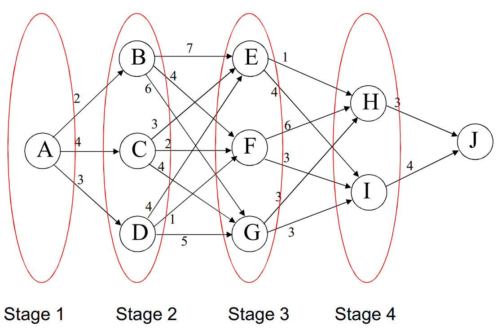
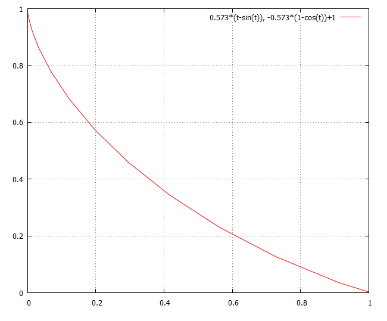

미사일의 최적 시간경로를 구한다든지, 한 점에서 다른 점까지 가장 빠른 시간에 도달하는 경로를 구한다든지, 전체기간의 기업의 이윤을 극대화하는 산출량을 구한다든지..., 각 시기별 최적의 시간경로를 구하는 문제는 다양한 분야에서 발생한다.
시간을 0과 자연수로 구분하여 각 기간 최적경로를 파악하는 문제를 이산형 모형이라 한다. 반대로 시간을 실수의 연속 집합으로 보아 최적 경로를 파악하는 문제를 연속형 모형이라 한다.
f(x_{1} ,x_{2} ,...,x_{n} )를 n 개의 상품(x_{i} \,,\,i=1,...,n)을 생산하는 기업의 이윤함수라 하면 이 기업의 이윤극대화 문제는 다음과 같다.
\max\;f(x_{1} ,x_{2} ,...,x_{n} ) \\ \\ s.t\;x_{i} \geq 0\,,\;i=1,...,n
이윤함수를 극대화하도록 t기에 생산되는 하나의 상품 x_{t} , t=1,...,T 를 선택
\max\, \sum\limits_{t=1}^{\top} f(x_{t} )
s.t\;x_{t} \geq 0\,,\;t=1,...,T
t기에 생산되는 제품량이 그 기간의 이윤함수에만 영향을 미친다고 가정하면 이 문제는 단지 정태적 문제를 T번 연속해서 푸는 것과 같다. 각각 단일변수로 구성된 T개의 1차 조건을 각각 만족시키는 해를 구하면 됨.
t기에 생산되는 제품량이 t기는 물론 다음 기간의 이윤함수에도 영향을 미친다고 가정하면 문제는 복잡해 진다.
\max\, \sum\limits_{i=1}^{\top} f(x_{t} ,\,x_{t-1} ,\,t)
s.t\;x_{i} \geq 0\,for\;i=1,...,T\;and\,x_{i} =x_{0} \,for\,i=0
이 경우 T개의 1차 조건은 독립적으로 풀 수 없고 순차적으로 풀어야 한다.
현재의 이윤은 현재의 제품생산량 뿐만 아니라 생산량 변화율에 따라 영향을 받는다면 문제는 다음과 같이 설정된다.
\max\; \int_{0}^{\top} {f(x(t),\,x ' (t)} ,\,t)dx
s.t\;x(t) \geq 0,\;x(0)=x_{0}, for 0\, \leq \,t\, \leq \,T
시간t를 무한히 잘게 쪼게 연속변수로 보고 시간 변화에 따른 최적값을 구하는 것이다. 이 경우 해의 도출은 미분방정식으로 표현된다.
이산형의 동적 최적화 문제를 푸는 데는 세 가지 방법이 있다. 하나는 KKT 조건을 다기간 모형에 확장하여 적용하는 방법이다. 또 하나는 최적제어이론(optimal control theory)이다. 다른 하나는 동적계획법(dynamic programming)이다.
단순히 KKT 조건을 다기간 제약식에 적용하는 것이다.
다음의 다기간 최대화 문제를 고려하자.
max \sum\limits_{t=0}^{\top} f(u_{t} ,\,y_{t} )
s.t y_{t+1} \,=\,y_{t} \,+\,g(u_{t} ,\,y_{t} ), for t\,=\,0,\,1,\,...,\,T
y_{0} \,=\, {\overline{y}}, y_{\scriptscriptstyle {T+1}} \, \geq \,0.........[1]
동태문제의 경우 제약식을 특히 운동방정식(equation of motion)이라 부른다.[2] 여기서 u_{t}는 의사결정자가 결정하므로 통제변수(control variable)라 부른다. y_{t}는 통제변수의 결정에 따라 운동방정식에서 결정되므로 상태변수(state variable)라 부른다.[3]
동태적 문제는 제약식이 상태변수의 차분방정식으로 표현되기 때문에 최적화 문제는 통제변수와 상태변수의 최적 시간경로를 구하는 것이 된다.
각 기의 변수를 다른 변수로 보면 문제는 (T+2)개의 등식 제약식과 1개의 비음조건 제약식으로 구성되어 있으므로 KKT 조건을 이용해서 풀 수 있다.
이 문제의 라그란지안을 만들면
L\,=\, \sum\limits_{t=0}^{\top} [f(u_{t} ,\,y_{t} )\,+\, \lambda_{t} [g(u_{t} ,\,y_{t} )\,+\,y_{t} \,-\,y_{t+1} ]]\,+ \mu ( {\overline{y}} \,-\,y_{0} )\,+\, \eta y_{\scriptscriptstyle {T+1}} \,
\lambda_{t},(t=0,\,...,\,T), \mu, \eta는 라그랑지 승수로 동태적 문제의 경우 costate 변수, 또는 adjoint 변수라고도 부른다.
이 문제의 KKT 조건은 다음과 같다.[4]
\frac{\partial L}{\partial u_{t}} \,=\, \frac{\partial f}{\partial u_{t}} \,+\, \lambda_{t} \frac{\partial g}{\partial u_{t}} \,=\,0, for t\,=\,0,\,1,\,...,\,T
\frac{\partial L}{\partial y_{t}} \,=\, \frac{\partial f}{\partial y_{t}} \,+\, \lambda_{t} ( \frac{\partial g}{\partial y_{t}} \,+\,1)\,-\, \lambda_{t-1} \,=\,0, for t\,=\,0,\,1,\,...,\,T ................[5]
\frac{\partial L}{\partial \lambda_{t}} \,=\,g(u_{t} ,\,y_{t} )\,+\,y_{t} \,-\,y_{t+1} \,=\,0
\frac{\partial L}{\partial \mu } \,=\, {\overline{y}} \,-\,y_{0} \,=\,0
y_{\scriptscriptstyle {T+1}} \, \geq \,0, \eta \, \geq \,0, \eta y_{\scriptscriptstyle {T+1}} \,=\,0 .................(complementry slackness 조건)[6]
시간을 다루는 동태적 문제의 경우 말기의 complementry slackness 조건을 특히 transver sality 조건이라고도 한다.
예) 다음의 최소화문제를 풀어라.
minimize \sum\limits_{t=0}^{2} \frac{1}{2} (y_{t}^{2} \,+\,u_{t}^{2} )
s.t y_{t+1} \,=\,y_{t} \,+\,u_{t}, t=0,\,1,\,2
y_{0} \,=\,5\,
(풀이)
라그란지안은
L\,=\, \sum\limits_{t=0}^{2} [ \frac{1}{2} (y_{t}^{2} \,+\,u_{t}^{2} )\,+\, \lambda_{t} (y_{t} \,+u_{t} \,-\,y_{t+1} )]\,+\, \mu (5-y_{0} )
i) 1차조건 :
\frac{\partial L}{\partial u_{t}} \,=\,u_{t} \,+\, \lambda_{t} \,=\,0, t=0,\,1,\,2 ..................①
\frac{\partial L}{\partial y_{0}} \,=\,y_{0} \,+\, \lambda_{0} \,-\, \mu =\,0 ...............②
\frac{\partial L}{\partial y_{1}} \,=\,y_{1} \,+\, \lambda_{1} \,-\, \lambda_{0} =\,0 ................③
\frac{\partial L}{\partial y_{2}} \,=\,y_{2} \,+\, \lambda_{2} \,-\, \lambda_{1} =\,0 .................④
\frac{\partial L}{\partial y_{3}} \,=\,-\, \lambda_{2} \,=\,0 ..............⑤
\frac{\partial L}{\partial \lambda_{t}} \,=\,y_{t} \,+\,u_{t} \,-\,y_{t+1} =\,0, for t=0,\,1,\,2 .......................⑥
\frac{\partial L}{\partial \mu } \,=\,5\,-\,y_{0} \,=\,0 ..................⑦
①, ⑥에서
y_{t+1} \,=\,y_{t} \,-\, \lambda_{t}, for t=0,\,1,\,2
이 식에 t=0,\,1,\,2 를 차례로 대입하면
y_{1} \,=\,5\,-\, \lambda_{0} \, ..........㉠
y_{2} \,=\,y_{1} \,-\, \lambda_{1} \, .............㉡
y_{3} \,=\,y_{2} \,-\, \lambda_{2} ............㉢
㉢에서 y_{3} \,=\,y_{2} \,, (∵ ⑤에서 \, \lambda_{2} \,=\,0)
④에서 \,y_{2} \,=\, \lambda_{1}
㉡에서 \,y_{2} \,=\, \frac{1}{2} y_{1}
③에서 \,y_{1} \,+\, \lambda_{1} \,=\, \lambda_{0} ⇒ \,y_{1} \,+\,y_{2} \,=\, \lambda_{0} ⇒ \,y_{1} \,+\, \frac{1}{2} y_{1} \,=\, \lambda_{0} ⇒ \, \frac{3}{2} y_{1} \,=\, \lambda_{0}
㉠에서 y_{1} \,=\,5\,-\, \lambda_{0} \, ⇒ y_{1} \,=\,5\,- \frac{3}{2} y_{1} \, ⇒ y_{1} \,=\,2
\,y_{2} \,=\,y_{3} \,=\,1
따라서 상태변수의 최적값은 y_{1} \,=\,2, \,y_{2} \,=\,1, \,y_{3} \,=\,1
⑥에 t=0,\,1,\,2 를 차례로 대입하면 통제변수의 최적값은
y_{1} \,=\,5\,+\,u_{0} ⇒ u_{0} \,=\,-3
y_{2} \,=\,y_{1} \,+\,u_{1} ⇒ u_{1} \,=\,-1
y_{3} \,=\,y_{2} \,+\,u_{2} ⇒ u_{2} \,=\,0
이때의 목적함수값은
\sum\limits_{t=0}^{2} \frac{1}{2} (y_{t}^{2} \,+\,u_{t}^{2} )\,=\, \frac{1}{2} [(5^{2} +(-3) ^{2} )+(2^{2} +(-1) ^{2} )+(1^{2} +0^{2} )]\,=\,20
ii) 2차조건 :
목적식이 볼록함수이고 제약식이 오목함수이므로 최소화의 2차 조건 만족. 따라서 구한 값이 최소값이다.
(풀이끝)
다음의 효용극대화 문제를 고려하자. 소비자는 처음 재산 A를 갖고 있고 남은 기간 동안 이 재산 및 이자소득으로 생활한다. 소비자는 T기 동안만 생존한다.
max \sum\limits_{t=0}^{\top} \beta^{t} u(c_{t} )
s.t a_{t+1} \,=\,(1+r)a_{t} \,-\,c_{t}, t=0,\,...,\,T
a_{0} \,=\,A\,, a_{\scriptscriptstyle {T+1}} \, \geq \,0\,........[8]
u(c_{t} ) : t기의 개인의 효용으로 시간 가법적이며[9] 단조증가 강오목함수이며[10], 이나다 조건을 만족한다.[11]
\beta : 개인의 주관적 시간선호 할인율, 0\,< \beta \,<\,1.......[12]
r : 시장 이자율
c_{t} : t기의 소비
a_{t} : t기의 재산
당기가치 라그랑지 함수를 만들면[13]
L\,=\, \sum\limits_{t=0}^{\top} \beta^{t} \left[ u(c_{t} )\,+\, \lambda_{t} \left( \,(1+r)a_{t} \,-\,c_{t} \,-a_{t+1} \right) \right] + \mu (\mathbf{A}-a_{0} )\,+\, \beta^{T+1} \eta a_{\scriptscriptstyle {T+1}}
\lambda_{t},(t=0,\,...,\,T), \mu, \eta는 라그랑지 승수
일차 조건(KKT 조건) :
\frac{\partial L}{\partial c_{t}} \,=\,u ' (c_{t} )\,-\, \lambda_{t} \,=\,0, for t=0,\,...,\,T .............①
\frac{\partial L}{\partial a_{0}} \,=\,- \beta^{t} \lambda_{0} (1+r)\,-\, \mu =\,0
\frac{\partial L}{\partial a_{t}} \,=\,- \beta^{t-1} \lambda_{t-1} \,+\, \beta^{t} \lambda_{t} (1+r)\,=\,0, for t=1,\,...,\,T ................②[14]
\frac{\partial L}{\partial a_{\scriptscriptstyle {T+1}}} \,=\,- \beta^{\top} \lambda_{\scriptscriptstyle {T}} \;+\, \beta^{T+1} \eta \,=\,0............③[15]
\frac{\partial L}{\partial \lambda_{t}} \,=\,(1+r)a_{t} \,-\,c_{t} \,-\,a_{t+1} \,=\,0 ..............④
\frac{\partial L}{\partial \mu } \,=\,A-a_{0} =\,0 .............⑤
a_{\scriptscriptstyle {T+1}} \, \geq \,0, \eta \, \geq \,0, \eta a_{\scriptscriptstyle {T+1}} \,=\,0 ............⑥
③에서 \lambda_{\scriptscriptstyle {T}} \,=\, \beta \eta
효용함수는 단조증가 강오목함수이므로 \,u ' (c_{\scriptscriptstyle {T}} )\,>\,0, 따라서 ①로 부터 \lambda_{\scriptscriptstyle {T}} \,=\, \beta \eta \,>\,0
0\,< \beta \,<\,1 이므로 \eta \,>\,0
따라서 ⑥으로부터 a_{\scriptscriptstyle {T+1}} \,=\,0
즉 최적해에서 말기에 남는 자원이 있어서는 안 된다. 죽기 전에 다 쓰고 죽는 것이 효용을 최대화시키는 길이다.
①, ②를 결합하면 \,u ' (c_{t-1} )\,=\,(1+r) \beta u ' (c_{t} )
경제학에서 보통 다음으로 표현한다.
\,u ' (c_{t} )\,=\,(1+r) \beta u ' (c_{t+1} )
이를 오일러 방정식(Euler equation)이라 부른다.
이차조건 :
효용함수가 오목함수이고 제약식이 선형함수이므로 충분조건 만족[16]. 따라서 최적해는 최대값이다.
오일러 방정식과 제약식은 두 변수 a_{t}, c_{t}로 이루어진 연립차분방정식이다.
제약식 두 개, 변수 두 개이므로 차분방정식의 해가 존재한다. 여기에 초기조건과 말기조건
a_{0} \,=\,A\,, a_{\scriptscriptstyle {T+1}} \,=\,0\,을 대입하면 해가 결정된다. transversality 조건이 해의 결정에 중요한 역할을 하는 것을 알 수 있다.
라그랑지승수 \lambda_{t}는 t기의 재산의 기회비용을 의미한다. ①에서 \lambda_{t} \,=\,u'(c_{t} )
즉 t기의 재산의 기회비용은 한계효용과 같아야 함을 의미
오일러등식의 경제학적 의미는 t기 소비의 한계편익(\,u ' (c_{t} )\,)이 t+1기 소비의 한계비용(t+1기 소비의 한계효용의 미래가치=\,(1+r) \beta u ' (c_{t+1} ))과 같아야 한다는 의미.
http://www.ignisratesviews.com/2009/05/26/consumption-euler-equations-explained/
또는 \, \frac{u ' (c_{t} )\,}{\beta u ' (c_{t+1} )} =\,1+r 이므로 즉 소비의 기간간 대체율은 이자수익률과 같다.
\,(1+r) \beta \,<\,1 이면 \,u ' (c_{t} )\,>\,u ' (c_{t+1} )
⇒ \,c_{t} \,>\,c_{t+1}, (∵ 효용함수는 단조증가 오목함수이므로)
시장이자율이 주관적 이자율보다 작을 때 현재시점에 소비를 늘리고 미래로 갈수록 소비를 줄인다.
\beta \,=\, \frac{1}{1+r} 이라면 \,u ' (c_{t} )\,=\,u ' (c_{t+1} ) ⇒ \,c_{t} \,=\,c_{t+1}
즉 주관적 이자율이 시장이자율과 같다면 소비자는 매기의 소비를 균등하게 배분한다.
\,(1+r) \beta \,>\,1 이면 \,u ' (c_{t} )\,<\,u ' (c_{t+1} ) ⇒ \,c_{t} \,<\,c_{t+1}
시장이자율이 주관적 이자율보다 클 때 현재시점에 소비를 줄이고 미래로 갈수록 소비를 늘린다. 내가 생각하는 수익률보다 시장이자율이 높으므로 현재 소비를 줄여(저축을 늘려) 미래의 이자소득을 기대할 것이다.
예) 앞의 예에서 효용함수가 u(c_{t} )\,=\,\ln c_{t} 라면
a) 재산과 소비의 최적 경로를 구하라.
b) \beta \,=\, \frac{1}{1+r}일 경우 자산과 소비의 최적 경로를 구하라.
(풀이)
효용함수는 단조증가 오목함수이고 이나다 조건을 만족하므로 오일러 방정식이 최대화의 필요조건이다.
a)
최대화의 조건에서 오일러방정식이 도출된다.
오일러방정식에서
\,u ' (c_{t} )\,=\,(1+r) \beta u ' (c_{t+1} ) ⇒ \frac{1}{c_{t}} \,=\, \frac{\beta (1+r)}{c_{t+1}}
⇒ c_{t+1} \,=\, \beta (1+r)c_{t}
이 차분방정식의 해는
c_{t} \,=\, \beta^{t} (1+r) ^{t} c_{0} ............①
제약식은
a_{t+1} \,=\,(1+r)a_{t} \,-\,c_{t}
이를 전개하면
a_{\scriptscriptstyle {T+1}} \,=\,(1+r)a_{\scriptscriptstyle {T}} \,-\,c_{\scriptscriptstyle {T}} ⇒ \frac{a_{\scriptscriptstyle {T+1}}}{1+r} \,+\, \frac{c_{\scriptscriptstyle {T}}}{1+r} =\,a_{\scriptscriptstyle {T}} \,
a_{\scriptscriptstyle {T}} \,=\,(1+r)a_{\scriptscriptstyle {T-1}} \,-\,c_{\scriptscriptstyle {T-1}} ⇒ \frac{a_{\scriptscriptstyle {T}}}{1+r} \,+\, \frac{c_{\scriptscriptstyle {T-1}}}{1+r} \,=\,a_{\scriptscriptstyle {T-1}} \, ⇒ \frac{a_{\scriptscriptstyle {T+1}}}{(1+r) ^{2}} +\, \frac{c_{\scriptscriptstyle {T}}}{(1+r) ^{2}} \,+\, \frac{c_{\scriptscriptstyle {T-1}}}{1+r} \,=\,a_{\scriptscriptstyle {T-1}} \,
a_{\scriptscriptstyle {T-1}} \,=\,(1+r)a_{\scriptscriptstyle {T-2}} \,-\,c_{\scriptscriptstyle {T-2}} ⇒ \frac{a_{\scriptscriptstyle {T-1}}}{1+r} \,+\, \frac{c_{\scriptscriptstyle {T-2}}}{1+r} \,=\,a_{\scriptscriptstyle {T-2}} \,⇒\frac{a_{\scriptscriptstyle {T+1}}}{(1+r) ^{3}} +\, \frac{c_{\scriptscriptstyle {T}}}{(1+r) ^{3}} \,+\, \frac{c_{\scriptscriptstyle {T-1}}}{(1+r) ^{2}} + \frac{c_{\scriptscriptstyle {T-2}}}{1+r} \,=\,a_{\scriptscriptstyle {T-2}} \,
\vdots
\frac{a_{\scriptscriptstyle {T+1}}}{(1+r) ^{T+1}} +\, \frac{c_{\scriptscriptstyle {T}}}{(1+r) ^{T+1}} \,+\, \cdots \,+\, \frac{c_{1}}{(1+r) ^{2}} \,+\, \frac{c_{0}}{1+r} \,=\,a_{0} \,
⇒ a_{0} \,=\, \sum\limits_{i=0}^{\top} \frac{c_{i}}{(1+r) ^{i+1}}, (∵ a_{\scriptscriptstyle {T+1}} \,=\,0)............②[17]
①에서 c_{i} \,=\, \beta^{i} (1+r) ^{i} c_{0} 이므로 이를 ②에 대입하면
a_{0} \,=\, \sum\limits_{i=0}^{\top} \frac{\beta^{i} (1+r) ^{i} c_{0}}{(1+r) ^{i+1}} \,=\,c_{0} \sum\limits_{i=0}^{\top} \frac{\beta^{i}}{1+r}
⇒ c_{0} \,=\, \frac{(1+r)}{\sum\limits_{i=0}^{\top} \beta^{i}} a_{0}\,=\, \frac{(1+r)}{\sum\limits_{i=0}^{\top} \beta^{i}} \mathbf{A}, (∵ a_{0} \,=\,A)
따라서 ①은
c_{t} \,=\, \beta^{t} (1+r) ^{t} c_{0}
⇒ c_{t} \,=\, \frac{\beta^{t} (1+r) ^{t+1}}{\sum\limits_{i=0}^{\top} \beta^{i}} \mathbf{A}, for t=0,\,...,\,T
a_{t}의 경로는
a_{t+1} \,=\,(1+r)a_{t} \,-\, \frac{\beta^{t} (1+r) ^{t+1}}{\sum\limits_{i=0}^{\top} \beta^{i}} \mathbf{A}
이 차분방정식을 풀면
제약식 a_{t+1} \,=\,(1+r)a_{t} \,-\,c_{t} 의 해는[18]
a_{t} \,=\,(1+r) ^{t} a_{0} \,- \sum\limits_{i=0}^{t-1} (1+r) ^{i} c_{t-i}
=\,(1+r) ^{t} a_{0} \,- \sum\limits_{i=0}^{t-1} (1+r) ^{i} \beta^{t-i} (1+r) ^{t-i} c_{0}
=\,(1+r) ^{t} a_{0} \,- \sum\limits_{i=0}^{t-1} \beta^{t-i} (1+r) ^{t} c_{0}
=\,(1+r) ^{t} a_{0} \,- \frac{(1+r) ^{t+1}}{\sum\limits_{t=0}^{\top} \beta^{t}} a_{0} \sum\limits_{i=0}^{t-1} \beta^{t-i}
b)
\beta \,=\, \frac{1}{1+r} 이라면, 즉 주관적 이자율이 시장이자율과 같다면
\,u ' (c_{t} )\,=\,u ' (c_{t+1} )
효용함수는 단조증가함수이므로 \,c_{t} \,=\,c_{t+1}
따라서 소비자는 매기의 소비를 균등하게 배분한다.
a_{0} \,=\, \sum\limits_{t=0}^{\top} \frac{\beta^{t} (1+r) ^{t} c_{0}}{(1+r) ^{t+1}} \,=\,c_{0} \sum\limits_{t=0}^{\top} \frac{1}{(1+r) ^{t+1}}
=\,c_{0} \frac{ 1- \frac{1}{(1+r) ^{T+1}} }{1- \frac{1}{1+r}}, (∵ 초항 1, 공비 \frac{1}{1+r}의 등비급수의 합)
=\,c_{0} \frac{ 1+r-(1+r) ^{-T} }{r}
c_{t} \,=\, \beta^{t} (1+r) ^{t} c_{0} \,=\,c_{0} ⇒ 매기의 소비는 일정하다.
=\,a_{0} \frac{r}{1+r-(1+r) ^{-T}}
a_{t+1} \,=\,(1+r)a_{t} \,-\,c_{t}
a_{t+1} \,=\,(1+r)a_{t} \,-\, \frac{Ar}{1+r-(1+r) ^{-T}}
이는 비동차항이 상수인 차분방정식이므로 해는
a_{t} \,=\,(1+r) ^{t} \left( A\,+\, \frac{\alpha }{r} \right) \,- \frac{\alpha }{r}, where \alpha \,=\,-\, \frac{Ar}{1+r-(1+r) ^{-T}}
1+r\,>\,1 이므로 재산은 점점 증가한다.
(풀이끝)
경제문제는 변수에 비음제약이 있는 것이 일반적이다.
앞의 예에서 소비에 비음조건이 있는 경우는 다음과 같이 문제를 설정할 수 있다.
maximize \sum\limits_{t=0}^{\top} \beta^{t} u(c_{t} )
s.t a_{t+1} \,=\,(1+r)a_{t} \,-\,c_{t}, t=0,\,...,\,T
a_{0} \,=\,A\,
\,c_{t} \, \geq \,0\, for t=0,\,...,\,T
(풀이)
당기가치 라그랑지 함수를 만들면
L\,=\, \sum\limits_{t=0}^{\top} \beta^{t} \left[ u(c_{t} )\,+\, \lambda_{t} \left( \,(1+r)a_{t} \,-\,c_{t} \,-a_{t+1} \right) \,+\, \gamma_{t} c_{t} \right] + \mu (\mathbf{A}-a_{0} )\,+\, \beta^{T+1} \eta a_{\scriptscriptstyle {T+1}}
\lambda_{t}, \alpha_{t}, \gamma_{t}, \mu, \eta는 라그랑지 승수
KKT 조건 :
\frac{\partial L}{\partial c_{t}} \,=\,u ' (c_{t} )\,-\, \lambda_{t} \,+\, \gamma_{t} =\,0, for t=0,\,...,\,T .............①
\frac{\partial L}{\partial a_{0}} \,=\, \lambda_{0} (1+r)\,-\, \mu =\,0 .................②
\frac{\partial L}{\partial a_{t}} \,=\,- \beta^{t-1} \lambda_{t-1} \,+\, \beta^{t} \lambda_{t} (1+r)\,=\,0, for t=1,\,...,\,T ................③
\frac{\partial L}{\partial a_{\scriptscriptstyle {T+1}}} \,=\,- \beta^{\top} \lambda_{\scriptscriptstyle {T}} \;+\, \beta^{T+1} \eta \,=\,0............④
\frac{\partial L}{\partial \lambda_{t}} \,=\,(1+r)a_{t} \,-\,c_{t} \,-\,a_{t+1} \,=\,0, for t=0,\,...,\,T..............⑤
\frac{\partial L}{\partial \mu } \,=\,A-a_{0} =\,0 .............⑥
c_{t} \, \geq \,0, \gamma_{t} \, \geq \,0, \gamma_{t} c_{t} \,=\,0, for t=0,\,...,\,T ................⑦
a_{\scriptscriptstyle {T+1}} \, \geq \,0, \eta \, \geq \,0, \eta a_{\scriptscriptstyle {T+1}} \,=\,0 ............⑧
효용함수의 이나다 가정에 의해 소비가 작을 경우 한계효용이 무한대이므로 반드시 소비하는 것이 최적해이다. 따라서 c_{t} \,>\,0 ⇒ ⑦의 조건에 의해 \gamma_{t} \,=\,0
⇒ ①에서 \frac{\partial L}{\partial c_{t}} \,=\,u ' (c_{t} )\,-\, \lambda_{t} \,=\,0
따라서 효용함수의 이나다 조건을 가정했을 경우 해는 항상 양의 수(내부)에서 결정되고 KKT조건은 비음제약식이 없는 경우와 같다. 따라서 경제문제의 모형화에서 보통 목적함수의 이나다조건을 가정하고 비음조건을 생략하는 경우가 많다.
For a unique solution to any optimization problem, the objective function should be bounded away from infinity.[19]
max \sum\limits_{t=0}^{\infty } f(u_{t} ,\,y_{t} ,\,t)
s.t y_{t+1} \,=\,y_{t} \,+\,g(u_{t} ,\,y_{t} ,\,t), for t\,=\,0,\,1,\,...
y_{0} \,=\, {\overline{y}}
이 문제의 라그랑지 함수를 만들면
L\,=\, \sum\limits_{t=0}^{\infty } [f(u_{t} ,\,y_{t} ,\,t)\,+\, \lambda_{t} [g(u_{t} ,\,y_{t} ,\,t)\,+\,y_{t} \,-\,y_{t+1} ]]\,+\, \mu ( {\overline{y}} \,-\,y_{0} )
\lambda_{t},(t=0,\,...,\,T), \mu는 라그랑지 승수
이 문제의 KKT 조건은 transversality 조건만 제외하고 기간이 유한인 경우와 같다.[20]
\frac{\partial L}{\partial u_{t}} \,=\, \frac{\partial f}{\partial u_{t}} (u_{t} ,\,y_{t} ,\,t)\,+\, \lambda_{t} \frac{\partial g}{\partial u_{t}} (u_{t} ,\,y_{t} ,\,t)\,=\,0, for t\,=\,0,\,1,\,...,\, \infty ............①
\frac{\partial L}{\partial y_{t+1}} \,=\, \frac{\partial f}{\partial y_{t+1}} (u_{t+1} ,\,y_{t+1} ,\,t+1)\,+\, \lambda_{t+1} [ \frac{\partial g}{\partial y_{t+1}} (u_{t+1} ,\,y_{t+1} ,\,t+1)\,+\,1]\,-\, \lambda_{t} \,=\,0,
for t\,=\,0,\,1,\,...,\, \infty ..............②
\frac{\partial L}{\partial \lambda_{t}} \,=\,g(u_{t} ,\,y_{t} ,\,t)\,+\,y_{t} \,-\,y_{t+1} \,=\,0 .............③
\frac{\partial L}{\partial \mu } \,=\, {\overline{y}} \,-\,y_{0} \,=\,0 ..............④
\lim\limits_{t \to \infty } {\lambda_{t}} y_{t+1} \,=\,0............⑤
이상이 최대화의 필요조건이다. KKT조건은 목적함수가 오목함수이면 최대화의 필요충분조건이 된다.
⑤는 transversality 조건으로 complementary slackness 조건의 동태적 버전이다.[21]
①에서
\lambda_{t} \,=\,- \frac{\partial f}{\partial u_{t}} \, \bigg / \frac{\partial g}{\partial u_{t}}
따라서 transversality 조건은
\lim\limits_{t \to \infty } {\left(- \frac{\partial f}{\partial u_{t}} \, \bigg / } \frac{\partial g}{\partial u_{t}} \right) y_{t+1} \,=\,0
예) 다음의 재산 제약하의 효용극대화 문제를 고려하자. 생존기간은 무한대이다.[22]
maximize \sum\limits_{t=0}^{\infty } \beta^{t} \ln c_{t}
s.t a_{t+1} \,=\,(1+r)a_{t} \,-\,c_{t}, t=0,\,1,...,\, \infty
a_{0} \,=\,A
재산과 소비의 최적 경로를 구하라
(풀이)
이 문제의 라그랑지 함수를 만들면
L\,=\, \sum\limits_{t=0}^{\infty } \beta^{t} [u(c_{t} )\,+\, \lambda_{t} [(1+r)a_{t} \,-\,c_{t} \,-\,a_{t+1} ]]\,+\, \mu (A\,-\,a_{0} )
\lambda_{t},(t=0,\,...,\,T), \mu는 라그랑지 승수
KKT 조건은
\frac{\partial L}{\partial c_{t}} \,=\,u(c_{t} )'\,-\, \lambda_{t} \,=\,0, for t\,=\,0,\,1,\,...,\, \infty ............①
\frac{\partial L}{\partial a_{t+1}} \,=\,- \beta^{t} \lambda_{t} \,+\, \beta^{t+1} \lambda_{t+1} (1+r)\,=\,0, for t\,=\,0,\,1,\,...,\, \infty ..............②
\frac{\partial L}{\partial \lambda_{t}} \,=(1+r)a_{t} \,-\,c_{t} \,-\,a_{t+1} \,=\,0 .............③
\frac{\partial L}{\partial \mu } \,=A\,-\,a_{0} \,=\,0 ..............④
\lim\limits_{t \to \infty } {\beta^{t} \lambda_{t}} a_{t+1} \,=\,0............⑤
⑤는 transversality 조건(TVC)이다. ①을 대입하여 다시 쓰면
\lim\limits_{t \to \infty } {\beta^{t} u'(c_{t} )} a_{t+1} \,=\,0
이 의미는 현재가치로 할인된 한계효용 × 남은 재산은 시간이 흐를수록 0에 가까워져야 한다는 의미. 남은 재산이 0이 안되면 (-)의 재산이 가능할 것이고 이는 효용을 극대화하기 위해 빚을 지는 한이 있더라도 소비를 무한정 늘린다는 의미이다.[23] 반면 남은 재산이 (+)라면 다 소비하지 않은 경우이므로 최대 효용을 이루지 못한다.
\beta \,<\,1 이므로 \lim\limits_{t \to \infty } {\beta^{t}} \,=\,0, 따라서 {a_{t}}가 일정하거나 감소수열이면 TVC를 만족한다. 또 TVC는 {a_{t}}가 \beta^{t}의 할인을 상쇄할 만큼 지나치게 빨리 증가하지만 않으면 만족한다. 이 경우 때때로 적당한 차입을 통한 소비활동이 전생애의 효용극대화를 위한 최적 행동일수도 있다.[24]
①, ②에서
\,u ' (c_{t} )\,=\,(1+r) \beta u ' (c_{t+1} )
이는 오일러등식이다.
\,u ' (c_{t} )\,=\, \frac{1}{c_{t}} 이므로 오일러등식은 \,c_{t+1} \,=\,(1+r) \beta c_{t}
이 차분방정식의 해는 \,c_{t} \,=\,(1+r) ^{t} \beta^{t} c_{0}
기간이 T일 때
a_{0} \,=\, \sum\limits_{t=0}^{\top} \frac{c_{t}}{(1+r) ^{t+1}} \,+\, \frac{a_{\scriptscriptstyle {T+1}}}{(1+r) ^{T+1}}
T\, \to \, \infty 일 때
a_{0} \,=\, \lim\limits_{\scriptscriptstyle {T \to \infty}} {\left[ \sum\limits_{t=0}^{\top} \frac{c_{t}}{(1+r) ^{t+1}} \,+\, \frac{a_{\scriptscriptstyle {T+1}}}{(1+r) ^{T+1}} \right]}
=\, \sum\limits_{t=0}^{\infty } \frac{c_{t}}{(1+r) ^{t+1}} \,, (∵ transversality 조건에 의해 \lim\limits_{\scriptscriptstyle {T \to \infty}} \, \frac{a_{\scriptscriptstyle {T+1}}}{(1+r) ^{T+1}} \,=\,0..........[25])
⇒ A\,=\, \sum\limits_{t=0}^{\infty } \frac{c_{t}}{(1+r) ^{t+1}} \,=\, \sum\limits_{t=0}^{\infty } \frac{(1+r) ^{t} \beta^{t} c_{0}}{(1+r) ^{t+1}} =c_{0} \, \sum\limits_{t=0}^{\infty } \frac{\beta^{t}}{1+r} \,=\, \frac{c_{0}}{(1+r)(1- \beta )}
∴ c_{0} \,=\,(1+r)(1- \beta )A
따라서 소비의 경로는
\,c_{t} \,=\,[(1+r) \beta ] ^{t} (1+r)(1- \beta )A
\,(1+r) \beta ≶ 1 에 따른 소비패턴은 기간이 유한인 경우와 같다. 단 소비는 무한한 기간 동안 이루어지는 것이 최적이다. 특정 유한한 기간 동안에 모든 소비를 끝내고 남은 기간 소비를 안 하는 것은 최적이 아니다.
재산의 경로는
a_{t+1} \,=\,(1+r)a_{t} \,-\,(1+r) ^{t+1} \beta^{t} (1- \beta )A
(풀이끝)
재산 {a_{t}}의 비음조건이 없다면 오일러등식과 제약식을 만족하면서도 무제한의 차입을 통해 소비를 최대화할 수 있다. 이를 방지하기 위해 재산 {a_{t}}의 비음조건 대신 더 폭 넓은 조건인 다음의 조건을 추가할 수 있다.
\lim\limits_{t \to \infty } {\frac{a_{t+1}}{(1+r) ^{t+1}}} \, \geq \,0
이는 먼 미래에 재산의 현재가치가 0 보다 크면 된다는 조건이므로 중간에 어느 정도의 부채를 인정한다. 이 조건을 no Ponzi game 조건이라 한다.[26]
no Ponzi game(nPg) 조건은 최적해에서 등식으로 만족해야 한다. 최적해에서 재산이 남는 것은 추가적으로 소비할 재산이 있다는 의미이므로 더 효용을 증가시킬 수 있으므로 최적해의 가정에 위배된다. 따라서 최적해에서 \lim\limits_{t \to \infty } {\frac{a_{t+1}}{(1+r) ^{t+1}}} \,=\,0.[27] 이는 앞에서 보았듯이 TVC를 의미한다. 따라서 최적해에서 nPg조건은 TVC과 같기 때문에 경제모형에서 단순히 재산의 비음조건을 추가하기보다 더 완화된 조건인 nPg 조건을 추가함으로써 비음조건과 TVC를 만족하는 것으로 가정한다.
예) 다음 문제의 오일러 방정식을 구하라
max \sum\limits_{t=0}^{\infty } \beta^{t} u(c_{t} )
s.t k_{t+1} \,=\,f(k_{t} )\,-\,c_{t}, t=0,\,1,...,\, \infty
(풀이)
이 문제의 라그랑지 함수를 만들면
L\,=\, \sum\limits_{t=0}^{\infty } \beta^{t} [u(c_{t} )\,+\, \lambda_{t} [f(k_{t} )\,-\,c_{t} \,-k_{t+1} ]]\,
\lambda_{t},(t=0,\,...,\,T)는 라그랑지 승수
KKT 조건은
\frac{\partial L}{\partial c_{t}} \,=\,u'(c_{t} )\,-\, \lambda_{t} \,=\,0, for t\,=\,0,\,1,\,...,\, \infty ............①
\frac{\partial L}{\partial k_{t+1}} \,=\,- \beta^{t} \lambda_{t} \,+\, \beta^{t+1} \lambda_{t+1} f'(k_{t+1} )\,=\,0, for t\,=\,0,\,1,\,...,\, \infty ..............②
\frac{\partial L}{\partial \lambda_{t}} \,=f(k_{t} )\,-\,c_{t} \,-\,k_{t+1} \,=\,0 .............③
\lim\limits_{t \to \infty } {\beta^{t} \lambda_{t}} k_{t+1} \,=\,0............④
①, ②에서
\,u ' (c_{t} )\,=\,f'(k_{t+1} ) \beta u ' (c_{t+1} )
이는 오일러등식이다.
(풀이끝)
최적제어이론의 이산형이라 할 수 있다. 다음의 문제를 고려하자.
max \sum\limits_{t=0}^{T-1} f(u_{t} ,\,y_{t} )
s.t y_{t+1} \,=\,y_{t} \,+\,g(u_{t} ,\,y_{t} ), for t\,=\,0,\,1,\,...,\,T-1
y_{0} \,=\,A, A는 상수
이 문제의 라그란지안 함수는
L\,= \sum\limits_{t=0}^{T-1} [f\,(u_{t} ,\,y_{t} )\,+\, \lambda_{t+1} [g(u_{t} ,\,y_{t} )+\,y_{t} -y_{t+1} ]\,+\, \lambda_{0} (A-y_{0} )
다음의 함수를 정의하자.
H_{t} (u_{t} ,\,y_{t} ,\, \lambda_{t+1} )\,=f\,(u_{t} ,\,y_{t} )\,+\, \lambda_{t+1} g(u_{t} ,\,y_{t} )
이 함수를 Hamiltonian이라 부른다.
Hamiltonian을 라그란지안에 대입하면
\,L\,=\, \sum\limits_{t=1}^{\top} [\mathbf{H}_{t} \,- \lambda_{t+1} (y_{t+1} -y_{t} )]+\, \lambda_{0} (\mathbf{A}\,-\,y_{0} )
필요조건은
\frac{\partial L}{\partial u_{t}} \,=\, \frac{\partial H_{t}}{\partial u_{t}} \,=\,0 ...........①
\frac{\partial L}{\partial y_{t}} \,=\, \frac{\partial H_{t}}{\partial y_{t}} \,+ \lambda_{t+1} -\, \lambda_{t} =\,0
⇒ \lambda_{t+1} -\, \lambda_{t} =\,-\, \frac{\partial H_{t}}{\partial y_{t}}.............②
\frac{\partial L}{\partial \lambda_{t}} \,=\,g(u_{t} ,\,y_{t} )\,+\,y_{t} -\,y_{t+1} \,=\,0 ...............③
\frac{\partial L}{\partial \lambda_{0}} \,=\,A\,-\,y_{0} \,=\,0 ...................④
즉 해밀토니안을 극대화하는 것이 라그랑지 함수의 극대화와 조건이 같다. 이 조건들을 최대화원리라 한다.[28]
상태변수에 말기조건의 여부에 따라 이상의 조건에 TVC를 추가해야 한다. 말기값의 제약조건에 따라 TVC는 다음과 같이 구분된다.
|
|
y_{\scriptscriptstyle {T}} \,=\,B, B는 상수 | 최대화 문제일 경우 \lambda_{\scriptscriptstyle {T}} \, \geq \,0 |
y_{\scriptscriptstyle {T}} \, 조건 없음 | \lambda_{\scriptscriptstyle {T}} \,=\,0 |
y_{\scriptscriptstyle {T}} \, \geq \,B | \lambda_{\scriptscriptstyle {T}} \, \geq \,0, y_{\scriptscriptstyle {T}} \, \geq \,B, \lambda_{\scriptscriptstyle {T}} (y_{t} \,-\,B)\,=\,0 |
여기서 \lambda_{\scriptscriptstyle {T}} \,는 말기 상태변수의 해당 제약식에 대응하는 라그랑지 승수이다.
y_{\scriptscriptstyle {T}} \,=\,B 일 경우 최대화 문제일 때 \lambda_{\scriptscriptstyle {T}} \, \geq \,0는 정태적 최적화 라그랑지 방법에서 고찰한 결과이다.[29]
y_{\scriptscriptstyle {T}} \,의 조건이 없으면 말기에서 y_{\scriptscriptstyle {T}} \,에 관한 제약식의 변화가 목적식에 어떠한 영향도 미치지 못한다. 따라서 기회비용을 나타내는 말기의 라그랑지 승수 \lambda_{\scriptscriptstyle {T}} \,=\,0
y_{\scriptscriptstyle {T}} \, \geq \,B 이면 complementery slackness 조건에 의해 \lambda_{\scriptscriptstyle {T}} \, \geq \,0, y_{\scriptscriptstyle {T}} \, \geq \,B, \lambda_{\scriptscriptstyle {T}} (y_{t} \,-\,B)\,=\,0
f, g가 오목함수이면 라그란지안 함수 L도 오목함수이다. 이 때 최대화원리는 최대화의 필요충분조건이 된다.
The Maximum Principal prescribes that, along the optimal path, u_{t} should be chosen in such a way as to maximize the total benefits in each period. In a limited sense, the Maximum principle transforms a dynamic optimization problem into a sequence of static optimization problems. These static problems are related by two intertemporal equations - the transition equation and the corresponding equation determining the evolution of the shadow price \lambda_{t}.
통제변수 u_{t}에 제약이 있는 경우 최대화원리는 다음과 같이 일반화된다.
예를 들어 u_{t} \, \leq \,U 라면 최대화원리는
max{}_{u_{t}} H_{t} (u_{t} ,\,y_{t} ,\, \lambda_{t+1} ) s.t u_{t} \, \leq \,U \lambda_{t+1} -\, \lambda_{t} =\,-\, \frac{\partial H_{t}}{\partial y_{t}} y_{t+1} \,=\,y_{t} \,+\,g(u_{t} ,\,y_{t} ) y_{0} \,=\, {\overline{y}} |
예) 다음의 최소화문제를 풀어라.
minimize \sum\limits_{t=0}^{2} \frac{1}{2} (y_{t}^{2} \,+\,u_{t}^{2} )
s.t y_{t+1} \,=\,y_{t} \,+\,u_{t}, t=0,\,1,\,2
y_{0} \,=\,5\,
(풀이)
minimize \sum\limits_{t=0}^{2} \frac{1}{2} (y_{t}^{2} \,+\,u_{t}^{2} ) ⇒ maximize \sum\limits_{t=0}^{2} - \frac{1}{2} (y_{t}^{2} \,+\,u_{t}^{2} )
이 문제의 해밀토니안은
H_{t} \,=\,- \frac{1}{2} (y_{t}^{2} \,+\,u_{t}^{2} )\,+\, \lambda_{t+1} u_{t} \,
i) 1차조건 :
\frac{\partial H}{\partial u_{t}} \,=\,-u_{t} \,+\, \lambda_{t+1} =\,0, for t = 0, 1, 2 ...........①
\lambda_{t+1} -\, \lambda_{t} =\,-\, \frac{\partial H_{t}}{\partial y_{t}} \,=\,y_{t} \,, for t = 0, 1, 2 ...........②
y_{t+1} \,=\,y_{t} \,+\,u_{t}, for t=0,\,1,\,2 .............③
y_{0} \,=\,5\,.............④
\lambda_{3} \,=\,0 ..................⑤
①, ②는 해밀토니안 최대화조건, ③, ④는 제약식, ⑤는 TVC
이상의 조건을 이용해 상태변수{y_{t}}와 통제변수{u_{t}}의 최적값을 구한다.
①, ③에서
y_{t+1} \,=\,y_{t} \,+\, \lambda_{t+1}, for t=0,\,1,\,2
이 식에 t=0,\,1,\,2 를 차례로 대입하면
y_{1} \,=\,y_{0} \,+\, \lambda_{1} \, ⇒ y_{1} \,=\,5\,+\, \lambda_{1} \, ..........㉠
y_{2} \,=\,y_{1} \,+\, \lambda_{2} \, .............㉡
y_{3} \,=\,y_{2} \,+\, \lambda_{3} ⇒ y_{3} \,=\,y_{2} \,, (∵ ⑤에서 \lambda_{3} \,=\,0) ............㉢
②에 t=0,\,1,\,2 를 차례로 대입하면
\lambda_{1} -\, \lambda_{0} =\,y_{0} \, ⇒ \lambda_{1} -\, \lambda_{0} =\,5\, .............㉣
\lambda_{2} -\, \lambda_{1} =\,y_{1} \, ................㉤
\lambda_{3} -\, \lambda_{2} =\,y_{2} \, ⇒ -\, \lambda_{2} =\,y_{2} \, ...............㉥
㉡, ㉥에서 y_{2} \,=\, \frac{1}{2} y_{1} \,
㉥에서 -\, \lambda_{2} =\,y_{2} \, ⇒ \lambda_{2} \,=\,- \frac{1}{2} y_{1} \, ................㉦
㉤에서 \lambda_{2} -\, \lambda_{1} =\,y_{1} \, ⇒ \lambda_{1} \,=\,- \frac{3}{2} y_{1} \,
㉠에서 y_{1} \,=\,5\,+\, \lambda_{1} \, ⇒ y_{1} \,=\,5\,- \frac{3}{2} y_{1} \, ⇒ y_{1} \,=\,2
㉦에서 \lambda_{2} \,=\,-1\,, ㉥에서 -\, \lambda_{2} =\,y_{2} \,=\,1, ㉢에서 \,y_{3} \,=\,1
상태변수의 최적값은
∴ y_{1} \,=\,2, \,y_{2} \,=\,1, \,y_{3} \,=\,1
②에 t=0,\,1,\,2 를 차례로 대입하면 통제변수의 최적값은
y_{1} \,=\,5\,+\,u_{0} ⇒ u_{0} \,=\,-3
y_{2} \,=\,y_{1} \,+\,u_{1} ⇒ u_{1} \,=\,-1
y_{3} \,=\,y_{2} \,+\,u_{2} ⇒ u_{2} \,=\,0
따라서 최소값은
\sum\limits_{t=0}^{2} \frac{1}{2} (y_{t}^{2} \,+\,u_{t}^{2} )\,=\, \frac{1}{2} [(5^{2} +(-3) ^{2} )+(2^{2} +(-1) ^{2} )+(1^{2} +0^{2} )]\,=\,20
앞의 동적 KKT방법의 예에서 구한 것과 같은 결과이다.
ii) 2차조건 :
목적식이 볼록함수이고 제약식이 오목함수이므로 2차 조건 만족. 따라서 구한 값이 최소값이다.
(풀이끝)
앞에서 고찰한 예산제약하의 다기간 효용극대화 문제를 고려하자. 변수의 설명과 가정은 앞의 경우와 같다.
maximize \sum\limits_{t=0}^{\top} \beta^{t} u(c_{t} )
s.t a_{t+1} \,=\,(1+r)a_{t} \,-\,c_{t}, t=0,\,...,\,T
a_{0} \,=\,A\,
(풀이)
현재가치 해밀토니안은
H_{t} = \beta^{t} u(c_{t} )\,+\, \lambda_{t+1} (ra_{t} \,-\,c_{t} \,)
최적화원리는
\frac{\partial H_{t}}{\partial c_{t}} \,=\, \beta^{t} u ' (c_{t} )\,-\, \lambda_{t+1} \,=\,0 .............①
- \frac{\partial H_{t}}{\partial a_{t}} \,=\;-r \lambda_{t+1} \,=\; \lambda_{t+1} \,-\, \lambda_{t}
⇒ (1+r) \lambda_{t+1} \,=\, \lambda_{t} \, ..............②
a_{t+1} \,=\,(1+r)a_{t} \,-\,c_{t}, t=0,\,...,\,T .............③
a_{0} \,=\,A\, ...............④
②에 ①을 대입하면
\, \beta^{t} (1+r)u ' (c_{t} )\,=\, \beta^{t-1} u ' (c_{t-1} )\,
⇒ \,u ' (c_{t} )\,=\,(1+r) \beta u ' (c_{t+1} )
이는 오일러등식이다. 동적 KKT 방법과 같은 결과이다.
역시 오일러등식과 제약식을 이용해 차분방정식을 풀 수 있다.
단계별로 순차적으로 구성된 문제가 있다고 하자.[30] 원 문제를 맨 뒷 단계(또는 맨 처음 단계)부터 시작하는 현 단계와 이웃 단계로 구성된 작은 문제로 쪼개고 작은 문제의 해를 구한 다음 그것들의 순차적인 성질을 이용하여 다음 단계를 결합해 결합된 새로운 문제의 해를 풀고, 결과적으로 전체 단계로 구성된 원 문제의 해를 구하는 방법.
문제를 동적계획기법으로 풀기 위해서는 두 가지 전제조건이 필요하다.
첫째는 각 기간(단계)의 성과는 그 기간에 취해진 결정과 당기의 상태에만 의존한다. 각 단계는 다수의 상태로 구성되고 각 단계에서 취해진 결정은 현 상태를 다음 단계의 상태로 변화시킨다. 시간으로 구성된 문제일 경우 이는 시스템이 마르코브(Markov) 특성을 갖는다는 의미이다.[31] 이는 제약식을 구성하는 미분방정식 또는 차분방정식이 자생적이란 의미이다.
둘째는 목적함수가 시간 분할적(또는 각 단계가 구분)이어야 한다.[32]
이 두 특성은 문제를 순차적으로 만들어 동적계획법으로 풀 수 있게 한다.
An optimal policy has the property that whatever the initial state and initial
decision are, the remaining decision must constitute an optimal policy with regard to the state resulting from the first decision
예) 최단거리 경로문제(shortest path problem)

위와 같은 여행경로를 갖는 문제를 고려하자. 그림의 숫자는 각 지역간의 거리를 의미한다. 여행자는 A에서 J까지 가는 가장 빠른 경로를 구하는 것이 문제이다. 이를 동적계획법을 이용해서 풀어라.
(풀이)
1)
먼저 가장 마지막 단계의 전단계인 단계4에서 시작한다. 단계 n에서 상태변수를 y_{n}이라 하고 단계 n의 상태 y_{n}에서 마지막 단계까지 가는 최단거리를 V_{n} (y_{n} )라 하면, y_{4}는 H, I 두 상태로 구성되어 있고, y_{5}는 J 한 상태로 구성되어 있다.
D(y_{4} \, \to \,y_{5} )를 y_{4}에서 y_{5}로 가는 거리라고 하면 y_{4}에서 y_{5}로 가는 최단거리 V_{4} (y_{4} )는 다음과 같다.
V_{4} (y_{4} )\,=\,\min\, \left\{ D(y_{4} \, \to \,y_{5} ) \right\}
상태 H일 경우 : H에서 J로 가는 최단거리는 3이므로 V_{4} (H)\,=\,3
상태 I일 경우 : I에서 J로 가는 최단거리는 4이므로 V_{4} (I)\,=\,4
이를 표로 표시하면
y_{4} | y_{5} | V_{4} (y_{4} ) |
H | J | 3 |
I | J | 4 |
2)
단계3에서 단계4의 각 상태로 가는 경로에 단계4 이후의 최단거리를 더한 값 중에서 최단거리를 구한다.
V_{3} (y_{3} )\,=\,\min\, \left\{ D(y_{3} \, \to \,y_{4} )\,+\,V_{4} (y_{4} ) \right\}
상태 E일 경우 :
EH + HJ = 1 + 3 = 4
EI + IJ = 4 + 4 = 8
따라서 E에서 시작할 때 최단경로는 EHJ, 최단거리는 V_{3} (E) = 4
상태 F일 경우 :
FH + HJ = 6 + 3 = 9
FI + IJ = 3 + 4 = 7
따라서 F에서 시작할 때 최단경로는 FIJ, 최단거리는 V_{3} (F) = 7
상태 G일 경우 :
GH + HJ = 3 + 3 = 6
GI + IJ = 3 + 4 = 7
따라서 G에서 시작할 때 최단경로는 GHJ, 최단거리는 V_{3} (G) = 6
이를 표로 표시하면
y_{3} | y_{4} | V_{3} (y_{3} ) |
E | H | 4 |
F | I | 7 |
G | H | 6 |
3)
단계2에서 단계3의 각 상태로 가는 경로에 단계3 이후의 최단거리를 더한 값 중 최단거리를 구하는 것이다.
V_{2} (y_{2} )\,=\,\min\, \left\{ D(y_{2} \, \to \,y_{3} )\,+\,V_{3} (y_{3} ) \right\}
상태 B일 경우 :
BE + EH = 7 + 4 = 11
BF + FI = 4 + 7 = 11
BG + GH = 6 + 6 = 12
따라서 B에서 시작할 때 최단경로는 BEH, BFI, 최단거리는 V_{2} (B) = 11
상태 C일 경우 :
CE + EH = 3 + 4 = 7
CF + FI = 2 + 7 = 9
CG + GH = 4 + 6 = 10
따라서 C에서 시작할 때 최단경로는 CEH, 최단거리는 V_{2} (C) = 7
상태 D일 경우 :
DE + EH = 4 + 4 = 8
DF + FI = 1 + 7 = 9
DG + GH = 5 + 6 = 11
따라서 D에서 시작할 때 최단경로는 DEH, 최단거리는 V_{2} (D)= 8
이를 표로 표시하면
y_{2} | y_{3} | y_{4} | V_{2} (y_{2} ) |
B | E | H | 11 |
F | I | ||
C | E | H | 7 |
D | E | H | 8 |
4)
단계1에서 단계2의 각 상태로 가는 경로에 단계2의 최단거리를 더한 값 중 최단거리를 구하는 것이다.
V_{1} (y_{1} )\,=\,\min\, \left\{ D(y_{1} \, \to \,y_{2} )\,+\,V_{2} (y_{2} ) \right\}
AB + BI = 2 + 11 = 13
AC + CH = 4 + 7 = 11
AD + DH = 3 + 8 = 11
따라서 A에서 시작할 때 최단경로는 ACH, ADH, 최단거리는 V_{1} (A) = 11
이를 표로 표시하면
y_{1} | y_{2} | y_{3} | y_{4} | V_{1} (y_{1} ) |
A | C | E | H | 11 |
D | E | H | 11 |
따라서 최적경로는 ACEH, ADEH 두 가지로 이때의 최단거리는 11이다.
(풀이끝)
대부분의 경제문제는 다기간에 걸친 동적 최적화문제가 많다. 다음의 문제를 문제 A라 하자.
max V_{t} \,=\, \sum\limits_{t=0}^{\top} f(y_{t} ,\,u_{t} )
s.t \,y_{t+1} =g_{t} (y_{t} ,\,u_{t} )\,,\,t=\,0,\,1,\,...,\,T-1
y_{0} \,=\,A
y_{t}는 상태변수, u_{t}는 통제변수, f는 오목함수이고 제약식은 볼록집합이고 compact 집합이다.[33]
동적계획에서 제약식을 전환 방정식(transition equation)이라고도 한다. 이때 목적식과 제약식의 시간 가법 분할성을 가정하는 것이 중요하다. Time additive separability still allows interactions of different state & control variables, but only within periods
이제 시간 s(0 \leq s \leq T)부터 시작하는 더 작은 문제 B를 고려하자.
max V_{t} \,=\, \sum\limits_{t=s}^{\top} f(y_{t} ,\,u_{t} )
s.t \,y_{t+1} =g_{t} (y_{t} ,\,u_{t} )\,,\,t=\,s,\,s+1,\,...,\,T-1
y_{s} \,=\,B
Bellman의 최적성의 원리를 따를 때 {y_{t}^{*}}가 문제 A의 해라면 {y_{t}^{*}}는 또한 문제 B의 해도 된다는 것이다. 이것이 성립하는 것은 목적함수의 시간 가법분할성 때문이다.
기간 T에서 최대값 :
V_{\scriptscriptstyle {T}} (y_{\scriptscriptstyle {T}} )= \,\max_{u_{\scriptscriptstyle {T}}} \, \left\{ \,f_{\scriptscriptstyle {T}} (y_{\scriptscriptstyle {T}} ,\,u_{\scriptscriptstyle {T}} ) \right\}
기간 (T-1)에서 최대값 :
V_{\scriptscriptstyle {T-1}} (y_{\scriptscriptstyle {T-1}} )= \max_{u_{\scriptscriptstyle {T-1}}} \left\{ f_{\scriptscriptstyle {T-1}} (y_{\scriptscriptstyle {T-1}} ,\,u_{\scriptscriptstyle {T-1}} )+V_{\scriptscriptstyle {T}} (y_{\scriptscriptstyle {T}} ) \right\}
= \,\max_{u_{\scriptscriptstyle {T-1}}} \left\{ f_{\scriptscriptstyle {T-1}} (y_{\scriptscriptstyle {T-1}} ,\,u_{\scriptscriptstyle {T-1}} )+V_{\scriptscriptstyle {T}} (g_{\scriptscriptstyle {T-1}} (y_{\scriptscriptstyle {T-1}} ,\,u_{\scriptscriptstyle {T-1}} )] \right\}, (∵ \,y_{\scriptscriptstyle {T}} =g_{\scriptscriptstyle {T-1}} (y_{\scriptscriptstyle {T-1}} ,\,u_{\scriptscriptstyle {T-1}} )\,)
⦙
기간 (T-t)에서 최대값 :
V_{\scriptscriptstyle {T-t}} (y_{\scriptscriptstyle {T-t}} )=\, \max_{u_{\scriptscriptstyle {T-t}}} \, \left\{ f_{\scriptscriptstyle {T-t}} (y_{\scriptscriptstyle {T-t}} ,\,u_{\scriptscriptstyle {T-t}} )+V_{\scriptscriptstyle {T-t+1}} (y_{\scriptscriptstyle {T-t+1}} ) \right\}
=\,\max_{u_{\scriptscriptstyle {T-t}}} \, \left\{ f_{\scriptscriptstyle {T-t}} (y_{\scriptscriptstyle {T-t}} ,\,u_{\scriptscriptstyle {T-t}} )+V_{\scriptscriptstyle {T-t+1}} (g_{\scriptscriptstyle {T-t}} (y_{\scriptscriptstyle {T-t}} ,\,u_{\scriptscriptstyle {T-t}} )] \right\}
⦙
기간 0에서 최대값 :
V_{0} (y_{0} )= \,\max_{u_{0}} \, \left\{ f_{0} (y_{0} ,\,u_{0} )+V_{1} (y_{1} ) \right\}= \,\max_{u_{0}} \, \left\{ f_{0} (y_{0} ,\,u_{0} )+V_{1} (g_{0} (y_{0} ,\,u_{0} ) \right\}
y_{0} \,=\,A로 주어진 값이므로 V_{0}는 u_{0}의 함수로 표현된다. 이 문제에서 최적인 u_{0}^{*}가 도출된다.
이후 제약식을 통해 {y_{t}}, {u_{t}}가 차례로 도출된다.
여기서 V를 가치함수(value function)이라 한다. 일반적으로 (T-t)기에서의 가치함수는 다음과 같은 순환식으로 표현된다. 이를 Bellman 방정식(Bellman‘s equation)이라고 한다.
V_{\scriptscriptstyle {T-t}} (y_{\scriptscriptstyle {T-t}} )=\, \max_{u_{\scriptscriptstyle {T-t}}} \, \left\{ f_{\scriptscriptstyle {T-t}} (y_{\scriptscriptstyle {T-t}} ,\,u_{\scriptscriptstyle {T-t}} )+V_{\scriptscriptstyle {T-t+1}} (y_{\scriptscriptstyle {T-t+1}} ) \right\} 또는 T - t = s라 하면 V_{s} (y_{s} )=\,\max_{u_{s}} \, \left\{ f_{s} (y_{s} ,\,u_{s} )+V_{s+1} (y_{s+1} ) \right\} |
Bellman 방정식을 u_{s}에 대해 풀면 통제변수는 상태변수의 함수로 표현된다. 즉, u_{s} \,=\,h(y_{s} )
통제변수를 상태변수의 함수로 표현한 것을 정책함수(policy function)이라 한다. 정책함수는 각 상태에 따라 최선의 의사결정방식을 묘사한다.
예) 다음의 문제를 동적계획법으로 풀어라.
(a)
min \sum\limits_{t=0}^{2} \frac{1}{2} (y_{t}^{2} \,+\,u_{t}^{2} )
s.t y_{t+1} \,=\,y_{t} \,+\,u_{t}, t=0,\,1,\,2
y_{0} \,=\,5\,
(b)
min V= \sum\limits_{t=0}^{2} u_{t}^{2}
s.t \sum\limits_{t=0}^{2} u_{t} \,=\,10
\,u_{t} \geq 0,\;t=0,\,1,\,2
(c)
max (xy) ^{2} \,+\,z
s.t x+y+z\,=\,3
(풀이)
(a)
이 문제는 앞의 라그란지안 방법, 해밀토니안 방법의 예와 동일한 문제이다.
이 문제의 Bellman 방정식은
V_{t} (y_{t} )\,=\min_{u_{t}} [ \frac{1}{2} (y_{t}^{2} \,+\,u_{t}^{2} )+V_{t+1} (y_{t+1} )], t = 0,1,2
2기 이후는 존재하지 않으므로 V_{3} (y_{3} )=0
i) 2기
V_{2} (y_{2} )\,=\,\min_{u_{2}} \, \left\{ \frac{1}{2} (y_{2}^{2} \,+\,u_{2}^{2} )\,+\,V_{3} (y_{3} ) \right\}=\,\min_{u_{2}} \, \left\{ \frac{1}{2} (y_{2}^{2} \,+\,u_{2}^{2} ) \right\}
h(u_{2} )\,=\, \frac{1}{2} (y_{2}^{2} \,+\,u_{2}^{2} )\,는 u_{2} =0 일 때 최소값
⇒ u_{2} \,=\,0, V_{2} (y_{2} )\,=\, \frac{1}{2} y_{2}^{2}
ii) 1기
V_{1} (y_{1} )\,=\,\min_{u_{1}} \, \left\{ \frac{1}{2} (y_{1}^{2} \,+\,u_{1}^{2} )\,+\,V_{2} (y_{2} ) \right\}=\,\min_{u_{1}} \, \left\{ \frac{1}{2} (y_{1}^{2} \,+\,u_{1}^{2} )\,+\, \frac{1}{2} y_{2}^{2} \right\}
=\,\min_{u_{1}} \, \left\{ \frac{1}{2} (y_{1}^{2} \,+\,u_{1}^{2} )\,+\, \frac{1}{2} (y_{1} \,+\,u_{1} ) ^{2} \right\}
f(u_{1} )=\, \frac{1}{2} (y_{1}^{2} \,+\,u_{1}^{2} )\,+\, \frac{1}{2} (y_{1} \,+\,u_{1} ) ^{2} 이라 하면
\frac{\partial f}{\partial u_{1}} \,=u_{1} \,+\,(y_{1} +u_{1} )\,=\,0
⇒ u_{1} \,=\,- \frac{1}{2} y_{1}, V_{1} (y_{1} )\,=\, \frac{3}{4} y_{1}^{2} ...........[35]
iii) 0기
V_{0} (y_{0} )\,=\,\min_{u_{0}} \, \left\{ \frac{1}{2} (y_{0}^{2} \,+\,u_{0}^{2} )\,+\,V_{1} (y_{1} ) \right\}=\,\min_{u_{0}} \, \left\{ \frac{1}{2} (y_{0}^{2} \,+\,u_{0}^{2} )\,+\, \frac{3}{4} y_{1}^{2} \right\}
=\,\min_{u_{0}} \, \left\{ \frac{1}{2} (25\,+\,u_{0}^{2} )\,+\, \frac{3}{4} (5+u_{0} ) ^{2} \right\}
g(u_{0} )\,= \frac{1}{2} (25\,+\,u_{0}^{2} )\,+\, \frac{3}{4} (5+u_{0} ) ^{2} 이라 하면
\frac{\partial g}{\partial u_{0}} \,=u_{0} \,+\, \frac{3}{2} (5+u_{0} )\,=\,0
⇒ u_{0} \,=\,-3, V_{0} (y_{0} )\,=\,20 ⇐ 이것이 문제의 최소값이다.
⇒ y_{1} \,=\,5+u_{0} \,=\,2
⇒ u_{1} \,=\,- \frac{1}{2} y_{1} =\,-1
⇒ y_{2} \,=\,y_{1} +u_{1} =1
⇒ u_{2} \,=\,0
이 결과는 앞의 예)의 라그란지안 방법, 해밀토니안방법과 같은 결과이다.
(b)
동적계획법으로 문제를 풀기 위해서는 제약식을 차분방정식 형태로 바꾼다.
y_{t+1} \,=\,y_{t} -u_{t} , t = 0, 1, 2
y_{3} \,=\,0\,, y_{0} \,=\,10\,
따라서 동적계획법 문제는 다음과 같다.
min \sum\limits_{t=0}^{2} u_{t}^{2}
s.t y_{t+1} \,=\,y_{t} -u_{t}, for t = 0, 1, 2
u_{t} \geq 0, for t = 0, 1, 2
y_{3} \,=\,0\,, y_{0} \,=\,10\,
이 문제의 Bellman 방정식은
V_{t} (y_{t} )\,=\max_{u_{t}} [-\,u_{t}^{2} +V_{t+1} (y_{t+1} )], t = 0,1,2
2기 이후는 존재하지 않으므로 V_{3} (y_{3} )=0
i) 2기
V_{2} (y_{2} )\,=\,\min_{u_{2}} \, \left\{ u_{2}^{2} \,+\,V_{3} (y_{3} ) \right\} =\,y_{2}^{2}, (∵V_{3} (y_{3} )=0, u_{2} \,=\,y_{2})
ii) 1기
V_{1} (y_{1} )\,=\,\min_{u_{1}} \, \left\{ u_{1}^{2} \,+\,V_{2} (y_{2} ) \right\}=\,\min_{u_{1}} \, \left\{ u_{1}^{2} \,+\,y_{2}^{2} \right\}=\,\min_{u_{1}} \, \left\{ u_{1}^{2} \,+\,(y_{1} -u_{1} ) ^{2} \right\}
f(u_{1} )\,= u_{1}^{2} \,+\,(y_{1} -u_{1} ) ^{2} 이라 하면
\frac{\partial f}{\partial u_{1}} \,=2u_{1} \,-\,2(y_{1} -u_{1} )\,=\,0
⇒ u_{1} \,=\, \frac{1}{2} y_{1}.......[36]
⇒ V_{1} (y_{1} )\,=\, \frac{1}{2} y_{1}^{2}
iii) 0기
V_{0} (y_{0} )\,=\,\min_{u_{0}} \, \left\{ u_{0}^{2} \,+\,V_{1} (y_{1} ) \right\}=\,\min_{u_{0}} \, \left\{ u_{0}^{2} \,+\, \frac{1}{2} y_{1}^{2} \right\}=\,\min_{u_{0}} \, \left\{ u_{0}^{2} \,+\, \frac{1}{2} (y_{0} -u_{0} ) ^{2} \right\}
=\,\min_{u_{0}} \, \left\{ u_{0}^{2} \,+\, \frac{1}{2} (10-u_{0} ) ^{2} \right\}
g(u_{0} )\,=\, u_{0}^{2} \,+\, \frac{1}{2} (10-u_{0} ) ^{2} 이라 하면
\frac{\partial g}{\partial u_{0}} \,=2u_{0} \,-\,(10-u_{0} )\,=\,0
⇒ u_{0} \,=\, \frac{10}{3}, 따라서 V_{0} (y_{0} )\,=\, \frac{100}{3}
⇒ y_{1} \,=\,10-u_{0} \,=\, \frac{20}{3}
⇒ u_{1} \,=\, \frac{1}{2} y_{1} ⇒ u_{1} \,=\, \frac{10}{3}
⇒ y_{2} \,=\,y_{1} -u_{1} ⇒ y_{2} \,=\, \frac{20}{3} - \frac{10}{3} \,=\, \frac{10}{3}
⇒ u_{2} \,=\,y_{2} \,=\, \frac{10}{3}
u_{0} \,=\,u_{1} \,=\,u_{2} \,=\, \frac{10}{3} 이므로 매기 균등 분배하는 것이 최적이고 이때의 최소값은 \frac{100}{3}이다.
(c)
i) 라그란지안 방법
L\,=\,(xy) ^{2} +z+ \lambda (3-x-y-z)
\frac{\partial L}{\partial x} =\,2xy^{2} - \lambda =0 ...........①
\frac{\partial L}{\partial y} =\,2x^{2} y- \lambda =0 ...........②
\frac{\partial L}{\partial z} =\,1- \lambda =0 ..............③
\frac{\partial L}{\partial \lambda } \,=\,3-x-y-z=0 ..........④
①, ②로부터 2xy(x-y)=0
최대화이므로 x\,or\,y != 0
따라서 x=y
①, ③으로부터
2x^{3} =1 ⇒ x= \frac{1}{2^{1/3}} =y
④로부터
z=3- \frac{2}{2^{1/3}}
이 문제는 목적식과 제약식에서 z와 다른 변수간의 관계가 ‘+’로 표현되어 있으므로 동적계획법으로도 풀 수 있다.
ii) 역추론방법
(단계1)
\,V_{1} (z)\,=\,\max_{x+y+z=3} \left\{ z \right\}
이 문제의 해는 z=3-x-y
∴ V_{1} (z)=3-x-y
(단계2)
\,V_{2} \,=\,\max \left\{ (xy) ^{2} +V_{1} (z) \right\}\,=\,\max \left\{ (xy) ^{2} +3-x-y \right\}
1차조건:
2xy^{2} -1=0
2x^{2} y-1=0
따라서 x=y
2x^{3} =1 ⇒ x= \frac{1}{2^{1/3}} =y, z=3- \frac{2}{2^{1/3}}
iii) 전진법(forward induction method)
(단계1)
\,V_{1} (z)\,=\,\max_{x+y+z=3} \left\{ (xy) ^{2} \right\}\,=\,\max \left\{ [(3-z-y)y] ^{2} \right\}
1차조건:
2[(3-z-y)y](3-z-2y)=0
최대화 문제이므로 y=0\,or\,y=3-z는 해가 아니다.
이 문제의 해는 y= \frac{3-z}{2}
x=3-z-y= \frac{3-z}{2}
∴ \,V_{1} (z)= \frac{(3-z) ^{4}}{16}
(단계2)
\,V_{2} (z)\,=\,\max \left\{ z\,+V_{1} (z) \right\}\,=\,\max \left\{ z+ \frac{(3-z) ^{4}}{16} \right\}
1차조건:
1- \frac{(3-z) ^{3}}{4} =0
∴ z=\,3-4^{1/3}=3- \frac{2}{2^{1/3}} ..........[37]
x=y 이므로 x=y= \frac{1}{2^{1/3}}
(풀이끝)
기간이 T인 경우는 Bellman 방정식을 구하기 위해 가치함수를 유추하는 것이 필요하다. 위 예 (b)의 일반적인 경우를 생각하자.
예)[38]
min V= \sum\limits_{t=0}^{\top} u_{t}^{2}
s.t \sum\limits_{t=0}^{\top} u_{t} \,=\,\mathbf{A}
\,u_{t} \geq 0,\;t=0,\,1,\,2,...,\,T
(풀이)
앞의 예와 같은 문제이지만 기간이 T로 되어 있다.
동적계획법으로 문제를 풀기 위해서는 제약식을 차분방정식 형태로 바꾼다.
y_{t+1} \,=\,y_{t} -u_{t} , t = 0, 1,..., T
y_{\scriptscriptstyle {T+1}} \,=\,0\,, y_{0} \,=\,A\,
따라서 동적계획법 문제는 다음과 같다.
min \sum\limits_{t=0}^{\top} u_{t}^{2}
s.t y_{t+1} \,=\,y_{t} -u_{t}, for t = 0,1,..., T
u_{t} \geq 0, for t = 0,1,..., T
y_{\scriptscriptstyle {T+1}} \,=\,0\,, y_{0} \,=\,A\,
이 문제의 Bellman 방정식은
V_{t} (y_{t} )\,=\min_{u_{t}} [\,u_{t}^{2} +V_{t+1} (y_{t+1} )], t = 0,1,..., T
T기 이후는 존재하지 않으므로 (T+1)기 의 가치함수는 V_{\scriptscriptstyle {T+1}} (y_{\scriptscriptstyle {T+1}} )=0
기간 T에서 최적값 :
V_{\scriptscriptstyle {T}} (y_{\scriptscriptstyle {T}} )\,=\,\min_{u_{\scriptscriptstyle {T}}} \,(u_{\scriptscriptstyle {T}}^{2} )=\,y_{\scriptscriptstyle {T}}^{2} , (∵V_{\scriptscriptstyle {T+1}} (y_{\scriptscriptstyle {T+1}} )=0, u_{\scriptscriptstyle {T}} \,=\,y_{\scriptscriptstyle {T}} .....[39])
기간 (T-1)에서 최적값 :
V_{\scriptscriptstyle {T-1}} (y_{\scriptscriptstyle {T-1}} )=\,\min_{u_{\scriptscriptstyle {T-1}}} [u_{\scriptscriptstyle {T-1}}^{2} +V_{\scriptscriptstyle {T}} (y_{\scriptscriptstyle {T}} )]=\,\min_{u_{\scriptscriptstyle {T-1}}} [u_{\scriptscriptstyle {T-1}}^{2} +(y_{\scriptscriptstyle {T-1}} -u_{\scriptscriptstyle {T-1}} ) ^{2} ]
∴ u_{\scriptscriptstyle {T-1}} = \frac{1}{2} y_{\scriptscriptstyle {T-1}}................[40], V_{\scriptscriptstyle {T-1}} (y_{\scriptscriptstyle {T-1}} )=\, \frac{1}{2} y_{\scriptscriptstyle {T-1}}^{2}
기간 (T-2)에서 최적값 :
V_{\scriptscriptstyle {T-2}} (y_{\scriptscriptstyle {T-2}} )=\,\min_{u_{\scriptscriptstyle {T-2}}} [u_{\scriptscriptstyle {T-2}}^{2} +V_{\scriptscriptstyle {T-1}} (y_{\scriptscriptstyle {T-1}} )]=\min_{u_{\scriptscriptstyle {T-2}}} [u_{\scriptscriptstyle {T-2}}^{2} + \frac{1}{2} (y_{\scriptscriptstyle {T-2}} -u_{\scriptscriptstyle {T-2}} ) ^{2} ]
∴ u_{\scriptscriptstyle {T-2}} = \frac{1}{3} y_{\scriptscriptstyle {T-2}}................[41], V_{\scriptscriptstyle {T-2}} (y_{\scriptscriptstyle {T-2}} )=\, \frac{1}{3} y_{\scriptscriptstyle {T-2}}^{2}
⦙
기간 (T-t)에서 최적값 :
위로부터 V_{\scriptscriptstyle {T-t}} (y_{\scriptscriptstyle {T-t}} )=\, \frac{1}{t+1} y_{\scriptscriptstyle {T-t+1}}^{2}로 추정한다.
이것이 맞는지를 알기 위해 Bellman 방정식에 대입하면
V_{\scriptscriptstyle {T-t}} (c_{\scriptscriptstyle {T-t}} )=\,\min_{u_{\scriptscriptstyle {T-t}}} [u_{\scriptscriptstyle {T-t}}^{2} +V_{\scriptscriptstyle {T-t+1}} (y_{\scriptscriptstyle {T-t+1}} )]=\min_{u_{\scriptscriptstyle {T-t}}} [u_{\scriptscriptstyle {T-t}}^{2} + \frac{1}{t} (y_{\scriptscriptstyle {T-t}} -u_{\scriptscriptstyle {T-t}} ) ^{2} ]
∴ u_{\scriptscriptstyle {T-t}} = \frac{1}{t+1} y_{\scriptscriptstyle {T-t}}................[42], V_{\scriptscriptstyle {T-t}} (y_{\scriptscriptstyle {T-t}} )=\, \frac{1}{t+1} y_{\scriptscriptstyle {T-t+1}}^{2}
따라서 가치함수가 V_{\scriptscriptstyle {T-t}} (y_{\scriptscriptstyle {T-t}} )=\, \frac{1}{t+1} y_{\scriptscriptstyle {T-t+1}}^{2}임을 알 수 있다.[43]
⦙
기간 0 에서 최적값 :
V_{0} (y_{0} )=\min_{u_{0}} [u_{0}^{2} +V_{1} (y_{1} )]=\,\min_{u_{0}} [u_{0}^{2} + \frac{1}{T} (A-u_{0} ) ^{2} ]
∴ u_{0} = \frac{A}{T+1}, V_{0} (y_{0} )=\, \frac{A^{2}}{T+1}
y_{1} \,=\,A\,-\,u_{0} \,=\, \frac{AT}{T+1}, u_{1} = \frac{1}{T} y_{1} =\, \frac{A}{T+1}
y_{2} \,=\,y_{1} \,-\,u_{1} \,=\, \frac{A(T-1)}{T+1}, u_{2} = \frac{1}{T-1} y_{2} =\, \frac{A}{T+1}
\vdots
∴ u_{0} =u_{1} =...\,=u_{n} = \frac{A}{T+1}
즉 전체기간에 걸쳐 균등 배분하는 것이 제곱합을 최소화하는 것이다.
(풀이끝)
max \, \sum\limits_{t=0}^{\top} \beta^{t} f(y_{t} ,\,u_{t} )
s.t \,y_{t+1} =g_{t} (y_{t} ,\,u_{t} )\,,\,t=\,0,\,1,\,...,\,T-1
y_{0} \,=\,A
여기서 \beta는 할인율(0< \beta <1)
이 문제의 Bellman 방정식은
V_{t} (y_{t} )=\,\max_{u_{t}} \, \left\{ \beta^{t} f_{t} (y_{t} ,\,u_{t} )+V_{t+1} (y_{t+1} ) \right\} ..........[44]
양변을 \beta^{t}로 나누면
\beta^{-t} V_{t} (y_{t} )=\,\max_{u_{t}} \, \left\{ f_{t} (y_{t} ,\,u_{t} )+ \beta^{-t} V_{t+1} (y_{t+1} ) \right\}
W_{t} (y_{t} )\,=\, \frac{V_{t} (y_{t} )}{\beta^{t}}라 하면 W_{t+1} (y_{t+1} )\,=\, \frac{V_{t+1} (y_{t+1} )}{\beta^{t+1}}
W_{t} (y_{t} )=\,\max_{u_{t}} \, \left\{ f_{t} (y_{t} ,\,u_{t} )+ \beta W_{t+1} (y_{t+1} ) \right\}
이를 할인율이 \beta일 때의 당기가치 Bellman 방정식(current value Bellman’s equation)이라 한다.
예) 앞에서 고찰한 예산 제약하의 효용극대화 문제에서 동적계획법으로 오일러 방정식을 도출하라.
maximize \sum\limits_{t=0}^{\top} \beta^{t} u(c_{t} )
s.t a_{t+1} \,=\,(1+r)a_{t} \,-\,c_{t}, t=0,\,...,\,T
a_{0} \,=\,A\,, a_{\scriptscriptstyle {T+1}} \, \geq \,0\,
(풀이)
이 문제의 Bellman 방정식은 다음과 같다.[45]
W_{t} (a_{t} )=\,\max_{c_{t}} \, \left\{ \,u(c_{t} )+ \beta W_{t+1} (a_{t+1} ) \right\}=\,\max_{c_{t}} \, \left\{ \,u(c_{t} )+ \beta W_{t+1} ((1+r)a_{t} -c_{t} ) \right\}
최대화의 1차조건은 중괄호안을 미분하여
\,u ' (c_{t} )\,+\, \beta \frac{\partial W_{t+1}}{\partial a_{t+1}} \frac{\partial a_{t+1}}{\partial c_{t}} \,=u ' (c_{t} )\,-\, \beta \frac{\partial W_{t+1}}{\partial a_{t+1}} \,=\,0
⇒ \,u ' (c_{t} )\,= \beta \frac{\partial W_{t+1}}{\partial a_{t+1}} ...........①
⇒ \,u ' (c_{t+1} )\,= \beta \frac{\partial W_{t+2}}{\partial a_{t+2}} .............②
(방법1)
가치함수를 다시 쓰면
W_{t} (a_{t} )=\,\max_{c_{t}} \, \left\{ \,u(c_{t} )+ \beta W_{t+1} (a_{t+1} ) \right\}=\,\max_{c_{t}} \, \left\{ \,u((1+r)a_{t} -a_{t+1} )+ \beta W_{t+1} (a_{t+1} ) \right\}
가치함수를 a_{t}에 대해 미분하면
\frac{\partial W_{t}}{\partial a_{t}} =\, \frac{\partial u(c_{t} )}{\partial c_{t}} \frac{\partial c_{t}}{\partial a_{t}} \,=\,u'(c_{t} )(1+r), (∵ 포락선정리(envelop theorem)[46])
⇒ \frac{\partial W_{t+1}}{\partial a_{t+1}} =\,u'(c_{t+1} )(1+r) ...........③
③을 ①에 대입하면
\,u ' (c_{t} )\,= \beta (1+r)u'(c_{t+1} )
이는 오일러 방정식이다.
(방법2)
가치함수를 다시 쓰면
W_{t} (a_{t} )=\,\max_{c_{t}} \, \left\{ \,u(c_{t} )+ \beta W_{t+1} (a_{t+1} ) \right\}=\,\max_{c_{t}} \, \left\{ \,u(c_{t} )+ \beta W_{t+1} ((1+r)a_{t} -c_{t} ) \right\}
가치함수를 a_{t}에 대해 미분하면
\frac{\partial W_{t}}{\partial a_{t}} =\, \beta \frac{\partial W_{t+1}}{\partial a_{t+1}} \frac{\partial a_{t+1}}{\partial a_{t}} \,=\, \beta \frac{\partial W_{t+1}}{\partial a_{t+1}} (1+r)\,
⇒ \frac{\partial W_{t+1}}{\partial a_{t+1}} =\, \beta \frac{\partial W_{t+2}}{\partial a_{t+2}} (1+r)\,.............④
④에 ②를 대입하면
\frac{\partial W_{t+1}}{\partial a_{t+1}} =\,u ' (c_{t+1} )(1+r)\,.........⑤
⑤를 ①에 대입하면
\,u ' (c_{t} )\,= \beta (1+r)u'(c_{t+1} )
이는 오일러 방정식이다. 즉 앞의 KKT 방법을 이용했을 때와 같은 결과가 도출된다.
오일러방정식과 제약식을 이용하면 \left\{ a_{t} \right\}, \left\{ c_{t} \right\}를 구할 수 있음은 앞에서 설명했다.
(풀이끝)
예) 다음 문제의 오일러 방정식을 구하라.
max \sum\limits_{t=0}^{\top} \beta^{t} u(c_{t} )
s.t k_{t+1} \,=\,f(k_{t} )\,-\,c_{t}, t=0,\,1,...,\,T
(풀이)
이 문제의 Bellman 방정식은 다음과 같다.
V_{t} (k_{t} )=\,\max_{c_{t}} \, \left\{ \,u(c_{t} )+ \beta V_{t+1} (k_{t+1} ) \right\}=\,\max_{c_{t}} \, \left\{ \,u(c_{t} )+ \beta V_{t+1} (f(k_{t} )-c_{t} ) \right\}
최대화의 1차조건은
\,u ' (c_{t} )\,=\, \beta \frac{\partial V_{t+1}}{\partial k_{t+1}} \,...........①
⇒ \,u ' (c_{t+1} )\,=\, \beta \frac{\partial V_{t+2}}{\partial k_{t+2}} \, ..............②
(방법1)
가치함수를 다시 쓰면
V_{t} (k_{t} )=\,\max_{c_{t}} \, \left\{ \,u(f(k_{t} )-k_{t+1} )+ \beta V_{t+1} (k_{t+1} ) \right\}
가치함수를 k_{t}에 대해 미분하면
\frac{\partial V_{t}}{\partial k_{t}} =\; \frac{\partial u(c_{t} )}{\partial c_{t}} \frac{\partial c_{t}}{\partial k_{t}} \,+\, \beta \frac{\partial V_{t+1} (k_{t+1} )}{\partial k_{t+1}} \frac{\partial k_{t+1}}{\partial k_{t}}
=\;u ' (c_{t} )f ' (k_{t} )..........[47]
⇒ \frac{\partial V_{t+1}}{\partial k_{t+1}} =\,u ' (c_{t+1} )f'(k_{t+1} ) ...........③
③을 ①에 대입하면
\,u ' (c_{t} )\,= \beta f'(k_{t+1} )u ' (c_{t+1} )
이는 오일러 방정식이다.
(방법2)
가치함수를 다시 쓰면
V_{t} (k_{t} )=\,\max_{c_{t}} \, \left\{ \,u(c_{t} )+ \beta V_{t+1} (f(k_{t} )-c_{t} ) \right\}
가치함수를 k_{t}에 대해 미분하면
\frac{\partial V_{t}}{\partial k_{t}} =\; \frac{\partial u(c_{t} )}{\partial c_{t}} \frac{\partial c_{t}}{\partial k_{t}} \,+\, \beta \frac{\partial V_{t+1} (k_{t+1} )}{\partial k_{t+1}} \frac{\partial k_{t+1}}{\partial k_{t}}
=\, \beta \frac{\partial V_{t+1}}{\partial k_{t+1}} f ' (k_{t} )\,..............[48]
⇒ \frac{\partial V_{t+1}}{\partial k_{t+1}} =\, \beta \frac{\partial V_{t+2}}{\partial k_{t+2}} f'(k_{t+1} )\,.............④
④에 ②를 대입하면
\frac{\partial V_{t+1}}{\partial k_{t+1}} =\,u ' (c_{t+1} )f'(k_{t+1} )\,.........⑤
⑤를 ①에 대입하면
\,u ' (c_{t} )\,= \beta f'(k_{t+1} )u ' (c_{t+1} )
이는 오일러 방정식이다.
(풀이끝)
예) max \sum\limits_{t=0}^{\top} \beta^{t} \ln c_{t}
s.t a_{t+1} \,=\,(1+r)a_{t} \,-\,c_{t}, t=0,\,...,\,T
a_{0} \,=\,A\,, a_{\scriptscriptstyle {T+1}} \,=\,0\,
\left\{ a_{t} \right\}, \left\{ c_{t} \right\}를 동적계획법을 이용해서 구해라.
(풀이)
V를 당기가치함수라 하면 이 문제의 Bellman 방정식은
V_{t} (a_{t} )\,=\max_{c_{t}} [\,\ln c_{t} + \beta V_{t+1} (a_{t+1} )]., t = 0,1,..., T
기간 T에서 최적값 :
V_{\scriptscriptstyle {T}} (a_{\scriptscriptstyle {T}} )\,=\,\max_{c_{\scriptscriptstyle {T}}} \, \left\{ \ln\,c_{\scriptscriptstyle {T}} \right\} =\,\ln[(1+r)a_{\scriptscriptstyle {T}} ] , (∵c_{\scriptscriptstyle {T}} \,=\,(1+r)a_{\scriptscriptstyle {T}} .....[49])
기간 (T-1)에서 최적값 :
V_{\scriptscriptstyle {T-1}} (a_{\scriptscriptstyle {T-1}} )=\,\max_{c_{\scriptscriptstyle {T-1}}} \left\{ \ln\,c_{\scriptscriptstyle {T-1}} + \beta V_{\scriptscriptstyle {T}} (y_{\scriptscriptstyle {T}} ) \right\} =\,\max_{c_{\scriptscriptstyle {T-1}}} \left\{ \ln\,c_{\scriptscriptstyle {T-1}} + \beta \ln[(1+r)a_{\scriptscriptstyle {T}} ] \right\}
=\,\max_{c_{\scriptscriptstyle {T-1}}} \left\{ \ln\,c_{\scriptscriptstyle {T-1}} + \beta \ln[(1+r)[(1+r)a_{\scriptscriptstyle {T-1}} -c_{\scriptscriptstyle {T-1}} ]] \right\}
∴ c_{\scriptscriptstyle {T-1}} \,=\, \frac{1+r}{1+ \beta } a_{\scriptscriptstyle {T-1}}...............[50]
V_{\scriptscriptstyle {T-1}} (a_{\scriptscriptstyle {T-1}} )=\,\ln\, \left( \frac{1+r}{1+ \beta } a_{\scriptscriptstyle {T-1}} \right) \,+\, \beta \ln \left(\frac{(1+r) ^{2} \beta }{1+ \beta } a_{\scriptscriptstyle {T-1}} \right)
=\,\ln\, \left( \frac{1+r}{1+ \beta } \right) \,+\, \beta \ln \left( \frac{(1+r) ^{2} \beta }{1+ \beta } \right) \,+(1+ \beta )\ln\, \left( a_{\scriptscriptstyle {T-1}} \right) \,
기간 (T-2)에서 최적값 :
V_{\scriptscriptstyle {T-2}} (a_{\scriptscriptstyle {T-2}} )=\,\max_{c_{\scriptscriptstyle {T-2}}} \left\{ \ln c_{\scriptscriptstyle {T-2}} + \beta V_{\scriptscriptstyle {T-1}} (a_{\scriptscriptstyle {T-1}} ) \right\}
=\max_{c_{\scriptscriptstyle {T-2}}} \left\{ \ln c_{\scriptscriptstyle {T-2}} + \beta \ln\, \left( \frac{1+r}{1+ \beta } \right) \,+\, \beta^{2} \,\ln \left( \frac{(1+r) ^{2} \beta }{1+ \beta } \right) + \beta (1+ \beta )\ln a_{\scriptscriptstyle {T-1}} \right\}
=\max_{c_{\scriptscriptstyle {T-2}}} \left\{ \ln c_{\scriptscriptstyle {T-2}} + \beta \ln\, \left( \frac{1+r}{1+ \beta } \right) \,+\, \beta^{2} \,\ln \left( \frac{(1+r) ^{2} \beta }{1+ \beta } \right) + \beta (1+ \beta )\ln[(1+r)a_{\scriptscriptstyle {T-2}} -c_{\scriptscriptstyle {T-2}} ] \right\}
∴ c_{\scriptscriptstyle {T-2}} = \frac{1+r}{1+ \beta + \beta^{2}} a_{\scriptscriptstyle {T-2}}................[51]
V_{\scriptscriptstyle {T-2}} (a_{\scriptscriptstyle {T-2}} )\,=\ln \left( \frac{1+r}{1+ \beta + \beta^{2}} a_{\scriptscriptstyle {T-2}} \right) + \beta \ln\, \left( \frac{1+r}{1+ \beta } \right) \,+\, \beta^{2} \,\ln \left( \frac{(1+r) ^{2} \beta }{1+ \beta } \right) + \beta (1+ \beta )\ln \left( \frac{(1+r)( \beta + \beta^{2} )}{1+ \beta + \beta^{2}} a_{\scriptscriptstyle {T-2}} \right)
=\ln \left( \frac{1+r}{1+ \beta + \beta^{2}} \right) + \beta \ln\, \left( \frac{1+r}{1+ \beta } \right) \,+\, \beta^{2} \,\ln \left( \frac{(1+r) ^{2} \beta }{1+ \beta } \right) +\ln \left( a_{\scriptscriptstyle {T-2}} \right) +( \beta +\, \beta^{2} )\,\ln \left( a_{\scriptscriptstyle {T-2}} \right) +( \beta + \beta^{2} )\ln \left( \frac{(1+r)( \beta + \beta^{2} )}{1+ \beta + \beta^{2}} \right)
=\ln \left( \frac{1+r}{1+ \beta + \beta^{2}} \right) + \beta \ln\, \left( \frac{1+r}{1+ \beta } \frac{(1+r)( \beta + \beta^{2} )}{1+ \beta + \beta^{2}} \right) \,+\, \beta^{2} \,\ln \left( \frac{(1+r) ^{2} \beta }{1+ \beta } \frac{(1+r)( \beta + \beta^{2} )}{1+ \beta + \beta^{2}} \right) +\ln \left( a_{\scriptscriptstyle {T-2}} \right) +( \beta +\, \beta^{2} )\,\ln \left( a_{\scriptscriptstyle {T-2}} \right)
\left. =\ln \left( \frac{1+r}{1+ \beta + \beta^{2}} \right) + \beta \ln\, \left( \frac{(1+r) ^{2} \beta }{1+ \beta + \beta^{2}} \right) \,+\, \beta^{2} \,\ln \left( \frac{(1+r) ^{3} \beta^{2}}{1+ \beta + \beta^{2}} \right) +(1+ \beta \,+\, \beta^{2} )\,\ln a_{\scriptscriptstyle {T-2}} \right.
⦙
기간 (T-t)에서 최적값 :
위로부터 가치함수를 V_{\scriptscriptstyle {T-t}} (a_{\scriptscriptstyle {T-t}} )=\,B_{t} +D_{t} \,\ln a_{\scriptscriptstyle {T-t}}로 추정한다.
where B_{t} \,=\,\sum\limits_{j=0}^{t} \beta^{j} \,\ln \left[ \frac{(1+r) ^{j+1} \beta^{j}}{\sum\limits_{i=0}^{t} \beta^{i}} \right], D_{t} \,=\, \sum\limits_{i=0}^{t} \beta^{i}
이것이 맞는지를 알기 위해 Bellman 방정식에 대입하면
V_{\scriptscriptstyle {T-t}} (c_{\scriptscriptstyle {T-t}} )=\,\max_{c_{\scriptscriptstyle {T-t}}} \left\{ \ln c_{\scriptscriptstyle {T-t}} + \beta V_{\scriptscriptstyle {T-t+1}} (a_{\scriptscriptstyle {T-t+1}} ) \right\}
=\max_{c_{\scriptscriptstyle {T-t}}} \left\{ \ln c_{\scriptscriptstyle {T-t}} + \beta B_{t-1} + \beta D_{t-1} \,\ln ((1+r)a_{\scriptscriptstyle {T-t}} -c_{\scriptscriptstyle {T-t}} \right\}
∴ c_{\scriptscriptstyle {T-t}} = \frac{1+r}{1+ \beta D_{t-1}} a_{\scriptscriptstyle {T-t}} ................[52]
⇒ c_{\scriptscriptstyle {T-t}} = \frac{1+r}{\sum\limits_{i=0}^{t} \beta^{i}} a_{\scriptscriptstyle {T-t}} \,=\, \frac{1+r}{D_{t}} a_{\scriptscriptstyle {T-t}}
V_{\scriptscriptstyle {T-t}} (c_{\scriptscriptstyle {T-t}} )=\,\ln \left( \frac{1+r}{1+ \beta D_{t-1}} a_{\scriptscriptstyle {T-t}} \right) + \beta B_{t-1} + \beta D_{t-1} \,\ln \left[ (1+r)a_{\scriptscriptstyle {T-t}} - \frac{1+r}{1+ \beta D_{t-1}} a_{\scriptscriptstyle {T-t}} \right]
=\,\ln \left( \frac{1+r}{1+ \beta D_{t-1}} a_{\scriptscriptstyle {T-t}} \right) + \beta B_{t-1} + \beta D_{t-1} \,\ln \left[ \frac{(1+r) \beta D_{t-1}}{1+ \beta D_{t-1}} a_{\scriptscriptstyle {T-t}} \right]
=\,\ln \left( \frac{1+r}{D_{t}} \right) + \beta B_{t-1} + \beta D_{t-1} \,\ln \left[ \frac{(1+r) \beta D_{t-1}}{D_{t}} \right] +D_{t} \,\ln a_{\scriptscriptstyle {T-t}}, (∵ D_{t} \,=\,1+ \beta D_{t-1})
=\,\ln \left( \frac{1+r}{D_{t}} \right) + \sum\limits_{j=1}^{t} \beta^{j} \,\ln \left[ \frac{(1+r) ^{j} \beta^{j-1}}{\sum\limits_{i=0}^{t-1} \beta^{i}} \right] + \sum\limits_{j=1}^{t} \beta^{j} \,\ln \left[ \frac{(1+r) \beta D_{t-1}}{D_{t}} \right] +D_{t} \,\ln a_{\scriptscriptstyle {T-t}}
=\,\ln \left( \frac{1+r}{D_{t}} \right) + \sum\limits_{j=1}^{t} \beta^{j} \,\ln \left[ \frac{(1+r) ^{j} \beta^{j-1}}{D_{t-1}} \right] \left[ \frac{(1+r) \beta D_{t-1}}{D_{t}} \right] +D_{t} \,\ln a_{\scriptscriptstyle {T-t}}
=\,\ln \left( \frac{1+r}{D_{t}} \right) + \sum\limits_{j=1}^{t} \beta^{j} \,\ln \left[ \frac{(1+r) ^{j+1} \beta^{j}}{D_{t}} \right] +D_{t} \,\ln a_{\scriptscriptstyle {T-t}}
=\, \sum\limits_{j=0}^{t} \beta^{j} \,\ln \left[ \frac{(1+r) ^{j+1} \beta^{j}}{D_{t}} \right] +D_{t} \,\ln a_{\scriptscriptstyle {T-t}}
=\,B_{t} \,+D_{t} \,\ln a_{\scriptscriptstyle {T-t}}
따라서 가치함수가 V_{\scriptscriptstyle {T-t}} (a_{\scriptscriptstyle {T-t}} )=\,B_{t} \,+D_{t} \,\ln a_{\scriptscriptstyle {T-t}}임을 알 수 있다.
Bellman 방정식과 포락선정리를 이용하면 오일러공식이 도출되고 이것과 제약식, 초기조건을 이용하면 \left\{ a_{t} \right\}, \left\{ c_{t} \right\}를 구할 수 있음은 앞의 동적 KKT 방법에서 보였다.
그러나 동적 KKT방법을 이용할 경우 \left\{ a_{t} \right\}, \left\{ c_{t} \right\}는 각각 일반항으로 표현되는데 반하여 동적계획법으로 문제를 풀 경우 \left\{ c_{t} \right\}는 \left\{ a_{t} \right\}로 표현되어, 즉 정책함수로 표현되어 순차적으로 풀어진다.
c_{\scriptscriptstyle {T-t}} = \frac{1+r}{\sum\limits_{i=0}^{t} \beta^{i}} a_{\scriptscriptstyle {T-t}} \, 에서
c_{0} = \frac{1+r}{\sum\limits_{i=0}^{\top} \beta^{i}} \mathbf{A}
⇒ a_{1} \,=\,(1+r)a_{0} -c_{0}=(1+r)\mathbf{A}-\, \frac{(1+r)}{\sum\limits_{i=0}^{\top} \beta^{i}} \mathbf{A}
=(1+r)\mathbf{A} \left( 1- \frac{1}{\sum\limits_{i=0}^{\top} \beta^{i}} \right) \,
c_{1} = \frac{1+r}{\sum\limits_{i=0}^{T-1} \beta^{i}} a_{1} \,= \frac{(1+r) ^{2}}{\sum\limits_{i=0}^{T-1} \beta^{i}} \,\mathbf{A} \left( 1- \frac{1}{\sum\limits_{i=0}^{\top} \beta^{i}} \right) \,= \frac{(1+r) ^{2}}{\sum\limits_{i=0}^{T-1} \beta^{i}} \,\mathbf{A} \left( \frac{\beta \sum\limits_{i=0}^{T-1} \beta^{i}}{\sum\limits_{i=0}^{\top} \beta^{i}} \right) \,= \frac{(1+r) ^{2} \beta }{\sum\limits_{i=0}^{\top} \beta^{i}} \,\mathbf{A}
이와 같이 해서 순차적으로 \left\{ a_{t} \right\}, \left\{ c_{t} \right\}를 구해나간다.
동적 KKT법에서 구한 c_{t} \,=\, \frac{\beta^{t} (1+r) ^{t+1}}{\sum\limits_{i=0}^{\top} \beta^{i}} \mathbf{A} 와 비교해 보면 같은 결과임을 알 수 있다.
(풀이끝)
※ 위 문제에서 r=0인 경우는 ‘cake eating’ 문제가 된다. 크기 A인 케이크를 T 기간에 걸쳐 나누어 먹는 문제이다. 이 경우 최적 소비정책은 c_{\scriptscriptstyle {T-t}} = \frac{1}{\sum\limits_{i=0}^{t} \beta^{i}} a_{\scriptscriptstyle {T-t}} \,
예) 예산제약이 있는 소비자가 3 기간 동안 두 제품 A, B의 소비로부터 효용을 극대화하는 문제를 고려하자. 소비자는 3 기간 동안 총 3원의 예산을 갖고 있다.
소비자의 효용함수는 다음과 같다.
U(a_{0} ,\,b_{0} ,\,a_{1} ,\,b_{1} ,\,a_{2} ,\,b_{2} )=(a_{0} b_{0} ) ^{.25} +.9(a_{1} b_{1} ) ^{.25} +.7(a_{2} b_{2} ) ^{.25}
a_{t} \,,\,b_{t} \,(t=0,\,1,\,2) : A, B 두 식품의 기간별 소비량
두 제품의 가격은 모두 1로 시간에 불변이다. 이 소비자의 효용극대화 문제를 동적계획법으로 풀어라. 기간간 이자수입은 고려안함(시장이자율 0이라 가정).
(풀이)
이 문제를 모형화하면 다음과 같다.
max U(a_{0} ,\,b_{0} ,\,a_{1} ,\,b_{1} ,\,a_{2} ,\,b_{2} )=(a_{0} b_{0} ) ^{.25} +.9(a_{1} b_{1} ) ^{.25} +.7(a_{2} b_{2} ) ^{.25}
s.t I_{t+1} \,=\,I_{t} \,-\,c_{t}, for t = 0, 1, 2
c_{t} \,=\,a_{t} +b_{t}
I_{0} \,=\,3
I_{t} : t기의 예산
i) 2기
2기에서 Bellman방정식은 다음과 같다.
V_{2} =\;\max_{c_{2}} \left\{ 0.7(a_{2} b_{2} ) ^{0.25} \right\}=\max \left\{ 0.7((I_{2} -b_{2} )b_{2} ) ^{0.25} \right\}
(∵ I_{3} \,=\,0 이므로 I_{2} \,=c_{2} \,=\,a_{2} +p_{2} b_{2})
1차조건은
0.175 \frac{I_{2} \,-\,2b_{2}}{((I_{2} -b_{2} )b_{2} ) ^{0.75}} \,=\,0
∴ a_{2} = \frac{I_{2}}{2}, b_{2} = \frac{I_{2}}{2}
이를 가치함수에 대입하면
V_{2} =0.7 \left[ \left( \frac{I_{2}}{2} \right) \left( \frac{I_{2}}{2} \right) \right] ^{0.25}=0.7 \left( \frac{I_{2} }{2} \right) ^{0.5}
ii) 1 기
1기에서 Bellman 방정식은 다음과 같다.
V_{1} =\max_{a_{1} +\,b_{1} +I_{2} =I_{1}} \left\{ .9(a_{1} b_{1} ) ^{0.25} +V_{2} \right\}=\max_{a_{1} +\,b_{1} +I_{2} =I_{1}} \left\{ .9(a_{1} b_{1} ) ^{0.25} +0.7 \left( \frac{I_{2} }{2} \right) ^{0.5} \right\}
=\max \left\{ .9(a_{1} b_{1} ) ^{0.25} +0.7 \left( \frac{I_{1} -a_{1} -b_{1}}{2} \right) ^{0.5} \right\}
통제변수가 2개이므로 이 문제의 최대화조건을 구하기 위해서는 a_{1} ,\,b_{1}에 대해 편미분하고 연립방정식을 풀어야 하므로 복잡한 계산을 필요로 한다.
문제를 다시 쓰자.
max 0.9(a_{1} b_{1} ) ^{0.25} +0.7 \left( \frac{I_{2} }{2} \right) ^{0.5}
s.t I_{2} =I_{1} -a_{1} -b_{1}
이 문제는 목적식과 제약식이 합의 형태로 되어 있으므로 동적계획법을 이용해 순차적으로 풀 수 있다.[53]
(단계1)
U_{1}을 가치함수라 하면 Bellman방정식은
U_{1} =\max_{a_{1} +\,b_{1} +I_{2} =I_{1}} \left\{ .9(a_{1} b_{1} ) ^{0.25} \right\}=\max_{b_{1}} \left\{ .9((I_{1} -I_{2} -b_{1} )b_{1} ) ^{0.25} \right\}
극대화 문제를 풀기 위해 중괄호안을 b_{1}에 대해 미분하면 1차조건은
\,0.225 \frac{I_{1} -I_{2} -2b_{1}}{[(I_{1} -I_{2} -b_{1} )b_{1} ] ^{0.75}} =0
∴ b_{1} = \frac{I_{1} -I_{2}}{2}, a_{1} = \frac{I_{1} -I_{2}}{2}..........[54]
∴ U_{1} =0.9 \left( \frac{I_{1} -I_{2}}{2} \right) ^{0.5}
(2단계)
U_{2} =\max_{I_{2}} \, \left\{ 0.9 \left( \frac{I_{1} -I_{2}}{2} \right) ^{0.5} +0.7 \left( \frac{I_{2} }{2} \right) ^{0.5} \right\}
중괄호안을 I_{2}에 대해 미분하면
0.45 \left( \frac{I_{1} -I_{2}}{2} \right) ^{-0.5} \,=\,0.35 \left( \frac{I_{2} }{2} \right) ^{-0.5}
∴ I_{2} \,=\,0.377I_{1} ..............[55]
∴ a_{1} \,=\,b_{1} = \frac{I_{1} -I_{2}}{2} \,=\,0.3115I_{1}
V_{1} =U_{2} =\,0.9 \left[ 0.3115I_{1} \right] ^{0.5} +0.7 \left( \frac{0.377I_{1}}{2} \right) ^{0.5}
=\,0.5023I_{1}^{0.5} +0.304I_{1}^{0.5} =0.8062I_{1}^{0.5}
iii) 0 기
V_{0} =\max_{a_{0} +b_{0} +I_{1} =3} [(a_{0} b_{0} ) ^{.25} +V_{1} ]
=\max_{a_{0} +b_{0} +I_{1} =3} [(a_{0} b_{0} ) ^{.25} +0.8062I_{1}^{0.5} ]
마찬가지로 동적계획법을 이용해 전진법으로 푼다.
W_{1} =\max_{a_{0} +b_{0} +I_{1} =3} \left\{ (a_{0} b_{0} ) ^{.25} \right\}=\max_{a_{0}} \left\{ (a_{0} (3-I_{1} -a_{0} )) ^{.25} \right\}
a_{0}에 대해 최대화 문제를 풀면
a_{0} = \frac{3-I_{1}}{2}, b_{0} = \frac{3-I_{1}}{2}
W_{2} =\max_{I_{1}} \left\{ \left( \frac{3-I_{1}}{2} \right) ^{0.5} +0.8062I_{1}^{0.5} \right\}
최대화문제를 풀기위해 중괄호안을 미분하면
0.5 \left( \frac{3-I_{1}}{2} \right) ^{-0.5} =0.4031I_{1}^{\,-0.5}
∴ I_{1} \,=\,0.7358 .................[56]
a_{0} =\,b_{0} = \frac{3-I_{1}}{2} \,=\,1.132
V_{0} \,=\,W_{2} = \left( \frac{3-I_{1}}{2} \right) ^{0.5} +0.8062I_{1}^{0.5} \,=\,1.7555
따라서 문제의 최대값은 1.7555이다.
I_{2} \,=\,0.377I_{1} =0.2774
a_{1} \,=\,b_{1} =\,0.3115I_{1} \,=\,0.23
a_{2} \,=\,b_{2} = \frac{I_{2}}{2} =\,0.1387
이 값을 총효용에 대입하면
U(a_{0} ,\,b_{0} ,\,a_{1} ,\,b_{1} ,\,a_{2} ,\,b_{2} )=(a_{0} b_{0} ) ^{.25} +.9(a_{1} b_{1} ) ^{.25} +.7(a_{2} b_{2} ) ^{.25} =1.756
앞에서 구한 1.7555와 비슷.(차이는 반올림에서 발생)
(풀이끝)
목적식이 선형인 경우 최적값은 제약조건의 양끝에서 결정된다. 이와 같이 해가 둘 중의 하나로 결정되는 경우를 bang-bang solution이라 한다.
예) 소비자는 소득의 일정 부분을 소비하고 나머지는 저축한다. 소비자는 당기의 소득을 초과하는 지출을 하지 않는다. 즉 부채를 빌려 소비하지는 않는다. 소비자는 총소비를 극대화하기를 원한다. 이 문제를 모형화하면
max \sum\limits_{t=0}^{\top} c_{t}
s.t y_{t+1} =y_{t} +r(y_{t} -c_{t} ), t = 0, 1, ..., T
0\, \leq c_{t} \, \leq y_{t}, t = 0, 1, ..., T
y_{t+1} =0
y_{t} : t기의 소득, c_{t} : t기의 소비
다음의 각 경우에 대해 동적계획법으로 풀어라.
a) r \geq 1 일 경우
b) r=\,0.4 일 경우
c) r=0.051 일 경우
d) 임의의 r인 경우
(풀이)
T기에서 Bellman 방정식은
V_{\scriptscriptstyle {T}} (y_{\scriptscriptstyle {T}} )\,=\,\max_{0 \leq c_{\scriptscriptstyle {T}} \leq y_{\scriptscriptstyle {T}}} \left\{ c_{\scriptscriptstyle {T}} \right\} \,=\,y_{\scriptscriptstyle {T}}
(T-1)기에서 Bellman 방정식은
V_{\scriptscriptstyle {T-1}} (y_{\scriptscriptstyle {T-\,1}} )\,=\,\max \left\{ c_{\scriptscriptstyle {T-1}} \,+\,V_{\scriptscriptstyle {T}} (y_{\scriptscriptstyle {T}} ) \right\} \,\,=\,\max \left\{ c_{\scriptscriptstyle {T-1}} \,+\,y_{\scriptscriptstyle {T-1}} \,+r(y_{\scriptscriptstyle {T-1}} -c_{\scriptscriptstyle {T-1}} ) \right\} \,
\,=\,\max \left\{ (1+r)\,y_{\scriptscriptstyle {T-1}} ,\,2y_{\scriptscriptstyle {T-1}} \right\} \,, (∵ c_{\scriptscriptstyle {T-1}} =\,0\,or\;y_{\scriptscriptstyle {T-1}}에서 최대값이 결정되므로)
a) r \geq 1 일 경우
\,V_{\scriptscriptstyle {T-1}} =\,(1+r)\,y_{\scriptscriptstyle {T-1}}
즉 c_{\scriptscriptstyle {T-1}} =\,0에서 최대값이 결정된다.
(T-2)기에서 Bellman 방정식은
V_{\scriptscriptstyle {T-2}} (y_{\scriptscriptstyle {T-\,2}} )\,=\,\max \left\{ c_{\scriptscriptstyle {T-2}} \,+\,V_{\scriptscriptstyle {T-1}} (y_{\scriptscriptstyle {T-1}} ) \right\} \,
\,=\,\max \left\{ c_{\scriptscriptstyle {T-2}} \,+\,(1+r)y_{\scriptscriptstyle {T-2}} \,+r(1+r)(y_{\scriptscriptstyle {T-2}} -c_{\scriptscriptstyle {T-2}} ) \right\} \,
\,=\,\max \left\{ (1+r) ^{2} y_{\scriptscriptstyle {T-2}} \,,\,[1+(1+r)]y_{\scriptscriptstyle {T-2}} \right\} \,\,=\,(1+r) ^{2} y_{\scriptscriptstyle {T-2}} \,, (∵ r \geq 1)
즉 c_{\scriptscriptstyle {T-2}} =\,0에서 최대값이 결정된다.
(T-t)기에서 가치함수를 \,V_{\scriptscriptstyle {T-t}} =\,(1+r) ^{t} y_{\scriptscriptstyle {T-t}} \, 라 추정하면, 이것이 맞는지 확인하기 위해 Bellman 방정식에 대입하자.
(T-t)기에서 Bellman 방정식은
V_{\scriptscriptstyle {T-t}} (y_{\scriptscriptstyle {T-\,t}} )\,=\,\max \left\{ c_{\scriptscriptstyle {T-t}} \,+\,V_{\scriptscriptstyle {T-t+1}} (y_{\scriptscriptstyle {T-t+1}} ) \right\} \,
\,=\,\max \left\{ c_{\scriptscriptstyle {T-t}} \,+\,(1+r) ^{t-1} y_{\scriptscriptstyle {T-t}} \,+r(1+r) ^{t-1} (y_{\scriptscriptstyle {T-t}} -c_{\scriptscriptstyle {T-t}} ) \right\} \,
\,=\,\max \left\{ (1+r) ^{t} y_{\scriptscriptstyle {T-t}} \,,\,[1+(1+r) ^{t-1} ]y_{\scriptscriptstyle {T-t}} \right\} \,, (∵ c_{\scriptscriptstyle {T-t}} =\,0\,or\;y_{\scriptscriptstyle {T-t}}에서 최대값이 결정되므로)
\,=\,(1+r) ^{t} y_{\scriptscriptstyle {T-t}} \,............[57]
따라서 추정한 가치함수가 맞음을 알 수 있다.
c_{\scriptscriptstyle {T-t}} =\,0에서 최대값이 결정된다.
따라서 r \geq 1일 경우 0기에서 (T-1)기까지 저축하고 마지막 T기에서 전부를 소비하는 것이 최적 정책이다.
b) r=\,0.4 일 경우
\,V_{\scriptscriptstyle {T-1}} =\,2\,y_{\scriptscriptstyle {T-1}}
즉 c_{\scriptscriptstyle {T-1}} =\,y_{\scriptscriptstyle {T-1}}에서 최대값이 결정된다.
(T-2)기에서 Bellman 방정식은
V_{\scriptscriptstyle {T-2}} (y_{\scriptscriptstyle {T-\,2}} )\,=\,\max \left\{ c_{\scriptscriptstyle {T-2}} \,+\,V_{\scriptscriptstyle {T-1}} (y_{\scriptscriptstyle {T-1}} ) \right\} \,
\,=\,\max \left\{ c_{\scriptscriptstyle {T-2}} \,+\,2y_{\scriptscriptstyle {T-2}} \,+2r(y_{\scriptscriptstyle {T-2}} -c_{\scriptscriptstyle {T-2}} ) \right\} \,
\,=\,\max \left\{ 2(1+r)y_{\scriptscriptstyle {T-2}} \,,\,3y_{\scriptscriptstyle {T-2}} \right\} \,\,=\,3y_{\scriptscriptstyle {T-2}} \,
즉 c_{\scriptscriptstyle {T-2}} =\,y_{\scriptscriptstyle {T-2}}에서 최대값이 결정된다.
(T-3)기에서 Bellman 방정식은
V_{\scriptscriptstyle {T-3}} (y_{\scriptscriptstyle {T-3}} )\,=\,\max \left\{ c_{\scriptscriptstyle {T-3}} \,+\,V_{\scriptscriptstyle {T-2}} (y_{\scriptscriptstyle {T-2}} ) \right\} \,
\,=\,\max \left\{ c_{\scriptscriptstyle {T-3}} \,+\,3y_{\scriptscriptstyle {T-3}} \,+3r(y_{\scriptscriptstyle {T-3}} -c_{\scriptscriptstyle {T-3}} ) \right\} \,
\,=\,\max \left\{ 3(1+r)y_{\scriptscriptstyle {T-3}} \,,\,4y_{\scriptscriptstyle {T-3}} \right\} \,\,=\,3(1+r)y_{\scriptscriptstyle {T-3}} \,
즉 c_{\scriptscriptstyle {T-3}} =\,0에서 최대값이 결정된다.
(T-4)기에서 Bellman 방정식은
V_{\scriptscriptstyle {T-4}} (y_{\scriptscriptstyle {T-4}} )\,=\,\max \left\{ c_{\scriptscriptstyle {T-4}} \,+\,V_{\scriptscriptstyle {T-3}} (y_{\scriptscriptstyle {T-3}} ) \right\} \,
\,=\,\max \left\{ c_{\scriptscriptstyle {T-4}} \,+\,3(1+r)y_{\scriptscriptstyle {T-4}} \,+3r(1+r)(y_{\scriptscriptstyle {T-4}} -c_{\scriptscriptstyle {T-4}} ) \right\} \,
\,=\,\max \left\{ 3(1+r) ^{2} y_{\scriptscriptstyle {T-4}} \,,\,[1+3(1+r)]y_{\scriptscriptstyle {T-4}} \right\} \,\,=\,3(1+r) ^{2} y_{\scriptscriptstyle {T-4}} \,, (∵ r=0.4)
즉 c_{\scriptscriptstyle {T-4}} =\,0에서 최대값이 결정된다.
t \geq 3일 때 (T-t)기에서 가치함수를 \,V_{\scriptscriptstyle {T-t}} =\,3(1+r) ^{t-2} y_{\scriptscriptstyle {T-t}} \, 라 추정하면
(T-t)기에서 Bellman 방정식은
V_{\scriptscriptstyle {T-t}} (y_{\scriptscriptstyle {T-\,t}} )\,=\,\max \left\{ c_{\scriptscriptstyle {T-t}} \,+\,V_{\scriptscriptstyle {T-t+1}} (y_{\scriptscriptstyle {T-t+1}} ) \right\} \,
\,=\,\max \left\{ c_{\scriptscriptstyle {T-t}} \,+\,3(1+r) ^{t-3} y_{\scriptscriptstyle {T-t}} \,+3r(1+r) ^{t-3} (y_{\scriptscriptstyle {T-t}} -c_{\scriptscriptstyle {T-t}} ) \right\} \,
\,=\,\max \left\{ 3(1+r) ^{t-2} y_{\scriptscriptstyle {T-t}} \,,\,[1+3(1+r) ^{t-3} ]y_{\scriptscriptstyle {T-t}} \right\} \,
\,=\,3(1+r) ^{t-2} y_{\scriptscriptstyle {T-t}} \,
따라서 추정한 가치함수가 맞음을 알 수 있다.
즉 c_{\scriptscriptstyle {T-t}} =\,0에서 최대값이 결정된다.
따라서 r=\,0.4일 경우 (T-3)기까지 저축하고 (T-2)기부터는 전부를 소비하는 것이 최적 정책이다.
c) r=\,0.051 일 경우
\,V_{\scriptscriptstyle {T-1}} =\,2\,y_{\scriptscriptstyle {T-1}}
즉 c_{\scriptscriptstyle {T-1}} =\,y_{\scriptscriptstyle {T-1}}에서 최대값이 결정된다.
(T-2)기에서 Bellman 방정식은
V_{\scriptscriptstyle {T-2}} (y_{\scriptscriptstyle {T-\,2}} )\,=\,\max \left\{ c_{\scriptscriptstyle {T-2}} \,+\,V_{\scriptscriptstyle {T-1}} (y_{\scriptscriptstyle {T-1}} ) \right\} \,
\,=\,\max \left\{ c_{\scriptscriptstyle {T-2}} \,+\,2y_{\scriptscriptstyle {T-2}} \,+2r(y_{\scriptscriptstyle {T-2}} -c_{\scriptscriptstyle {T-2}} ) \right\} \,
\,=\,\max \left\{ 2(1+r)y_{\scriptscriptstyle {T-2}} \,,\,3y_{\scriptscriptstyle {T-2}} \right\} \,\,=\,3y_{\scriptscriptstyle {T-2}} \,
즉 c_{\scriptscriptstyle {T-2}} =\,y_{\scriptscriptstyle {T-2}}에서 최대값이 결정된다.
(T-3)기에서 Bellman 방정식은
V_{\scriptscriptstyle {T-3}} (y_{\scriptscriptstyle {T-3}} )\,=\,\max \left\{ c_{\scriptscriptstyle {T-3}} \,+\,V_{\scriptscriptstyle {T-2}} (y_{\scriptscriptstyle {T-2}} ) \right\} \,
\,=\,\max \left\{ c_{\scriptscriptstyle {T-3}} \,+\,3y_{\scriptscriptstyle {T-3}} \,+3r(y_{\scriptscriptstyle {T-3}} -c_{\scriptscriptstyle {T-3}} ) \right\} \,
\,=\,\max \left\{ 3(1+r)y_{\scriptscriptstyle {T-3}} \,,\,4y_{\scriptscriptstyle {T-3}} \right\} \,\,=\,4y_{\scriptscriptstyle {T-3}} \,
즉 c_{\scriptscriptstyle {T-3}} =\,y_{\scriptscriptstyle {T-3}}에서 최대값이 결정된다.
t \leq 19일 때 (T-t)기에서 가치함수를 \,V_{\scriptscriptstyle {T-t}} =\,(t+1)y_{\scriptscriptstyle {T-t}} \, 라 추정하면
(T-19)기에서 Bellman 방정식은
V_{\scriptscriptstyle {T-19}} (y_{\scriptscriptstyle {T-19}} )\,=\,\max \left\{ c_{\scriptscriptstyle {T-19}} \,+\,V_{\scriptscriptstyle {T-18}} (y_{\scriptscriptstyle {T-18}} ) \right\} \,
\,=\,\max \left\{ c_{\scriptscriptstyle {T-19}} \,+\,19y_{\scriptscriptstyle {T-19}} \,+19r(y_{\scriptscriptstyle {T-19}} -c_{\scriptscriptstyle {T-19}} ) \right\} \,
\,=\,\max \left\{ 19(1+r)y_{\scriptscriptstyle {T-19}} \,,\,20y_{\scriptscriptstyle {T-19}} \right\} \,\,=\,20y_{\scriptscriptstyle {T-19}} \,
따라서 추정한 가치함수가 맞음을 알 수 있다.
즉 c_{\scriptscriptstyle {T-19}} =\,y_{\scriptscriptstyle {T-19}}에서 최대값이 결정된다.
(T-20)기에서 Bellman 방정식은
V_{\scriptscriptstyle {T-20}} (y_{\scriptscriptstyle {T-20}} )\,=\,\max \left\{ c_{\scriptscriptstyle {T-20}} \,+\,V_{\scriptscriptstyle {T-19}} (y_{\scriptscriptstyle {T-19}} ) \right\} \,
\,=\,\max \left\{ c_{\scriptscriptstyle {T-20}} \,+\,20y_{\scriptscriptstyle {T-20}} \,+20r(y_{\scriptscriptstyle {T-20}} -c_{\scriptscriptstyle {T-20}} ) \right\} \,
\,=\,\max \left\{ 20(1+r)y_{\scriptscriptstyle {T-20}} \,,\,21y_{\scriptscriptstyle {T-20}} \right\} \,\,=\,20(1+r)y_{\scriptscriptstyle {T-20}} \,
즉 c_{\scriptscriptstyle {T-20}} =\,0에서 최대값이 결정된다.
(T-21)기에서 Bellman 방정식은
V_{\scriptscriptstyle {T-21}} (y_{\scriptscriptstyle {T-21}} )\,=\,\max \left\{ c_{\scriptscriptstyle {T-21}} \,+\,V_{\scriptscriptstyle {T-20}} (y_{\scriptscriptstyle {T-20}} ) \right\} \,
\,=\,\max \left\{ c_{\scriptscriptstyle {T-21}} \,+\,20(1+r)y_{\scriptscriptstyle {T-21}} \,+20r(1+r)(y_{\scriptscriptstyle {T-21}} -c_{\scriptscriptstyle {T-21}} ) \right\} \,
\,=\,\max \left\{ 20(1+r) ^{2} y_{\scriptscriptstyle {T-20}} \,,\,[1+20(1+r)]y_{\scriptscriptstyle {T-19}} \right\} \,\,=\,20(1+r) ^{2} y_{\scriptscriptstyle {T-20}} \,
즉 c_{\scriptscriptstyle {T-21}} =\,0에서 최대값이 결정된다.
t \geq 20일 때 (T-t)기에서 가치함수를 \,V_{\scriptscriptstyle {T-t}} =\,20(1+r) ^{t-19} y_{\scriptscriptstyle {T-t}} \, 라 추정하면
(T-t)기에서 Bellman 방정식은
V_{\scriptscriptstyle {T-t}} (y_{\scriptscriptstyle {T-\,t}} )\,=\,\max \left\{ c_{\scriptscriptstyle {T-t}} \,+\,V_{\scriptscriptstyle {T-t+1}} (y_{\scriptscriptstyle {T-t+1}} ) \right\} \,
\,=\,\max \left\{ c_{\scriptscriptstyle {T-t}} \,+\,20(1+r) ^{t-20} y_{\scriptscriptstyle {T-t}} \,+20r(1+r) ^{t-20} (y_{\scriptscriptstyle {T-t}} -c_{\scriptscriptstyle {T-t}} ) \right\} \,
\,=\,\max \left\{ 20(1+r) ^{t-19} y_{\scriptscriptstyle {T-t}} \,,\,[1+20(1+r) ^{t-20} ]y_{\scriptscriptstyle {T-t}} \right\} \,
\,=\,20(1+r) ^{t-19} y_{\scriptscriptstyle {T-t}} \,
따라서 추정한 가치함수가 맞음을 알 수 있다.
즉 c_{\scriptscriptstyle {T-t}} =\,0에서 최대값이 결정된다.
따라서 r=\,0.051일 경우 0 기부터 (T-20)기까지는 매기의 소득을 저축하고 (T-19)기부터 T기까지는 매기의 소득 전부를 소비하는 것이 최적 정책이다. T가 20보다 작다면 저축 없이 처음부터 소비하는 것이 최적이다.
d) 임의의 r인 경우
T기에서 Bellman 방정식은
V_{\scriptscriptstyle {T}} (y_{\scriptscriptstyle {T}} )\,=\,\max_{0 \leq c_{\scriptscriptstyle {T}} \leq y_{\scriptscriptstyle {T}}} \left\{ c_{\scriptscriptstyle {T}} \right\} \,=\,y_{\scriptscriptstyle {T}} = \rho_{\scriptscriptstyle {T}} y_{\scriptscriptstyle {T}}, where \rho_{\scriptscriptstyle {T}} \,=\,1\,
(T-1)기에서 Bellman 방정식은
V_{\scriptscriptstyle {T-1}} (y_{\scriptscriptstyle {T-\,1}} )\,=\,\max \left\{ c_{\scriptscriptstyle {T-1}} \,+\,V_{\scriptscriptstyle {T}} (y_{\scriptscriptstyle {T}} ) \right\} \,\,=\,\max \left\{ c_{\scriptscriptstyle {T-1}} \,+\,y_{\scriptscriptstyle {T-1}} \,+r(y_{\scriptscriptstyle {T-1}} -c_{\scriptscriptstyle {T-1}} ) \right\} \,
\,=\,\max \left\{ (1+r)\,y_{\scriptscriptstyle {T-1}} ,\,2y_{\scriptscriptstyle {T-1}} \right\} \,=\, \rho_{\scriptscriptstyle {T-1}} y_{\scriptscriptstyle {T-1}}, where \rho_{\scriptscriptstyle {T-1}} \,=\,\max \left\{ (1+r)\,,\,2 \right\} \,
(T-2)기에서 Bellman 방정식은
V_{\scriptscriptstyle {T-2}} (y_{\scriptscriptstyle {T-2}} )\,=\,\max \left\{ c_{\scriptscriptstyle {T-2}} \,+\,V_{\scriptscriptstyle {T-1}} (y_{\scriptscriptstyle {T-1}} ) \right\} \,
\,=\,\max \left\{ c_{\scriptscriptstyle {T-2}} \,+\, \rho_{\scriptscriptstyle {T-1}} y_{\scriptscriptstyle {T-2}} \,+ \rho_{\scriptscriptstyle {T-1}} r(y_{\scriptscriptstyle {T-2}} -c_{\scriptscriptstyle {T-2}} ) \right\} \,
\,=\,\max \left\{ \rho_{\scriptscriptstyle {T-1}} (1+r)\,y_{\scriptscriptstyle {T-1}} ,\,(1+ \rho_{\scriptscriptstyle {T-1}} )y_{\scriptscriptstyle {T-1}} \right\} \,=\, \rho_{\scriptscriptstyle {T-2}} y_{\scriptscriptstyle {T-1}},
where \rho_{\scriptscriptstyle {T-2}} \,=\,\max \left\{ \rho_{\scriptscriptstyle {T-1}} (1+r)\,,\,1+ \rho_{\scriptscriptstyle {T-1}} \right\} \,
(T-t)기에서 가치함수를 \,V_{\scriptscriptstyle {T-t}} =\, \rho_{\scriptscriptstyle {T-t}} y_{\scriptscriptstyle {T-t}} \, 라 추정하면
(T-t)기에서 Bellman 방정식은
V_{\scriptscriptstyle {T-t}} (y_{\scriptscriptstyle {T-\,t}} )\,=\,\max \left\{ c_{\scriptscriptstyle {T-t}} \,+\,V_{\scriptscriptstyle {T-t+1}} (y_{\scriptscriptstyle {T-t+1}} ) \right\} \,
\,=\,\max \left\{ c_{\scriptscriptstyle {T-t}} \,+ \rho_{\scriptscriptstyle {T-t+1}} y_{\scriptscriptstyle {T-t}} \,+ \rho_{\scriptscriptstyle {T-t+1}} r(y_{\scriptscriptstyle {T-t}} -c_{\scriptscriptstyle {T-t}} ) \right\} \,
\,=\,\max \left\{ (1+r) \rho_{\scriptscriptstyle {T-t+1}} y_{\scriptscriptstyle {T-t}} \,,\,(1+ \rho_{\scriptscriptstyle {T-t+1}} )y_{\scriptscriptstyle {T-t}} \right\} \,
\,=\, \rho_{\scriptscriptstyle {T-t}} y_{\scriptscriptstyle {T-t}} \,
이로부터 \rho_{\scriptscriptstyle {T-t}} \,=\,\max \left\{ \rho_{\scriptscriptstyle {T-t+1}} (1+r)\,,\,1+ \rho_{\scriptscriptstyle {T-t+1}} \right\} \,
최적해가 c_{\scriptscriptstyle {T-t}} =y_{\scriptscriptstyle {T-t}}에서 c_{\scriptscriptstyle {T-t}} =0로 바뀌는 시기를 s라 하자.
t \leq s
\rho_{\scriptscriptstyle {T-1}} \,=\,\max \left\{ \rho_{\scriptscriptstyle {T}} (1+r)\,,\,1+ \rho_{\scriptscriptstyle {T}} \right\} \,\,=\,\max \left\{ (1+r)\,,\,2 \right\} \,=\,2
\rho_{\scriptscriptstyle {T-2}} \,=\,\max \left\{ 2(1+r)\,,\,1+2 \right\} \,\,=3\,
\vdots
\rho_{\scriptscriptstyle {T-t}} \,=\,\max \left\{ \rho_{\scriptscriptstyle {T-t+1}} (1+r)\,,\,1+ \rho_{\scriptscriptstyle {T-t+1}} \right\} \,\,=\,t+1
이 경우 최적해는 c_{\scriptscriptstyle {T-t}} =y_{\scriptscriptstyle {T-t}}, 즉 (T-s)기 이후는 매기 전액 소비한다.
t \geq s
\rho_{\scriptscriptstyle {T-t-1}} \,=\,\max \left\{ \rho_{\scriptscriptstyle {T-t}} (1+r)\,,\,1+ \rho_{\scriptscriptstyle {T-t}} \right\} \,\,=\,(1+s)(1+r)
\rho_{\scriptscriptstyle {T-t-2}} \,=\,\max \left\{ \rho_{\scriptscriptstyle {T-t-1}} (1+r)\,,\,1+ \rho_{\scriptscriptstyle {T-t-1}} \right\} \,\,=\,(1+s)(1+r) ^{2}
\vdots
\rho_{0} \,=\,\max \left\{ \rho_{1} (1+r)\,,\,1+ \rho_{1} \right\} \,\,=\,(1+s)(1+r) ^{T-s}
이 경우 최적해는 c_{\scriptscriptstyle {T-t}} =0, 즉 (T-s)기 이전까지는 매기 전액 저축한다.
가치함수는
\,V_{\scriptscriptstyle {T-t}} =\,(t+1)y_{\scriptscriptstyle {T-t}} \,, t \leq s
\,V_{\scriptscriptstyle {T-t-n}} =\,(1+s)(1+r) ^{n} y_{\scriptscriptstyle {T-t-n}} \,, t+n \geq s
s는 다음과 같이 구한다.
\rho_{\scriptscriptstyle {T-t-1}} \,=\,\max \left\{ \rho_{\scriptscriptstyle {T-t}} (1+r)\,,\,1+ \rho_{\scriptscriptstyle {T-t}} \right\} \,
=\,\max \left\{ (1+t)(1+r)\,,\,1+1+t \right\} \,, (∵ \rho_{\scriptscriptstyle {T-t}} \,\,=\,t+1)
=\,(1+t)\,+\,\max \left\{ t(1+r)\,,\,1 \right\} \,
따라서 t \geq \frac{1}{1+r} 이면 c_{\scriptscriptstyle {T-t}} =y_{\scriptscriptstyle {T-t}}에서 c_{\scriptscriptstyle {T-t}} =0로 바뀐다. 즉 s는 s \geq \frac{1}{1+r}인 가장 작은 정수이다.
T가 s보다 작다면 저축 없이 매기 소비만 한다.
(풀이끝)
다음의 문제를 고려하자.
max \, \sum\limits_{t=0}^{\infty } \beta^{t} f(y_{t} ,\,u_{t} ), 0< \beta <1
s.t \,y_{t+1} =g_{t} (y_{t} ,\,u_{t} )\,,\,t=\,0,\,1,\,...,\, \infty
y_{0} \,=\,A
기간이 무한대일 경우 유일한 해가 존재하기 위해서 f(y_{t} ,\,u_{t} )는 유계함수(bounded function)라고 가정한다.[58]
기간이 무한대이므로 역추론법에 의해 풀기가 어렵다.
이 문제의 Bellman 방정식은
V_{t} (y_{t} )=\,\max_{u_{t}} \, \left\{ f_{t} (y_{t} ,\,u_{t} )+ \beta V_{t+1} (y_{t+1} ) \right\}=\,\max_{u_{t}} \, \left\{ f_{t} (y_{t} ,\,u_{t} )+ \beta V_{t+1} [g_{t} (y_{t} ,\,u_{t} )] \right\}
일정한 조건을 만족할 때 T \to \infty에 따라 정책함수와 가치함수는 시간에 불변하고[59] 단일의 일정 함수에 수렴하게 된다.[60]
즉 Bellman 방정식은
V(y_{t} )=\,\max_{u_{t}} \, \left\{ f(y_{t} ,\,u_{t} )+ \beta V(y_{t+1} ) \right\}=\,\max_{u_{t}} \, \left\{ f(y_{t} ,\,u_{t} )+ \beta V[g(y_{t} ,\,u_{t} )] \right\}
Bellman 방정식에서 극대화의 1차조건은
\frac{\partial f(y_{t} ,\,u_{t} )}{\partial u_{t}} + \beta \frac{\partial V(y_{t+1} )}{\partial y_{t+1}} \frac{\partial y_{t+1}}{\partial u_{t}} =0 .................①
⇒ \frac{\partial f(y_{t+1} ,\,u_{t+1} )}{\partial u_{t+1}} \,=\,- \beta \frac{\partial V(y_{t+2} )}{\partial y_{t+2}} \frac{\partial y_{t+2}}{\partial u_{t+1}} ....................②
①로부터 정책함수 u_{t} =h(y_{t} ) 도출. 따라서 가치함수는
V(y_{t} )=\,\max\, \left\{ f(y_{t} ,\,h(y_{t} ))+ \beta V[(g(y_{t} ,\,h(y_{t} ))] \right\}
가치함수를 미분하면 포락선 정리에 따라 다음과 같이 된다.
\frac{\partial V(y_{t} )}{\partial y_{t}} \,=\, \frac{\partial f(y_{t} ,\,h(y_{t} ))}{\partial y_{t}} + \frac{\partial f(y_{t} ,\,h(y_{t} ))}{\partial u_{t}} \frac{\partial h}{\partial y_{t}} + \beta \frac{\partial V(y_{t+1} )}{\partial y_{t+1}} \left[ \frac{\partial g}{\partial y_{t}} + \frac{\partial g}{\partial u_{t}} \frac{\partial h}{\partial y_{t}} \right]
=\, \frac{\partial f(y_{t} ,\,h(y_{t} ))}{\partial y_{t}} + \beta \frac{\partial V(y_{t+1} )}{\partial y_{t+1}} \frac{\partial g}{\partial y_{t}}+ \left[ \frac{\partial f(y_{t} ,\,h(y_{t} ))}{\partial u_{t}} + \beta \frac{\partial V(y_{t+1} )}{\partial y_{t+1}} \frac{\partial g}{\partial u_{t}} \right] \frac{\partial h}{\partial y_{t}}
=\, \frac{\partial f(y_{t} ,\,h(y_{t} ))}{\partial y_{t}} + \beta \frac{\partial V(y_{t+1} )}{\partial y_{t+1}} \frac{\partial g}{\partial y_{t}}, (∵ 1차 조건) ..............③
이를 Benveniste and Scheinkman 조건이라 한다.[61]
⇒ \frac{\partial V(y_{t+1} )}{\partial y_{t+1}} \,=\, \frac{\partial f(y_{t+1} ,\,u_{t+1} )}{\partial y_{t+1}} + \beta \frac{\partial V(y_{t+2} )}{\partial y_{t+2}} \frac{\partial y_{t+2}}{\partial y_{t+1}}..................④
④에 ②를 대입하면
\frac{\partial V(y_{t+1} )}{\partial y_{t+1}} \,=\, \frac{\partial f(y_{t+1} ,\,u_{t+1} )}{\partial y_{t+1}} - \frac{\partial f(y_{t+1} ,\,u_{t+1} )}{\partial u_{t+1}} ..............⑤
⑤를 ①에 대입하면
\frac{\partial f(y_{t} ,\,u_{t} )}{\partial u_{t}} + \beta \left[\frac{\partial f(y_{t+1} ,\,u_{t+1} )}{\partial y_{t+1}} - \frac{\partial f(y_{t+1} ,\,u_{t+1} )}{\partial u_{t+1}} \right] \frac{\partial y_{t+1}}{\partial u_{t}} =0
따라서 오일러 방정식이 유도된다.
오일러방정식과 제약조건을 이용하면 이론적으로는 해를 구할 수 있다.
기간이 무한대일 경우 Bellman 방정식이 성립하기 위해서는 다음의 TVC가 성립해야 한다.[63]
즉, \lim\limits_{\scriptscriptstyle {T \to \infty}} \beta^{\top} V(y_{\scriptscriptstyle {T}} )\,=\,0
이것과 라그란지안법에서 도출한 TVC와의 관계는 다음과 같다.
Bellman방정식의 1차조건에서
- \frac{\partial f(y_{t} ,\,u_{t} )}{\partial u_{t}} \,=\, \beta \frac{\partial V(y_{t+1} )}{\partial y_{t+1}} \frac{\partial y_{t+1}}{\partial u_{t}}
⇒ - \frac{\partial f(y_{t} ,\,u_{t} )/ \partial u_{t}}{\partial y_{t+1} /\partial u_{t}} \,=\, \beta \frac{\partial V(y_{t+1} )}{\partial y_{t+1}}
⇒ - \frac{\partial f(y_{t} ,\,u_{t} )/ \partial u_{t}}{\partial y_{t+1} / \partial u_{t}} y_{t+1} \,=\, \beta \frac{\partial V(y_{t+1} )}{\partial y_{t+1}} y_{t+1}<\, \beta V(y_{t+1} ), (∵ V(.)는 오목함수[64])
⇒ 0\,<\,- \frac{\partial f(y_{t} ,\,u_{t} )/ \partial u_{t}}{\partial y_{t+1} / \partial u_{t}} \,y_{t+1} \beta^{t-1}<\, \beta^{t} V(y_{t+1} )
(∵ f는 강증가함수, \frac{\partial y_{t+1}}{\partial u_{t}} \,=\, \frac{\partial g_{t+1}}{\partial u_{t}} \,<\,0\,..........[65])
\lim\limits_{t \to \infty } \beta^{t} V(y_{t} )\,=\,0 ⇒ \lim\limits_{t \to \infty } \beta^{t} V(y_{t+1} )\,=\,0
⇒ \lim\limits_{t \to \infty } {\left( - \frac{\partial f(y_{t} ,\,u_{t} )/ \partial u_{t}}{\partial y_{t+1} / \partial u_{t}} \right)} y_{t+1} \, \beta^{t-1} \,=\,0
⇒ \lim\limits_{t \to \infty } {\left( - \frac{\partial f(y_{t} ,\,u_{t} )/ \partial u_{t}}{\partial y_{t+1} / \partial u_{t}} \right)} y_{t+1} \, \beta^{t} \,=\,0
이는 라그란지안 법에서 구한 TVC와 같다.
예)[66]
max \sum\limits_{t=0}^{\infty } \beta^{t} u(c_{t} )
s.t
c_{t+1} \,+s_{t+1} =y_{t+1} +(1+r)s_{t}, t=\,0,\,1,\,...,\, \infty
s_{0} \,=\,0
ct : t 기의 소비, st : t 기의 저축, yt : t 기의 소득, r : 이자율(고정)
y_{t+1} =(1+r)y_{t}, c_{t+1} =(1+r)c_{t} 이므로
제약식은 다음과 같이 변형된다.
s_{t+1} =(1+r)(s_{t} \,+\,y_{t} -c_{t} ), t=\,0,\,1,\,...,\, \infty
(풀이)
Bellman 방정식은
V(s_{t} )=\,\max_{c_{t}} \, \left\{ u(c_{t} )+ \beta V(s_{t+1} ) \right\}
최대화의 1차 조건은 중괄호안을 미분하여
⇒ \,u ' (c_{t} )\,= \beta (1+r) \frac{\partial V_{t+1}}{\partial s_{t+1}} ...........①
⇒ \,u ' (c_{t+1} )\,= \beta (1+r) \frac{\partial V_{t+2}}{\partial s_{t+2}} .............②
가치함수를 다시 쓰면[67]
V_{t} (s_{t} )=\,\max_{c_{t}} \, \left\{ \,u(c_{t} )+ \beta V_{t+1} [(1+r)(s_{t} +y_{t} -c_{t} )] \right\}
가치함수를 s_{t}에 대해 미분하면
\frac{\partial V_{t}}{\partial s_{t}} =\, \beta \frac{\partial V_{t+1}}{\partial s_{t+1}} (1+r)\,
⇒ \frac{\partial V_{t+1}}{\partial s_{t+1}} =\, \beta \frac{\partial V_{t+2}}{\partial s_{t+2}} (1+r)\,.............④
④에 ②를 대입하면
\frac{\partial V_{t+1}}{\partial s_{t+1}} =\,u ' (c_{t+1} )\,.........⑤
⑤를 ①에 대입하면
\,u ' (c_{t} )\,= \beta (1+r)u'(c_{t+1} )
이는 오일러 방정식이다.
TVC 조건은 \lim\limits_{t \to \infty } {\frac{u ' (c_{t} )}{1+r}} s_{t+1} \, \beta^{t} \,=\,0
오일러방정식과 제약식을 이용하면 \left\{ a_{t} \right\}, \left\{ c_{t} \right\}를 구할 수 있음은 앞에서 설명했다.
s_{t} \,=\, \frac{s_{\scriptscriptstyle {t+T}}}{(1+r) ^{\top}} \,-\, \sum\limits_{i=0}^{T-1} \frac{y_{t+i} -c_{t+i} \,}{(1+r) ^{i}} ................[68]
T \to \infty 하면
s_{t} \,=\; \sum\limits_{i=0}^{\infty } \frac{c_{t+i} -y_{t+i} \,}{(1+r) ^{i}}, (∵ TVC에 의해 \, \lim\limits_{\scriptscriptstyle {T \to \infty}} \frac{s_{\scriptscriptstyle {t+T}}}{(1+r) ^{\top}} \,=0..........[69])
s_{t} \,+\, \sum\limits_{i=0}^{\infty } \frac{y_{t+i} \,}{(1+r) ^{i}} \,=\; \sum\limits_{i=0}^{\infty } \frac{c_{t+i} \,}{(1+r) ^{i}} ..............⑥
u(c_{t} )=\ln c_{t} 라 하면 오일러 방정식에서
\,c_{t+1} \,= \beta (1+r)c_{t}
⇒ \,c_{t+i} \,= \beta^{i} (1+r) ^{i} c_{t}
따라서 ⑥은
s_{t} \,+\, \sum\limits_{i=0}^{\infty } \frac{y_{t+i} \,}{(1+r) ^{i}} \,=\; \sum\limits_{i=0}^{\infty } \beta^{i} c_{t} \,=\, \frac{c_{t}}{1- \beta } \,, (∵ \beta <1)
∴ c_{t} \,=\,(1- \beta ) \left[ \,s_{t} \,+\, \sum\limits_{i=0}^{\infty } \frac{y_{t+i} \,}{(1+r) ^{i}} \right]
매기의 최적 소비정책은 부의 일정비율(1- \beta)만 소비하는 것이다. 여기서 부는 당기 저축+미래소득의 현재가치로 구성된다. 경제학에서 저축을 재산으로 표현하기도 한다. 이 경우 부는 당기 재산+미래소득의 현재가치로 구성된다. 소비는 미래소득의 현재가치에 비례하므로 항상소득가설을 의미한다.
(풀이끝)
Bellman 방정식이 시간에 불변이 아니더라도 같은 방법으로 푼다.
예)
max \, \sum\limits_{t=0}^{\infty } \beta^{t} u(c_{t} )
s.t \,k_{t+1} =A_{t} f_{t} (k_{t} )-c_{t} \,,\,t=\,0,\,1,\,...,\,T-1
0\, \leq \,k_{t} \, \leq f(k_{t} )
A_{t}는 생산성 지표로 상수
(풀이)
Bellman 방정식은
V_{t} (k_{t} )=\,\max_{c_{t}} \, \left\{ u(c_{t} )+ \beta V_{t+1} (k_{t+1} ) \right\}
1차조건을 구하기 위해 중괄호안을 미분하면
u'(c_{t} )\,=\, \beta \frac{\partial V_{t+1} (k_{t+1} )}{\partial k_{t+1}} ................①
⇒ u ' (c_{t+1} )\,=\, \beta \frac{\partial V_{t+2} (k_{t+2} )}{\partial k_{t+2}} ............②
(방법1)
Bellman 방정식을 다시 쓰면
V_{t} (k_{t} )=\,\max_{c_{t}} \, \left\{ u[A_{t} f(k_{t} )-k_{t+1} ]+ \beta V_{t+1} (k_{t+1} ) \right\}
가치함수를 미분하면
\frac{\partial V(k_{t} )}{\partial k_{t}} \;=\,u'(c_{t} )A_{t} f ' (k_{t} )
⇒ \frac{\partial V(k_{t+1} )}{\partial k_{t+1}} \;=\,u ' (c_{t+1} )A_{t+1} f ' (k_{t+1} )..............③
③을 ①에 대입하면
\,u ' (c_{t} )\,= \beta A_{t+1} f ' (k_{t+1} )u ' (c_{t+1} )
이는 오일러 방정식이다.
(방법2)
Bellman 방정식을 다시 쓰면
V_{t} (k_{t} )=\,\max_{c_{t}} \, \left\{ u(c_{t} )+ \beta V_{t+1} [A_{t} f(k_{t} )-c_{t} ] \right\}
가치함수를 미분하면
\frac{\partial V(k_{t} )}{\partial k_{t}} \;=\, \beta \frac{\partial V(k_{t+1} )}{\partial k_{t+1}} A_{t} f ' (k_{t} )
⇒ \frac{\partial V_{t+1}}{\partial k_{t+1}} =\, \beta \frac{\partial V_{t+2}}{\partial k_{t+2}} A_{t+1} f ' (k_{t+1} )\,.............④
④에 ②를 대입하면
\frac{\partial V_{t+1}}{\partial k_{t+1}} =\,u ' (c_{t+1} )A_{t+1} f ' (k_{t+1} )\,...........⑤
⑤를 ①에 대입하면
\,u ' (c_{t} )\,= \beta A_{t+1} f ' (k_{t+1} )u ' (c_{t+1} )
이는 오일러 방정식이다.
(풀이끝)
실질적으로 Bellman 방정식을 푸는 방법은 대략 다음 세 가지이다.
유한기간 문제처럼 T기부터 시작해서 T-1, T-2, ... 풀어 정책함수의 일반적인 형태를 구한 후, T\to \infty 함으로써 수렴하는 해를 발견하는 것.
가치함수의 형태를 추정하고 Bellman 방정식에 대입하여 미정계수를 맞추는 것.
i) 예를 들어 가치함수가 V(y)\,=\,A+B\,g(y)+C\,h(y)의 형태라고 추정한다면 이를 Bellman 방정식의 양쪽에 대입한다.
V(y_{t} )=\,\max_{u_{t}} \, \left\{ f(y_{t} ,\,u_{t} )+ \beta V(y_{t+1} ) \right\}=\,\max_{u_{t}} \, \left\{ f(y_{t} ,\,u_{t} )+ \beta V(g(y_{t} ,\,u_{t} )) \right\}
ii) 최대화 문제를 품으로써 u_{t} 정책함수를 구한다.
iii) 정책함수를 Bellman 방정식에 대입하여 양변이 항등식이 되는 조건에서 계수를 구한다.
이 방법은 가치함수의 형태를 정확히 예측하는 것이 중요하다. 그러나 대부분의 문제에서 정형화된 형태의 해가 존재하지 않는 경우가 많으므로 이 방법은 사용이 극히 제한적이다. 그래서 현실적으로는 아래 세 번째 방법이 많이 사용된다.
단순한 형태의 가치함수를 추정하고 이를 Bellman 방정식에 대입하여 성립하지 않는다면 새로운 가치함수를 다시 Bellman 방정식에 대입하여 Bellman 방정식이 성립할 때까지 해를 향상시켜간다.
V^{j} (y)를 j 번째로 추측된 가치함수라 하자.
i) V^{0} (y)로 시작한다. 이를 Bellman 방정식에 대입하면
V^{1} (y_{t} )=\,\max_{u_{t}} \, \left\{ f(y_{t} ,\,u_{t} )+ \beta V^{0} (y_{t+1} ) \right\}=\,\max_{u_{t}} \, \left\{ f(y_{t} ,\,u_{t} )+ \beta V^{0} (g(y_{t} ,\,u_{t} )) \right\}
ii) 최대화 문제를 풀므로써 u_{t} 정책함수를 구한다.
iii) 이를 위 식에 대입했을 때 V^{1} (y)=\,V^{0} (y)이면 해를 구한 것.
v) V^{1} (y) != \,V^{0} (y) 이면, V^{1} (y)을 Bellman 방정식에 대입하고 해가 구해질 때까지 위의 절차를 반복한다.
V^{2} (y_{t} )=\,\max_{u_{t}} \, \left\{ f(y_{t} ,\,u_{t} )+ \beta V^{1} (g(y_{t} ,\,u_{t} )) \right\}
예) 다음 동적계획법 문제를 다음의 방법을 이용해서 풀어라.
max \sum\limits_{t=0}^{\infty } \beta^{t} \ln c_{t}
s.t a_{t+1} \,=\,(1+r)a_{t} \,-\,c_{t}, t=0,\,1,\,...,\, \infty
a_{0} \,=\,A\,
a) 오일러공식
b) 미정계수법
c) 시행착오법
(풀이)
a)
오일러공식은
\frac{1}{c_{t}} \,=\, \beta \frac{1}{c_{t+1}} (1+r)
⇒ c_{t+1} \,=\, \beta (1+r) c_{t}
제약식을 전방대입법으로 전개하면 다음과 같다.[72]
a_{t} \,=\, \frac{a_{\scriptscriptstyle {t+T}}}{(1+r) ^{\top}} \,+\, \frac{1}{1+r} \sum\limits_{i=0}^{T-1} \frac{c_{t+i} \,}{(1+r) ^{i}}
이제 기간이 무한이라고 가정하자.
T \to \infty 이면 transversality 조건에 의해 \lim\limits_{\scriptscriptstyle {T \to \infty}} \, \frac{a_{\scriptscriptstyle {t+T}}}{(1+r) ^{\top}} \,=\,0..........[73]
∴ a_{t} \,=\, \frac{1}{1+r} \sum\limits_{i=0}^{\infty } \frac{c_{t+i} \,}{(1+r) ^{i}}
\,=\, \frac{1}{1+r} \sum\limits_{i=0}^{\infty } \frac{\beta^{i} (1+r) ^{i} c_{t} \,}{(1+r) ^{i}}, (∵ 오일러공식에 의해 c_{t+i} \,=\, \beta^{i} (1+r) ^{i} c_{t})
\,=\, \frac{1}{1+r} \sum\limits_{i=0}^{\infty } \beta^{i} c_{t} \,
\,=\, \frac{1}{1+r} \frac{1}{1- \beta } c_{t} \,
∴ \,c_{t} =\,(1+r)(1- \beta )a_{t} \,
따라서 정책함수를 구했다. 매기의 소비는 매기 재산 증가량\,(1+r)a_{t} \,의 일정비율(1- \beta )\,만큼만 소비하는 것이 최적이다.
정책함수를 제약식에 대입하면
a_{t+1} \,=\,(1+r)a_{t} \,-\,c_{t}
⇒ a_{t+1} \,=\,(1+r)a_{t} \,-\,(1+r)(1- \beta )a_{t} \,=\;(1+r) \beta a_{t} \,
b) 미정계수법
앞에서 유한기간일 경우 이 문제의 가치함수는 V_{\scriptscriptstyle {T-t}} (a_{\scriptscriptstyle {T-t}} )=\,B_{t} +D_{t} \,\ln a_{\scriptscriptstyle {T-t}} 의 형태를 취했다. 따라서 무한기간일 경우 가치함수는 V(a_{t} )=\,B\,+D\,\ln a_{t} 의 형태를 띨 것으로 추정.[74]
이를 Bellman 방정식에 대입하면
V(a_{t} )=\,\max_{c_{t}} \, \left\{ \ln c_{t} + \beta V(a_{t+1} ) \right\}
⇒ \,B\,+D\,\ln a_{t} =\,\max_{c_{t}} \, \left\{ \ln (c_{t} )+ \beta \left[ B\,+D\,\ln \left( (1+r)a_{t} \,-\,c_{t} \right) \right] \right\}
중괄호안을 c_{t}에 대하여 미분하여 최대화 문제를 풀면
\, \frac{1}{c_{t}} \,=\, \frac{\beta D}{(1+r)a_{t} -c_{t}} \,
∴ c_{t} \,=\, \frac{1+r}{1+ \beta D} a_{t}
이는 최대화시키는 값이므로 이를 Bellman 방정식에 대입하면
B\,+D\,\ln a_{t} =\,\ln \left( \frac{1+r}{1+ \beta D} a_{t} \right) + \beta \left[ B\,+D\,\ln \left( (1+r)a_{t} \,-\, \frac{1+r}{1+ \beta D} a_{t} \right) \right]
\left. =\,\ln \left( \frac{1+r}{1+ \beta D} \right) + \beta B\,+ \beta D\,\ln \left((1+r)\,- \frac{1+r}{1+ \beta D} \right)\,+(1+ \beta D)\,\ln \left( a_{t} \,) \right.
항상 성립해야 하므로 좌변과 우변을 비교하면
D\,=\,1+ \beta D ⇒ D\,=\, \frac{1}{1- \beta }
\left. B=\,\ln \left( \frac{1+r}{1+ \beta D} \right) + \beta B\,+ \beta D\,\ln \left( (1+r)\,- \frac{1+r}{1+ \beta D} \right) \right.
⇒ \left. B=\, \frac{1}{1- \beta } \, \left[ \ln \left( \frac{1+r}{1+ \beta D} \right) + \beta D\,\ln \left( \frac{(1+r) \beta D}{1+ \beta D} \right) \right] \right.
⇒ B=\, \frac{1}{1- \beta } \, \left[ \ln \left( {(1+r)(1- \beta )}\right) + \frac{\beta }{1- \beta } \,\ln \left( {(1+r) \beta } \right) \right]
따라서 정책함수는 c_{t} \,=\, \frac{1+r}{1+ \beta D} a_{t}=\, {(1+r)(1- \beta )}a_{t},
가치함수는 V(a_{t} )=\,B\,+D\,\ln a_{t}
where D\,=\, \frac{1}{1- \beta }, B=\, \frac{1}{1- \beta } \, \left[ \ln \left( {(1+r)(1- \beta )}\right) + \frac{\beta }{1- \beta } \,\ln \left( {(1+r) \beta } \right) \right]
c) 시행착오법
처음의 가치함수를 V^{0} (a_{t} )\,=\,\ln a_{t}로 시작한다. 이를 Bellman방정식에 대입하면
V^{1} (a_{t} )=\,\max_{c_{t}} \, \left\{ \ln c_{t} + \beta V^{0} (a_{t+1} ) \right\}=\,\max_{c_{t}} \, \left\{ \ln c_{t} + \beta \ln ((1+r)a_{t} -c_{t} ) \right\}
최대화의 1차 조건은 중괄호안을 미분하면
\frac{1}{c_{t}} \,=\, \frac{\beta }{(1+r)a_{t} -c_{t}}
⇒ c_{t} \,=\, \frac{ 1+r}{1+ \beta }a_{t}
이를 가치함수에 대입하면
V^{1} (a_{t} )\,=\,\ln \left( \frac{1+r}{1+ \beta } a_{t} \right) + \beta \ln \left((1+r)a_{t} - \frac{1+r}{1+ \beta } a_{t} \right)
=\,\ln \left( \frac{1+r}{1+ \beta } \right) + \beta \ln \left( \frac{(1+r) \beta }{1+ \beta } \right)\,+(1+ \beta )\ln (a_{t} )
=\,B_{1}\,+(1+ \beta )\ln (a_{t} ), where B_{1} =\,\ln \left( \frac{1+r}{1+ \beta } \right) + \beta \ln \left( \frac{(1+r) \beta }{1+ \beta } \right)
이를 새로운 가치함수라 보면
V^{2} (a_{t} )=\,\max_{c_{t}} \, \left\{ \ln c_{t} + \beta V^{1} (a_{t+1} ) \right\}=\,\max_{c_{t}} \, \left\{ \ln c_{t} + \beta [B_{1} +(1+ \beta )\ln ((1+r)a_{t} -c_{t} )] \right\}
중괄호안을 미분하면
\frac{1}{c_{t}} \,=\, \frac{\beta (1+ \beta )}{(1+r)a_{t} -c_{t}}
⇒ c_{t} \,=\, \frac{1+r}{1+ \beta + \beta^{2}} a_{t}
이를 가치함수에 대입하면
V^{2} (a_{t} )=\,\ln \left( \frac{1+r}{1+ \beta + \beta^{2}} a_{t} \right) + \beta B_{1} + \beta (1+ \beta )\ln \left((1+r)a_{t} - \frac{1+r}{1+ \beta + \beta^{2}} a_{t} \right)
=\,\ln \left( \frac{1+r}{1+ \beta + \beta^{2}} a_{t} \right) + \beta B_{1} + \beta (1+ \beta )\ln \left( \frac{( \beta + \beta^{2} )(1+r)}{1+ \beta + \beta^{2}} a_{t} \right)
=\,\ln \left( \frac{1+r}{1+ \beta + \beta^{2}} \right) + \beta B_{1} + \beta (1+ \beta )\ln \left( \frac{( \beta + \beta^{2} )(1+r)}{1+ \beta + \beta^{2}} \right)+(1+ \beta + \beta^{2} )\ln \left( a_{t} \right)
=\,B_{2}\,+(1+ \beta )\ln (a_{t} ), where B_{2} =\,\ln \left( \frac{1+r}{1+ \beta + \beta^{2}} \right) + \beta B_{1} + \beta (1+ \beta )\ln \left( \frac{( \beta + \beta^{2} )(1+r)}{1+ \beta + \beta^{2}} \right)
이 과정을 k 번 계속하면
c_{t} \,=\, \frac{1+r}{\sum\limits_{i=0}^{k} \beta^{i}} a_{t}, V^{k} (a_{t} )\,=\,B_{k} \,+\, \sum\limits_{i=0}^{k} \beta^{i} \,\ln (a_{t} )
k \to \infty이면 c_{t} \,=\,(1+r)(1- \beta )a_{t}
(풀이끝)
To preserve the recursive structure of the models, it is typically assumed that the stochastic shocks the system experiences follow a homogeneous first order Markov process. In the simplest terms, this means that the value of this period's shock depends only on the value of last period's shock, not upon any earlier values. (White noise shocks are a special case of this: they do not even depend upon last period's shock.)
다음의 문제를 고려하자.
max \,E_{0} [ \sum\limits_{t=0}^{\infty } \beta^{t} f(y_{t} ,\,u_{t} )]
s.t \,y_{t+1} =g_{t} (y_{t} ,\,u_{t} ,\, \epsilon_{t+1} )\,,\,t=\,0,\,1,\,...,\, \infty
y_{0} \,=\,A
\epsilon_{t}는 확률 p로 {\overline{\epsilon }}, 확률 (1-p)로 {under{\epsilon }}인 확률변수
E_{0}는 시점 0에서 기댓값을 의미한다. \epsilon_{t}가 확률변수이므로 y_{t}도 확률변수이고 따라서 목적식은 기댓값을 최대화하는 것이다. 단 \epsilon_{0}는 알려진 것이다. 따라서 \epsilon_{t+1}가 확률변수라면 \epsilon_{t}는 결정된 값이다.
이 문제의 Bellman 방정식은 다음과 같이 쓸 수 있다.
V(y_{t} )=\,\max_{u_{t}} \, \left\{ E_{t} [f_{t} (y_{t} ,\,u_{t} )]+ \beta E_{t} [V(y_{t+1} ,\, \epsilon_{t+1} )] \right\}
=\,\max_{u_{t}} \, \left\{ f_{t} (y_{t} ,\,u_{t} )+ \beta [pV[g_{t} (y_{t} ,\,u_{t} ,\, {\overline{\epsilon }} )]\,+\,(1-p)V[g_{t} (y_{t} ,\,u_{t} ,\, {under{\epsilon )}} ]] \right\}, (∵ t기의 값은 결정된 값)
E_{t}는 t기의 기댓값을 의미한다. 가치함수가 기댓값이므로 엄밀히 표현하면 Bellman 방정식은 다음과 같을 것이다.
V(y_{t} )=\,\max_{u_{t}} \, \left\{ f_{t} (y_{t} ,\,u_{t} )+ \beta E_{t} E_{t+1} E_{t+2} \cdots [V(y_{t+1} ,\, \epsilon_{t+1} )] \right\}
그러나 연쇄 기대값의 법칙(law of iterated expectations)에 따라[75]
E_{t} E_{t+1} (X_{t+j} )\,=\,E_{t} (X_{t+j} ) for j=0,1, 2, ...
따라서 Bellman 방정식은 위와 같이 표현된다.
일반적으로 \epsilon_{t}가 구간[{under{\epsilon }} ,\, {\overline{\epsilon }}]에서 값을 취하는 markov 특성을 갖는 확률변수라면[76] Bellman 방정식은 다음과 같다.
V(y_{t} )=\,\max_{u_{t}} \, \left\{ f_{t} (y_{t} ,\,u_{t} )+ \beta E_{t} [V(y_{t+1} ,\, \epsilon_{t+1} )] \right\}
예) 예산 제약하의 효용극대화 문제에서 동적계획법으로 오일러 방정식을 도출하라.
max \sum\limits_{t=0}^{\infty } \beta^{t} u(c_{t} )
s.t a_{t+1} \,=\,(1+r_{t} )a_{t} \,-\,c_{t}, t=0,\,1,\,2,\,...,\, \infty
a_{0} \,=\,A\,
이자율 r_{t}는 확률변수로 Markov특성을 갖는다.
(풀이)
이 문제의 Bellman 방정식은 다음과 같다.
V(a_{t} )=\,\max_{c_{t}} \, \left\{ \,u(c_{t} )+ \beta E_{t} [V(a_{t+1} )] \right\}=\,\max_{c_{t}} \, \left\{ \,u(c_{t} )+ \beta E_{t} [V((1+r_{t} )a_{t} -c_{t} )] \right\}
중괄호안을 c_{t}에 대해 미분하면 최대화의 1차조건은
\,u ' (c_{t} )\,=\, \beta E_{t} \frac{\partial V(a_{t+1} )}{\partial a_{t+1}} \, ...........①
⇒ \,u ' (c_{t+1} )\,= \beta E_{t+1} \frac{\partial V(a_{t+2} )}{\partial a_{t+2}} .............②
(방법1)
가치함수를 다시 쓰면
V(a_{t} )=\,\max_{c_{t}} \, \left\{ \,u((1+r_{t} )a_{t} -a_{t+1} )+ \beta E_{t} [V(a_{t+1} )] \right\}
가치함수를 a_{t}에 대해 미분하면, 포락선정리에 따라
\frac{\partial V_{t}}{\partial a_{t}} =\, \frac{\partial u(c_{t} )}{\partial c_{t}} \frac{\partial c_{t}}{\partial a_{t}} \,=\,u ' (c_{t} )(1+r_{t} )
⇒ \frac{\partial V(a_{t+1} )}{\partial a_{t+1}} =\,u ' (c_{t+1} )(1+r_{t+1} ) ...........③
③을 ①에 대입하면
\,u ' (c_{t} )\,= \beta E_{t} [(1+r_{t+1} )u ' (c_{t+1} )]
이는 기댓값을 반영한 오일러 방정식이다.
좌변은 확정된 값이고 우변은 확률변수가 포함된 기댓값임에 주의. 즉 t기의 한계효용은 (t+1)기의 기대한계효용이득 \,E_{t} [(1+r_{t+1} )u ' (c_{t+1} )]을 주관적 할인율 \beta로 할인한 것과 같아야 함을 의미.
(방법2)
가치함수를 다시 쓰면
V(a_{t} )=\,\max_{c_{t}} \, \left\{ \,u(c_{t} )+ \beta E_{t} [V((1+r_{t} )a_{t} -c_{t} )] \right\}
가치함수를 a_{t}에 대해 미분하면, 포락선정리에 따라
\frac{\partial V(a_{t} )}{\partial a_{t}} =\; \beta E_{t} \frac{\partial V(a_{t+1} )}{\partial a_{t+1}} (1+r_{t} )\,
⇒ \frac{\partial V(a_{t+1} )}{\partial a_{t+1}} =\, \beta E_{t+1} \frac{\partial V(a_{t+2} )}{\partial a_{t+2}} (1+r_{t+1} )\,.............④
②를 ④에 대입하면
\frac{\partial V(a_{t+1} )}{\partial a_{t+1}} =\,u ' (c_{t+1} )(1+r_{t+1} )\,.............⑤
⑤를 ①에 대입하면
\,u ' (c_{t} )\,= \beta E_{t} [(1+r_{t+1} )u ' (c_{t+1} )]
이는 오일러 방정식이다.
(풀이끝)
예) 투자자의 효용극대화 문제
max \sum\limits_{t=0}^{\infty } \beta^{t} \,\ln c_{t}
s.t a_{t+1} =(a_{t} -c_{t} )[(1+r) \omega \,+\,(1+z_{t} )(1- \omega )]
c_{t}는 t기의 소비, a_{t}는 t기의 재산, r은 무위험자산 수익률(일정), z_{t}는 t기의 위험자산 수익률(Markov 특성을 갖는 iid 확률변수), \omega는 t기의 총재산 중 무위험자산 투자비율, \ln c_{t}는 투자자의 효용함수, \beta는 주관적 할인율
제약식은 당기의 재산에서 소비하고 남은 부분을 무위험자산과 위험자산에 나누어 투자하고 이의 수익률이 다음 기의 재산이 됨을 의미한다. 이 동적계획 문제의 정책함수를 구하라.
(풀이)
Bellman 방정식은 다음과 같다.
V(a_{t} )=\,\max_{c_{t} , \omega } \, \left\{ \ln c_{t} + \beta E_{t} [V(a_{t+1} ,\,z_{t+1} )] \right\}
=\,\max_{c_{t} , \omega } \, \left\{ \ln c_{t} + \beta E_{t} [V[(a_{t} -c_{t} )[(1+r) \omega \,+\,(1+z_{t} )(1- \omega )]]] \right\}
중괄호안을 통제변수 c_{t} ,\, \omega에 대해 미분하면 1차조건은
\frac{1}{c_{t}} =\, \beta E_{t} \left[ \frac{\partial V(a_{t+1} )}{\partial a_{t+1}} \right][(1+r) \omega \,+\,(1+z_{t} )(1- \omega )]..............①
\,E_{t} \left[ \frac{\partial V(a_{t+1} )}{\partial a_{t+1}} \right] (a_{t} -c_{t} )(r-z_{t} )=0 ...............②
가치함수를 V(a_{t} )=\,B\,+D\,\ln a_{t}의 형태로 추정하자.
가치함수를 ①에 대입하면
\frac{1}{c_{t}} =\, \beta E_{t} \left[ \frac{D}{a_{t+1}} \right][(1+r) \omega \,+\,(1+z_{t} )(1- \omega )]
=\, \frac{\beta D}{a_{t} -c_{t}}, (∵ a_{t+1} =(a_{t} -c_{t} )[(1+r) \omega \,+\,(1+z_{t} )(1- \omega )])
⇒ c_{t} \,=\, \frac{a_{t}}{1+ \beta D} ...............③
가치함수를 ②에 대입하면
\,E_{t} \left[ \frac{D}{a_{t+1}} \right] (a_{t} -c_{t} )(r-z_{t} )=0
⇒ E_{t} \frac{D(r-z_{t} )}{(1+r) \omega \,+\,(1+z_{t} )(1- \omega )} ...............④
추정된 가치함수를 Bellman 방정식에 대입하면
V(a_{t} )\,=\,\max_{c_{t} , \omega } \, \left\{ \ln c_{t} + \beta E_{t} [V[(a_{t+1} )]] \right\}
⇒ \,B\,+D\,\ln a_{t}\,=\,\max_{c_{t} , \omega } \, \left\{ \ln c_{t} + \beta E_{t} [B+D\,\ln a_{t+1} ] \right\}
\,=\,\max_{c_{t} , \omega } \, \left\{ \ln c_{t} + \beta B+ \beta DE_{t} (\,\ln a_{t+1} ) \right\}
\,=\,\max_{c_{t} , \omega } \, \left\{ \ln c_{t} + \beta B+ \beta DE_{t} [\,\ln[(a_{t} -c_{t} )[(1+r) \omega \,+\,(1+z_{t} )(1- \omega )]]] \right\}
\,=\,\max_{c_{t} , \omega } \, \left\{ \ln c_{t} + \beta B+ \beta DE_{t} [\,\ln[(a_{t} -c_{t} )]\,+\,\ln[(1+r) \omega \,+\,(1+z_{t} )(1- \omega )]] \right\}
③은 최대화시키는 값이므로 이를 Bellman 방정식에 대입하면
⇒ \,B\,+D\,\ln a_{t}=\,\ln \left( \frac{a_{t}}{1+ \beta D} \right) + \beta DE_{t} \left[ \ln \left( a_{t} - \frac{a_{t}}{1+ \beta D} \right) +\ln[(1+r) \omega \,+\,(1+z_{t} )(1- \omega )] \right]
⇒ \,B\,+D\,\ln a_{t}=\,\ln \left( \frac{a_{t}}{1+ \beta D} \right) + \beta DE_{t} \left[ \ln \left( \frac{\beta Da_{t}}{1+ \beta D} \right) +\ln[(1+r) \omega \,+\,(1+z_{t} )(1- \omega )] \right]
⇒ \,B\,+D\,\ln a_{t}=\,\ln a_{t} + \beta DE_{t} [\ln ( \beta Da_{t} ) +\ln[(1+r) \omega \,+\,(1+z_{t} )(1- \omega )]]
-\,\ln (1+ \beta D)- \beta D\,\ln (1+ \beta D)
⇒ \,B\,+D\,\ln a_{t}=\,(1+ \beta D)\,\ln a_{t} + \beta D\,\ln \beta D\,+ \beta DE_{t} [\,\ln[(1+r) \omega \,+\,(1+z_{t} )(1- \omega )]]
-\,\ln (1+ \beta D)- \beta D\,\ln (1+ \beta D)
좌우변을 비교하면
D\,=\,1+ \beta D ⇒ D\,=\, \frac{1}{1- \beta }
∴ c_{t} \,=\, \frac{a_{t}}{1+ \beta D} \,=\,(1- \beta )a_{t}
따라서 매기 재산의 일정비율을 소비하는 것이 최적정책이다.
(풀이끝)
예) inventory control[77]
예) 다기간 소비-저축 문제
한 소비자는 매기간 A, B 두 식품을 소비(t=0, 1, 2)
A의 가격은 매기 1원으로 일정하지만 B의 가격은 매기 전기의 가격에 따라 변한다.
식품 기간 | 0 | 1 | 2 | |||
가격 | 확률 | 가격 | 확률 | 가격 | 확률 | |
A | 1원 | 1 | 1원 | 1 | 1원 | 1 |
B | 1원 | 1 | 1.1원 | 0.5 | 1.2원 | 0.5 |
0.9원 | 0.5 | |||||
0.9원 | 0.5 | 0.98원 | 0.5 | |||
0.8원 | 0.5 | |||||
소비자는 3기간 동안 총 300원의 예산을 갖고 있다.
이 소비자의 효용함수는 다음과 같다.
U(a_{0} ,\,b_{0} ,\,a_{1} ,\,b_{1} ,\,a_{2} ,\,b_{2} )=(a_{0} b_{0} ) ^{.25} +.9(a_{1} b_{1} ) ^{.25} +.7(a_{2} b_{2} ) ^{.25}
a_{t} \,,\,b_{t} \,(t=0,\,1,\,2)는 A, B 두 식품의 기간별 소비량
이 소비자의 효용극대화 문제를 동적계획법으로 풀어라. 기간간 이자수입은 고려안함(시장이자율 0이라 가정).
(풀이)
이 문제를 모형화하면 다음과 같다.
max U(a_{0} ,\,b_{0} ,\,a_{1} ,\,b_{1} ,\,a_{2} ,\,b_{2} )=(a_{0} b_{0} ) ^{.25} +.9(a_{1} b_{1} ) ^{.25} +.7(a_{2} b_{2} ) ^{.25}
s.t I_{t+1} \,=\,I_{t} \,-\,c_{t}, for t = 0, 1, 2
c_{t} \,=\,p_{\scriptscriptstyle {A,t}} a_{t} +p_{t} b_{t}
I_{0} \,=\,300
p_{\scriptscriptstyle {A,t}} : 식품 A의 t기에서의 가격(=1)
p_{t} : 식품 B의 t기에서의 가격(확률변수)
c_{t} : t기에서의 총소비
I_{t} : t기의 예산
i) 2기
2기에서 Bellman 방정식은 다음과 같다.
V_{2} =\;\max_{a_{2} +b_{2} +I_{3} =I_{2}} \left\{ 0.7(a_{2} b_{2} ) ^{0.25} \right\}=\max \left\{ 0.7((I_{2} -p_{2} b_{2} )b_{2} ) ^{0.25} \right\}
(∵ I_{3} \,=\,0 이므로 I_{2} \,=c_{2} \,=\,a_{2} +p_{2} b_{2})
1차 조건은
0.175 \frac{I_{2} \,-\,2p_{2} b_{2}}{((I_{2} -p_{2} b_{2} )b_{2} ) ^{0.75}} \,=\,0
∴ a_{2} = \frac{I_{2}}{2}, b_{2} = \frac{I_{2}}{2p_{2} }
이를 가치함수에 대입하면
V_{2} =0.7 \left[ \left( \frac{I_{2}}{2} \right) \left( \frac{I_{2}}{2p_{2}} \right) \right] ^{0.25}=0.7 \left( \frac{I_{2}^{2}}{4p_{2}} \right) ^{0.25}
따라서 p_{2} 값에 따른 V_{2}는 다음과 같다.
p_{2} | 1.2 | 0.9 | 0.98 | 0.8 |
V_{2} | .4729I_{2}^{0.5} | .5082I_{2}^{0.5} | .5I_{2}^{0.5} | .5234I_{2}^{0.5} |
ii) 1 기
1기에서 Bellman 방정식은 다음과 같다.
V_{1} =\max_{a_{1} +\,p_{1} b_{1} +I_{2} =I_{1}} \left\{ .9(a_{1} b_{1} ) ^{0.25} +V_{2} \right\}=\max_{a_{1} +\,p_{1} b_{1} +I_{2} =I_{1}} \left\{ .9(a_{1} b_{1} ) ^{0.25} +0.7 \left( \frac{I_{2}^{2}}{4p_{2}} \right) ^{0.25} \right\}
=\max \left\{ .9(a_{1} b_{1} ) ^{0.25} +0.7 \left( \frac{(I_{1} -a_{1} -p_{1} b_{1} ) ^{2}}{4p_{2}} \right) ^{0.25} \right\}
이 문제를 a_{1} ,\,b_{1}에 대해 푸는 것은 복잡하므로 동적계획법으로 푼다.
(1단계)
W_{1} =\max_{a_{1} +p_{1} b_{1} +I_{2} =I_{1}} \left\{ .9(a_{1} b_{1} ) ^{0.25} \right\}
이 문제의 최적해는 a_{1} = \frac{I_{1} -I_{2}}{2}, b_{1} = \frac{I_{1} -I_{2}}{2p_{1} }
(2단계)
ⓐ p_{1}=0.9원 일 때
p_2는 0.5의 확률로 0.98, 이때의 V_2는 0.5I_{2}^{0.5}, 0.5의 확률로 0.8, 이때의 V_2는 0.5234I_{2}^{0.5}
따라서 기대가치함수는
W_{2} =\max_{a_{1} +\,p_{1} b_{1} +I_{2} =I_{1}} \left\{ .9(a_{1} b_{1} ) ^{0.25} +E[V_{2} ] \right\}
=\max_{I_{2}} \left\{ \,0.9 \left[ \left( \frac{I_{1} -I_{2}}{2} \right) \left( \frac{I_{1} -I_{2}}{2(.9)} \right) \right] ^{.25} +0.5(0.5I_{2}^{0.5} )+0.5(0.5234I_{2}^{0.5} )] \right\} \,
=\max_{I_{2}} \, \left\{ \,0.9 \left( \frac{I_{1} -I_{2}}{2} \right) ^{0.5}\left( \frac{1}{0.9} \right) ^{.25} +.5117I_{2}^{0.5} \right\}
=\max_{I_{2}} \, \left\{ \,0.924 \left( \frac{I_{1} -I_{2}}{2} \right) ^{0.5} +.5117I_{2}^{0.5} \right\}
1차 조건을 위해 중괄호안을 미분하면
\,0.462 \left( \frac{I_{1} -I_{2}}{2} \right) ^{-0.5} =0.25585I_{2}^{-0.5}
∴ I_{2} =0.133I_{1} ..............[78]
a_{1} = \frac{I_{1} -I_{2}}{2} =0.4335I_{1}, b_{1} = \frac{I_{1} -I_{2}}{2 \times 0.9} =0.4817I_{1}
V_{1} =W_{2} =\, \,0.924 \left( \frac{I_{1} -I_{2}}{2} \right) ^{0.5} +.5117I_{2}^{0.5}
=\,0.6084I_{1}^{0.5} +0.1866I_{1}^{0.5} =0.7956I_{1}^{0.5}
ⓑ p_{1}=1.1원 일 때
p_2는 0.5의 확률로 1.2, 이때의 V_2는 .4729I_{2}^{0.5}, 0.5의 확률로 0.9, 이때의 V_2는 .5082I_{2}^{0.5}
따라서 기대가치함수는
W_{2} =\max_{a_{1} +\,p_{1} b_{1} +I_{2} =I_{1}} \left\{ .9(a_{1} b_{1} ) ^{0.25} +E[V_{2} ] \right\}
=\max_{I_{2}} \left\{ \,0.9 \left[ \left( \frac{I_{1} -I_{2}}{2} \right) \left( \frac{I_{1} -I_{2}}{2(1.1)} \right) \right] ^{0.25} +0.5(0.4729I_{2}^{0.5} )+0.5(0.5082I_{2}^{0.5} )] \right\} \,
=\max_{I_{2}} \, \left\{ \,0.9 \left( \frac{I_{1} -I_{2}}{2} \right) ^{0.5} \left( \frac{1}{1.1} \right) ^{0.25} +0.49055I_{2}^{0.5} \right\}
=\max_{I_{2}} \, \left\{ \,0.8788 \left( \frac{I_{1} -I_{2}}{2} \right) ^{0.5} +0.49055I_{2}^{0.5} \right\}
1차 조건을 위해 중괄호안을 미분하면
\,0.44 \left( \frac{I_{1} -I_{2}}{2} \right) ^{-0.5} =0.2453I_{2}^{-0.5}
∴ I_{2} =0.1348I_{1} .................[79]
a_{1} = \frac{I_{1} -I_{2}}{2} =0.4326I_{1}, b_{1} = \frac{I_{1} -I_{2}}{2 \times 1.1} =0.3933I_{1}
V_{1} =W_{2} =\, \,0.8788 \left( \frac{I_{1} -I_{2}}{2} \right) ^{0.5} +0.49055I_{2}^{0.5}
=\,0.578I_{1}^{0.5} +.178I_{1}^{0.5} =0.7561I_{1}^{0.5}
ⓐ, ⓑ로부터 V_{1}이 0.7956I_{1}^{0.5}일 확률이 0.5, 0.7561I_{1}^{0.5}일 확률이 0.5
iii) 0 기
V_{0} =\max_{a_{0} +b_{0} +I_{1} =300} \left\{ (a_{0} b_{0} ) ^{.25} +E[V_{1} ] \right\}
=\max_{a_{0} +b_{0} +I_{1} =300} \left\{ (a_{0} b_{0} ) ^{.25} +.5(0.7956I_{1}^{0.5} )+.5(0.7561I_{1}^{0.5} ) \right\}
=\max_{a_{0} +b_{0} +I_{1} =300} \left\{ (a_{0} b_{0} ) ^{.25} +0.77585I_{1}^{0.5} \right\}
동적계획법을 적용하면
(1단계)
U_{1} =\max_{a_{0} +b_{0} +I_{1} =300} \left\{ (a_{0} b_{0} ) ^{.25} \right\}=\max \left\{ [a_{0} (300-I_{1} -a_{0} )] ^{.25} \right\}
a_{0}에 대해 풀면
a_{0} = \frac{300-I_{1}}{2}, b_{0} = \frac{300-I_{1}}{2}
(2단계)
U_{2} =\max_{I_{1}} \left\{ \left( \frac{300-I_{1}}{2} \right) ^{0.5} +0.77585I_{1}^{0.5} \right\}
1차조건을 위해 중괄호안을 미분하면
0.5 \left( \frac{300-I_{1}}{2} \right) ^{-0.5} =0.388I_{1}^{-0.5}
∴ I_{1} =\,69.403 ..............[80]
a_{0} =b_{0} = \frac{300-I_{1}}{2} =115.3
V_{0} =U_{2} = \left( \frac{300-I_{1}}{2} \right) ^{0.5} +0.77585I_{1}^{0.5}=115.3^{0.5} +0.77585 \times 69.403_{}^{0.5} =17.2
따라서 17.2가 기대효용의 최대값이다.
p_{1}=0.9원 일 때
a_{1} =0.4435I_{1} =30.78
b_{1} =0.4817I_{1} =33.431
I_{2} =0.133I_{1} =9.23
p_{1}=1.1원 일 때
a_{1} =0.4326I_{1} =30
b_{1} =0.3933I_{1} =27.3
I_{2} =0.1348I_{1} =9.3555
E[a_{1} ]=0.5(30.78)+0.5(30)=30.39
E[b_{1} ]=0.5(33.431)+0.5(27.3)=30.3655
E[I_{2} ]=0.5(9.23)+0.5(9.3555)=9.293
p_{1} | 1.1 | 0.9 | ||
p_{2} | 1.2 | 0.9 | 0.98 | 0.8 |
a_{2} = \frac{I_{2}}{2} | 4.6777 | 4.6777 | 4.615 | 4.615 |
b_{2} = \frac{I_{2}}{2p_{2} } | 3.898 | 5.1975 | 4.709 | 5.76875 |
E[a_{2} ]=0.5 \times (4.6777+4.615)=4.64635
E[b_{2} ]=0.25 \times (3.898+5.1975+4.709+5.76875)=4.8933
따라서 기대총효용은
E[U]=(a_{0} b_{0} ) ^{.25} +0.9(E[a_{1} ]E[b_{1} ]) ^{.25} +0.7(E[a_{2} ]E[b_{2} ]) ^{.25}
=(115.3) ^{0.5} +0.9(30.39 \times 30.3655) ^{0.25} +0.7(4.64635 \times 4.8933) ^{.25} =17.226
앞에서 구한 기대효용 V_{0} =17.2와 비슷한 값이다.(오차는 반올림오차)
(풀이끝)
시간이 [0, T]에서 연속인 모형을 고려하자.
max \int_{0}^{\top} {f(y(t),\,u(t))dt\,} +\mathbf{F}(T)
s.t \,y ' (t)=g(y(t),\,u(t))
\,y(0)=y_{0}
y(t)는 상태변수, u(t)는 통제변수, y'(t)\,=\, \frac{dy(t)}{dt}는 시간에 따른 순간변화율
V(y,\,t)를 t 시점, y(t) 상태에서 시작하는 미분가능한 가치함수라 할 때
V(y,\,t)\,=\, \max_{u(t)} \int_{\text{t}}^{\top} {f(y( \tau ),\,u( \tau ))d \tau \,} ..............①
t+ \triangle t 시점, y+ \triangle y 상태에서 시작하는 미분가능한 가치함수는
V(y+ \triangle y,\,t+ \triangle t)\,=\, \max_{u(t)} \int_{t+ \triangle t}^{\top} {f(y( \tau )+ \triangle y,\,u( \tau ))d \tau \,} ...................②
①에서 ②를 빼면[81]
V(y,\,t)\,-V(y+ \triangle y,\,t+ \triangle t)\,= \max_{u(t)} \int_{\text{t}}^{t+ \triangle t} f(y,\,u)d \tau \cong \,\max_{u(t)\,} \left\{ f(y,\,u) \triangle t \right\}.............[82]
⇒ V(y,\,t)\,=\,\max_{u(t)\,} \left{f(y,\,u) \triangle t\,+\,V(y+ \triangle y,\,t+ \triangle t)\right} .............①
한편, V(y+ \triangle y,\,t+ \triangle t)를 y, t 에서 테일러전개를 하면
V(y+ \triangle y,\,t+ \triangle t) \cong V(y\,,\,t)+ \frac{\partial V}{\partial y} \triangle y+ \frac{\partial V}{\partial t} \triangle t ..............②
②를 ①에 대입하면
0\,=\, \max_{u(t)\,} \left{f(y,\,u) \triangle t\,+\, \frac{\partial V}{\partial y} \triangle y+ \frac{\partial V}{\partial t} \triangle \right}
양변을 \triangle t로 나누면
0\,=\, \max_{u(t)\,} \left{f(y,\,u)\,+\, \frac{\partial V}{\partial y} \frac{\triangle y}{\triangle t} + \frac{\partial V}{\partial t} \right}
\triangle t \to 0 이면
- \frac{\partial V(y,\,t)}{\partial t} \,=\,\max_{u(t)\,}\left{[f(y,\,u)\,+\, \frac{\partial V}{\partial y} g(y,\,u)\right}, (∵ \lim\limits_{\triangle t \to 0} {\frac{\triangle y}{\triangle t} =y ' (t)=g(y,\,u)})[83]
이는 시간이 연속일 때의 Bellman 방정식이다.
이를 특별히 Hamilton-Jacobi-Bellman(HJB) 방정식이라 한다.
- \frac{\partial V(y,\,t)}{\partial t} \,=\,\max_{u(t)\,}\left{[f(y,\,u)\,+\, \frac{\partial V}{\partial y} g(y,\,u)\right}, V(T)\,=\,F(T)
HJB 방정식은 또한 최적화의 충분조건도 된다.[84] 따라서 HJB 방정식은 최적화의 필요충분조건이다.
Bellman 방정식은 비선형의 1차 편미분방정식으로 대수적으로 해를 구할 수 있는 경우는 극히 제한적이다. 대부분의 문제는 수치해석의 기법을 적용하여 푼다.
기간 [0,\, \tau] 동안 2차 형식으로 된 비용을 최소화하는 다음과 같은 형태의 문제를 LQ 문제, 또는 LQ 규제(LQ control)라 한다.
min \int_{0}^{\tau }[xT(t)Qx(t) + uT(t)Ru(t)]dt + xT( \tau )Hx( \tau )
s.t x'(t) = Ax(t) + Bu(t)
x는 n×1 벡터, u는 m×1 벡터, A는 n×n 행렬, B는 n×m 행렬, Q, H는 n×n positive semidefinite 대칭행렬, R은 m×m positive definite 대칭행렬
xT는 x의 전치(transpose)를 의미
HJB 방정식은
-V{}_{t} = minu{xTQx + uTRu + Vx(Ax + Bu)}, V(x,\tau) = xT( \tau )Px( \tau )
where V{}_{t} = | \partialV(x,t) | , Vx = | \partialV(x,t) |
\partialt | \partialx |
HJB 방정식을 풀기 위해서는 가치함수를 추정해야 한다. 가치함수는 보통 목적식이나 말기함수의 형태를 따라 추정한다.
V(x,t) = xTP(t)x 로 추정하면, P(t)는 대칭행렬
V{}_{t}(x,t) = xTP'(t)x ............[85]
Vx(x,t) = 2xTP(t) ..............[86]
이를 HJB 방정식에 대입하면
-xTP'(t)x = minu{xTQx + uTRu + 2xTP(Ax + Bu)} .................①
최소값을 구하기 위해 중괄호안을 u에 대해 미분하면 1차조건은
2uTR + 2xTPB = 0
⇒ Ru = -BTPx, (∵ R, P는 대칭행렬)
∴ u = -R{}^{-1}BTPx
⇒ uT = -xTPBR{}^{-1}
u를 ①에 대입하면 u는 최소화값이므로 min 연산자가 제거된다.
-xTP'x = xTQx + xTPBR{}^{-1}RR{}^{-1}BTPx + 2xTP(Ax - BR{}^{-1}BTPx)
⇒ xTP'x + xTQx + xTPBR{}^{-1}BTPx + 2xTP(Ax - BR{}^{-1}BTPx) = 0
⇒ xTP'x + xTQx - xTPBR{}^{-1}BTPx + 2xTPAx = 0
⇒ xT(P' + Q - PBR{}^{-1}BTP + PA + ATP)x = 0................[87]
이것이 항상 성립하기 위해서는
P' + Q - PBR{}^{-1}BTP + PA + ATP = 0
이는 P'에 관한 Riccati 미분방정식이다. 이는 정형화된 해가 존재하므로 LQ 문제의 경우 항상 해가 존재한다.
예)
min \int_{0}^{\top} {[y(t) ^{2} +u(t) ^{2} ]dt}
s.t y ' (t)=ay(t)+bu(t), a, b는 스칼라 상수
(풀이)
HJB 방정식은
- \frac{\partial V(y,\,t)}{\partial t} \,=\,\min_{u(t)\,} \left\{ y^{2} +u^{2} \,+\, \frac{\partial V(y,\,t)}{\partial y} (ay+bu) \right\}
가치함수를 V(y,\,t)\,=\,p(t)y^{2}으로 추정한다.
이를 HJB 방정식에 대입하면
-p ' y^{2} \,=\,\min_{u(t)\,} \left\{ y^{2} +u^{2} \,+\,2py(ay+bu) \right\}.................①
최소값을 구하기 위해 중괄호안을 u에 대해 미분하면, 1차 조건은
2u+2pyb\,=\,0 ⇒ u\,=\,-pyb
u를 ①에 대입하면
-p ' y^{2} \,=\,y^{2} +p^{2} y^{2} b^{2} \,+\,2py(ay-bpyb)
0\,=\,y^{2} (p ' +1+p^{2} b^{2} \,+\,2pa-2b^{2} p^{2} )
항상 성립하기 위해서는
p ' -b^{2} p^{2} \,+\,2ap\,+1\,=\,0 ..............②
이는 Riccati 미분방정식이다.
Riccati 미분방정식을 풀기 위해 이를 만족하는 한 특수해를 구한다.[88]
p(t)= \alpha, 상수라 하면 ②는
b^{2} \alpha^{2} \,-\,2a \alpha \,-1\,=\,0
∴ \alpha \,=\, \frac{a\pm \sqrt {a^{2} +b^{2}}}{b^{2}}
V(y,\,t)\, \geq \,0 ⇒ p(t)\, \geq \,0 ⇒ \alpha \, \geq \,0 이므로
∴ \alpha *\,=\, \frac{a+ \sqrt {a^{2} +b^{2}}}{b^{2}}
따라서 \alpha *는 Riccati 미분방정식을 만족하는 한 특수해가 된다.
z\,=\, \frac{1}{p- \alpha *} 라 하면, 공식에 따라[89]
\frac{dz}{dt} \,=\,-b^{2} \,-\,(2b^{2} \alpha *-2a)z
\,=\,-b^{2} \,-\,2z \sqrt {a^{2} +b^{2}}
⇒ \frac{1}{b^{2} \,+\,2z \sqrt{a^{2} +b^{2}} }\frac{dz}{dt} \,=\,-1
양변 적분하면
\frac{1}{2z \sqrt {a^{2} +b^{2}}} \,\ln (b^{2} \,+2z \sqrt {a^{2} +b^{2}} )\,=\,-t+C_{0}
⇒ b^{2} \,+2z \sqrt {a^{2} +b^{2}} \,=\,C_{1} \,\exp[-2z \sqrt {a^{2} +b^{2}} t]
⇒ z\,=\,C_{2} \,\exp[-2z \sqrt {a^{2} +b^{2}} t]- \frac{b^{2}}{2 \sqrt {a^{2} +b^{2}}}
∴ p(t)\,=\, \frac{1}{z} \,+\, \alpha *, where z\,=\,C_{2} \,\exp[-2z \sqrt {a^{2} +b^{2}} t]- \frac{b^{2}}{2 \sqrt {a^{2} +b^{2}}}, \alpha *\,=\, \frac{a+ \sqrt {a^{2} +b^{2}}}{b^{2}}
따라서 가치함수는 V(y,\,t)\,=\,p(t)y(t) ^{2}, 정책함수는 u(t)\,=\,-bp(t)y(t)
(풀이끝)
이자율이 r일 때 원금 C 원의 t년 후의 가치는 연속복리로 계산할 경우 Ce^{rt}원[90].
따라서 t년에 A원의 현재가치는 Ae^{-rt}
이자율이 \delta라 할 때 시간할인을 고려한 최대화 문제의 유형은 다음과 같이 표현된다.
max \int_{0}^{\top} {e^{- \delta t} f(y(t),\,u(t))dt\,}
s.t \,y ' (t)=g(y(t),\,u(t))
\,y(0)=y_{0} ,\;y(T)=y_{1}
HJB 방정식은
- \frac{\partial V(y,\,t)}{\partial t} \,=\,\max_{u(t)\,} \left\{ e^{- \delta t} f(y,\,u)\,+\, \frac{\partial V(y,\,t)}{\partial y} g(y,\,u) \right\}
⇒ -e^{\delta t} \frac{\partial V(y,\,t)}{\partial t} \,=\,\max_{u(t)\,} \left\{ f(y,\,u)\,+\,e^{\delta t} \frac{\partial V(y,\,t)}{\partial y} g(y,\,u) \right\}
V(y,\,t)\,=\,W(y,\,t)e^{- \delta t} 라 하면
- \frac{\partial W(y,\,t)}{\partial t} +W(y,\,t) \delta \,=\,\max_{u(t)\,} \left\{ f(y,\,u)\,+\, \frac{\partial W(y,\,t)}{\partial y} g(y,\,u) \right\}
이는 시간할인이 있을 때의 HJB 방정식이다.
예) 소비자 효용극대화 문제의 연속형
max \int_{0}^{\top} {e^{- \delta t} u(c(t))dt}, where u(c(t))\,=\, \sqrt {c(t)}
s.t a'(t)\,=\,ra(t)-c(t), 0\, \leq \,t\, \leq \,T
a(0)\,=\,a_{0}, \,a(T)=0
운동방정식은 다음과 같다. 재산 a(t)의 순간변화율 a'(t)는 이자수입 ra(t)에 소비 c(t)를 뺀 금액으로 이는 이산형 a_{t+1} -a_{t} \,=\,ra_{t} -c_{t} 에 대응한다. r은 시장 이자율
효용은 소비의 함수라 할 때 [0, T] 기간에 현재가치의 합은 \int_{0}^{\top} {e^{- \rho t} u(c(t))dt}, 이에 대응하는 이산형은 \sum\limits_{t=0}^{\top} \beta^{t} u(c_{t} ), \delta는 주관적 이자율(\beta \,=\, \frac{1}{1+ \rho })
효용을 최대화하기 위해서는 말기에 재산이 남아 있으면 안 된다. 즉 \,a(T)=0
(풀이)
HJB 방정식은
- \frac{\partial W(a,\,t)}{\partial t} +W(a,\,t) \delta \,=\,\max_{c(t)\,} \left\{ \ln c(t)\,+\, \frac{\partial W(a,\,t)}{\partial a} [ra(t)-c(t)] \right\} .............①
가치함수를 W(a,\,t)\,=\,f(t) \sqrt {a} 라 추정하면, ①은
- \frac{\partial f(t)}{\partial t} \, \sqrt {a} + \delta f(t) \sqrt {a} \,=\,\max_{c(t)\,} \left\{ \sqrt {c} \,+\,f(t) \frac{1}{2 \sqrt {a}} [ra(t)-c(t)] \right\} ...............②
최대값을 구하기 위해 중괄호안을 c에 대해 미분하면
\frac{1}{2 \sqrt {c}} \,-\,f(t) \frac{1}{2 \sqrt {a}} \,=\,0
⇒ c\,=\, \frac{a}{[f(t)] ^{2}}
이를 ②에 대입하면
⇒ -f ' \, \sqrt {a} + \delta f\, \sqrt {a} \,=\, \frac{\sqrt {a}}{f} \,+\, \frac{rf \sqrt {a}}{2} - \frac{\sqrt {a}}{2f}
⇒ -f ' \,+ \delta f\,=\, \frac{1\,+\,rf^{2}}{2f}, (∵ \sqrt {a(t)} != \,0)
⇒ f ' \,=\,( \delta - \frac{r}{2} )f\,-\, \frac{1\,}{2} f^{-1}
이는 베르누이 미분방정식이다.
양변에 f를 곱하면
ff ' \,=\,( \delta - \frac{r}{2} )f^{2} \,-\, \frac{1\,}{2} ..................③
z\,=\,f^{2} 이라 하고 이를 미분하면
z'\,=\,2ff'
이를 ③에 대입하면
\frac{z ' }{2} \,=\,( \delta - \frac{r}{2} )z\,-\, \frac{1\,}{2}
⇒ z ' \,=\,(2 \delta -r)z\,-\,1
⇒ \frac{1}{(2 \delta -r)z\,-\,1} \frac{dz}{dt} \,=1\,
⇒ \frac{1}{(2 \delta -r)z\,-\,1} dz\,=dt\,
양변 적분하면
- \frac{1}{2 \delta -r} \,\ln[(2 \delta -r)z\,-\,1]\,=\,t+C_{0} \,
⇒ (2 \delta -r)z\,-\,1\,=C_{1} e^{-(2 \delta -r)t} \,, where C_{1} \,=\,e^{-(2 \delta -r)C_{0}}
∴ z(t)\,=\, \frac{1+C_{1} e^{-(2 \delta -r)t}}{2 \delta -r}
W(a,\,T)\,=\,0 이므로 f(T)\,=\,0
이를 대입하면
z(T)\,=\, \frac{1+C_{1} e^{-(2 \delta -r)T}}{2 \delta -r} \,=\,0
∴ \,C_{1} \,=\,-e^{(2 \delta -r)T} \,
∴ z(t)\,=\,[f(t)] ^{2} \,=\, \frac{1-e^{-(2 \delta -r)(T-t)}}{2 \delta -r}
∴ f(t)\,=\, \sqrt {\frac{1-e^{-(2 \delta -r)(T-t)}}{2 \delta -r}}, (∵ f(t)\, \geq \,0)
따라서 가치함수는 W(a,\,t)\,=\,f(t) \sqrt {a}\,=\, \sqrt {\frac{a(t)(1-e^{-(2 \delta -r)(T-t)} )}{2 \delta -r}}
정책함수는 c(t)\,=\, \frac{a(t)}{[f(t)] ^{2}}=\, \frac{2 \delta -r}{1-e^{-(2 \delta -r)(T-t)}} a(t) for 0 \leq t<T, c(T)=a(T)=0
이 정책함수에 대해 어떠한 경제적 해석을 부가하기가 어렵다.
(풀이끝)
이 문제의 경우 가치함수와 정책함수가 구해졌지만 대수적으로 풀 수 없는 경우가 대부분이다.[91] 그런 경우 수치해석기법을 이용해서 문제를 푼다.
예)
max \, \int_{0}^{\infty } {e^{- \delta t} \left[ - \frac{au(t) ^{2} +by(t) ^{2}}{2} \right] dt}
s.t y ' (t)=u(t), y(0)\,=\,y_{0}
(\delta ,\,a,\,b\,>\,0)는 상수
(풀이)
HJB 방정식은
- \frac{\partial V(y,\,t)}{\partial t} \,=\,\max_{u(t)\,} \left\{ e^{- \delta t} \left[ - \frac{au(t) ^{2} +by(t) ^{2}}{2} \right] \,+\, \frac{\partial V(y,\,t)}{\partial y} u(t)] \right\}
⇒ -e^{\delta t} \frac{\partial V(y,\,t)}{\partial t} \,=\,\max_{u(t)\,} \left\{ \left[ - \frac{au(t) ^{2} +by(t) ^{2}}{2} \right] \,+\,e^{\delta t} \frac{\partial V(y,\,t)}{\partial y} u(t)] \right\}
이는 편미분방정식이므로 일반적으로는 풀기 어렵다. 그러나 식의 형태를 보고 가치함수를 V(y,\,t)\,=\,J(y)e^{-\delta t}의 형태로 유추한다. 이를 위 식에 대입하면
e^{\delta t} J(y) \delta e^{- \delta t} \,=\,\max_{u(t)\,} \left\{ \left[ - \frac{au(t) ^{2} +by(t) ^{2}}{2} \right] \,+\,e^{\delta t} \frac{dJ}{dy} e^{- \delta t} u(t)] \right\}
⇒ J(y) \delta \,=\,\max_{u(t)\,} \left\{ \left[ - \frac{au(t) ^{2} +by(t) ^{2}}{2} \right] \,+\, \frac{dJ}{dy} u(t)] \right\}.............①
이는 상미분방정식(ordinary differential equation)이다.
최대값을 구하기 위해 중괄호안을 미분하면
-2au\,+\, \frac{dJ}{dy} \,=\,0
⇒ u\,=\, \frac{1}{a} \frac{dJ}{dy} \,=\, \frac{J_{y}}{a}, where \frac{dJ}{dy} \,=\, {J_{y}}
이를 ①에 대입하면
J(y) \delta \,=\,- \frac{J_{y}^{2}}{2a} \,- \frac{by^{2}}{2} \,+ \frac{J_{y}^{2}}{a}................[92]
=\,- \frac{by^{2}}{2} \,+\, \frac{J_{y}^{2}}{2a}
⇒ \delta J(y)\,-\, \frac{J_{y}^{2}}{2a} =\,- \frac{by^{2}}{2} \,
이는 2차 1계 비선형 미분방정식이다.
J(y)\,=\,\mathbf{A}y^{2} 이라고 추측하면
\delta \mathbf{A}y^{2} \,-\, \frac{4\mathbf{A}^{2} y^{2}}{2a} \,+ \frac{by^{2}}{2} \,=\,0
⇒ ( \delta A\,-\, \frac{2A^{2}}{a} \,+ \frac{b}{2} )y^{2} \,=\,0
모든 y에 대해 만족해야 하므로
\delta A\,-\, \frac{2A^{2}}{a} \,+ \frac{b}{2} \,=\,0
⇒ 4A^{2} -2 \delta aA\,-ab\,=\,0
∴ A\,=\, \frac{\delta a\,\pm \sqrt {\delta^{2} a^{2} +4ab}}{4}
∴ J(y)\,=\,\mathbf{A}y^{2}\,=\, \frac{\delta a\,\pm \sqrt {\delta^{2} a^{2} +4ab}}{4} y^{2}
V(y,\,t)\,=\,J(y)e^{-\delta t} 이므로
V(y,\,t)\,=\,J(y)e^{-\delta t}\,=\, \frac{\delta a\,- \sqrt {\delta^{2} a^{2} +4ab}}{4} y^{2} e^{- \delta t}, (∵ 문제에서 가치함수는 음수)
최적통제변수는
u\,=\, \frac{J_{y}}{a} \,=\, \frac{2\mathbf{A}y}{a} 에서
u(t)\,=\, \frac{2y}{a}\, \frac{\delta a\,\pm \sqrt {\delta^{2} a^{2} +4ab}}{4} = \, \frac{\delta a\,\pm \sqrt {\delta^{2} a^{2} +4ab}}{2a} y(t)
최적상태변수는
y ' (t)=u(t) 에서
y ' (t)\,=\, \frac{2\mathbf{A}y}{a} ⇒ \frac{y ' }{y} \,=\, \frac{2A}{a}
⇒ \ln y\,=\, \frac{2A}{a} t\,+\,C_{0}
⇒ y(t)\,=\,C_{1} e^{\frac{2A}{a} t}, where C_{1} \,=\,e^{C_{0}}
y(0)\,=\,y_{0} 이므로 C_{1} \,=\,y_{0}
∴ y(t)\,=\,y_{0} e^{\frac{2A}{a} t}
A는 음수이므로 장기적으로 y(t)는 0에 수렴한다.
시간이 무한대이면 이산형의 경우와 같이 가치함수는 시간에 영향을 받지 않는다.(time consistent)
이때 HJB 방정식은
- \frac{\partial W(y,\,t)}{\partial t} +W(y,\,t) \delta \,=\,\max_{u(t)\,} \left\{ f(y,\,u)\,+\, \frac{\partial W(y,\,t)}{\partial y} g(y,\,u) \right\}
⇒ W(y) \delta \,=\,\max_{u(t)\,} \left\{ f(y,\,u)\,+\, \frac{\partial W(y)}{\partial y} g(y,\,u) \right\} ..............①
이 경우 HJB 방정식은 상미분방정식이 되므로 풀기가 쉬워진다.
\, \frac{\partial W(y(t))}{\partial t} \,=\, \frac{\partial W(y)}{\partial y} \frac{dy}{dt} =\, \frac{\partial W(y)}{\partial y} g(y,\,u) 이므로
①은 W(y) \delta \,=\,\max_{u(t)\,} \left\{ f(y,\,u)\,+\, \frac{\partial W(y)}{\partial t} \right\}
이를 경제학적으로 해석해서 W를 자산의 가치, f를 자산의 배당액이라 한다면 재정거래가 발생하지 않기 위해서는 균형에서 자산의 수익률은 배당수익 + 자산가치변동률(자본이득)과 같아야 한다는 의미이다.
만약 배당이 d로 일정하고 자산가치변동이 없다면
\delta W\,=\,d ⇒ W\,=\, \frac{d}{\delta }
주관적 이자율 \delta를 시장이자율이라 하면 이는 배당할인모형에서 주식의 가치를 의미한다.[93]
예) 소비자 효용극대화 문제의 연속형
max \int_{0}^{\infty } {e^{- \delta t} \,\ln c(t)dt}
s.t a'(t)\,=\,ra(t)-c(t)
(풀이)
HJB 방정식은
\delta W(a)\,=\,\max_{c(t)\,} \left\{ \ln c\,+\, \frac{\partial W(a)}{\partial a} (ra-c) \right\}
가치함수를 이산형의 경우에서 유추하여 W(a)\,=B\,+D\,\ln a 라 추정하면
이를 HJB 방정식에 대입하면
\delta [B+D\,\ln a]\,=\,\max_{c(t)\,} \left\{ \ln c\,+\, \frac{D}{a} (ra-c) \right\}
=\,\max_{c(t)\,} \left\{ \ln c\,+\,Dr- \frac{D}{a} c) \right\} ............①
최대값을 구하기 위해 중괄호안을 c에 대해 미분하면
\frac{1}{c} \,=\, \frac{D}{a}
∴ c\,=\, \frac{a}{D}
이를 ①에 대입하면
\delta [B+D\,\ln a]\,=\,\ln \frac{a}{D} \,+\,Dr-1..........[94]
=\,\ln a\,-\,\ln D\,+\,Dr-1
좌우변이 항상 성립하려면
\delta D\,=\,1 ⇒ D\,=\, \frac{1}{\delta }
\delta B\,=\,-\ln D+Dr-1\,=\,\ln \delta + \frac{r}{\delta } -1
⇒ B\,\,=\, \frac{\ln \delta }{\delta } + \frac{r}{\delta^{2}} - \frac{1}{\delta }
따라서 가치함수는 W(a)\,= \frac{1}{\delta } \,\ln a\,+\,B, where B\,\,=\, \frac{\ln \delta }{\delta } + \frac{r}{\delta^{2}} - \frac{1}{\delta }
정책함수는 c(t)\,=\, \frac{a}{D} \,=\, \delta a(t)
즉 주관적 이자율만큼 소비하는 것이 최선이다.[95]
(풀이끝)
몇몇 특정 유형의 문제를 제외하고 연속형 문제를 동적계획법으로 푸는 것은 쉽지 않다. 연속형 문제는 뒤에 후술하는 최적제어이론(optimal control theory)으로 푸는 것이 더 일반적이다.
T 기간에 걸친 기업의 이윤극대화 문제를 고려하자.
max \sum\limits_{t=0}^{\top} \left( \frac{1}{1+r} \right) ^{t} \mathbf{P}[\mathbf{F}(\mathbf{K}_{t} ,\,L_{t} )-w_{t} L_{t} -I_{t} ]
s.t K_{t+1} \,=\,(1- \delta )K_{t} \,-\,I_{t}, t=0,\,...,\,T
a_{0} \,=\,A\,, a_{\scriptscriptstyle {T+1}} \,=\,B\,
F(K_{t} ,\,L_{t} ) : t기의 생산물, w_{t} : t기의 실질임금, L_{t} : t기의 노동, K_{t} : t기의 자본, I_{t} : t기의 투자액(실질가치), r은 시장이자율, \delta는 감가상각률, P는 제품가격
실질임금에 가격을 곱하면 명목임금이 되고 실질가격으로 책정된 투자액에 가격을 곱하면 명목투자액이 된다.
P는 t와 무관한 상수이므로 목적식에서 제외해도 최적해는 같다. Bellman 방정식은
V_{t} (K_{t} )\,=\,\max_{I_{t} ,\,L_{t}} \left\{ F(K_{t} ,\,L_{t} )-w_{t} L_{t} -I_{t} \,+\, \frac{1}{1+r} V_{t+1} (K_{t+1} ) \right\}
이 문제는 통제변수가 L_{t}, I_{t}, 2 개임에 유의.
최대값을 구하기 위해 중괄호안을 L_{t}, I_{t}에 대해 미분하면, 1차 조건은
\frac{\partial F}{\partial L_{t}} =w_{t} ...........①
\,-1+ \frac{1}{1+r} \frac{\partial V_{t+1} (K_{t+1} )}{\partial K_{t+1}} \frac{\partial K_{t+1}}{\partial I_{t}} \,=\,0
⇒ \, \frac{\partial V_{t+1} (K_{t+1} )}{\partial K_{t+1}} \,=\,1+r, (∵ \, \frac{\partial K_{t+1}}{\partial I_{t}} \,=\,1) .............②
⇒ \, \frac{\partial V_{t} (K_{t} )}{\partial K_{t}} \,=\,1+r ...............③
Bellman 방정식에 포락선정리를 적용하면
\, \frac{\partial V_{t} (K_{t} )}{\partial K_{t}} \,=\, \frac{\partial F}{\partial K_{t}} \,+\, \frac{1}{1+r} \frac{\partial V_{t+1} (K_{t+1} )}{\partial K_{t+1}} \frac{\partial K_{t+1}}{\partial K_{t}} \,
⇒ \, \frac{\partial V_{t} (K_{t} )}{\partial K_{t}} \,=\, \frac{\partial F}{\partial K_{t}} \,+\, \frac{1- \delta }{1+r} \frac{\partial V_{t+1} (K_{t+1} )}{\partial K_{t+1}} \,, (∵ \, \frac{\partial K_{t+1}}{\partial K_{t}} \,=\, \delta) ............④
②, ③을 ④에 대입하면
\,1+r\,=\, \frac{\partial F}{\partial K_{t}} \,+\,1- \delta \,
⇒ \, \frac{\partial F}{\partial K_{t}} \,=\,r+ \delta \,
최적 노동투입량은 매기의 노동의 한계생산물이 매기의 실질임금과 같도록 결정되어야 한다.
최적 자본투입량은 매기의 자본의 한계생산물이 매기의 이자율과 감가상각률의 합과 같도록 결정되어야 한다.
투자자의 효용극대화를 위한 소비-저축 모형에서 저축의 방법이 여러 가지인 경우를 고려하자. 즉 투자자는 다양한 자산(증권)에 투자함으로서 재산을 증식시킬 수 있다.
(t+1)기의 재산은 t기의 재산에서 t기의 소비를 뺀 금액에 이자율을 곱한 것이다.
a_{t+1} \,=\,(1+r_{t} )(a_{t} \,-\,c_{t} )
재산에서 소비를 뺀 금액은 저축을 의미한다.
이 저축을 n개의 자산(증권)에 투자하는 경우를 고려하자.
\sum\limits_{i=1}^{n} s_{i,t} \,=\,a_{t} \,-\,c_{t}, s_{i,t}는 t기에 i 자산에 투자한 저축금액
r_{i,t}를 t기에 i 자산의 투자수익률이라 하면
a_{t+1} \,=\, \sum\limits_{i=1}^{n} (1+r_{i,t+1} )s_{i,t}
max \sum\limits_{t=0}^{\infty } \beta^{t} u(c_{t} )
s.t a_{t+1} \,=\, \sum\limits_{i=1}^{n} (1+r_{i,t+1} )s_{i,t}, t=0,\,1,\,2,\,...,\, \infty
a_{0} \,=\,A\,
투자수익률 r_{i,t}는 확률변수로 Markov특성을 갖는다.
이 문제의 Bellman 방정식은
V(a_{t} )=\,\max_{s_{i,t}} \, \left\{ \,u(c_{t} )+ \beta E_{t} [V(a_{t+1} )] \right\}=\,\max_{s_{i,t}} \, \left\{ \,u(c_{t} )+ \beta E_{t} [V( \sum\limits_{i=1}^{n} (1+r_{i,t+1} )s_{i,t} )] \right\}
중괄호안을 s_{i,t}에 대해 미분하면 최대화의 1차조건은
\, \frac{\partial u(c_{t} )}{\partial c_{t}} \frac{\partial c_{t}}{\partial s_{i,t}} \,+\, \beta E_{t} \frac{\partial V(a_{t+1} )}{\partial a_{t+1}} \frac{\partial a_{t+1}}{\partial s_{i,t}} =0\,
⇒ \, \frac{\partial u(c_{t} )}{\partial c_{t}} \,=\, \beta E_{t} \left[ (1+r_{i,t+1} ) \frac{\partial V(a_{t+1} )}{\partial a_{t+1}} \, \right] for i=1, 2,..., n ........... ①
가치함수를 다시 쓰면
V(a_{t} )=\,\max_{s_{i,t}} \, \left\{ \,u(a_{t} - \sum\limits_{i=1}^{n} s_{i,t} )+ \beta E_{t} [V(a_{t+1} )] \right\}
가치함수를 a_{t}에 대해 미분하면, 포락선정리에 따라
\frac{\partial V_{t}}{\partial a_{t}} =\, \frac{\partial u(c_{t} )}{\partial c_{t}} \frac{\partial c_{t}}{\partial a_{t}} \,=\,u ' (c_{t} )
⇒ \frac{\partial V(a_{t+1} )}{\partial a_{t+1}} =\,u ' (c_{t+1} ) ...........②
②를 ①에 대입하면
\,u ' (c_{t} )\,= \beta E_{t} [(1+r_{i,t+1} )u ' (c_{t+1} )] for i=1, 2,..., n .................③
이는 기댓값을 반영한 오일러 방정식이다.
m_{t+1} \,=\, \frac{\beta u'(c_{t+1} )}{u'(c_{t} )} 라 하면 이는 투자자의 기간간 한계대체율을 의미한다.
③의 양변을 u'(c_{t} )로 나누면
\,1\,=E_{t} [(1+r_{i,t+1} )m_{t+1} ] for i=1, 2,..., n .................④
\,=E_{t} (1+r_{i,t+1} )E_{t} (m_{t+1} )\,+\,Cov(1+r_{i,t+1} ,\;m_{t+1} )..........⑤[96]
⑤를 E_{t} (m_{t+1} )로 나누면
\, \frac{1}{E_{t} (m_{t+1} )} \,=E_{t} (1+r_{i,t+1} )\,+\, \frac{Cov(1+r_{i,t+1} ,\;m_{t+1} )}{E_{t} (m_{t+1} )}............⑥
④에서 자산 i 중에 수익률이 r_{t}^{f}로 확정적인 무위험 자산이 포함되어 있다면, 무위험자산에 대하여
\,1\,=(1+r_{t+1}^{f} )E_{t} (m_{t+1} )
⇒ \,1+r_{t+1}^{f} = \frac{1}{E_{t} (m_{t+1} )} ................⑦
⑦을 ⑥에 대입하면
⇒ \,1+r_{t+1}^{f} \,=E_{t} (1+r_{i,t+1} )\,+\,(1+r_{t+1}^{f} )Cov(1+r_{i,t+1} ,\;m_{t+1} ) for i=1, 2,..., n ......⑧
⇒ E_{t} (1+r_{i,t+1} )\,-(\,1+r_{t+1}^{f} )\,=\,-\,(1+r_{t+1}^{f} )Cov(1+r_{i,t+1} ,\;m_{t+1} ) ..............⑨
Assets whose returns have a high negative co-variance with consumption will be held with a low risk premium. Conversely, assets whose returns have a high positive covariance with consumption are not so useful when times are bad, and they will command a high risk premium to convince investors to hold them.
This model therefore associates an asset’s systematic risk with the state of the economy(consumption).
자산 중에는 수익률이 기간간 한계대체율과 같은 것도 있다. 이를 k라 하면
1+r_{k,t+1} \,=\,m_{t+1}
이 자산 k에 대하여 ⑧은
\,1+r_{t+1}^{f} \,=E_{t} (1+r_{k,t+1} )\,+\,(1+r_{t+1}^{f} )Cov(1+r_{k,t+1} ,\;m_{t+1} )
⇒ \,1+r_{t+1}^{f} \,=E_{t} (m_{t+1} )\,+\,(1+r_{t+1}^{f} )Var(m_{t+1} )
⇒ \,-(\,1+r_{t+1}^{f} )\,=\, \frac{E_{t} (m_{t+1} )-(\,1+r_{t+1}^{f} \,)}{Var(m_{t+1} )}............⑩
⑩을 ⑨에 대입하면
E_{t} (1+r_{i,t+1} )\,-(\,1+r_{t+1}^{f} )\,=\,\, \frac{Cov(m_{t+1} ,\,1+r_{t+1}^{f} \,)}{Var(m_{t+1} )}\,[E_{t} (m_{t+1} )-(\,1+r_{t+1}^{f} \,)]
⇒ E_{t} (1+r_{i,t+1} )\,=\,\beta[E_{t} (m_{t+1} )-(\,1+r_{t+1}^{f} \,)]+(\,1+r_{t+1}^{f} )\,
where \, \beta \,=\, \frac{Cov(m_{t+1} ,\,1+r_{t+1}^{f} \,)}{Var(m_{t+1} )}
이 공식을 소비에 기초한 자본-자산 가격결정모형(consumption CAPM)이라 부른다.
자산 i의 기대수익률은 무위험자산의 수익률 + 한계대체율과 무위험자산 수익률의 차이에 일정 비율을 곱한 값과 같다. \; \frac{Cov(m_{t+1} ,\,1+r_{t+1}^{f} \,)}{Var(m_{t+1} )}를 소비 \beta라 한다.
In the standard one-period CAPM, investors maximize their expected utility in the
mean-variance world. That is, their behaviour is based on the one-period mean and vari-ance of returns. In contrast, the consumption-CAPM is an intertemporal model within which investors maximize their expected lifetime utility.
Solow 모형에서 저축은 주어진 것으로 일정한 것으로 가정했다. Ramsey 모형은 저축이 가계의 효용 극대화 원칙에 따라 결정되는 것으로 본다.
- 효용은 소비의 함수이다.
u_{t} \,=\,u(C_{t} )
C_{t} : t기의 소비
효용함수는 오목함수이고, 이나다 조건을 만족한다.
u ' (c)\,>0,\;u '' (c)<0
\lim\limits_{c \to 0} {u'(c)\,=\, \infty }, \lim\limits_{c \to \infty } {u'(c)\,=\,0}
인구는 매년 일정 비율로 증가한다. 인구는 완전고용된다.
L_{t+1} \,=\,(1+ \mu )L_{t}, \mu는 인구증가율(상수), L_{t} : t기의 인구
⇒ L_{t} \,=\,(1+ \mu ) ^{t} L_{0}
- 효용함수는 기간간 가법적(time additive)이다. 어느 두 기간의 소비대체율은 다른 기간의 소비에 영향을 받지 않는다.
- 미래는 \beta의 주관적 시간선호율만큼 할인된다. \beta \,=\, \frac{1}{1+ \theta } : \theta는 시간에 대한 주관적 이자율을 의미하는 것으로 따라서 \beta는 개인의 소비에 대한 조급성(impatience)를 의미.
한 세대는 t기 동안 자신의 효용과 다음 자식 세대의 효용을 극대화하기를 원한다.
U_{t} \,=\,u(c_{t} )+ \beta (1+ \mu )U_{t+1}
⇒ U_{t} \,=\,u(c_{t} )+ \beta (1+ \mu )u_{t+1} (c_{t+1} )\,+\, \beta^{2} (1+ \mu ) ^{2} u_{t+2} (c_{t+2} )+ \cdots
1국의 총효용은
u(C_{1} ,\,C_{2} ,\,...,\,C_{n} )\,=\, \sum\limits_{t=0}^{\infty } \beta^{t} L_{t} u(C_{t} )\,=\,L_{0} \sum\limits_{t=0}^{\infty } \beta^{t} (1+ \mu ) ^{t} u(c_{t} ), 0< \beta (1+ \mu )<1
생산함수 가정은 Solow 모형과 동일(1차동차 생산함수, 이나다 조건)
케인즈 국민소득모형을 가정
F(K_{t} ,\,L_{t} )\,=\,Y_{t} \,=\,C_{t} \,+\,S_{t}, K_{t} ; t 기의 자본, F(L_{t} ,\,K_{t} ) ; t 기의 총생산
저축은 전액 투자로 소비
I_{t} \,=\,S_{t}, I_{t} ; t 기의 투자, S_{t} ; t 기의 저축
자본은 투자에 의해 증가하고 일정비율 감가상각된다.
K_{t+1} \,=\,I_{t} \,+\,(1- \delta )K_{t}, 0\,<\, \delta \,<\,1, where \delta는 감가상각률
F(K_{t} ,\,L_{t} )\,=\,Y_{t} \,=\,C_{t} \,+\,S_{t}
⇒ F(K_{t} ,\,L_{t} )\,=\,C_{t} \,+\,I_{t}
⇒ F(K_{t} ,\,L_{t} )\,=\,C_{t} \,+\,K_{t+1} \,-\,(1- \delta )K_{t}
⇒ L_{t} f(k_{t} )\,=\,C_{t} \,+\,K_{t+1} \,-\,(1- \delta )K_{t}
⇒ f(k_{t} )\,=\, \frac{C_{t}}{L_{t}} \,+\,(1+ \mu ) \frac{K_{t+1}}{L_{t+1}} \,-\,(1- \delta ) \frac{K_{t}}{L_{t}}
⇒ f(k_{t} )\,=\,c_{t} \,+\,(1+ \mu )k_{t+1} \,-\,(1- \delta )k_{t}, 소문자는 두당 생산물, 두당 자본, 두당 소비를 의미
⇒ k_{t+1} \,=\, \frac{f(k_{t} )+(1- \delta )k_{t}}{1+ \mu } \,- \frac{c_{t}}{1+ \mu } \,
이는 t기에 일국의 자원제약을 의미한다.
\mu =0, \delta =1 이라 하면
k_{t+1} \,+c_{t} =\,f(k_{t} )
따라서 t기의 두당 소비와 두당 저축의 합은 t기의 두당 생산물과 같다.[98]
정책입안자의 목적은 자원 제약하에 전체 소비자의 효용을 극대화하는 것.
max L_{0} \sum\limits_{t=0}^{\infty } \beta^{t} (1+ \mu ) ^{t} u(c_{t} )
s.t k_{t+1} \,=\, \frac{f(k_{t} )+(1- \delta )k_{t}}{1+ \mu } \,- \frac{c_{t}}{1+ \mu } \,, for t=0,\,1,\,2,\,...
라그란지안 함수를 만들면
L\,=\, \sum\limits_{t=0}^{\infty } \beta^{t} \left[ L_{0} (1+ \mu ) ^{t} u(c_{t} )\,+\, \lambda_{t} \left( \, \frac{f(k_{t} )+(1- \delta )k_{t}}{1+ \mu } \,- \frac{c_{t}}{1+ \mu } \,-k_{t+1} \right) \right]........[99]
필요조건:
\frac{\partial }{\partial c_{t}}L\,=L_{0} (1+ \mu ) ^{t} u ' (c_{t} )\,-\, \frac{\lambda_{t}}{1+ \mu } \,=\,0\, .............. ①
\frac{\partial }{\partial k_{t+1}}L\,=\, \beta^{t+1} \lambda_{t+1} \left( \frac{f ' (k_{t+1} )+1- \delta }{1+ \mu } \right) \,-\, \beta^{t} \lambda_{t} \,=\,0 ............. ②[100]
\frac{\partial }{\partial \lambda_{t}}L\,=\, \frac{f(k_{t} )+(1- \delta )k_{t}}{1+ \mu } \,- \frac{c_{t}}{1+ \mu } \,-k_{t+1} \,=\,0
⇒ \,(1+ \mu )k_{t+1} \,+\,c_{t} =\, {f(k_{t} )+(1- \delta )k_{t}} ..............③
①에서
\lambda_{t} \,=L_{0} (1+ \mu ) ^{t+1} u ' (c_{t} )\,
⇒ \lambda_{t+1} \,=L_{0} (1+ \mu ) ^{t+2} u ' (c_{t+1} )\,
이를 ②에 대입하면
\,L_{0} (1+ \mu ) ^{t+2} \beta u ' (c_{t+1} )\, \left( \frac{f ' (k_{t+1} )+1- \delta }{1+ \mu } \right) \,=\,L_{0} (1+ \mu ) ^{t+1} u ' (c_{t} )\,
⇒ \,u ' (c_{t} )\,=\, \beta u ' (c_{t+1} )\, \left( {f ' (k_{t+1} )+1- \delta } \right) \,...........④
이는 오일러 방정식, 또는 케인즈-램지 규칙(Keynes-Ramsey rule)이라 한다.
What is the intuition? The basic idea is that, if the consumption path is
optimal, the initial planner must be indifferent between the two alternatives:
1. Consume a unit of output today, reaping the utility gain \,u ' (c_{t} )\,
2. Invest the output in capital instead, but consume the proceeds (including what is left of the initial amount invested) tomorrow. The proceeds are f ' (k_{t+1} )+1- \delta, and their marginal utility value from the stand-point of date t is the product of (a) the discount factor (1+\mu) and (b) the marginal utility reaped by each member of generation t+1, \frac{u'(c_{t+1} )}{1+ \mu }. Thus, the marginal gain from this second alternative is \, \beta u ' (c_{t+1} )\, \left( f ' (k_{t+1} )+1- \delta \right) \,; the right-hand side of (4) above.
③과 ④는 비선형 연립 차분방정식이다. 해를 고정시키기 위해서는 두 개의 조건이 필요하다. 하나는 초기조건으로 k_{0} = {\overline{k}}, 또 하나는 추가적으로 TVC가 필요하다.
앞에서 할인율이 \beta일 때 TVC의 공식은
\lim\limits_{t \to \infty } {\left( - \frac{\partial f(y_{t} ,\,u_{t} )/ \partial u_{t}}{\partial y_{t+1} / \partial u_{t}} \right)} y_{t+1} \, \beta^{t} \,=\,0 ...................[101]
이를 이 문제의 유형에 맞게 대입하면
{ \frac{\partial f(y_{t} ,\,u_{t} )}{ \partial u_{t}} } ⇒ \frac{\partial u(c_{t} )}{\partial c_{t}} \,=\,u'(c_{t} ), \frac{\partial y_{t+1}}{\partial u_{t}} ⇒ \frac{\partial k_{t+1}}{\partial c_{t}} \,=\,-1, \beta^{t} \, \rightarrow \, \beta^{t} (1+ \mu ) ^{t}
따라서 TVC는 \, \lim\limits_{t \to \infty } {\beta^{t} (1+ \mu ) ^{t} u ' (c_{t} )k_{t+1} \,=\,0}
정상상태에서 c_{t} \,=\,c_{t+1} \,=\,c*, k_{t} \,=\,k_{t+1} \,=\,k* 이므로 ③, ④에서
\,(1+ \mu )k*\,+\,c*=\,f(k*)+(1- \delta )k*
⇒ \,c*=\,f(k*)-( \delta + \mu )k*..............⑤
\,u ' (c*)\,=\, \beta u ' (c*)\,[f ' (k*)+1- \delta ]\,
⇒ \,1\,=\, \beta \,[f ' (k*)+1- \delta ]\,...............⑥
⇒ f'(k*)\,=\, \theta \,+ \delta, where \beta = \frac{1}{1+ \theta }, 즉 \theta는 주관적 이자율을 의미
⑥은 c*와 무관하므로 k*가 바로 도출될 수 있다. k*가 도출되면 ⑤로부터 c*가 도출된다.
예) 효용함수가 \ln c_{t}, 생산함수가 Ak_{t}^{\alpha }, \mu =0, \delta =1인 경우[102]
max \sum\limits_{t=0}^{\infty } \beta^{t} \,\ln (c_{t} )
s.t k_{t+1} \,=\, {Ak_{t}^{\alpha }} \,- {c_{t}}, k_{t} \geq 0\,,\,t=0,\,1,\,...,\, \infty, where 0< \alpha <1
k_{0} = {\overline{k}}
(풀이)
오일러 방정식은
\,u ' (c_{t} )\,=\, \beta u ' (c_{t+1} )\, \left( {f ' (k_{t+1} )+1- \delta } \right) \,
⇒ \frac{1}{c_{t}} \,=\, \frac{\beta f'(k_{t+1} )}{c_{t+1}}
⇒ {c_{t+1}} \,=\, {\beta f ' (k_{t+1} )c_{t}}
c*,\,k*를 정상상태라 하자.
정상상태를 구하기 위해 오일러 방정식에 대입하면
\,1\,=\, \beta \,f ' (k*)
⇒ \,1\,=\, \beta \,A \alpha (k*) ^{\alpha -1} \,
⇒ k*\,=\, \left( \frac{1}{A \alpha \beta } \right) ^{\frac{1}{\alpha -1}} \,=\,(A \alpha \beta ) ^{\frac{1}{1- \alpha }}
제약식에서
\,c*=\,f(k*)-( \delta + \mu )k*
⇒ \,c*=\,A(k*) ^{\alpha } -k*
\,=\,A \left( A \alpha \beta \right) ^{\frac{\alpha }{1- \alpha }} - \left( {A \alpha \beta } \right) ^{\frac{1}{1- \alpha }}
이 문제의 Bellman 방정식은
V(k_{t} )=\max_{c_{t}} [\,\ln\,c_{t} + \beta V(k_{t+1} )]
가치함수는 V(k_{t} )=\,B\,+D\,\ln k_{t} 의 형태를 띨 것으로 추정.
이를 Bellman 방정식에 대입하면
V(k_{t} )=\,\max_{c_{t}} \, \left\{ \ln c_{t} + \beta V(k_{t+1} ) \right\}
⇒ \,B\,+D\,\ln k_{t} =\,\max_{c_{t}} \, \left\{ \ln c_{t} + \beta \left[ B\,+D\,\ln k_{t+1} \right] \right\}
⇒ \,B\,+D\,\ln k_{t} =\,\max_{c_{t}} \, \left\{ \ln c_{t} + \beta \left[ B\,+D\,\ln \left( {Ak_{t}^{\alpha }} \,- {c_{t}} \, \right) \right] \right\}
중괄호안을 c_{t}에 대하여 미분하여 최대화 문제를 풀면
\, \frac{1}{c_{t}} \,=\, \frac{\beta D}{{Ak_{t}^{\alpha }} \,- {c_{t}}\,} \,
∴ c_{t} \,=\, \frac{Ak_{t}^{\alpha } \,}{1+ \beta D}
이는 최대화시키는 값이므로 이를 Bellman 방정식에 대입하면
\,B\,+D\,\ln k_{t} =\,\ln \left( \frac{Ak_{t}^{\alpha } \,}{1+ \beta D} \right) + \beta \left[ B\,+D\,\ln \left( {Ak_{t}^{\alpha }} \,-\, \frac{Ak_{t}^{\alpha } \,}{1+ \beta D} \right) \right]
\,=\,\ln \left( \frac{Ak_{t}^{\alpha } \,}{1+ \beta D} \right) + \beta \left[ B\,+D\,\ln \left( \, \frac{\beta DAk_{t}^{\alpha } \,}{1+ \beta D} \right) \right]
\,= \alpha (1+ \beta D)\,\ln k_{t} \,+\,P, P는 나머지
항상 성립해야 하므로 좌변과 우변을 비교하면
D\,=\, \alpha (1+ \beta D) ⇒ D\,=\, \frac{\alpha }{1- \alpha \beta }
우리의 목적은 정책함수를 구하는 것이고 정책함수에는 D만 포함되므로 D만 구해도 된다.
따라서 정책함수는
c_{t} \,=\, \frac{Ak_{t}^{\alpha } \,}{1+ \frac{\alpha \beta }{1- \alpha \beta }} \,=\, {(1- \alpha \beta )Ak_{t}^{\alpha } \,}
k_{0} = {\overline{k}} 이므로 c_{0} \,=\,(1- \alpha \beta )A {\overline{k}}^{\alpha } \,
k_{1} \,=\,Ak_{0}^{\alpha } \,-c_{0}\,=\,A {\overline{k}}^{\alpha } -(1- \alpha \beta )A {\overline{k}}^{\alpha } \,\,=\, \alpha \beta A {\overline{k}}^{\alpha } \,
c_{1} \,=\,(1- \alpha \beta )Ak_{1}^{\alpha } \,=\,(1- \alpha \beta )A( \alpha \beta A {\overline{k}}_{}^{\alpha } ) ^{\alpha } \,=\,(1- \alpha \beta )( \alpha \beta ) ^{\alpha } A^{\alpha +1} {\overline{k}}_{}^{\alpha^{2}} \,
이런 식으로 {c_{t}}, {k_{t}}를 구해 나간다.
정책함수를 오일러 방정식에 대입하면
{c_{t+1}} \,=\, {\beta f ' (k_{t+1} )c_{t}}
⇒\,(1- \alpha \beta )Ak_{t+1}^{\alpha } \,\,=\, \alpha \beta Ak_{t+1}^{\alpha -1} \,(1- \alpha \beta )Ak_{t}^{\alpha } \,
⇒ k_{t+1} \,\,=\, \alpha \beta \,Ak_{t}^{\alpha } \,
⇒ Ak_{t}^{\alpha } \,-\,c_{t}\,=\,Ak_{t}^{\alpha } \,-\,(1- \alpha \beta )\,Ak_{t}^{\alpha } \,\,=\, \alpha \beta \,Ak_{t}^{\alpha } \,
따라서 오일러 방정식을 만족한다.
(풀이끝)
비선형 연립 차분방정식이므로 직접 해를 도출하는 것은 특수한 함수 형태일 경우를 제외하면 쉽지 않다. 위상도 분석을 통해 해의 성질을 추론한다.
앞에서 구한 정상상태의 두 선은 위상도 분석을 위한 기준선을 의미한다. 이를 다시 쓰면
\,c*=\,f(k*)-( \delta + \mu )k*.............. ①
\,1\,=\, \beta \,[f ' (k*)+1- \delta ]\,............... ②
②로부터 k*는 결정되므로 (k, c)평면에서 k*는 k축에 수직인 직선이다.
오일러 방정식을 다시 쓰면
\,u ' (c_{t} )\,=\, \beta u ' (c_{t+1} )\, \left( {f ' (k_{t+1} )+1- \delta } \right) \,
⇒ \,u'(c_{t+1} )\,-\,u ' (c_{t} )\,=\,[1- \beta \, \left( f ' (k_{t+1} )+1- \delta \right) ]u'(c_{t+1} )
k_{t+1} \,<\,k*일 경우
f ' (k_{t+1} )\,>\,f'(k**), (∵ f'(k)는 감소함수)
⇒\,[1- \beta \, \left( f ' (k_{t+1} )+1- \delta \right) ]u ' (c_{t+1} )\,<\,[1- \beta \, \left( f ' (k**)+1- \delta \right) ]u ' (c_{t+1} )\,=\,0
⇒ \,u ' (c_{t+1} )\,<\,u ' (c_{t} ) ⇒ \,c_{t+1} \,>\,c_{t}, (∵ u ' (c)는 감소함수)
따라서 k_{t+1} \,<\,k*일 경우 \,c_{t+1} \,>\,c_{t}, k_{t+1} \,>\,k*일 경우 \,c_{t+1} \,<\,c_{t}
따라서 k*의 좌측에서 소비는 시간에 따라 증가하고 k*의 우축에서 소비는 시간에 따라 감소한다.
①의 함수는 좀 더 분석을 요한다.
\,c(k)=\,f(k)-( \delta + \mu )k 라 할 때 f(0)\,=\,0 이므로 c(0)\,=\,0. 따라서 c(k)는 원점을 통과한다.
이나다 조건에 의해 \lim\limits_{k \to 0} {f'(k)= \infty }, \lim\limits_{k \to \infty } {f ' (k)=0}, f'(k)\,>\,0, f''(k)\,<\,0 이므로
● \frac{dc}{dk} =f ' (k)-( \delta + \mu ) 는 처음에 무한대에서 시작해서 k가 증가함에 따라 점점 감소하다가 (-)로 변한다. c(k)의 그래프는 역포물선의 모양을 갖는다. f(k)가 오목함수이므로 c(k) = 0 인
\;f(k)와 직선 ( \delta + \mu )k가 만나는 점 k***이 존재한다.
● \frac{dc}{dk} =f ' (k**)-( \delta + \mu )=0 ............③
k**에서 c(k)의 최대값 달성. (∵ \frac{d^{2} c}{dk^{2}} \,=\,f''(k)\,<\,0)
이는 소비를 극대화시키는 자본량이므로 k**를 수정된 황금률정책(modified golden rule)이라 한다.
● ②에서 f'(k*)\,=\, \frac{1}{\beta } + \delta -1, ③에서 f ' (k**)=\, \delta + \mu
가정에서 1> \beta (1+ \mu ) ⇒ \, \frac{1}{\beta } -1>\, \mu ⇒ \, \frac{1}{\beta } + \delta -1>\, \delta + \mu
∴ f ' (k*)\,>\,f'(k**) ⇒ k*<k**, (∵ f'(k)는 감소함수)
Intuitively, if agents discount then they do not want to maximize steady state consumption, and would rather take a little more today at the expense of the long run
제약식을 다시 쓰면
\,(1+ \mu )k_{t+1} \,+\,c_{t} =\, {f(k_{t} )+(1- \delta )k_{t}}
⇒\,k_{t+1} -k_{t} \,=\,f(k_{t} )- \delta k_{t} \,- \mu k_{t+1} -\,c_{t}
\, \triangle k_{t} \,=\,k_{t+1} -k_{t} \,>\,0 이면
\,f(k_{t} )- \delta k_{t} \,- \mu k_{t+1} -\,c_{t}<\;f(k_{t} )-( \delta + \mu )k_{t} -\,c_{t} \,
\;f(k_{t} )-( \delta + \mu )k_{t} -\,c_{t} \,는 \,k_{t+1} =k_{t} \,일 때 기준선을 의미하므로
기준선 아래에서는 \,k_{t+1} >k_{t} \,, 시간 증가에 따라 자본은 증가한다.
기준선 위에서는 \,k_{t+1} <k_{t} \,, 시간 증가에 따라 자본은 감소한다.
이상을 위상도로 표현하면 다음 그림과 같다.
그림에서 보듯이 해의 경로는 균형점인 (k*,\,c*)를 향해가다가 외부로 발산하는 안장경로임을 알 수 있다.
연립차분방정식은 다음과 같다.
\,(1+ \mu )k_{t+1} \,=\,f(k_{t} )+(1- \delta )k_{t} \,-\,c_{t} ...............①
\,u ' (c_{t} )\,=\, \beta u ' (c_{t+1} )\, \left( {f ' (k_{t+1} )+1- \delta } \right) \, ..................②
이 연립차분방정식의 균형점은 k*,\,c* 하나뿐이므로 균형점 (k*,\,c*) 근방에서 선형화한다.[103]
①을 (k*,\,c*) 근방에서 테일러 전개하면
\,(1+ \mu )(k_{t+1} -k*)\, \cong \,[f ' (k*)+(1- \delta )](k_{t} -k*)\,-(\,c_{t} -c*)
⇒ \,(1+ \mu )(k_{t+1} -k*)\,=\, \frac{1}{\beta } (k_{t} -k*)\,-(\,c_{t} -c*), (∵ \,1\,=\, \beta [f ' (k*)+(1- \delta )]) ........... ③
②를 (k*,\,c*) 근방에서 테일러 전개하면
\,u '' (c*)(c_{t} -c*)\, \cong \, \beta u '' (c*)(c_{t+1} -c*)[f ' (k*)+1- \delta ]+ \beta u ' (c*)f '' (k*)(k_{t+1} -k*)
⇒ \,u '' (c*)(c_{t} -c*)\, \cong \,u '' (c*)(c_{t+1} -c*)+ \beta u ' (c*)f '' (k*)(k_{t+1} -k*) ............ ④
③, ④를 행렬로 표현하면
{\begin{pmatrix}1+ \mu & 0 \\ \beta u ' (c*)f '' (k*) & u '' (c*)\end{pmatrix}}{\begin{pmatrix}k_{t+1} -k* \\ c_{t+1} -c*\end{pmatrix}} = {\begin{pmatrix}\frac{1}{\beta } & -1 \\ 0 & u''(c*)\end{pmatrix}}{\begin{pmatrix}k_{t} -k* \\ c_{t} -c*\end{pmatrix}}
det{\begin{pmatrix}1+ \mu & 0 \\ \beta u ' (c*)f '' (k*) & u '' (c*)\end{pmatrix}} = (1+ \mu )u''(c*) != 0 이므로 역행렬이 존재. (∵ \mu >0,\,u''(c_{t} )<0)
{\begin{pmatrix}1+ \mu & 0 \\ \beta u ' (c*)f '' (k*) & u '' (c*)\end{pmatrix}}^{-1}= \frac{1}{(1+ \mu )u''(c*)}{\begin{pmatrix}u''(c*) & 0 \\ - \beta u'(c*)f''(k*) & 1+ \mu \end{pmatrix}}
\frac{1}{(1+ \mu )u''(c*)}{\begin{pmatrix}u '' (c*) & 0 \\ - \beta u ' (c*)f '' (k*) & 1+ \mu \end{pmatrix}}{\begin{pmatrix}\frac{1}{\beta } & -1 \\ 0 & u''(c*)\end{pmatrix}}
= \frac{1}{(1+ \mu )u''(c*)}{\begin{pmatrix}\frac{u '' (c*)}{\beta } & -u '' (c*) \\ -u'(c*)f '' (k*) & \; \beta u ' (c*)f '' (k*)+(1+ \mu )u '' (c*)\end{pmatrix}}
= {pmatrix{eqalign{\frac{1}{\beta (1+ \mu )} \\ }&eqalign{- \frac{1}{1+ \mu } \\ } \\ \frac{f '' (k*)}{R(c*)(1+ \mu )}&\;- \frac{\beta f '' (k*)}{R(c*)(1+ \mu )} +1}}, where R(c*)\,=\,- \frac{u''(c*)}{u'(c*)} \,>\,0......[104]
= A
∴ {\begin{pmatrix}k_{t+1} -k* \\ c_{t+1} -c*\end{pmatrix}} = A{\begin{pmatrix}k_{t} -k* \\ c_{t} -c*\end{pmatrix}}
A의 고유값을 파악함으로써 해의 행태를 분석할 수 있다.
다음의 사실을 이용하자.
B = {\begin{pmatrix}a & b \\ c & d\end{pmatrix}}라 하면
B의 고유값은
det{\begin{pmatrix}a- \lambda & b \\ c & d- \lambda \end{pmatrix}} = \lambda^{2} -(a+d) \lambda +(ad-bc)
= \lambda^{2} - tr(B)\lambda + det(B) = 0
한편 B의 고유값을 \alpha ,\, \beta라 하면
( \lambda - \alpha )( \lambda - \beta )=0 ⇒ \lambda^{2} -( \alpha + \beta )+ \alpha \beta =0
∴ \alpha + \beta = tr(B), \alpha \beta = det(B)
이 2차방정식의 실근 여부를 판별하기 위한 판별식은[105]
D = ( \alpha + \beta ) ^{2} -4 \alpha \beta = [tr(B)]{}^{2}-4[det(B)]
이제 이상의 사실을 이용하여 A의 고유값의 특성을 정리하자.
A의 고유값을 \lambda_{1} ,\, \lambda_{2}라 하면
\lambda_{1} + \lambda_{2} = tr(A) = \frac{1}{\beta (1+ \mu )} +1- \frac{\beta f '' (k*)}{R(c*)(1+ \mu )} \,>\,2
(∵ 0< \beta (1+ \mu )<1, f''(k*)<0, R(c*)\,=\,- \frac{u '' (c*)}{u ' (c*)} \,>\,0)
이는 두 근 중 적어도 하나는 1보다 큼을 의미.[106]
\lambda_{1} \lambda_{2} = det(A) = \frac{1}{\beta (1+ \mu )} - \frac{f '' (k*)}{R(c*)(1+ \mu ) ^{2}} + \frac{f '' (k*)}{R(c*)(1+ \mu ) ^{2}} \,=\, \frac{1}{\beta (1+ \mu )} \,>\,1
특성방정식을 \phi ( \lambda )\,=\,\lambda^{2} -( \lambda_{1} + \lambda_{2} ) \lambda + \lambda_{1} \lambda_{2} 라 하면
\phi (1)\,=\,1-( \lambda_{1} + \lambda_{2} )+ \lambda_{1} \lambda_{2} = 1 – tr(A) + det(A) = \frac{\beta f '' (k*)}{R(c*)(1+ \mu )} -\, \frac{1}{\beta (1+ \mu )}+\frac{1}{\beta (1+ \mu )}
= \frac{\beta f '' (k*)}{R(c*)(1+ \mu )}<0
\phi (1)\,<0\, 이므로 두 근은 1을 사이에 두고 있다.[107]
\phi (0)\,=\,\lambda_{1} \lambda_{2} = det(A) >\,1
\phi (1)\,<0\,, \phi (0)\,>1 이므로 (1보다 큰 근 외에)또 다른 한 근은 0과 1사이에 있음을 의미.
따라서 해는 앞의 위상도 분석에서 본 것처럼 안장경로를 갖는다.
판별식을 보자.
D = [tr(A)]{}^{2}-4[det(A)] = \left[ \frac{1}{\beta (1+ \mu )} +1- \frac{\beta f '' (k*)}{R(c*)(1+ \mu )} \right] ^{2}- \frac{4}{\beta (1+ \mu )}
= \left[ \frac{1}{\beta (1+ \mu )} +1 \right] ^{2}+ \left[ \frac{\beta f '' (k*)}{R(c*)(1+ \mu )} \right] ^{2}-2\left[ \frac{1}{\beta (1+ \mu )} +1 \right]\left[ \frac{\beta f '' (k*)}{R(c*)(1+ \mu )} \right]- \frac{4}{\beta (1+ \mu )}
= \left[ \frac{1}{\beta (1+ \mu )} -1 \right] ^{2}+ \left[ \frac{\beta f '' (k*)}{R(c*)(1+ \mu )} \right] ^{2}-2\left[ \frac{1}{\beta (1+ \mu )} +1 \right]\left[ \frac{\beta f '' (k*)}{R(c*)(1+ \mu )} \right]
= \left[ \frac{1}{\beta (1+ \mu )} -1 \right] ^{2}+ \left[ \frac{\beta f '' (k*)}{R(c*)(1+ \mu )} \right]\left[ \left[ \frac{\beta f '' (k*)}{R(c*)(1+ \mu )} \right] \right.-2\left. \left[ \frac{1}{\beta (1+ \mu )} +1 \right] \right]> 0 ...........[108]
판별식이 0보다 크므로 고유값은 서로 다르고, 실근이다.
고유값이 서로 다르므로 A를 대각행렬화할 수 있다.
A = PDP-1, D는 A의 고유값으로 구성된 대각행렬, P는 A의 고유벡터로로 구성된 행렬
y{}_{t} = Ay{}_{t-1}라면 y{}_{t} = PD{}^{t}b 이므로[109], b= {\begin{pmatrix}b_{1} \\ b_{2}\end{pmatrix}}는 상수 벡터.
P = {\begin{pmatrix}p_{11} & \;p_{12} \\ p_{21} & \;p_{22}\end{pmatrix}}라 하면
k_{t} -k*\,=\,b_{1} p_{11} \lambda_{1}^{t} \,+\,b_{2} p_{12} \lambda_{2}^{t}
c_{t} -c*\,=\,b_{1} p_{21} \lambda_{1}^{t} \,+\,b_{2} p_{22} \lambda_{2}^{t}
1보다 큰 근을 \lambda_{1}이라 하면 \lambda_{1} >1이므로 해는 발산한다.
해가 무한대로 발산하면 경제적으로 무의미하므로 경제적으로 의미 있는 해는 b_{1} =0인 경우뿐이다.[110]
k_{t} -k*\,=\,b_{2} p_{12} \lambda_{2}^{t} ...............①
c_{t} -c*\,=\,b_{2} p_{22} \lambda_{2}^{t} ................②
여기에 t = 0 일 때 초기조건 k_{0}를 대입하면
k_{0} -k*\,=\,b_{2} p_{12}
⇒ b_{2} \,=\, \frac{k_{0} -k*}{p_{12}}
이를 ①, ②에 대입하면
k_{t} -k*\,=\,(k_{0} -k*) \lambda_{2}^{t}
c_{t} -c*\,=\, \frac{k_{0} -k*}{p_{12}} p_{22} \lambda_{2}^{t}
⇒ c_{t} -c*\,=\, \frac{p_{22}}{p_{12}} (k_{0} -k*)
이는 균형에 수렴하는 경로이다. k_{t} ,\,c_{t}가 이 경로상에 있을 때는 균형(k*,\,c*)에 수렴한다. 이는 유일한 수렴하는 경로이다.
수렴하는 안장경로의 기울기는 다음과 같이 하여 파악할 수 있다.
{\begin{pmatrix}p_{12} \\ p_{22}\end{pmatrix}}는 고유벡터이므로 특성방정식 (A-\lambdaI)p = 0 에서
{pmatrix{eqalign{\frac{1}{\beta (1+ \mu )} - \lambda_{2} \\ }&eqalign{- \frac{1}{1+ \mu } \\ } \\ \frac{f '' (k*)}{R(c*)(1+ \mu )}&\;1- \frac{\beta f '' (k*)}{R(c*)(1+ \mu )} - \lambda_{2}}}{\begin{pmatrix}p_{12} \\ p_{22}\end{pmatrix}} = 0
풀어쓰면
\left( \frac{1}{\beta (1+ \mu )} - \lambda_{2} \right) p_{12} - \frac{1}{1+ \mu } p_{22} =0 ...............③
\frac{f '' (k*)}{R(c*)(1+ \mu )} p_{12} + \left( 1- \frac{\beta f '' (k*)}{R(c*)(1+ \mu )} - \lambda_{2} \right) p_{22} =0 ...............④
③에서
\frac{1}{\beta (1+ \mu )} - \lambda_{2} \,>\,0, (∵ \frac{1}{\beta (1+ \mu )} >1,\;1> \lambda_{2} \,>\,0), - \frac{1}{1+ \mu } \,<0 이므로
따라서 \frac{p_{22}}{p_{12}} \,>\,0...........[111]
④를 이용해도 같은 결과이다.
따라서 수렴하는 안장경로의 기울기는 (+)임을 알 수 있다.
구간 [t_{0} ,\,t_{1}]에 대해 최대값을 구하는 변분학의 문제의 일반형은 다음과 같다.
max \int_{t_{0}}^{t_{1}} {f(y(t),y ' (t),\,t)dt}y'(t)\,=\, \frac{dy}{dt}
s.t y(t_{0} )=y_{0} , y(t_{1} )=y_{1}
이는 그림에서 점 A(t_{0} ,\,y_{0})에서 점 B(t_{1} ,\,y_{1})까지 가는 수 많은 경로 중 목적식을 최대화하는 경로(time path)를 구하는 것이다.
y(t_{0} )=y_{0} , y(t_{1} )=y_{1}는 경계조건이라 한다.
f(y(t),\,y'(t))는 함수 y(t)의 함수로서 함수의 함수를 범함수(functional)라고 한다.[112]
예) y(x)를 두 점 A(x_{0} ,\,y_{0}), B(x_{1} ,\,y_{1})를 연결하는 길(path)이라 하면 이 경로의 길이는 범함수 f(y(t))로 표현된다. K(t)를 t기의 자본이라 한다면 국내총생산물 GDP는 범함수 f(K(t))로 표현된다. \int {f(y(t))dt} 도 f(y(t))의 함수로 범함수이다.
예) 독점기업의 제품 수요가 가격과 가격변화율의 함수라면 Q_{d} \,=\,Q_{d} (P(t),\,P'(t)), 독점기업의 총수입은 PQ_{s}, 총비용은 C(Q_{s} )\,=\,C[Q(P,\,P ' )]이다.
수요=공급의 법칙에 따라 Q_{d} \,=\,Q_{s} \,=\,Q(P,\,P')
따라서 t 시점에서 기업의 이윤은 \pi (P,\,P')\,=\,PQ(P,\,P')\,-\,C[Q(P,\,P')]
[t_{0} ,\,t_{1}] 기간 동안 기업의 총이윤은 할인율을 고려하지 않는다면 \int_{t_{0}}^{t_{1}} {\pi (P,\,P')dt}, 이는 목적식에 t가 포함 안 된 경우이다. 할인율 r을 고려한다면 \int_{t_{0}}^{t_{1}} {e^{-rt} \pi (P,\,P ' )dt}, 이는 목적식에 t가 포함된 경우이다.
y(t)는 [t_{0} ,\,t_{1}]에서 연속이고 미분가능한 함수라 하자.
위 문제에 대한 최적경로를 y*(t)라 하고 제약조건을 만족하는 또 다른 경로를 \hat{y} (t)라 하면, 최적경로 y*(t)와 다른 경로 \hat{y} (t)의 차이 h(t)는 다음과 같이 정의된다.
h(t)= \hat{y} (t)-y*(t)
y*(t), \hat{y} (t)는 경계조건을 만족하므로
h(t_{0} )=h(t_{1} )=0
따라서 h(t)는 경계조건을 만족
y*(t), \hat{y} (t) 는 구간연속인 미분가능한 함수이므로 h(t)도 구간연속인 미분가능한 함수.
다른 경로 z (t)를 다음과 같이 정의하면
z (t)=y*(t)+ \epsilon h(t)
z ' (t)=y ' *(t)+ \epsilon h ' (t)
\lim\limits_{\epsilon \to 0} {z (t)} =y*(t)
따라서 z (t)는 경계조건과 연속성 조건을 만족
그러면 다른 경로 z (t)로 구성된 범함수는
J( \epsilon )= \int_{t_{0}}^{t_{1}} {f(z,\,z ' ,\,t)dt} = \int_{t_{0}}^{t_{1}} {f(y*+ \epsilon h,\,y ' *+ \epsilon h ' ,\,t)dt}
⇒ J(0)= \int_{t_{0}}^{t_{1}} {f(y*,\,y ' * ' ,\,t)dt\,}
이는 y*(t)의 최대값이므로 J( \epsilon )는 ε=0에서 최대값을 갖는다.
∴ \frac{dJ( \epsilon )}{d \epsilon } \bigg| _{\epsilon =0} =0
\frac{dJ( \epsilon )}{d \epsilon } = \frac{d}{d \epsilon } \int_{t_{0}}^{t_{1}} {f(y+ \epsilon h,\,y ' + \epsilon h ' ,\,t)dt}
=f(y(t_{1} )+ \epsilon h(t_{1} )) \frac{dt_{1}}{d \epsilon } -f(y(t_{0} )+ \epsilon h(t_{0} )) \frac{dt_{0}}{d \epsilon } + \int_{t_{0}}^{t_{1}} {\frac{df}{d \epsilon } dt}.............[113]
= \int_{t_{0}}^{t_{1}} {\frac{df}{d \epsilon } dt}, (∵\frac{dt_{1}}{d \epsilon } = \frac{dt_{0}}{d \epsilon } =0)
= \int_{t_{0}}^{t_{1}} {( \frac{\partial f}{\partial y} h+ \frac{\partial f}{\partial y ' } h ' + \frac{\partial f}{\partial t} \frac{dt}{d \epsilon } )dt} .....................[114]
= \int_{t_{0}}^{t_{1}} {( \frac{\partial f}{\partial y} h+ \frac{\partial f}{\partial y ' } h ' )dt}, (∵\frac{dt}{d \epsilon } =0)
= \int_{t_{0}}^{t_{1}} {\frac{\partial f}{\partial y} hdt+ \left[ \frac{\partial f}{\partial y ' } h\, \right] _{t_{0}}^{t_{1}} - \int_{t_{0}}^{t_{1}} \frac{d}{dt} ( \frac{\partial f}{\partial y ' } )hdt} .................[115]
= \int_{t_{0}}^{t_{1}} {( \frac{\partial f}{\partial y} h- {\frac{d}{dt} ( \frac{\partial f}{\partial y ' } )h)dt}} , (∵h(t_{0} )=h(t_{1} )=0)
= \int_{t_{0}}^{t_{1}} {( \frac{\partial f}{\partial y} - \frac{d}{dt} ( \frac{\partial f}{\partial y ' } ))hdt\,} =0 ................①
(정리) f(x)가 [x_{0} ,\,x_{1}]에서 연속이고, h(x)가 [x_{0} ,\,x_{1}]에서 미분가능하다면 \int_{x_{0}}^{x_{1}} {f(x)h(x)dx\,=\,0} 이면 h(x)\,=\,0 |
따라서 ①이 h(t)에 상관없이 항상 0 이면
\frac{\partial f}{\partial y} - \frac{d}{dt} ( \frac{\partial f}{\partial y ' } )\,=\,0
이를 오일러 방정식(Euler Equations)이라 한다.[116]
만약 목적식이 {f(y,\,y ' ,\,t)}, t 포함 3 개의 변수의 함수라 한다면(일반적인 형태임)
\frac{d}{dt} ( \frac{\partial f}{\partial y ' } )\,=\, \frac{\partial }{\partial y} ( \frac{\partial f}{\partial y ' } ) \frac{dy}{dt} + \frac{\partial }{\partial y ' } ( \frac{\partial f}{\partial y ' } ) \frac{dy ' }{dt} + \frac{\partial }{\partial t} ( \frac{\partial f}{\partial y ' } ) \frac{dt}{dt}
\,=\, \frac{\partial^{2} f}{\partial y \partial y ' } \frac{dy}{dt} + \frac{\partial^{2} f}{\partial y^{'2}} \frac{d^{2} y}{dt^{2}} + \frac{\partial^{2} f}{\partial t \partial y ' }
따라서 오일러 방정식은 다음과 같이 쓸 수 있다.
\frac{\partial f}{\partial y} = \frac{\partial^{2} f}{\partial y \partial y ' } \frac{dy}{dt} + \frac{\partial^{2} f}{\partial y^{'2}} \frac{d^{2} y}{dt^{2}} + \frac{\partial^{2} f}{\partial t \partial y ' }
⇒ f_{y} =f_{yy ' } y ' +f_{y ' y ' } y '' +f_{ty ' }
목적식이 f(y,\,y ' )의 형태라면 오일러 방정식은
f_{y} =f_{yy ' } y ' +f_{y ' y ' } y ''
f_{y'y'}은 비선형 함수이고 y'' 이 있으므로 이는 비선형 2계 미분방정식이다.
경계조건을 만족하고 오일러방정식을 만족하는 해를 극값(extremal)이라 한다.
경계조건을 만족하고 오일러방정식을 만족하는 값은 극값을 갖기 위한 필요조건이다.
상태변수가 x, y 2개인 경우 문제는 다음과 같다.
max \int_{t_{0}}^{t_{1}} {f(x,\,x',\,y,\,y ' ,\,t)dt}, where x ' \,=\, \frac{dx}{dt}, y ' \,=\, \frac{dy}{dt}
s.t x(t_{0} )=x_{0} , x(t_{1} )=x_{1}, y(t_{0} )=y_{0} , y(t_{1} )=y_{1}
이 때의 오일러 방정식은 2개이다.
f_{x} - \frac{d}{dt} f_{x'} \,=\,0, f_{y} - \frac{d}{dt} f_{y ' } \,=\,0
독립변수가 n개라면 오일러방정식 상태변수의 개수만큼 n개가 된다.
max \int_{t_{0}}^{t_{1}} {f(\,y,\,y ' ,\,...,\,y^{(n)} ,\,t)dt}, where y ' \,=\, \frac{dy}{dt}, ..., y^{(n)} \,=\, \frac{d^{n} y}{dt^{n}}
s.t y(t_{0} )=y_{0} , y(t_{1} )=y_{1}, y'(t_{0} )=y_{2}, y'(t_{1} )=y_{3}
오일러 방정식은
f_{y} - \frac{d}{dt} f_{y ' } + \frac{d^{2}}{dt^{2}} f_{y''} - \cdots +(-1) ^{n} \frac{d^{n}}{dt^{n}} f_{y^{(n)}} \,=\,0
목적함수가 f(y,\,y ' ) 인 경우, 즉 t를 포함하고 있지 않은 경우
오일러공식은 f_{y} -f_{yy ' } y ' -f_{y ' y ' } y '' \,=0
한편 \frac{d}{dt} (f-y ' f_{y ' } )\,=\,f_{y} \frac{dy}{dt} +f_{y ' } \frac{dy ' }{dt} -( \frac{dy ' }{dt} f_{y ' } +y ' (f_{y'y} \frac{dy}{dt} +f_{y ' y ' } \frac{dy ' }{dt} ))
\,=\,f_{y} y ' -y ' (f_{y'y} y'+f_{y ' y ' } y '' )
\,=y ' (\,f_{y} -f_{y ' y} y ' -f_{y ' y ' } y '' )=0 , (∵f_{y} -f_{yy ' } y ' -f_{y ' y ' } y '' \,=0)
\frac{d}{dt} (f-y ' f_{y ' } )\,=0 이므로
f-y ' f_{y ' } \,=상수
이를 벨트라미 항등식이라 한다. 이는 목적함수가 t를 포함하고 있지 않는 경우에 많이 쓰는 항등식이다.
J(y)\,= \int_{t_{0}}^{t_{1}} {f(y,\,y ' )dt} 라 하자.
범함수 J를 Taylor 전개하면
J(y+ \epsilon h)=J(y)+ \epsilon \frac{dJ}{d \epsilon } + \frac{\epsilon^{2}}{2} \frac{d^{2} J}{d \epsilon^{2}} +R( \epsilon^{3} ) ; R( \epsilon^{3} )은 잔여항
J( \epsilon )= \int_{t_{0}}^{t_{1}} {f(y*+ \epsilon h,\,y ' *+ \epsilon h ' ,\,t)dt} 에서
\frac{d}{d \epsilon } J( \epsilon )= \int_{t_{0}}^{t_{1}} {(f_{y} h+f_{y ' } h ' )dt}
이 범함수의 2차 변동(second variation)은
\frac{d}{d \epsilon } ( \frac{d}{d \epsilon } J( \epsilon ))= \frac{d^{2}}{d \epsilon^{2}} J( \epsilon )= \int_{t_{0}}^{t_{1}} {(f_{yy} h^{2} +2f_{yy ' } hh ' +f_{y ' y ' } h^{'2} )dt}
y*가 극대값이라면
J(y*+ \epsilon h) \leq J(y*)
따라서
J(y*+ \epsilon h)-J(y*)\, \cong \, \epsilon \frac{dJ}{d \epsilon } + \frac{\epsilon^{2}}{2} \frac{d^{2} J}{d \epsilon^{2}} \, \leq \,0
극대값이므로 \frac{dJ(y*,y ' *)}{d \epsilon } =0
따라서
\frac{d^{2}}{d \epsilon^{2}} J( \epsilon )= \int_{t_{0}}^{t_{1}} {(f_{yy} h^{2} +2f_{yy ' } hh ' +f_{y ' y ' } h^{'2} )dt\, \leq 0}
이는 f(y,\,y ' )가 y,\,y'에 대해 오목함수임을 의미. 또한
\int_{t_{0}}^{t_{1}} {(f_{yy} h^{2} +2f_{yy ' } hh ' +f_{y ' y ' } h^{'2} )dt\, \leq 0\,} 이면 f_{y ' y ' } \leq 0}...........[118]
이를 2차조건 또는 르장드르 조건이라 한다.
르장드르조건은 오일러방정식에서 구한 극값(extremals)이 최대값인지 최소값인지를 구분하는 필요조건이다.
※ 주의할 점은 정태적 문제와 달리 르장드르조건은 충분조건이 아니라는 점이다. 따라서 극값이면 르장드르 조건을 충족하지만 르장드르 조건을 만족한다고 해서 극값인 것은 아니다.
(정리) Takayama 정리[119] f(y,\,y',\,t)가 y,\,y'에 대해 미분가능이고, 또한 y(t)도 [t_{0} ,\,t_{1}]에서 미분가능이다. f가 y,\,y'에 대해 오목함수일 때 y*가 오일러 방정식을 만족하면 J(y*)\,= \int_{t_{0}}^{t_{1}} {f(y*,\,y* ' ,\,t)dt} 는 극대값이다. 역도 성립 |
즉 f가 y,\,y'에 대해 오목함수일 때 오일러 방정식은 극대화의 필요충분조건이다. 최소화 문제의 경우는 f가 y,\,y'에 대해 볼록함수여야 한다.
(증명)
극대값이면 오일러 방정식을 만족함은 앞의 유도에서 보였으므로 여기서는 반대의 경우만 증명한다.
y*,\,y*'이 오일러 방정식을 만족한다고 하고, f(y*,\,y*',\,t)\,=\,f*라 하자.
J(y)\,-\,J(y*)\,=\, \int_{t_{0}}^{t_{1}} {(f-f*)dt} \, \leq \, \int_{t_{0}}^{t_{1}} {[(y-y*)f_{y}^{*} \,+\,(y'-y*')f_{y'}^{*} ]dt}, (∵ 오목함수 정리[120])
=\, \int_{t_{0}}^{t_{1}} {\left. [(y-y*)(f_{y}^{*} \,- \frac{d}{dt} f_{y ' }^{*} )]dt+\,\left[(y-y*)f_{y ' }^{*} \right] _{t_{0}}^{t_{1}}} , (∵ 부분적분법[121])
=\, \left[ (y-y*)f_{y ' }^{*} \right] _{t_{0}}^{t_{1}} , (∵ 오일러 방정식을 만족하므로 f_{y}^{*} \,- \frac{d}{dt} f_{y ' }^{*} \,=\,0)
= 0, (∵ y(t_{0} )\,=\,y*(t_{0} ),\,y(t_{1} )\,=\,y*(t_{1} ))
따라서 J(y)\,-\,J(y*)\, \leq \,0 이므로 J(y*)는 최대값
Q.E.D.
오목함수이면 2차 미분값이 0보다 작거나 같아야 하므로, 따라서 충분조건은 다음과 같다.
최대화 문제라면 f_{yy} \leq 0, f_{y ' y ' } \leq 0} 최소화 문제라면 f_{yy} \geq 0, f_{y ' y ' } \geq 0 |
예) 다음을 풀어라
a) min \int_{0}^{\top} {\,y^{'2} (t)dt}, s.t y(0)=0, y(T)=B
b) min\, \int_{0}^{1} {(y^{'2} +10ty)dt}, s.t \,y(0)=1, y(1)=2
(풀이)
a)
f(y,\,y')\,=\,y^{'2}
f_{y} =0, f_{yy'} =0, f_{y'} =2y' , f_{y'y ' } =2
오일러 방정식에 대입하면
f_{y} =f_{yy ' } y ' +f_{y ' y ' } y ''
⇒ 0=0y ' +2y''+0
∴ y''=0
이를 적분하면 y ' =C_{1}
이를 적분하면 y=C_{1} t+C_{2}
경계조건을 대입하면 y(0)=C_{2} =0, y(T)=C_{1} T\,=B
∴ C_{1} \,=\, \frac{B}{T} ,\,C_{2} =0
∴ y(t)= \frac{B}{T} t,\;0 \leq t \leq T
f_{yy} =0, f_{y ' y ' } =2 \geq 0 이므로 충분조건을 만족한다. 따라서 y(t)는 최소값
b)
f=y^{'2} +10ty 에서
f_{y ' } =2y ' , f_{y} =10t , f_{y ' y ' } =2 , f_{y ' y} =0, f_{y ' t} =0
오일러 방정식에 대입하면
10t=0y ' +2y '' +0
∴ y''(t)=5t
적분하면 y ' (t)=\, \frac{5}{2} t^{2} +C_{1}
적분하면 y(t)=\, \frac{5}{6} t^{3} +C_{1} t+C_{2}
y(0)=C_{2} =1
y(1)= \frac{5}{6} +C_{1} +1=2 ⇒ C_{1} = \frac{1}{6}
∴ y(t)= \frac{5}{6} t^{3} + \frac{1}{6} t+1
f_{yy} =0, f_{y ' y ' } =2 \geq 0 이므로 충분조건을 만족한다. 따라서 y(t)는 최소값
(풀이끝)
예) 가구의 효용극대화 문제(연속형)[122]
max \int_{0}^{\top} {e^{- \rho t} u(c(t))dt}
s.t a ' \,=ra(t)-c(t)\,, where a'\,=\, \frac{da(t)}{dt}
a(0)=a_{0}, a(T)=a_{\scriptscriptstyle {T}}
ρ : 주관적 이자율, r : 시장이자율, a(t) : t기의 재산, c(t) : t기의 소비, u(c) : 효용
(풀이)
제약식에서 c\,=ra-a ' \,
이를 목적식에 대입하면 문제는
max \int_{0}^{\top} {e^{- \rho t} u(ra-a ' \,)dt}
상태변수가 재산(a(t))이므로
f(a,\,a ' ,\,t)\,=e^{- \rho t} u(ra-a') 라 하면
f_{a} =e^{- \rho t} \frac{du}{dc} \frac{dc}{da} \,=\,e^{- \rho t} u ' r
f_{a ' } =\,e^{- \rho t} \frac{du}{dc} \frac{dc}{da'} \,=\,-u ' e^{- \rho t}
\frac{d}{dt} f_{a ' } \,=\,-u '' c ' e^{- \rho t} \,+u ' \rho e^{- \rho t}
오일러 방정식은
\,e^{- \rho t} u ' r = \,-u '' c ' e^{- \rho t} \,+u ' \rho e^{- \rho t}
\,u ' (r- \rho ) = \,-u '' c ' \,
c ' \,=\,- \frac{u ' }{u '' } (r- \rho ), where c'\,=\, \frac{dc}{dt}, u'\,=\, \frac{du}{dc}, u''\,=\, \frac{d^{2} u}{dc^{2}}
이는 연속형일 경우 효용극대화 모형의 오일러방정식이다.[123]
c ' \,=\,- \frac{u ' }{u '' } (r- \rho ) ⇒ \frac{c'}{c} \,=\,- \frac{u ' }{cu '' } (r- \rho )
\frac{c ' }{c}은 소비의 증가율을 의미 , \,- \frac{u ' (c)}{cu '' (c)} >0 은 기간간 대체탄력성(EIS)
\frac{c ' }{c} =\,- \frac{u ' (c)}{cu '' (c)} (r- \rho ) = \frac{1}{RRA} (r- \rho ), RRA는 상대적 위험회피계수 =\frac{cu '' (c)}{u ' (c)}[124]
이를 케인즈-램지 규칙(Keynes - Ramsey rule)이라 한다.
충분조건 :
f_{aa} =\,e^{- \rho t} u''r^{2} \,<\,0, (∵ u''\,<\,0)
f_{a ' a ' } =\,u '' e^{- \rho t} \,<\,0
따라서 최대화의 충분조건 만족.
(풀이끝)
max \int_{t_{0}}^{t_{1}} {f(x(t),\,x'(t),\,y(t),y(t) ' ,t)dt}
s.t g(x,\,x ' ,\,y,\,y ' ,\,t)=B\,, \,x(t_{0} )=x_{0} ,\;x(t_{1} )=x_{1}, \,y(t_{0} )=y_{0} ,\;y(t_{1} )=y_{1}
정태적 문제와 같이 라그란지안을 도입하여 푼다.
라그란지안을 다음과 같이 정의하면
L=f(x,\,x',\,y,\,y ' ,\,t)+ \lambda (B-g(x,\,x',\,y,\,y ' ,\,t)), \lambda는 라그란지 승수
1차조건은
L_{x} - \frac{dL_{x ' }}{dt} =0\,, L_{y} - \frac{dL_{y ' }}{dt} =0\,; 오일러방정식
g(x,\,x ' ,\,y,\,y ' ,\,t)=B ; 제약식
\,x(t_{0} )=x_{0} ,\;x(t_{1} )=x_{1}, \,y(t_{0} )=y_{0} ,\;y(t_{1} )=y_{1}; 경계조건
예)
min \int_{0}^{1} {(1+x^{'2} \,+\,y^{'2} \,)dt}
s.t x\,+\,y\,=\,10, x(0)=0, x(1)=5, y(0)=0, y(1)=10
(풀이)
라그란지안은
L=(1+x^{'2} \,+\,y^{'2} )+ \lambda (10-x-y)
L_{x} \,=\,- \lambda, L_{x ' } \,=\,2x ', L_{y} \,=\,- \lambda, L_{y'} \,=\,2y'
오일러 방정식은
- \lambda - \frac{d}{dt} 2x ' =0\,⇒ 2x ' \,=\,- \lambda t\,+\,C_{1} ⇒ x\,=\,- \frac{1}{4} \lambda t^{2} \,+\, \frac{1}{2} C_{1} t\,+\,C_{2}
x(0)=0, x(1)=5 을 대입하면 C_{2} \,=\,0, C_{1} \,=\, \frac{\lambda +20}{2}
∴ \,x(t)\,=\,- \frac{1}{4} \lambda t^{2} \,+\,( \lambda +20)t\,
- \lambda - \frac{d}{dt} 2y'=0\,⇒ 2y ' \,=\,- \lambda t\,+\,C_{3} ⇒ y\,=\,- \frac{1}{4} \lambda t^{2} \,+\, \frac{1}{2} C_{3} t\,+\,C_{4}
y(0)=0, y(1)=10 을 대입하면 C_{4} \,=\,0, C_{3} \,=\, \frac{\lambda +40}{2}
∴ y(t)\,=\,- \frac{1}{4} \lambda t^{2} \,+\,( \lambda +40)t\,
x, y를 제약식에 대입하면
x\,+\,y\,=\,10 ⇒ \,- \frac{1}{4} \lambda t^{2} \,+\,( \lambda +20)t\,- \frac{1}{4} \lambda t^{2} \,+\,( \lambda +40)t\,=\,10
⇒ \,(2t- \frac{1}{2} t^{2} )\,+\,60t\,=\,10
∴ \lambda \,=\, \frac{20-120t}{4t-t^{2}}
∴ \,x(t)\,=\,- \frac{1}{4} \lambda t^{2} \,+\,( \lambda +20)t\,, y(t)\,=\,- \frac{1}{4} \lambda t^{2} \,+\,( \lambda +40)t\,, where \lambda \,=\, \frac{20-120t}{4t-t^{2}}
(풀이끝)
max \int_{t_{0}}^{t_{1}} {f(y(t),y(t) ' ,t)dt}
s.t g(y(t),y(t) ' ,t) \leq B\,,\;y(t_{0} )=y_{0} ,\;y(t_{1} )=y_{1}
정태적 문제와 같이 KKT 조건을 도입하여 푼다.
라그란지안을 다음과 같이 정의하면
L=f(y,\,y ' ,\,t)+ \lambda (B-g(y,\,y ' ,\,t))
1차조건은
L_{y} - \frac{dL_{y ' }}{dt} =0\, ; 오일러방정식
\lambda \geq 0, g(y,\,y ' ,\,t) \leq B\,, \lambda [B-g(y,\,y ' ,\,t)]\,=\,0 ; complementary slackness 조건
\,y(t_{0} )=y_{0} ,\;y(t_{1} )=y_{1} ; 경계조건
max \int_{t_{0}}^{t_{1}} {f(y(t),y(t) ' ,t)dt}
s.t \int_{t_{0}}^{t_{1}} {g(y(t),y(t) ' ,t)dt} =B\,,\;y(t_{0} )=y_{0} ,\;y(t_{1} )=y_{1}
제약식이 적분형태로 주어지는 경우를 경계선 문제(isoperimetric problem)라 한다.[125]
정태적인 경우와 마찬가지로 라그랑지 승수를 도입하여 문제를 푼다.[126]
라그란지안을 다음과 같이 정의하면
L= \int_{t_{0}}^{t_{1}} {f(y,y ' ,t)dt+ \lambda (B- \int_{t_{0}}^{t_{1}} g(y,y ' ,t))dt}
= \int_{t_{0}}^{t_{1}} {[f(y,y ' ,t)- \lambda g(y,y ' ,t))]dt} + \lambda B
L을 최대화하는 것은 제약식이 없는 변분학의 문제를 푸는 것이다.
적분안의 함수를 \phi라 하면
L\,= \int_{t_{0}}^{t_{1}} {\phi (y,y ' ,t)dt} + \lambda B, where \phi (y,\,y',\,t)=f(y,y ' ,t)- \lambda g(y,y ' ,t)
이의 오일러 방정식은
\phi_{y} - \frac{d \phi_{y ' }}{dt} =0\,
오일러방정식에 \phi_{y} =f_{y} - \lambda g_{y} , \phi_{y ' } =f_{y ' } - \lambda g_{y ' } 를 대입하면
f_{y} - \lambda g_{y} \,= \frac{d}{dt} (f_{y ' } \,- \lambda g_{y'} ) |
이는 경계선 문제의 오일러 방정식이다.
예)
min \, \int_{0}^{1} {y^{'2}} dt
s.t \int_{0}^{1} {ydt=10}, y(0)=0,\,y(1)=2
(풀이)
라그란지안은
L\,= \int_{t_{0}}^{t_{1}} {(y^{'2} - \lambda y)dt} +10 \lambda
따라서 적분안의 함수는
\phi =y^{'2} - \lambda y
오일러 방정식을 적용하면
\phi_{y} =- \lambda, \phi_{y ' } =2y '
\phi_{y} - \frac{d \phi_{y ' }}{dt} =- \lambda -2y '' =0\,
∴ y(t)=- \frac{\lambda t^{2}}{4} +c_{1} t+c_{2}
제약식과 두 개의 경계조건을 이용해 \lambda ,\,c_{1} ,\,c_{2}을 구한다.
y(t)를 제약식에 대입하면
\, \int_{0}^{1} {(- \frac{\lambda t^{2}}{4} +c_{1} t+c_{2} )dt=\,10}
⇒ \left ┃ - \frac{\lambda t^{3}}{12} + \frac{c_{1} t^{2}}{2} +c_{2} t \right ┃ _{0}^{1} =10
⇒ - \frac{\lambda }{12} + \frac{c_{1}}{2} +c_{2} =10 ............①
y(0)=- \frac{\lambda 0^{2}}{4} +c_{1} 0+c_{2} =0 ⇒ c_{2} \,=\,0
y(1)=- \frac{\lambda 1^{2}}{4} +c_{1} 1+c_{2} =2 ⇒ - \frac{\lambda }{4} +c_{1} =2
①에서 - \frac{\lambda }{12} + \frac{c_{1}}{2} =\,10
∴ c_{1} =56,\,c_{2} \,=0,\, \lambda \,=\,216
∴ y(t)=-54t^{2} +56t
(풀이끝)
최대화 문제에서 최적해를 y*(t)라 하면 B가 변함에 따라 최대값은 변한다. 즉, y*(t)는 또한 제약식의 우변상수인 B의 함수이다. 그러므로
y*(t)\,=\,y*(t,\,B)
최대값을 V(B)라 하면
V(B)= \int_{t_{0}}^{t_{1}} {l(y*,\,y ' *,\,t)dt}
= \int_{t_{0}}^{t_{1}} {[f(y*,\,y ' *,\,t)- \lambda g(y*,\,y'*,\,t)]dt\,+ \lambda B}
위 식을 B에 관해 미분하면
\frac{dV(B)}{dB}= \int_{t_{0}}^{t_{1}} {\left[ f_{y*} \frac{dy*}{dB} +f_{y ' *} \frac{dy ' *}{dB} +f_{t} \frac{dt}{dB} - \lambda (g_{y*} \frac{dy*}{dB} +g_{y ' *} \frac{dy ' *}{dB} +g_{t} \frac{dt}{dB} ) \right] dt\,+ \lambda }
= \int_{t_{0}}^{t_{1}} {[(f_{y*} - \lambda g_{y*} ) \frac{dy*}{dB} +(f_{y ' *} - \lambda g_{y ' *} ) \frac{dy ' *}{dB}]dt\,+ \lambda } , (∵\frac{dt}{dB} =0)
y*는 최적해이므로 \int_{t_{0}}^{t_{1}} {[f(y*,\,y ' *,\,t)- \lambda g(y*,\,y ' *,\,t)]dt\,=0}
\frac{dV(B)}{dB} = \lambda
정태적 최대화 문제에서 라그랑지 승수는 제약식 우변 상수의 변동에 따른 목적값의 변화를 나타내는 기회비용의 의미를 갖고 있었다. 동태적 최대화 문제에 있어서도 라그랑지 승수는 같은 의미를 갖는다. 즉 제약식 우변 상수값의 변동에 따른 목적값의 변화율을 의미한다.
또한 정태적 최대화 문제에서 라그랑지 승수가 쌍대문제(dual problem)인 최소화 문제의 해가 되는 것처럼 동태적 최대화 문제에 있어서도 라그랑지 승수는 쌍대문제인 최소화 문제의 해가 된다. 즉 라그랑지 승수는 정태적인 경우나 동태적인 경우에 있어서 안장점의 역할을 하는 것이다.
max \, \int_{t_{0}}^{t_{1}} {f(y(t),y(t) ' ,t)dt}
s.t \,y(t_{0} )=y_{0}, y(t_{1} )은 정해지지 않음
이 문제는 최적 경로를 찾는 것과 함께 최적의 최종상태를 찾는 것이다.
y*(t)를 최적해라 하면 다른 경로 z(t)는
z (t)=y*(t)+ \epsilon h(t), h(t_{0} )=0, h(t_{1} )은 정해지지 않음
다른 경로 z (t)로 구성된 범함수는
J( \epsilon )= \int_{t_{0}}^{t_{1}} {f(z(t),\,z ' (t),\,t)dt}
= \int_{t_{0}}^{t_{1}} {f(y*+ \epsilon h,\,y ' *+ \epsilon h ' ,\,t)dt}
\epsilon =0 일 때 최대값이므로
\frac{d}{d \epsilon } J( \epsilon ) \bigg| _{\epsilon =0} \,= \int_{t_{0}}^{t_{1}} {(f_{y} h+f_{y ' } h ' )dt} =0 ..........................①
적분의 두 번째 항은 부분적분법에 의해
\int_{t_{0}}^{t_{1}} {f_{y ' } h ' dt\,= \left ┃ f_{y ' } h pile{ \\ } \right ┃ _{t_{0}}^{t_{1}} \,- \int_{t_{0}}^{t_{1}} {h} \frac{df_{y ' }}{dt} dt\,}
=f_{y ' } (y(t_{1} ),\,y'(t_{1} ),\,t_{1} )h(t_{1} )- \int_{t_{0}}^{t_{1}} {h} \frac{df_{y ' }}{dt} dt\, , (∵h(t_{0} )=0)...................②
②를 ①에 대입하면
\int_{t_{0}}^{t_{1}} {h(f_{y} - \frac{d}{dt} f_{y ' } )dt} +f_{y ' } h(t_{1} )=0 .........................③
일반적인 오일러 방정식의 경우와 달리 두 번째 항이 존재하는 이유는 최종조건이 결정되지 않아서 h(t_{1} )\, != \,0 이기 때문이다.
두 식의 합으로 구성된 ③이 임의의 h(t), h(t_{1} )에 대해 항상 0이 되려면
f_{y} - \frac{d}{dt} f_{y ' } =0 ..............④, f_{y'} \,=\,0..............⑤
④는 오일러 방정식이다.
⑤는 f_{y ' } (y(t_{1} ),\,y ' (t_{1} ),\,t_{1} )=0
이 조건을 transversality 조건(TVC)이라 한다.
이의 의미는 최종 싯점에서 추가적인 증분으로 목적값의 증가(최대화 문제)를 기대하지 말아야 한다는 의미이다.
max \int_{t_{0}}^{t_{1}} {f(y(t),y(t) ' ,t)dt}
s.t y(t_{0} ), y(t_{1} )은 정해지지 않음
최대화의 필요조건은
f_{y} - \frac{d}{dt} f_{y ' } =0 ............오일러방정식 f_{y ' } (y(t_{0} ),\,y ' (t_{0} ),\,t_{0} )=0 ................초기치에 대한 TVC f_{y ' } (y(t_{1} ),\,y ' (t_{1} ),\,t_{1} )=0 ................최종값에 대한 TVC |
예) 한 점과 x축에 수직인 한 직선 사이의 최단거리를 구하라.
(풀이)
한 점 (x_{0} ,\,y_{0} )과 x축에 수직인 직선(x=x_{1})간의 최단거리를 구하는 문제는 y가 임의의 값을 가져도 되므로 최종점이 정해지지 않은 문제가 된다.
min \int_{x_{0}}^{x_{1}} {\sqrt {1+y^{'2}}} dx
s.t \,y(x_{0} )=y_{0}
1차조건 :
f=(1+y^{'2} ) ^{\frac{1}{2}} 이므로
f_{y} =0\, 이므로 \;f_{y ' } \,=y ' (1+y^{'2} ) ^{- \frac{1}{2}} \,
오일러방정식은
f_{y} - \frac{d}{dt} f_{y ' } =0 ⇒ \; \frac{d}{dt} y ' (1+y^{'2} ) ^{- \frac{1}{2}} \,=\,0
⇒ \;y ' (1+y^{'2} ) ^{- \frac{1}{2}} \,=\,c_{0}
⇒ y ' (x)= \sqrt {\frac{c_{0}^{2}}{1-c_{0}^{2}}} \,=\,c_{1}, (∵ y\,>\,0)
따라서 y(x)=c_{1} x+c_{2}
y(x_{0} )=c_{1} x_{0} +c_{2} =y_{0}
TVC은
\;f_{y ' } \,=y ' (1+y^{'2} (x_{1} )) ^{- \frac{1}{2}} \,=0
\rightarrow \,y ' (x_{1} )=0
∴ c_{1} =0
∴ y(x)=c_{2} =y_{0} , x_{0} \leq x \leq x_{1}
이는 x축에 수평, y축에 수직인 직선을 의미한다.
여기서 TVC은 (x_{0} ,\,y_{0} )에서 x=x_{1} 직선에 이르는 무수히 많은 선분들(y=c_{1} x+c_{2}) 중 x=x_{1}에 수직인 직선(y=y_{0})을 특화하는 역할을 한다.
2차조건 :
f_{y ' y ' } = \frac{1}{(1+y^{'2} ) ^{\frac{1}{2}} (1+y^{'2} )} ≥ 0
따라서 르장드르조건을 만족
(풀이끝)
최적제어이론은 통제변수가 상태변수의 도함수가 아닌 좀 더 일반적인 형태로 주어지는 경우에 문제를 푸는 것이다.
\max\; \int_{t_{0}}^{t_{1}} {f(y(t),\,u(t),\,t)dt}
s.t\; y ' \, \,=\,g(y(t),\,u(t),\,t)
y(t_{0} )=y_{0} ,\;y(t_{1} )=y_{1}
y(t) : 상태변수(state variable)
u(t) : 통제변수(control variable), 부분연속함수
f, g는 세 변수(y, u, t)에 대해 미분가능한 연속함수
※ 변분학 문제는 최적제어문제의 특별한 경우로서 통제변수가 상태변수의 도함수이다.
위의 문제는 정태적 최적화 문제와 같이 라그랑지함수를 도입하여 푼다.[127]
\max\;L= \int_{t_{0}}^{t_{1}} {[f+ \lambda (t)(g-y ' )]dt}...............①
이 문제는 y, u, λ의 함수이므로 세 변수에 대해 미세 변동을 고려하여 문제를 푼다.[128]
①을 만족하는 최적경로를 \lambda *(t)라 하면
\lambda (t)= \lambda *(t)+ \epsilon h(t)
이를 ①에 대입하면
L( \epsilon )= \int_{t_{0}}^{t_{1}} {[f+( \lambda *+ \epsilon h)(g-y ' )]dt}
ε=0 일 때 극대화조건을 만족해야 하므로
\frac{dL}{d \epsilon } = \int_{t_{0}}^{t_{1}} {h(g-y ' )dt=0}
h에 관계없이 만족하려면
y'(t)=g(y,y',t) |
이는 바로 제약조건이다. 즉, 제약조건인 운동방정식을 만족시켜야 한다.[129]
①의 두 번째 항에서
\int_{t_{0}}^{t_{1}} {\left. - \lambda y ' dt\,=- \left[ \lambda y pile{ \\ } \right] _{t_{0}}^{t_{1}} + \lambda ' y\, \right.} , (∵부분적분)
이를 ①에 대입하면
\max\;L= \int_{t_{0}}^{t_{1}} {(f+ \lambda g- \left[ \lambda y pile{ \\ } \right] _{t_{0}}^{t_{1}} + \lambda ' y\,)dt}
= \int_{t_{0}}^{t_{1}} {(f+ \lambda g+ \lambda ' y\,)dt} -[ \lambda (t_{1} )y(t_{1} )- \lambda (t_{0} )y(t_{0} )]
위 식에서 f+ \lambda g를 Hamiltonian 함수라 함
L= \int_{t_{0}}^{t_{1}} {(H+ \lambda ' y\,)dt} -[ \lambda (t_{1} )y(t_{1} )- \lambda (t_{0} )y(t_{0} )]..........②
y*(t)를 최적경로라 할 때
y(t)=y*(t)+ \epsilon p(t)
이를 ②에 대입하면
L( \epsilon )= \int_{t_{0}}^{t_{1}} {(H(y*+ \epsilon p,\,u,\,t)+ \lambda ' (y*+ \epsilon p\,)dt} -[ \lambda (t_{1} )y(t_{1} )- \lambda (t_{0} )y(t_{0} )]
\frac{dL}{d \epsilon } = \int_{t_{0}}^{t_{1}} {( \frac{\partial H}{\partial y} p+ \lambda ' p)dt= \int_{t_{0}}^{t_{1}} {( \frac{\partial H}{\partial y} + \lambda ' )p\,dt\,=0}}
p(t)에 상관없이 성립해야 하므로
\frac{\partial H}{\partial y} =- \lambda ' (t) , where H\,=\,f+ \lambda g |
u*(t)를 최적경로라 할 때
u(t)=u*(t)+ \epsilon q(t)
이를 ②에 대입하면
L( \epsilon )= \int_{t_{0}}^{t_{1}} {(H(y,u*+ \epsilon q,\,t)+ \lambda ' y\,)dt} -[ \lambda (t_{1} )y(t_{1} )- \lambda (t_{0} )y(t_{0} )]..............③
\frac{dL}{d \epsilon } = \int_{t_{0}}^{t_{1}} {\frac{\partial H}{\partial u} q\,dt=0}
q(t)에 상관없이 성립해야 하므로
\frac{\partial H}{\partial u} =0 |
이는 해밀토니안함수를 최대화하는 1차조건이므로 통제변수 최대화조건이라 한다.
③에서 ε에 대해 미분하면
\frac{dL}{d \epsilon } = \int_{t_{0}}^{t_{1}} {\frac{\partial H}{\partial u} q\,dt-[ \lambda (t_{1} ) \frac{\partial y(t_{1} )}{\partial \epsilon } - \lambda (t_{0} ) \frac{\partial y(t_{0} )}{\partial \epsilon }]=0}
y(t_{0} )=y_{0}, \,y(t_{1} )=y_{1} 로 상수라면
\frac{\partial y(t_{1} )}{\partial \epsilon } =0 , \frac{\partial y(t_{2} )}{\partial \epsilon } =0 ⇒ \frac{\partial H}{\partial u} =0
이는 최초값, 최종값이 정해져 있을 때의 결과이다.
ⅰ) 최종값이 정해져 있지 않다면
\frac{\partial y(t_{1} )}{\partial \epsilon } != 0
∴ \lambda (t_{1} )=0 |
ⅱ) 최초값이 정해져 있지 않다면
\frac{\partial y(t_{0} )}{\partial \epsilon } != 0
∴ \lambda (t_{0} )=0 |
이를 최적제어문제의 transversality 조건이라 한다.
y ' (t)= \frac{\partial H}{\partial \lambda } =g(y,\,y ' ,\,t) ; 제약조건, , where H\,=\,f+ \lambda g \frac{\partial H}{\partial y} =- \lambda '(t) ; 승수방정식(multiplier equation) \frac{\partial H}{\partial u} =0 ; 통제변수 최대화 조건 \lambda (t_{0} )=0 ; 최초값 미정시 TVC \lambda (t_{1} )=0 ; 최종값 미정시 TVC |
예)
\max\; \int_{0}^{4} {(-3t^{2} -2u^{2} )dt}
s.t\;y ' =4u
y(0)=8,\;y(4)=28
(풀이)
Hamiltonian 함수는 H=f+ \lambda g에서
H=-3t^{2} -2u^{2} + \lambda 4u
H_{y} =0=- \lambda ' ⇒ \lambda =c_{1}
H_{u} =-4u+4 \lambda =0 ⇒ u= \lambda
\;y ' =4u=4c_{1} ⇒ y=4c_{1} t+c_{2}
최초값과 최종값을 대입하면
c_{1} = \frac{5}{4} ,\;c_{2} =8
∴ 최적경로 y(t)=5t+8
(풀이끝)
예)
\max\; \int_{0}^{3} {(3y+2u)dt}
s.t\;y'=4-u^{2} , y(0)=1,\;y(3)=미정
(풀이)
Hamiltonian 함수는
H=3y+2u+ \lambda (4-u^{2} )
H_{y} \,=\,3=- \lambda ' ⇒ \lambda (t)=-3t+c_{1}
transversality 조건에 의해
\lambda (3)=-9+c_{1} =0 ⇒ c_{1} =9
\lambda (t)=-3t+9
H_{u} =2-2 \lambda u=0 ⇒ \lambda u=1
u= \frac{1}{\lambda } = \frac{1}{-3t+9} = \frac{1}{3(3-t)}
\,y ' =4-u^{2} =4- \frac{1}{9(3-t) ^{2}}
y(t)=4t- \frac{1}{9(t-3)} +c_{2}
y(0)=- \frac{1}{9(-3)} +c_{2} =1 ⇒ c_{2} = \frac{26}{27}
∴ y(t)=4t- \frac{1}{9(t-3)} + \frac{26}{27}
(풀이끝)
예) 가구(household)의 장기적 효용극대화 문제
maximize \int_{0}^{\top} {e^{- \rho t} u(c(t))dt}
subject to a ' \,=ra(t)-c(t)\, ; Household budget equation
a(0)=a_{0}
a(T) \geq a_{\scriptscriptstyle {T}} , 0 \leq t \leq T
r, \rho, a_{0}, a_{\scriptscriptstyle {T}}는 상수
ρ : 가구의 시간선호(time preference), subjective discount rate
r : 시장이자율
a(t) : t기의 자산
c(t) : t기의 소비
u(c) : 두당 효용(per capita instataneous utility)
(풀이)
ⅰ) 현재가치 해밀토니안(present value Hamiltonian) :
H=e^{- \rho t} u(c)+ \lambda (ra-c) ....................①
1차조건 :
\frac{\partial H}{\partial c} \,=\,0\, ⇒ e^{- \rho t} u ' (c)- \lambda \,=0 ....................②
\frac{\partial H}{\partial a} \,=\,- \lambda ' \, ⇒ r\, \lambda =- \lambda ' .......................③
\frac{\partial H}{\partial \lambda } \,=\,0\, \rightarrow \,a ' \,=ra(t)-c(t)\,=0\,.....................④
\lambda(T) \geq0 , \lambda (T)a(T)=0........................⑤
②, ③으로 부터
\lambda ' =-r\, \lambda (t)\,=\,-re^{- \rho t} u ' (c) ..............⑥
②를 t에 대해 미분하면
- \rho e^{- \rho t} u ' (c)+e^{- \rho t} u '' (c)c ' (t)- \lambda ' \,=0 ..................⑦
⑥을 ⑦에 대입하면
- \rho e^{- \rho t} u ' (c)+e^{- \rho t} u '' (c)c ' =\,-re^{- \rho t} u ' (c)
⇒ - \rho u ' (c)+u '' (c)c ' =\,-ru ' (c)
⇒ u '' (c)c ' =\,( \rho -r)u ' (c)
⇒ c ' =\, \frac{1}{u '' } ( \rho -r)u ' (c)
양변을 c로 나누면
⇒ \frac{c ' }{c} =\, \frac{u ' (c)}{cu '' (c)} ( \rho -r)
상대적 위험회피(ralative risk aversion:RRA) 계수를 \frac{cu '' (c)}{u ' (c)} 라 정의하면
⇒ \frac{c ' }{c} =\,- \frac{u ' (c)}{cu '' (c)} (r- \rho ) = \frac{1}{RRA} (r- \rho )
\frac{c ' }{c}은 소비의 증가율을 의미 , \,- \frac{u ' (c)}{cu '' (c)} >0 은 기간간 대체탄력성(EIS)
consumption grows whenever the market discount rate(r) is larger than the subjective discount rate(ρ). In that case, the consumer is less impatient than the market.
ⅱ) 당기가치 해밀토니안(current value Hamiltonian)[131] :
Any discounted optimal control problem can be solved using both a present value Hamiltonian or a current value Hamiltonian. We sometime prefer the current value Hamiltonian for its simplicity
당기가치 해밀토니안을 다음과 같이 정의하면
\hat{H} =u(c)+ \mu (ra-c) ....................①
H=e^{- \rho t} u(c)+ \lambda (ra-c) = e^{- \rho t} [u(c)+ \mu (ra-c)]=e^{- \rho t} \hat{H} , where \lambda =e^{- \rho t} \mu
1차조건 :
\frac{\partial {H}}{\partial c} \,=\,0\, ⇒ \frac{\partial e^{- \rho t} \hat{H}}{\partial c} \,=\,0\,
⇒ \frac{\partial \hat{H}}{\partial c} \,=\,0\,
⇒ u ' (c)- \mu \,=0 ....................②
\frac{\partial {H}}{\partial a} \,=\,- \lambda ' \,
⇒ \frac{\partial e^{- \rho t} \hat{H}}{\partial a} \,=\,-(- \rho e^{- \rho t} \mu +e^{- \rho t} \mu ')\,
⇒ \frac{\partial \hat{H}}{\partial a} \,=\, \rho \mu - \mu ' \,
⇒ \mu r\,=\, \rho \mu - \mu ' \,......................③
\frac{\partial H}{\partial \mu } \,=\,0\, ⇒ \frac{\partial e^{- \rho t} \hat{H}}{\partial \mu } \,=\,0\,
⇒ \frac{\partial \hat{H}}{\partial \mu } \,=\,0\;
\, \rightarrow \,a ' \,=ra(t)-c(t)\,=0\,.....................④
\lambda(T) \geq0 , \lambda (T)a(T)=0........................⑤
②를 t에 대해 미분하면
u '' (c)c'- \mu ' \,=0 ................⑥
③을 정리하면
\mu r\,=\, \rho \mu - \mu ' \,
⇒ \mu '\,=\,( \rho -r) \mu \,
②, ⑥을 대입하면
u '' c'\,=\,( \rho -r)u ' \,
양변을 c로 나누고 u“을 이항하면
\frac{c'}{c} \,=\,-(r- \rho ) \frac{u'}{cu''} \,
앞과 같은 결과이다.
즉, 현재가치 해밀토니안과 당기가치 해밀토니안은 같은 결과를 낳는다.
(풀이끝)
최대화원칙은 정태적 최대화 문제의 해결에서 사용했던 라그란지안 기법의 동태적 일반화이다. 따라서 해의 민감도에 관해 같은 의미를 갖는다. 단 라그랑지승수가 단일 수치가 아니라 t의 함수이므로 t의 값에 따라 변한다는 점이다. 따라서 라그랑지승수의 의미도 기간과 관련되서 해석되어야 한다.
최적값 \lambda *,\,y*,\,u*을 적용한 범함수의 최대값이 다음과 같다고 하면
L*= \int_{t_{0}}^{t_{1}} {(H(y*,\,u*,\,t,\, \lambda *)+ \lambda * ' y\,)dt} -[ \lambda *(t_{1} )y*(t_{1} )- \lambda *(t_{0} )y*(t_{0} )]
\frac{\partial L*}{\partial y(t_{1} )} =- \lambda (t_{1} ) , \frac{\partial L*}{\partial y(t_{0} )} = \lambda (t_{0} )
초기 라그랑지승수는 초기 상태변수의 변화에 따른 목적함수의 최적값의 변화를 의미
최종 라그랑지승수는 최종 상태변수의 변화에 따른 목적함수의 최적값의 변화를 의미
목적함수가 비용, 가격 등 경제적 가치와 관련되어 있다면 라그랑지승수는 기회비용(shadow price)의 의미를 가진다.
변분학의 문제
\max\; \int_{t_{0}}^{t_{1}} {f(y,\,y ' ,\,t)dt}
s.t\;y(t_{0} )=y_{0} , y(t_{1} )=y_{1}
변분학에서 y ' 을 u 로 대체하면 위 문제는 최적제어문제로 변환
\max\; \int_{t_{0}}^{t_{1}} {f(y,\,u,\,t)dt}
s.t\;y ' =u,\;y(t_{0} )=y_{0} , y(t_{1} )=y_{1}
Hamiltonian 함수는 H=f+ \lambda u에서
H_{u} =f_{u} + \lambda =0
양변을 t로 미분하면
\frac{df_{u}}{dt} + \lambda '=0
한편 H_{y} \,=\,f_{y} \,=\,- \lambda ' 이므로 이를 위식에 대입하면
\frac{df_{u}}{dt} =f_{y}
u=y' 이므로
\frac{df_{y'}}{dt} =f_{y} ; 오일러방정식
최종값이 정해지지 않은 경우라면
최적제어문제의 transversality 조건은 \lambda (t_{1} )=0
H_{y} \,=\,f_{y} \,=\,- \lambda ' =0
따라서 이는 변분학의 transversality 조건과 같다.
경제학 문제의 경우 상태변수가 (+)인 경우가 많다.
이 경우 정태적 비선형계획법 문제(nonlinear programming problem)에서 사용했던 KKT 조건을 동태적으로 확장한 개념으로 조건이 변경된다.
\max\; \int_{t_{0}}^{t_{1}} {f(y(t),\,u(t),\,t)dt}
s.t\; y ' \, \,=\,g(y(t),\,u(t),\,t) ; 운동방정식(equation of motion)
y(t_{0} )=y_{0} ,\;y(t_{1} ) \geq 0
\frac{\partial H}{\partial y} =- \lambda '(t) \frac{\partial H}{\partial u} =0 y ' (t)= \frac{\partial H}{\partial \lambda } =g(y,\,y ' ,\,t) \lambda (t_{1} ) \geq 0 , \lambda (t_{1} )y*(t_{1} )=0 , where y* 는 최적해 |
u(t) \geq 0 조건이 추가된다면
L=H+ \nu (t)u(t) , \nu (t)는 라그랑지승수
\frac{\partial L}{\partial u} \leq 0 \frac{\partial L}{\partial u} u=0 u(t) \geq 0 |
통제변수 u \in OMEGA 일 경우
통제변수 최대화조건 H_{u} =0 는 다음으로 대체된다.
\max\;H \\ s.t\;u \in OMEGA |
\max\; \int_{t_{0}}^{t_{1}} {f(y,\,u,\,t)dt}
s.t\;y ' \,=\,g(y,\,u,\,t)
h(y,\,u,\,t) \geq 0
y(t_{0} )=y_{0} ,\;y(t_{1} )=y_{1}
최대화의 필요조건은 KKT 조건의 동태적 확장과 같다.
일반화된 Hessian 함수를 G=H+ \phi h=f+ \lambda g+ \phi h 라 하면 최적화원칙은
(\lambda (t)는 g 제약식에 대응하는 라그랑지승수, \phi (t)는 h 제약식에 대응하는 라그랑지승수)
G_{y} =- \lambda ' G_{\lambda } =y' \frac{\partial G}{\partial u} =0 \phi h=0 , \phi (t) \geq 0 |
분석기간이 t_{0} \leq t \leq t_{1} 이고 최종값이 정해져 있지 않다면 transversality 조건은
\lambda (t_{1} )=0
자연적인 추론으로서 t_{1} \to \infty이면 \lim\limits_{t_{1} \to \infty } {\lambda (t_{1} )=0} 이 transversality 조건이라 생각할 수 있지만 일반적인 경우 이는 사실이 아님. 일반적으로 기간이 무한대일 경우에 적용되는
transversality 조건은 알려지지 않았음.
목적범함수가 \int_{0}^{\infty } {e^{-rt} f(t)dt} 의 형태인 경우 transversality 조건은[132]
\lim\limits_{t_{1} \to \infty } {\lambda (t_{1} )=0} , r > 0
최적제어문제에서는 앞의 필요조건 외에 추가적인 필요조건이 필요하다.
극대화의 필요조건 ; H_{uu} \leq 0
극소화의 필요조건 ; H_{uu} \geq 0
The sufficient conditions for a maximum are that the Hamiltonian function be concave in y and u.
(정리) u* 만 최적해인 Hamiltonian 함수 arch{H}.
arch{H} =f(y,\,u*,\,t)+ \lambda g(y,\,u*,\,t)
arch{H} 가 [t_{0} ,\,t_{1}]에서 모든 y, t에 대해 오목함수이면 최대화원칙의 필요조건들은 충분조건이 된다.
(증명생략)
예) 자동차를 가장 멀리 가장 빨리 정차시키려는 문제
초기시간 t_{ 0}, 도착시간 t_{ 1} , 힘 u, 자동차 질량 1, 가속도 \frac{d^{2} x}{dt^{2}}
\,u=1 \times \frac{d^{2} x}{dt^{2}}
예)
\min\;t_{1} -t_{0}
s.t\;u=x ' ' = \frac{d^{2} x}{dt^{2}}
x(t_{0} )=x_{0} ,\,x(t_{1} )=x_{1}
-1 \leq u(t) \leq 1, u(t)는 구간연속
(풀이)
위 문제는 다음과 같이 고칠 수 있다.
\max\;- \int_{t_{0}}^{t_{1}} {dt}
s.t\;x_{1} ' =x_{2} \\ \;x_{2} ' =u
x(t_{0} )=x_{0} ,\,x(t_{1} )=x_{1}
-1 \leq u \leq 1,
제약조건이 여러 개 있을 경우 각각의 경우에 라그랑지승수를 적용한다.
이 문제의 해밀토니안은
H=-1+ \lambda_{1} x_{2} + \lambda_{2} u
ⅰ) 통제변수의 극대화조건
u가 제약이 있는 경우이므로 -1 \leq u \leq 1 에서 H를 극대화시키는 u를 구한다.
H는 u의 선형함수이므로
\lambda_{2} \,>\,0 이면 u = 1 일 때 최대값
\lambda_{2} \,<\,0 이면 u = -1 일 때 최대값
부호함수는 다음과 같이 정의된다.
z > 0 이면 sgn(z) =1
z < 0 이면 sgn(z) =-1
따라서 최적통제변수값 u*는
u*=sgn( \lambda_{2} )
이와같이 통제변수가 시간의 이 끝점에서 저 끝점으로 변환되는 것을 빵빵원칙(bang-bang principle)이라 하고 그 해를 빵빵제어(bang-bang control)라 한다.[133] \lambda_{2}를 스위치함수라 한다.
ⅱ) 승수방정식
\lambda ' _{1} = \frac{\partial H}{\partial x_{1}} =0
⇒ \lambda_{1} =c_{1} , c_{1}은 상수
\lambda ' _{2} = \frac{\partial H}{\partial x_{2}} =- \lambda_{1}
⇒\lambda ' _{2} =-c_{1}
⇒ \lambda_{2} \,=\,-c_{1} t+c_{2} , c_{2}은 상수
bang-bang 원칙에 의해 u=1 or –1 만이 고려된다.
u = 1 이면
x' _{1} =x_{2} ⇒ x_{1} = \frac{1}{2} x_{2}^{2} +c , c는 상수
u = -1 이면
x_{1} =- \frac{1}{2} x_{2}^{2} +c
좌표평면상 두 점 (x_{0} ,\,y_{0} ),\,(x_{1} ,\,y_{1} )을 연결하는 최단경로는?
(풀이)
(x_{0} \,,\,x_{1} )의 구간을 세분했을 때 x, y의 작은 증분을 \triangle x,\, \triangle y라 하자. 이때 \triangle x,\, \triangle y로 이루어진 직각삼각형의 빗변 \triangle s의 길이는 피타고라스의 정리에 의해
( \triangle s) ^{2} =( \triangle x) ^{2} +( \triangle y) ^{2}
\lim\limits_{\triangle s \to 0} {\triangle s\,=\,ds}
따라서 ds= \sqrt {dx^{2} +dy^{2} \,} = \sqrt {1+( \frac{dy}{dx} ) ^{2}} dx
따라서 ds를 [x_{0} \,,\,x_{1} ]에서 적분하면 호의 길이가 구해진다.
\int_{\text{curve}} {ds\,=\,} \int_{x_{0}}^{x_{1}} {\sqrt {1+( \frac{dy}{dx} ) ^{2}}} dx .................[134]
호의 길이를 최소화하는 것이므로 문제는 다음과 같다.
min\, \int_{x_{0}}^{x_{1}} {\sqrt {1+( \frac{dy}{dx} ) ^{2}}} dx
s.t \,y(x_{0} )=y_{0} ,\;y(x_{1} )=y_{1}
이 문제는 x를 시간 t의 개념으로 보면 변분학의 문제이다.
f(y,\,y ' \,)\,=\, \sqrt {1\,+y^{'2}}, y'\,=\, \frac{dy}{dx} 라 하면
\frac{\partial f}{\partial y} =0\,, \frac{\partial f}{\partial y ' } =\, \frac{1}{2 \sqrt {1\,+y^{'2}}} \times 2y ' \,=\, \frac{y'}{\sqrt {1\,+y^{'2}}}
오일러방정식은
\frac{\partial f}{\partial y} = \frac{d}{dx} ( \frac{\partial f}{\partial y ' } )\,
⇒ \, \frac{d}{dx} \frac{y ' }{\sqrt {1\,+y^{'2}}} \,=\,0
∴ \, \frac{y ' }{\sqrt {1\,+y^{'2}}} \,=\,C_{0}, C_{0}는 적분상수
y'에 대해 정리하면
y ' \,=\, \sqrt {\frac{C_{0}^{2}}{1-C_{0}^{2}}} \,=\,C_{1} , (∵ 길이 > 0)
∴ y(x)\,=\,C_{1} x+C_{2}, C_{2}는 적분상수
\,y(x_{0} )=y_{0} , y(x_{1} )=y_{1} 를 대입하면
y_{0} \,=\,C_{1} x_{0} +C_{2}
y_{1} \,=\,C_{1} x_{1} +C_{2}
⇒ {\begin{pmatrix}y_{1} \\ y_{0}\end{pmatrix}} \,=\, {\begin{pmatrix}x_{1} & \,1 \\ x_{0} & \;1\end{pmatrix}} {\begin{pmatrix}C_{1} \\ C_{2}\end{pmatrix}}
⇒ {\begin{pmatrix}C_{0} \\ C_{1}\end{pmatrix}} \,=\, {\begin{pmatrix}x_{1} & \,1 \\ x_{0} & \;1\end{pmatrix}}^{-1} {\begin{pmatrix}y_{1} \\ y_{0}\end{pmatrix}} \,
\,=\, \frac{1}{x_{1} -x_{0}} {\begin{pmatrix}1 & \,-1 \\ -x_{0} & \;x_{1}\end{pmatrix}} {\begin{pmatrix}y_{1} \\ y_{0}\end{pmatrix}} \,= \frac{1}{x_{1} -x_{0}} \, {\begin{pmatrix}y_{1} -y_{0} \\ x_{1} y_{0} -x_{0} y_{1}\end{pmatrix}}
∴ y(x)= \frac{y_{1} -y_{0}}{x_{1} -x_{0}} x+ \frac{y_{0} x_{1} -y_{1} x_{0}}{x_{1} -x_{0}}
따라서 두 점 (x_{0} ,\,y_{0} ),\,(x_{1} ,\,y_{1} )을 연결하는 최단경로는 두 점을 잇는 직선임을 알 수 있다.
이는 우리의 직관과 일치한다.
르장드르조건은
f_{y ' y ' } = \frac{(1+y^{'2} ) ^{\frac{1}{2}} -y^{'2} (1+y^{'2} ) ^{- \frac{1}{2}}}{1+y^{'2}}
= \frac{(1+y^{'2} )-y^{'2}}{(1+y^{'2} ) ^{\frac{1}{2}} (1+y^{'2} )} = \frac{1}{(1+y^{'2} ) ^{\frac{1}{2}} (1+y^{'2} )} \geq 0
따라서 최소화의 르장드르 조건을 만족
(풀이끝)
(x_{0} ,\,y_{0} ),\,(x_{1} ,\,y_{1} )를 연결하는 곡선 중 x 축을 중심으로 회전했을 때 최소 표면적을 만드는 곡선을 찾아라.
(x_{0} ,\,y_{0} ),\,(x_{1} ,\,y_{1} )를 연결하는 곡선을 x 축을 중심으로 회전하면 다음과 같은 원통이 그려진다.
이제 이 원통의 표면적을 최소화하는 곡선을 구하는 것이다.
(풀이)
반지름이 r 인 원주의 길이는 2 \pi r, 높이가 h 인 원통의 표면적은 2 \pi rh
따라서 문제는 다음과 같다.[136]
min\, \int_{x_{0}}^{x_{1}} {2 \pi y \sqrt {1+y^{'2}}} dx
s.t \,y(x_{0} )=y_{0} \,,\,y(x_{1} )=y_{1}
f\,=\,y \sqrt {1+y^{'2}}, y'\,=\, \frac{dy}{dx}
f_{y'} = \frac{yy'}{\sqrt {1+y^{'2}}}
f가 x와 관계가 없으므로 벨트라미항등식을 이용하는 것이 편리하다.
f-y ' f_{y ' } \,=\,y \sqrt {1+y^{'2}} - \frac{yy^{'2}}{\sqrt {1+y^{'2}}} =C_{1}, C_{1}는 상수
⇒ \,y(1+y^{'2} )-yy^{'2} =C_{1} \sqrt {1+y^{'2}}
⇒ \,y=C_{1} \sqrt {1+y^{'2}}
⇒ \,y^{2} =C_{1}^{2} (1+y^{'2} )
⇒ \,y^{2} -C_{1}^{2} y^{'2} -C_{1}^{2} =0
이 미분방정식을 풀기위해 변수분리법을 사용한다.
y^{'2} = \frac{y^{2} -C_{1}^{2}}{C_{1}^{2}}
⇒ C_{1} y ' =(y^{2} -C_{1}^{2} ) ^{\frac{1\,}{2}}, (∵ 거리이므로 양수)
⇒ C_{1} \frac{dy}{dx} =(y^{2} -C_{1}^{2} ) ^{\frac{1\,}{2}}
⇒ \frac{C_{1}}{\sqrt {y^{2} -C_{1}^{2}}} dy\,=\,dx
양변을 적분 하면
\int \frac{C_{1}}{\sqrt {y^{2} -C_{1}^{2}}} dy\,=\,x+\,C_{2}, C_{2}는 적분상수
⇒ c\,\cosh^{-1} \left( \frac{y}{C_{1}} \right) \,+\,C_{3} \,=\,x\,+\,C_{2} .................[137]
∴ y=C_{1} \,\cosh ( \frac{x+C_{4}}{C_{1}} ), where C_{4} \,=\,C_{2} \,-\,C_{3}
C_{1}과 C_{4}는 \,y(x_{0} )=y_{0} \,,\,y(x_{1} )=y_{1}를 대입하여 구함
\cosh x의 그래프는 포물선 형태이다.[138] 이런 형태의 곡선을 ‘catenary’ 라 부른다. 이는 두 기둥 사이에 체인을 연결했을 때 생기는 모양을 연상하면 된다. 따라서 최소표면적 원통의 모양은 대략 아래 그림과 같이 나팔모양을 하고 있다. 직관적으로 생각했을 때 최소표면적을 이루는 곡선의 모양이 직선일 것이라고 예상되지만 결과는 그렇지 않다.
(풀이끝)
중력이 있는 수직 평면상에 다른 두 점 A(x_{0} ,\,y_{0})와 B(x_{1} ,\,y_{1})가 있다고 하자(B가 A보다 아랫 쪽에 있다고 가정). x축의 A, B 사이의 거리, y축은 높이를 의미. 이제 A와 B를 잇는 실을 걸고, 그 실을 따라 움직이는 물체가 A에서 B에 도달하는 경우, 도달 시간이 최소가 되도록 하는 실이 이루는 곡선의 모양을 구하라.
(풀이)
중력이 관계된 문제이므로 이 문제를 풀기 위해서는 물리학적인 기본지식이 필요하다.[140]
(v ; 속도, t ; 시간, s ; 이동거리, g ; 중력가속도, m ; 질량, h ; 높이)
이동거리(s) = 속도(v) × 시간(t) 이므로
s=vt ⇒ v= \frac{ds}{dt}
역학적 에너지보존의 법칙에 따라 운동에너지와 위치에너지는 같으므로
mgh = \frac{1}{2} mv^{2}
⇒ v= \sqrt {2gh}, (v는 양수)
s는 곡선을 그리는 호의 길이
(x, y) 좌표평면상에서 높이를 y, 수평거리를 x라 하면 호의 거리는 피타고라스의 정리에 의해
ds= \sqrt {dx^{2} +dy^{2}} = \sqrt {1+( \frac{dy}{dx} ) ^{2}} dx
높이가 y이므로 v= \sqrt {2gy}
곡선을 따라 내려올 때 걸리는 시간은
t= \int_{\text{curve}} {\frac{1}{v} ds}
= \int_{0}^{x_{1}} \sqrt {\frac{1+y^{'2}}{2gy}} dx, where y'\,=\, \frac{dy}{dx}
= \frac{1}{\sqrt {2g}} \int_{0}^{x_{1}} \sqrt {\frac{1+y^{'2}}{y}} dx
시간 t를 최소화하는 문제이므로 이는 다음의 변분학 문제를 푸는 것과 같다.
min \, \frac{1}{\sqrt {2g}} \int_{0}^{x_{1}} \sqrt {\frac{1+y^{'2}}{y}} dx
s.t y(x_{0} )=y_{0} \,,\;y(x_{1} )=y_{1}
f(y,\,y')\,= \sqrt {\frac{1+y^{'2}}{y}} 이라 하면[141]
f가 x에 관계가 없으므로 벨트라미 항등식을 이용하면
f-y ' f_{y ' } \,=\,C_{1}, C_{1}은 상수
⇒ \sqrt {\frac{1+y^{'2}}{y}}-y^{'2} \frac{1}{\sqrt {y(1+y^{'2} )}} \,=\,C_{1}.................[142]
⇒ \frac{1+y^{'2}}{y}+\, \frac{y^{'4}}{y(1+y^{'2} )} \,-\,2 \frac{y^{'2}}{y} \,=\,C_{1}^{2}
⇒ \, \frac{1}{y(1+y^{'2} )} \,=\,C_{1}^{2}
⇒ y(1+y^{'2} )\,=\, \frac{1}{C_{1}^{2}} \,=\,C_{2}
⇒ y^{'2} \,=\, \frac{C_{2}}{y} \,-\,1
⇒ y ' \,=\,\pm \sqrt {\frac{C_{2} -y}{y}}
종착점이 시작점보다 높다면 기울기(\frac{dy}{dx})는 양수이므로
⇒ dy\,=\, \sqrt {\frac{C_{2} -y}{y}} dx
⇒ dx\,=\, \sqrt {\frac{y}{C_{2} -y}} dy
양변 적분을 하면
x\,+\,C_{3} \,=\, \int \sqrt {\frac{y}{C_{2} -y}} dy, C_{3}는 적분상수 ................①
y\,=\,C_{2} \,\sin^{2} \frac{\theta }{2}라 하면 dy\,=\,C_{2} \,\sin \frac{\theta }{2} \,\cos \frac{\theta }{2} d \theta.
①은
x\,+\,C_{3} \,=\, \int \sqrt {\frac{C_{2} \,\sin^{2} \frac{\theta }{2}}{C_{2} -C_{2} \,\sin^{2} \frac{\theta }{2}}} C_{2} \,\sin \frac{\theta }{2} \,\cos \frac{\theta }{2} d \theta
\,=\,C_{2} \int \frac{\,\sin \frac{\theta }{2}}{\cos \frac{\theta }{2}} \,\sin \frac{\theta }{2} \,\cos \frac{\theta }{2} d \theta
\,=\,C_{2} \int \,\sin^{2} \frac{\theta }{2} \,d \theta
\,=\,C_{2} \int {\frac{1}{2} (1-\cos \theta \,)d \theta }, (∵ 삼각함수 반각공식[143])
\,=\, \frac{C_{2}}{2} ( \theta \,-\,\sin \theta )+\,C_{4}, C_{4}는 적분상수
∴ \,x=\,P( \theta \,-\,\sin \theta )+\,Q, where P\,=\, \frac{C_{2}}{2}, Q\,=\,C_{4} \,-\,C_{3} ............②
y\,=\,C_{2} \,\sin^{2} \frac{\theta }{2}\,=\,P(1-\cos \theta \,)
이제 경계조건을 이용해서 P, Q 를 구한다.
시작점 A(x_{0} ,\,y_{0}) = (0, 0) 이라 하면
y\,=\,P\,\sin^{2} \frac{\theta }{2} 에서 y_{0} \,=\,0 이면 \theta_{0} \,=\,0
x_{0} \,=\,0, \theta_{0} \,=\,0 를 ②에 대입하면 Q\,=\,0
따라서 ②는 \,x=\,P( \theta \,-\,\sin \theta )
물체는 B(x_{1} ,\,y_{1})에서 멈추므로
\,x_{1} =\,P( \theta_{1} \,-\,\sin \theta_{1} )
\,y_{1} \,=\,P(1-\cos \theta_{1} \,)
방정식 2개, 미지수 P,\, \theta_{1} 2개이므로 미지수가 결정된다.
따라서 원점을 지나고 임의의 (x, y)를 통과하는 곡선은
\,x=\,P( \theta \,-\,\sin \theta )
y\,=\,P(1-\cos \theta \,)
이는 매개변수 \theta로 표현된 곡선의 방정식이다. 이 곡선은 반경 P를 갖는 휠의 한 점(원점을 지나는)이 그리는 궤적인 “cycloid”를 의미한다.[144]
예를 들어 P = 1 일 때의 그래프는 다음과 같다.

만약 종착점이 시작점보다 낮고 또한 시작점이 원점(0, 0)이 아니라 (a, b)라면 매개변수 방정식은 다음과 같다.[145]
높이는 y가 아니라 b-y
따라서 y에 관한 매개변수방정식은
b-y\,=\,P(1-\cos \theta \,)\,
시작점이 (a, b)이므로 y = b를 대입하면 \theta \,=\,0
②에 대입하면 \,a=\,P( \theta \,-\,\sin \theta )+\,Q
∴ Q\,=\,a
따라서 시작점이 (a, b)일 때 매개변수방정식은
\,x=\,P( \theta \,-\,\sin \theta )+\,a
y\,=\,-P(1-\cos \theta \,)\,+\,b
예) A(0, 1)에서 B(1, 0)로 구르는 구슬의 최소시간 궤적을 구하라.
(풀이)
A(0, 1)을 대입하면
\,0=\,P( \theta_{\scriptscriptstyle {A}} \,-\,\sin \theta_{\scriptscriptstyle {A}} )+\,a.............①
1\,=\,-P(1-\cos \theta_{\scriptscriptstyle {A}} \,)+b..............②
B(1, 0)을 대입하면
\,1=\,P( \theta_{\scriptscriptstyle {B}} \,-\,\sin \theta_{\scriptscriptstyle {B}} )+\,a...............③
0\,=\,-P(1-\cos \theta_{\scriptscriptstyle {B}} )+b...............④
시작점 A(0, 1)이므로 a = 0, b = 1,
①, ②에서 \theta_{\scriptscriptstyle {A}} \,=\,0
③, ④는
\,1=\,P( \theta_{\scriptscriptstyle {B}} \,-\,\sin \theta_{\scriptscriptstyle {B}} )
0\,=\,-P(1-\cos \theta_{\scriptscriptstyle {B}} )+1
⇒ P\,=\, \frac{1}{\theta_{\scriptscriptstyle {B}} \,-\,\sin \theta_{\scriptscriptstyle {B}}} \,=\, \frac{1}{1-\cos \theta_{\scriptscriptstyle {B}}}
이는 대수적으로 풀기 어려우므로 수치해석기법을 이용해 연립방정식을 푼다.[146]
∴ P = 0.573, \theta_{\scriptscriptstyle {B}} \,=\,2.41187
따라서 최소시간 궤적은
\,x=\,0.573( \theta \,-\,\sin \theta )
y\,=\,-0.573(1-\cos \theta \,)\,+\,1
이의 모양은 아래 그림과 같다.

(풀이끝)
A에서 B로 쇠구슬을 굴렸을 때 최단시간에 이르는 경로는 직선이 아닌 cycloid 곡선이다. 경로가 직선이 아니라 아래로 휘어지는 이유는 중력의 영향 때문이다. 높은 곳에 있는 구슬이 직선을 따라 내려올 때의 속도보다 사이클로이드 곡면을 타고 내려올 때의 속도가 더 빠르다는 것은 베르누이의 발견이다. 즉 최단거리로 가는 것보다 (좀 더 멀지만) 사이클로드 곡선으로 갈 때의 속도가 더 빠르다는 것이다. 그 이유는 사이클로드 곡선의 전반 궤도에서 물체가 중력 가속도를 더 유효하게 받아서 그것을 운동 에너지로 전환한 후, 그 운동 에너지를 후반 궤도에서 발산하기 때문이다. 실제로 하늘 높이 나는 독수리나 매가 땅 위에 있는 먹잇감을 낚아챌 때 직선으로 내려오는 것이 아니라 사이클로이드에 가깝게 목표물을 향해 곡선 비행을 한다고 한다.
경제학에서 고속도로정리(turnpike theorem)라는 것이 있다. 초기점과 최종점이 주어졌을 때 최적경제성장경로는 초기점과 최종점을 직선으로 연결한 점이 아니라 초기점에서 균형성장경로를 향해 가서 이를 따라 죽 가다가 최종점 근방에서 이를 이탈하여 최종점을 도착한다는 것이다. 이는 마치 자동차를 타고 A에서 B를 갈 때 가장 빨리 가는 방법은 A에서 B를 직선으로 가는 것이 아니라 A에서 출발하여 조금 돌더라도 A 부근에서 고속도로에 진입하여 고속도로를 타고 가다가 B 부근에서 고속도로를 나와 B에 도착하는 것이 최선인 것과 같은 이치이다.
이는 철학적으로도 시사하는 바가 있다. 단기적인 짧은 시각으로만 목표를 보지 말고, 장기적인 전략적 시각을 가지라는 뜻도 될 수 있다. ‘以迂爲直’ 굽은 것으로서 바른 것이 되게 하다라는 뜻으로 즉 급할 수록 돌아가라는 의미이다.
경제학적으로 보았을 때 이는 자본축적의 우회생산(迂廻生産 : roundabout production)을 의미한다고 할 수 있다. 우회생산이란 소비재의 생산에 사용될 본원적 생산요소인 노동력의 일부를 간접적인 생산수단의 생산에 사용하여, 즉 그 사용을 우회시킴으로써 한층 더 많은 생산물을 얻으려는 생산방법을 말한다. 즉 토지나 노동과 같은 본원적인 생산요소를 최종적인 목적인 소비의 생산에 모두 직접 사용하지 않고, 그 일부를 생산재의 생산에 우회적으로 사용, 그 다음에 이 생산재를 써서 소비재를 보다 능률적으로 증산토록 하는 생산방법이다. 자본주의 경제에서는 거의 모든 생산이 이런 의미에서의 우회생산의 형태를 띠고 있다고 말할 수 있다. 이와 같이 그때그때 시간을 투입하여 생산한 것을 소비하는 대신에, 오랜시간 동안 지식 (예를 들어 배와 그물의 생산, 그리고 장기간 교육)에 투자하면 당장에는 손해이지만, 궁극적으로 유리하게 되는 현상을 뵘바베르크는 '우회생산의 이익'이라고 불렀다.
(가정)
정책입안자의 목적은 사회후생(social welfare)의 현재가치를 극대화
총생산은 소비와 투자로 구성되고 정부, 수출입 부문은 고려 안함(케인즈 총수요모형 적용)
자본변동은 전액 투자된다.(I= \frac{dK}{dt}, I;투자, K;자본)
효용함수는 admissible 조건을 만족[148]
the flow of utility per person to the quantity of consumption per person, c.
We assume that u(c) is increasing in c and concave
u‘(c)>0, u“(c)<0.
The concavity assumption generates a desire to smooth consumption over time: households prefer a relatively uniform pattern to one in which c is very low in some periods and very high in others.
This desire to smooth consumption drives the household’s saving behavior because they will tend to borrow when income is relatively low and save when income is relatively high.
We also assume that u(c) satisfies inada conditions:
u(c)→∞ as c→0, and u(c)→0 as c→∞.
기술수준은 생산함수로 표현되며 1차 동차 함수이다.
Y=F(L,\,K)= \frac{1}{L} F( \frac{K}{L} ,\,1)= \frac{1}{L} f(k)...............[149]
Y ; 총생산
K ; 자본
L ; 노동
k ; 두당자본(=\frac{K}{L})
Y=C+I
Y=C+ \frac{dK}{dt}
양변을 L로 나누면
f(k)=c+ \frac{1}{L} \frac{dK}{dt}
} =c+ \frac{dk}{dt} +k \frac{dL/dt}{L}
\frac{dL/dt}{L} =n 은 인구증가율을 의미하므로
c=f(k)- \frac{dk}{dt} -nk
(모형)
\max\; \int_{0}^{\infty } {U(c(t))e^{-rt}} dt
s.t\; \frac{dk}{dt} =f(k)-nk-c(t)\,,\;(c,\,k \geq 0)
k(0)=k_{0}
u(c) ; 효용
c(t) ; 두당 소비
r ; 할인율 (매년 일정하다고 가정)
(풀이)
c를 목적함수에 대입하면 최종값이 정해지지 않은 변분학 문제가 된다.
적분내 함수를 f라 하면
f=U(f(k)- \frac{dk}{dt} -nk\,)e^{-rt}
f_{y} - \frac{d}{dt} f_{y ' } =0 ............Euler 방정식 f_{y ' } (y(t_{1} ),\,y ' (t_{1} ),\,t_{1} )=0 .............최종값에 대한 transversality 조건 |
ⅰ) Euler 방정식
상태변수가 두당자본(k)이므로
f_{k} =( \phi ' (k)-n)e^{-rt} U '
f_{k ' } =\,-U ' e^{-rt}
\frac{d}{dt} f_{k ' } \,=\,-U '' c ' e^{-rt} \,+rU ' e^{-rt}
오일러 방정식은
( \phi ' (k)-n)e^{-rt} U ' =\,-U '' c'e^{-rt} +rU ' e^{-rt}
( \phi ' (k)-n-r)U ' =\,-c'U ''
c'\,=\,- \frac{U'}{U''} ( \phi ' (k)-n-r)
ⅱ) transversality 조건
f_{k ' } = -U ' e^{-rt} pile{ \\ } \right ┃ _{t= \infty } \,=0 , 항상 성립
Ramsey 모형은 다음과 같은 점에서 앞 장에서 연구한 Solow모형과 다르다.
램지모형은 매 시점에서의 소비량을 고려하기 때문에 따라서 저축이 내생변수가 된다. 즉 Solow모형과 달리 저축율은 이제 더 이상 고정되지 않는다.[150]
후생극대화를 위해서는 GNP 증가율(경제성장률)은 인구증가율과 이자율의 합과 같아야 한다.
출산율 감소, 또는 외부 유입이 없어 인구증가율이 낮거나 ‘0’ 이고 이자율이 낮은 나라는 저성장 또는 ‘-’ 성장을 하게 될 것이다.
또 모형의 결과는 황금률 정책에서의 저축과 같이 파레토 최적을 나타낸다. 이는 모형에 저축을 포함시켜서가 아니라 고려 기간의 무한대성에 기인한다.
모형에 저축을 포함한 Samuelson's or Diamond's Overlapping generations models에서 파레토 최적인 결과는 얻어지지 않는다.[151]
국가는 얼마를 저축해야 하는가?
저축률 × 화폐의 한계효용 = the total net rate of enjoyment of utility falls short of the maximum possible rate of enjoyment.
(가정)
① 세대간 효용의 시간 할인을 고려 않함.
② 총만족(총효용)은 총소비량만의 함수이다. 분배적 문제는 고려 않함.
③ 다양한 재화, 다양한 자본, 다양한 노동 등, 다양성을 고려 않함.
(모형)
savings plus consumption must equal income. Its income is taken to be a general function of the amounts of labour and capital
\frac{dK}{dt} +C(t)\,=\,f(L,\,K)
f(L,K) : 총소득
C(t) : 소비
L(t) : 노동
K(t) : 자본
U(C) : 소비의 효용
V(L) : 노동의 비효용
The more we save the sooner we shall reach bliss, but the less enjoyment we shall have now, and we have to set the one against the other
v(L)\,=\, \frac{\partial f}{\partial L} u(C) ................① , where v(L)\,=\, \frac{\partial V}{\partial L} \,,\;u(C)\,=\, \frac{\partial U}{\partial C}
즉, the marginal disutility of labour at any time = the product of the marginal efficiency of labour by the marginal utility of consumption at that time
u(C)\,= \left[ 1+ \frac{\partial f}{\partial K} \triangle t \right] u(C(t+ \triangle t)\,)...............②
즉, the advantage derived from an increment △x of consumption at time t, = that derived by postponing it for an infinitesimal period △t, which will increase its amount to △x(1 + \frac{\partial f}{\partial K}△t)
②는 극한에서
⇒ \lim\limits_{\triangle t \to 0} {\frac{u(C(t+ \triangle t)\,)-u(C)}{\triangle t}} \,=- \lim\limits_{\triangle t \to 0} \frac{\partial f}{\partial K} u(C(t+ \triangle t)\,)
⇒ \frac{du}{dt} \,=- \frac{\partial f}{\partial K} u(C)
즉, u(x), the marginal utility of consumption, falls at a proportionate rate given by the rate of interest in the absence of discounting
(모형)
Y(t)\,=F(K,\,L)\,=K^{\alpha } [Z(t)L] ^{1- \alpha } .................①
The economy has a perfectly competitive production sector that uses a Cobb-Douglas aggregate production function
\frac{L'}{L} \,=\,n
labor supply (the same as population) increases exogenously at a constant rate n
\frac{X ' }{X} \,=g
X’ is an index of labor productivity that grows at rate g[154]
the household is seen as an infinitely-lived family, a dynasty, whose current members act in unity and are concerned about the utility from own consumption as well as the utility of the future generations within the family.
Every family has L(t) members and L(t) changes over time at a constant rate, n :
미래 총효용의 현재가치를 최대화하는 것
maximize U= \int_{0}^{\infty } {e^{- \rho t} U(C(t)) {L(t)} dt}
= \int_{0}^{\infty } {e^{-( \rho -n)t} U(C(t))L(0)dt} ............ⓐ
\rho ; 할인율
C(t) ; 한 명의 소비
{L(t)} ; 인구수
소비(현재가치)는 초기소득과 노동소득(현재가치)의 합을 초과할 수 없다.
이자율 r(t), 임금 w(t)를 시간 t의 함수라고 한다면
t기의 소비 C(t)의 현재가치는 C(t)e^{- \int_{0}^{t} {r( \tau )d \tau }}...............[155]
t 시점에서 자본의 현재가치와 每時間 소비의 현재가치의 합은 초기자본과 每時間 임금 소득의 현재가치 합과 같다.
가구의 초기 자본은 K(0), 시간 t 에서의 자본은 K(t) 라 하면
e^{- \int_{0}^{t} {r( \tau )d \tau }} K(t)\,+ \int_{0}^{t} {e^{- \int_{0}^{s} {r( \tau )d \tau }}} C(s)L(s)ds\,=\,K(0)+ \int_{0}^{t} {e^{- \int_{0}^{s} {r( \tau )d \tau }}} W(s)L(s)ds\,............①
양변을 t에 대해서 미분하면
-r(t)e^{- \int_{0}^{t} {r( \tau )d \tau }} K(t)\,+e^{- \int_{0}^{t} {r( \tau )d \tau }} \frac{d}{dt} K(t)+e^{- \int_{0}^{t} {r( \tau )d \tau }} C(t)L(t)\,=\,e^{- \int_{0}^{t} {r( \tau )d \tau }} W(t)L(t)\,......[156]
양변을 e^{- \int_{0}^{t} {r( \tau )d \tau }} \, 로 나누면
-r(t)K(t)\,+ \frac{d}{dt} K(t)+C(t)L(t)\,=W(t)L(t)\,
⇒ \frac{d}{dt} K(t)\,=W(t)L(t)\,+r(t)K(t)\,-C(t)L(t)..............②
the increase in financial wealth per time unit equals saving which equals income minus consumption. Income is the sum of the net return on financial wealth, r(t)K(t) and labor income, W(t)L(t) where W(t) is the real wage. Saving can be negative. In that case the household “dissaves” and does so simply by selling a part of its stock of capital goods or by taking loans in the credit market.
\frac{K}{L} \,=\,k 라 하면
\frac{dk}{dt}= \frac{1}{L} \frac{dK}{dt} - \frac{K}{L^{2}} \frac{dL}{dt}.........[157]
= \frac{1}{L} \frac{dK}{dt} -kn , (∵ \frac{1}{L} \frac{dL}{dt} \,=\,n)
∴ \frac{1}{L} \frac{dK}{dt} \,=\, \frac{dk}{dt} \,+\,kn ................③
한편 ②를 L로 나누면
\frac{1}{L} \frac{dK}{dt} \,=W\,+rk\,-C ................④
④에 ③을 대입하고 정리하면
\, \frac{dk}{dt} \,=\,(r-n)k\,+W-C ................ⓑ
corrected interest rate appears, namely the interest rate, r minus the family size growth rate, n. Although deferring consumption gives a real interest rate of r, this return is diluted on a per head basis because it will have to be shared with more members of the family.
한편, the life time present value of consumption can not exceed the life-time
income plus initial wealth.
\int_{0}^{\infty } {e^{- \int_{0}^{x} {r( \tau )d \tau }} C(x)L(x)dx \leq K_{0} \,+\,} \int_{0}^{\infty } {e^{- \int_{0}^{x} {r( \tau )d \tau }} W(x)L(x)dx}
⇒ K_{0} \,+\, \lim\limits_{t \to \infty } \int_{0}^{t} {e^{- \int_{0}^{x} {r( \tau )d \tau }} [W(x)-C(x)]L(x)dx \geq 0}
⇒ \lim\limits_{t \to \infty } e^{- \int_{0}^{t} {r( \tau )d \tau }} K(t)\, \geq 0 ..............⑤, (∵ ①을 이항하고 시간 t의 극한을 취함)
the present value of the household’s asset cannot be negative in the limit. ⑤ is known as the no-Ponzi-game condition[158]
financial wealth far out in the future cannot have a negative present value. That is, in the long run, debt is at most allowed to rise at a rate less than the real interest rate r. The NPG condition thus precludes permanent financing of the interest payments by new loans
⑤를 k로 정리하면
\lim\limits_{t \to \infty } e^{- \int_{0}^{t} {r( \tau )d \tau }} L(t)k(t)\, \geq 0
⇒ \lim\limits_{t \to \infty } e^{- \int_{0}^{t} {[r( \tau )-n]d \tau }} L(0)k(t)\, \geq 0 .............ⓒ
(문제)
ⓐ, ⓑ, ⓒ를 결합하면[159]
max U = \int_{0}^{\infty } {e^{-( \rho -n)t} U(C(t))dt}
s.t \frac{dk}{dt} \,=\,[r(t)-n]k(t)+w(t)-c(t)
\lim\limits_{t \to \infty } e^{- \int_{0}^{t} {[r( \tau )-n]d \tau }} k(t)\, \geq 0
(풀이)
해밀토니안 :
H\,=\,e^{-( \rho -n)t} U(C)+ \lambda [\,(r-n)k+w-c]
1차조건 :
\frac{\partial H}{\partial C} \,=\,0\,⇒ \,e^{-( \rho -n)t} u'(c)= \lambda ..............①
\frac{\partial H}{\partial k} \,=\,- \frac{d \lambda }{dt} \,⇒ \lambda (r-n)=\,- \frac{d \lambda }{dt} .................②
TVC :
\lim\limits_{t \to \infty } {\lambda (t)k(t)=0}
이는 사실상 non-Ponzi game 조건과 같은 의미[160]
2차조건 : ⓐ는 오목함수, ⓑ는 볼록함수
가정에서 ⓐ는 오목함수, ⓑ는 선형결합이므로 볼록함수
①을 t에 대해 미분하면
-( \rho -n)e^{-( \rho -n)t} u ' (c)+e^{-( \rho -n)t} u '' (c)c ' (t)\,=\, \frac{d \lambda }{dt} \,..........③
①, ②, ③을 결합하여 정리하면
-( \rho -n)e^{-( \rho -n)t} u ' +e^{-( \rho -n)t} u '' c ' \,=\,- \lambda (r-n)
⇒ ( \rho -n)e^{-( \rho -n)t} u ' -e^{-( \rho -n)t} u '' c ' \,=\,e^{-( \rho -n)t} u ' (r-n)
⇒ ( \rho -n)u ' -u '' c ' \,=\,u ' (r-n)
⇒ ( \rho -r)u ' \,=\,u '' c ' \;...................④
⇒ r\,=\, \rho \,-\, \frac{u''}{u'} c'
좌변은 저축의 시장이자율 수입
우변은 요구수익률(required rate of return), 곧 저축의 비용
\rho : 오늘 소비하지 않는 비용, 요구효용비율(required utility rate of return)[161]
\, \frac{u '' }{u ' } c ' : 오늘 소비로 인한 효용증가(한계효용은 체감한다.)
The household is willing to save the marginal unit only if the actual return equals the required return
④를 정리하면
\frac{c ' (t)}{c(t)} =\, \frac{u ' (c)}{cu '' (c)} ( \rho -r) ; 케인즈-램지 원칙
상대적 위험회피(ralative risk aversion:RRA) 계수를 \frac{cu '' (c)}{u ' (c)} 라 정의하면
⇒ \frac{c ' }{c} =\,- \frac{u ' (c)}{cu '' (c)} (r- \rho ) = \frac{1}{RRA}
\frac{c ' }{c}은 소비의 증가율을 의미 , \,- \frac{u ' (c)}{cu '' (c)} >0 은 기간간 대체탄력성(EIS)
consumption grows whenever the market discount rate(r) is larger than the subjective discount rate(ρ). In that case, the consumer is less impatient than the market.
The inverse of the curvature is called the Elasticity of Intertemporal Substitution (EIS). The smaller is the curvature, the bigger is the elasticity, the less painful for household to move consumption across time periods. In this case, small changes in r relative to ρ ⇒ large changes in savings
<가정>
K(t) ; t 시점에서 자본
L(t) ; t 시점에서 노동투입량
I(t) ; t 시점에서 투자
w(t) ; t 시점에서 임금
\rho (t) ; t 시점에서 자본의 가격
ⅰ) 생산함수의 기본가정들 만족
㉠ 규모에 대한 수익불변(1차동차함수),
f( \alpha L, \alpha K)= \alpha f(L,K)
㉡ 오목함수, 2차미분 가능
f_{\scriptscriptstyle {L}} (L,K) \geq 0 , f_{\scriptscriptstyle {LL}} \leq 0
f_{\scriptscriptstyle {K}} (L,K) \geq 0 , f_{\scriptscriptstyle {KK}} \leq 0
㉢ Inada조건
\lim\limits_{\scriptscriptstyle {K \to \infty}} {f_{\scriptscriptstyle {K}} =0}, \lim\limits_{\scriptscriptstyle {L \to \infty}} {f_{\scriptscriptstyle {L}} =0}
\lim\limits_{\scriptscriptstyle {K \to 0}} {f_{\scriptscriptstyle {K}} = \infty }, \lim\limits_{\scriptscriptstyle {K \to 0}} {f_{\scriptscriptstyle {K}} = \infty }
ⅱ) 자본은 가역적(reversible)이다. 즉, 자본은 감소할 수 있다.[163]
K(t), I(t) ≶ 0
ⅲ) 신규투자는 자본의 변동분과 상각되서 없어지는 분량을 합한 것
I(t)= \frac{dK}{dt} + \delta K(t) , \delta ; 상각률(시간에 상관없이 일정)
ⅳ) 노동과 투자는 각각의 가격에 영향을 미치지 않는다. 요소시장이 완전경쟁적이므로 임금과 자본 가격은 주어진 것으로 가정
\frac{dL}{dw} =0 , \frac{dK}{d \rho } =0
기업은 총수입에서 투입요소비용을 뺀 순현금흐름(net cash flow)의 현재가치를 최대화하는 것이 목적이다.
\max\; \int_{0}^{\infty } {e^{-rt}} [pf(L,K)-wL- \rho I]dt
s.t\;K ' =I- \delta K
p(t) ; t 시점에서 생산물 가격
r(t)=r ; 이자율 또는 투자수익률(시간에 상관없이 일정)
(풀이)
상태변수는 K(t), 통제변수는 L(t), I(t)[164]
Hamiltonian 함수는
H=e^{-rt} [pf(L,K)-wL- \rho I]+ \lambda (I- \delta K)
ⓐ 통제변수 L 최적화 조건
H_{\scriptscriptstyle {L}} =e^{-rt} [pf_{\scriptscriptstyle {L}} -w]=0
⇒ f_{\scriptscriptstyle {L}} = \frac{w(t)}{p(t)}
⇒ p(t)f_{\scriptscriptstyle {L}} =w(t)
각 시점의 노동의 한계생산물은 각 시점의 실질임금과 같아야 한다. 또는 각 시점의 노동의 한계생산물 가치는 각 시점의 명목임금과 같아야 한다. 정태적 최적화와 같은 결과로서 정태적 최적화의 동태적 연장이라 할 수 있다.
ⓑ 통제변수 I 최적화조건
H_{\scriptscriptstyle {I}} =-e^{-rt} \rho + \lambda =0
⇒ e^{-rt} \rho (t)\,=\, \lambda (t)....................①
\rho ,\;r가 I와 상관없는 외생변수이므로 최적투자 I*은 미분이 아닌 다음을 이용해 푼다.
H=e^{-rt} [pf(L,K)-wL- \rho I]+ \lambda (I- \delta K)
=( \lambda - \rho e^{-rt} )I+pf(L,K)-wL- \lambda \delta K
H가 I의 선형함수이므로 I의 계수에 따라 최적값 I*은 (+\infty ,\,- \infty)로 변한다.
ⅰ) \lambda > \rho e^{-rt} ⇒ I*\,=\, \infty
ⓑ \lambda < \rho e^{-rt} ⇒ I*\,=\,- \infty
ⓒ \lambda = \rho e^{-rt} ⇒ I*는 임의의 값을 갖는다.
\lambda = \rho e^{-rt}는 달성하기가 매우 어렵고 \lambda = \rho e^{-rt}이 달성되었다고 하더라도 \rho 또는 r의 조그만 변화도 I*는 +\infty ,\,- \infty가 되므로 I*는 일종의 면도날(knife’s edge) 균형이라 할 수 있다.
위 세 가지 어떠한 경우도 경제학적으로 의미있는 설명을 제시할 수 없다.
투자 I에 상하한의 제약이 있다면( 0 \leq I \leq \overline{I} ), I의 계수에 따라 I*의 값은 0 혹은 rmbar{I}로 순식간에 전환되는 bang-bang 해가 될 것이다.
ⓐ \lambda > \rho e^{-rt} ⇒ rmI*\,=\, \overline{I}
ⓑ \lambda < \rho e^{-rt} ⇒ rmI*\,=\,0
최적투자가 외생변수의 변동에 따라 순간적으로 전환하는 bang-bang 해라는 결론 역시 경제학적으로 무의미한 결론이다.
이상과 같은 비현실적인 결론이 도출되는 이유는 헤시안이 투자의 선형함수로 표현되었기 때문이다. 이는 요소시장이 완전경쟁시장이라서 투자수요와 무관하게 자본재 가격이 고정이라는 가정과 연관이 있다.[165]
ⅲ) 상태변수의 승수방정식
H_{\scriptscriptstyle {K}} \,=\,e^{-rt} pf_{\scriptscriptstyle {K}} - \lambda \delta =- \lambda '...............②
①의 양변을 t에 관해 미분하면
\lambda ' =-r \rho e^{-rt} + \rho ' e^{-rt}...............③
②와 ③을 결합하면
r \rho e^{-rt} - \rho ' e^{-rt} =e^{-rt} pf_{\scriptscriptstyle {K}} -e^{-rt} \rho \delta
⇒ r \rho - \rho '=pf_{\scriptscriptstyle {K}} - \rho \delta
⇒ pf_{\scriptscriptstyle {K}} = {\rho (r+ \delta )- \rho ' } ....................④
자본 한 단위를 구매하면 그 돈으로 다른 곳에 투자했을 때 얻을 수 있는 소득이 감소하므로 이자수입 만큼의 기회비용이 발생한다(\rho r). 또한 이 구매설비에 대한 감가상각비용이 추가적으로 발생한다(\rho \delta). 따라서 자본 한 단위의 총기회비용은 이자소득 상실분 + 감가상각비용. 단 자본재의 가격은 항상 일정한 것이 아니라 시간에 따라 변하므로 이 부분을 고려해야 한다(\rho'). 자본재의 가격이 구입시보다 증가한다면 자본재를 되파는 이익이 있을 것이므로 이 부분 만큼 기회비용에서 제하여 준다. 그러나 자본재의 가격이 구입시보다 하락한다면 이 부분 만큼의 추가적인 기회비용이 발생할 것이다.
따라서 자본 한 단위를 구매하는데 따르는 총기회비용(oppertunity cost)은 \rho (r+ \delta )- \rho ', 이를 Jorgenson은 내재적 임대비용(implicit rental cost)라 불렀다. 즉 자본의 한계생산물 가치가 내재적 임대비용과 같아지는 점까지 투자가 이루어져야 한다는 것을 의미한다.
④를 다시쓰면
\rho ' (t)-(r+ \delta ) \rho (t)=-p(t)f_{\scriptscriptstyle {K}}
이는 비동차항이 t의 함수인 \rho에 관한 1차 비동차미분방정식이다.
미분방정식 y'+p(x)y=r(x)의 해
y=e^{-h} \int {e^{h} rdx+Ce^{-h}} , h= \int {pdx} |
\rho ' (t)-( \delta +r) \rho (t)=-p(t)f_{\scriptscriptstyle {K}}
h= \int {-( \delta +r)dt} =-( \delta +r)t
\rho (t)=e^{(r+ \delta )t} \int {[-e^{-(r+ \delta )x} pf_{\scriptscriptstyle {K}} ]dx} +Ce^{(r+ \delta )t}
\rho (t)= \int_{\text{t}}^{\infty } {[e^{-(r+ \delta )(x-t)} pf_{\scriptscriptstyle {K}} ]dx} +e^{-(r+ \delta )(T-x)} \rho (T)..........②
ⅳ) 기간이 무한대일 때 transversality 조건
상태변수의 최종값이 미정이고 기간이 무한대이므로 다음 transversality 조건을 적용한다.[166]
\lim\limits_{t \to \infty } {\lambda (t)} = \lim\limits_{t \to \infty } {e^{-rt} \rho } (t)=0
∴ \lim\limits_{\scriptscriptstyle {T \to \infty}} e^{-(r+ \delta )(T-x)} \rho (T)=0
∴ \rho (t)= \int_{\text{t}}^{\infty } {[e^{-(r+ \delta )(x-t)} pf_{\scriptscriptstyle {K}} ]dx}
자본재의 가격은 자본의 한계생산물가치의 현재가치의 합과 같다.
ⅴ) 상태변수의 비음조건 (K(t) \geq 0\,,\;(t \geq 0))
?
정태적 기업이론은 기업의 단기적 이윤 극대화 목적에 따라 자본이 신축적으로 즉시 결정되고 자본량이 결정되면 이는 변함없이 유지될 것이라고 주장한다. 또는 매기 이윤극대화 결정은 다른 기간의 결정에 영향을 미치지 않고 독립적이라고 가정하므로 해당기간의 정태적 이윤극대화 문제를 풀면된다. “자본재의 생산량은 매년 변하므로 이를 반영하지 못하고 있기 때문에 제대로된 분석을 하지 못하고 있다. 자본량과 투자의 함수는 매기 변하는데 이를 반영하지 못하고 있는 것이다. 이는 굉장히 비현실적인 가정이라 할 수 있다.” 전기의 투자가 다음기의 투자결정에 영향을 미치는 것이 일반적이므로 시간에 따른 투자의 변화를 전혀 고려하지 않으므로 비현실적이다.
반면 동태적 기업이론은 자본재의 가격이 시간에 따라 변한다는 전제하에(자본이 시간의 함수) 기업의 생존기간 동안(일반적으로 무한대로 가정) 기업이윤의 현재가치의 최대화를 목표로 한다. 이 문제는 최적제어문제의 최대화원칙을 써서 최적 투자경로를 도출한다.
그럼에도 불구하고 동태적모형 또한 정태적 모형과 같이 자본이 마찰 없이(frictionless), 순식간에(instantaneously) 결정된다고 가정하고 있다.
자본이 비가역적이지 않다는 가정은 비현실적이다. 현실적으로 자본을 되파는 경우는 희박하다고 할 수 있다. 오히려 폐기에 따른 추가비용이 발생할 가능성이 더 크다.
투자에 제약이 없다면 자본재가격의 변화는 투자의 (-\infty ,\,+ \infty)의 bang-bang 해를 낳는다. 예를 들어 한 국가에서 자본이익률이 타국가보다 더 높아진다면 타국의 자본이 모두 이 국가로 유입될 것이고 투자율은 무한대가 될 것이다. 이 문제는 앞에서 본 바와 같이 통제변수인 투자함수에 비음조건을 둠으로써 해결될 수 있다. 그러나 이 경우 bang-bang 해라는 비현실적인 결과가 도출되었다. 최적 투자량이 시간에 따라서 0도 되었다가 최대값도 되는 현상은 비현실적인 결과이다.
현실적으로 투자 결정에는 투자비용과 수요에 대한 예측이 중요한 역할을 함에도 불구하고 기대예측이 투자 결정에 미치는 영향을 고려 않함. 기업은 매출의 신장 혹은 축소 가능성을 예상하여 투자결정을 내리는 것이 일반적이다.
(가정)
⦁효용함수
- 단조증가 오목함수, Inada조건 만족,
- 효용은 소비의 함수
- 현재효용과 미래효용간의 한계대체율(r)은 양(+)이고 일정[167]
⦁균제경제성장경로는 Solow 모형을 따른다.
\, \frac{dk(t)}{dt} = \phi (k)-c(t)- \theta k.........[168] , \theta \,=\, \delta +n(=감가상각률+인구증가율)
규제자는 총효용의 현재가치를 최대화하는 정책을 선택한다.
(모형)
\max\; \int_{0}^{\top} {e^{-rt}} U(c)dt
s.t\;k ' =f(k)- \theta k-c , k(t_{0} )=k_{0}, 0 \leq c \leq f(k), c는 구간연속함수
U(c(t)) : t 시점에서 사회구성원의 총효용
(풀이)
해밀토니안 함수는
H=e^{-rt} U(c)+ \lambda [f(k)- \theta k-c]
최대화원칙:
\frac{\partial H}{\partial c} =e^{-rt} U ' (c)- \lambda =0
⇒\lambda (t)=e^{-rt} U'(c(t)) ..............①
최적성장경로를 따른 자본축적의 기회비용은 소비 한단위 감소로 인한 한계효용 감소분의 현재가치이다.
\frac{\partial H}{\partial k} = \lambda f ' (k)- \lambda \theta =- \lambda '............②
⇒f ' - \theta + \frac{\lambda ' }{\lambda } =0
f' 는 한계생산물, \frac{\lambda '}{\lambda } 는 자본증가의 이득을 의미하므로[169] f'+ \frac{\lambda '}{\lambda }는 두당자본 1단위 증가에 따른 한계이득을 의미, \theta는 \delta +n (감가상각율+인구증가율)이므로 자본마모분에 대한 대체비용 + 인구증가에 의한 두당자본의 희석효과를 의미한다. n은 두당자본에 대한 효과이므로 순수 자본에 대한 비용은 감가상각에 의한 자본교체비용 뿐이다. 이는 곧 두당자본 1단위 증가에 따른 한계비용을 의미.
따라서 위 식은 두당자본 1단위 추가의 한계이득이 한계비용과 같아지는 점까지 자본 증가가 이루어져 함을 의미한다.
\frac{\partial H}{\partial \lambda } =f(k)- \theta k-c=k'..................③
①을 t에 대해 미분하면
\lambda ' =-re^{-rt} U ' +e^{-rt} U ' ' c '...............④
⇒ c ' = \frac{\lambda ' +re^{-rt} U ' }{e^{-rt} U '' } = \frac{\lambda ( \theta -f')+re^{-rt} U ' }{e^{-rt} U '' }
= \frac{e^{-rt} U'( \theta -f ' )+re^{-rt} U ' }{e^{-rt} U '' }
=- \frac{U ' (f ' -( \theta +r))}{U '' }
충분조건:
효용함수가 오목함수이고 효용함수의 가정에 의해 충분조건을 만족한다.[170]
최적해의 필요조건
c'(t)=- \frac{U ' (f ' -( \theta +r))}{U '' } ; 최적화조건 k'=f(k)- \theta k-c ; 경제성장기본식 |
위 두 미분방정식을 만족시키는 c*(t),\;k*(t)가 최적경제성장경로이다.
장기적으로 안정상태이기 위해서는 c'(t),\;k'(t)=0 이어야 함
최적화조건에서
c'(t)= \frac{U ' (f ' -( \theta +r))}{U '' } =0 ⇒ f ' (k*)= \theta +r
경제성장기본식에서
k'(t)=f(k)- \theta k-c\,=0 ⇒ f(k*)- \theta k*=c\,*
앞의 Solow-Swan 모형에서 황금률 경제성장경로는 f ' (k_{\scriptscriptstyle {S}}^{*} )= \theta 를 만족시키는 k_{\scriptscriptstyle {S}}^{*} (t) 이었다.
본 Ramsey모형은 f ' (k*)= \theta +r 를 만족시키는 k*(t)가 최적경제성장경로가 된다. 이자율 r의 추가로 최적경제성장경로가 줄어드는데(k*(t)<k_{\scriptscriptstyle {S}}^{*} (t)) 이를 ‘수정된 황금률성장경로’라 한다.[171]
(그림)
c'(t)=- \frac{U ' (f ' -( \theta +r))}{U '' } 에서 - \frac{U ' }{U '' } >0 이므로 (∵U'>0,\,U''<0)
c ' \, \left\{ {\begin{matrix}= \\ > \\ <\end{matrix}} \right\} 0\;if\;f ' (k) \left\{ {\begin{matrix}= \\ > \\ <\end{matrix}} \right\} \theta +r ⇒ c ' \, \left\{ {\begin{matrix}= \\ > \\ <\end{matrix}} \right\} 0\;if\;k \left\{ {\begin{matrix}= \\ < \\ >\end{matrix}} \right\} k*
k'=f(k)- \theta k-c 에서
k ' \, \left\{ {\begin{matrix}= \\ > \\ <\end{matrix}} \right\} 0\;if\;c \left\{ {\begin{matrix}= \\ < \\ >\end{matrix}} \right\} f(k)- \theta k
예)
http://www.ems.bbk.ac.uk/for_students/msc_econ/ETA2_classes/ps1ans.pdf
http://www.eui.eu/Personal/Researchers/CristianaBenedetti/index_files/Page601.htm
http://www.lhendricks.org/econ720/ih1/IH1_PSA.pdf
http://www.econ.ku.dk/okoje/egps2.pdf
http://web.mit.edu/14.451/www/451_Problem_Set_3_Solutions.pdf
http://www.economics.soton.ac.uk/staff/alicesch/teaching/200708/econ3010/problemset03_sol.pdf
앞의 신고전학파 동태적 기업이론이 헤시안이 투자의 선형함수라는 가정 때문에 bang-bang 해라는 비현실적인 결론을 도출하였므로 이를 해결하기 위해 투자비용의 비선형성을 도입한다.
(가정)
① 생산함수의 기본가정들 충족
② 신규투자는 자본의 증감분과 상각되는 부분을 대체하는 분량을 합한 것
I(t)= \frac{dK(t)}{dt} + \delta K(t) , \delta ; 상각률
③ 자본의 추가비용은 투자액에 조정비용(adjustment cost) α를 합한 것과 같다.[172] 조정비용은 투자의 증가함수이다.
C(I)= \rho I+ \alpha (I) , \alpha '(I) \geq 0 ⇒ C\, ' (I) \geq 0
④ 자본은 비가역적(irreversible)이다.
I(t),\,K(t) \geq 0
(모형)
\max\; \int_{0}^{\infty } {[pf(L,K)-wL- \rho I- \alpha (I)]e^{-rt}} dt
s.t\;K ' =I- \delta K , I(t),\,K(t) \geq 0
(풀이)
상태변수 K(t), 통제변수 I(t)
Hamiltonian 함수는
H=(pf-wL- \rho I- \alpha )e^{-rt} + \lambda (I- \delta K)
ⅰ) 통제변수 최적화조건
H_{\scriptscriptstyle {L}} =(pf_{\scriptscriptstyle {L}} -w)e^{-rt} =0
⇒ p(t)f_{\scriptscriptstyle {L}} =w(t) ; 매순간 한계생산물가치는 명목임금과 같은 점에서 노동투입량을 결정하는 것이 최선이다.
H_{\scriptscriptstyle {I}} =(- \rho - \alpha ' )e^{-rt} + \lambda =0
⇒ \lambda (t)=( \rho (t)+ \alpha ' (I))e^{-rt}
신고전학파 모형과 달리 \alpha (I)의 존재로 인해 H가 I의 선형함수가 아니므로 최적투자 I*가 무한대로 나오는 비현실적인 결과가 도출되지 않는다. 또한 투자에 상하한이 있는 경우에도 앞에서와 같은 bang-bang 해가 도출되지 않는다.
I(t)의 비음조건은
q= \rho + \alpha ' 라 하면
\lambda =qe^{-rt}
\alpha '(I) \geq 0 이므로 q \geq 0
\rho (t)는 자본재 1단위의 t 시점에서의 시장가격, \alpha ' (I)는 자본재 추가에 따른 조정비용 증가를 의미하므로 q(= \rho + \alpha ' )는 자본 한 단위의 암묵적 기회비용을 의미한다.(즉 q는 시장이 평가하는 자본의 가격을 의미한다.)
ⅱ) 상태변수 최적화조건
H_{\scriptscriptstyle {K}} =pf_{\scriptscriptstyle {K}} e^{-rt} - \lambda \delta =- \lambda '...........①
이는 비동차항이 t의 함수형태인 λ에 관한 1차 비동차 선형미분방정식이다.
\lambda =qe^{-rt} 에서
\lambda ' =-rqe^{-rt} +q ' e^{-rt}
① 에 대입하면
pf_{\scriptscriptstyle {K}} e^{-rt} -qe^{-rt} \delta =rqe^{-rt} -q ' e^{-rt}
양변을 e^{-rt}로 나누면
pf_{\scriptscriptstyle {K}} -q \delta =rq-q '
⇒ pf_{\scriptscriptstyle {K}} =q( \delta +r)-q'
⇒ pf_{\scriptscriptstyle {K}} =( \rho + \alpha ' )( \delta +r)-( \rho + \alpha ' ) '
신고전학파 투자모형과 같은 결과이다. 즉, 자본의 한계생산물 가치는 자본 1단위 구매하는 데 따르는 내재적 기회비용이다. 신고전학파 모형과 차이점은 최적 자본량의 결정에 조정비용이 추가되었다는 점이다.
조정비용은 투자의 함수이므로 최적자본량의 결정은 투자에 영향을 받는다. 이는 또한 최적 투자량에 영향을 준다.
이는 비동차항이 t의 함수형태인 q에 관한 1차 비동차 선형미분방정식이다.
q ' (t)-( \delta +r)q(t)=-p(t)f_{\scriptscriptstyle {K}}
신고전학파 투자모형에서 \rho를 구할 때와 같다.
q(t)= \int_{\text{t}}^{\infty } {e^{-(r+ \delta )(x-t)} pf_{\scriptscriptstyle {K}} dx} +e^{-(r+ \delta )(T-x)} q(T)..........②
ⅲ) 기간이 무한대일 때 transversality 조건
\lim\limits_{t \to \infty } {\lambda (t)} = \lim\limits_{t \to \infty } {e^{-rt} q} (t)=0
따라서 ②의 두 번째 항은
\lim\limits_{\scriptscriptstyle {T \to \infty}} e^{-(r+ \delta )(T-x)} q(T)=0
∴ q(t)= \int_{\text{t}}^{\infty } {e^{-(r+ \delta )(x-t)} pf_{\scriptscriptstyle {K}} dx}..............③
자산의 가치는 소득흐름(income flow)의 현재가치의 합으로 나타낼 수 있으므로 q는 자본의 한계생산물가치의 현재가치의 합이다.
케인즈의 자본의 한계효율(marginal efficiency of capital) 가설은 자본의 가치를 미래현금흐름의 현재가치로 표현했으므로 이는 케인즈의 자본의 정의와 일치하는 결과이다.
ⅴ) 상태변수의 비음조건 (K(t) \geq 0\,,\;(t \geq 0))
?
토빈의 q는 주식시장에서 평가된 기업의 시장가치를 자산의 총대체비용(replacement cost)으로 나눈 것이다. 즉 q는 자본 한 단위에 대한 시장의 가치를 의미하는 것으로 평균비용 개념이다.
q= \frac{기업의\,시장가치(주가)}{자본비용}
일반적으로 토빈의 q는 평균개념으로 실제론 주식의 시가총액과 부채를 합한 금액을 자산을 시가평가한 금액으로 나누어 계산한다.
q= \frac{자본의\,시장가격+부채장부가격}{자본의\,장부가격+부채장부가격}
이 비율은 설비투자의 동향을 설명하거나 기업의 가치평가에 이용된다. 주식시장에서 평가된 기업의 가치는 주식가격에 발행 주식수를 곱하여 산출한다. 즉, 기업의 시가총액을 의미한다. 기업의 실물자본 대체비용은 기업이 보유하고 있는 자산과 동등하거나 동일한 자산을 취득하는데 소요되는 금액을 의미한다.[173]
q는 자본 한 단위 추가에 따른 자본비용과 조정비용의 합과 같다. 이는 한계비용을 의미하므로 q는 Tobin의 q를 한계개념으로 표현한 것이라 할 수 있다.
앞에서 q는 자본의 한계생산물가치를 의미하고 이는 케인즈적 자본의 정의와 일치한다고 했으므로 즉 케인즈의 자본 개념과 tobin의 q는 같은 의미임을 알 수 있다.[174]
q(t)= \rho + \alpha ' (I)= \int_{\text{t}}^{\infty } {e^{-(r+ \delta )(x-t)} pf_{\scriptscriptstyle {K}} dx}
토빈의 q가 1보다 크다면 자본의 시장가치가 장부가치보다 큰 상태이므로(자본이 고평가되어 있다.) 이윤을 증가시키기 위해 추가적인 자본 투자가 이루어진다. 만약 토빈의 q가 1보다 작다면(자본이 저평가되어 있다.) 자본의 마모가 일어나더라도 신규투자는 유보될 것이다. 이와 같이 q가 1보다 큰 값을 갖는지 여부에 따라 투자를 결정하는 게 타당하다는 것이 토빈이 제창한 q이론이다. 토빈은 기업이 토빈q 비율에 따라 투자를 결정한다고 하였다. 토빈 q 비율이 1보다 크면 기업은 적은 비용을 들여 높은 가치(주식시장에서)를 만들 수 있기에 투자를 늘리게 되는 것이다. 하지만 q비율이 1보다 작으면 투자를 멈춘다.
한편 일반인들이 주식투자를 위해 기업을 분석할 때, 보통 한 기업의 q비율이 높다는 것은 그 기업의 가치가 시장에서 과대 평가되고 있다는 것을 뜻하며 투자를 할 경우 안정적인 수익을 얻을 수 있지만 큰 수익은 기대할 수 없다.
반면에 q비율이 낮다면 주식 시장에서 그 기업이 과소평가되어 있다는 것을 의미하므로 경쟁이 극심하거나 사양업종에 속하거나, 반대로 이제 막 사업을 시작하고 성장단계에 들어선 기업일 가능성이 있다. 따라서 q 비율이 1보다 작을 때에는 주가 상승의 가능성이 높다.
토빈은 토빈의 q는 1로 회귀하는 경향이 있다고 주장했다. 실례로 미국 주요기업들의 토빈의 q가 1을 초과해 2에 근접했던 1929년과 1968년에도 주가 폭락을 거쳐 결국 1 수준으로 회귀했다는 연구가 있다. 또, 1999년말 미국 주요 기업들의 토빈의 q는 2를 초과, 매우 고평가돼 있어 주가가 50% 이상 급락을 예고할 수 있었다.[175]
q 비율은 이자율 변동이 실물자산의 시장평가에 미치는 영향을 반영하고 있을 뿐만 아니라 자본설비의 수익성에 대한 시장의 낙관 또는 비관의 전망을 반영한다. 따라서 q 값의 크기는 간접적으로 기업의 신규투자에 대한 유인의 정도를 나타내는 것으로 볼 수 있을 것이다.[176]
금리 인하로 주가가 상승하면 기업의 시장가치가 커져 기계나 공장과 같은 실물자본을 대체하는데 소요되는 비용을 웃돌아 q가 오른다. 이는 기업들이 높은 가격으로 주식을 발행해 상대적으로 저렴한 비용으로 투자함으로써 이윤을 늘릴 수 있음을 의미한다. 예를 들어 1000만원 가격의 자본이 주가상승으로 시장에서 1200만원에 평가받고 있다면 기업이 1200만원 가치의 주식을 발행해 1000만원 가격의 자본재를 구입한다면 200만원의 현금을 남기는 것이 된다. 즉. 금리 인하 → 주가상승 → q 비율 상승 → 투자 확대의 관계가 성립되는 것이다.[177]
q 이론을 부동산에 적용할 수도 있다. 부동산의 q 비율이 다음과 같다면
q= \frac{주택의\,시장가치}{주택의\,신축비}
q 비율이 1 보다 크면 주택가격이 건설비를 상회하므로 주택 공급이 늘어날 것이다. 공급이 증가함에 따라 수요 공급의 법칙에 따라 주택가격은 하락할 것이고 주택가격이 주택 건설비보다 하회하면 즉 q 비율이 1 보다 작으면 주택가격이 건설비를 보전할 수 없으므로 주택 공급은 멈출 것이다.
주가는 경기 상황이나 수익성, 건전성을 종합적으로 반영하는데 단순히 금리만 낮아졌다고 해서 주식의 수요가 늘어날 것이라고 할 수 없다. 또 우리나라와 같이 자본시장이 완전히 개방된 경우 주가는 국내 통화정책보다 선진국의 주가 변화와 외국인 투자에 따라 더 크게 반응한다. 또 주가가 단기적으로 큰 변동성을 갖는 반면 투자의 경우 의사결정에서 실행까지 상당한 시일이 소요된다는 점도 고려돼야 한다.[178]
일부의 실증분석연구 결과 토빈의 q보다 당기순이익이 투자를 더 잘 설명한다고 주장. 또한 과거의 자료를 볼 때 토빈의 q가 항상 투자와 같은 패턴으로 움직이는 것만은 아니라고 함.[179]
토빈의 q를 한계적인 개념으로 정의한다면 케인즈의 자본의 정의와 개념적으로 일치
(모형)
\int_{0}^{\top} {U(c)e^{-rt} dt}
s.t c+i=f(k) , c \geq 0, i \geq 0
k'\,=i- \lambda k\, , k(0)=k_{0} , k(T) \geq k_{\scriptscriptstyle {T}}
(풀이)
최종 상태 후 음이 되지 말아야 한다는 의미로 경제학 모형에서 흔히 채택되는 조건
↩이 용어의 기원은 역학에서 운동상태를 묘사하는데서 기인, 이를 또는 전환방정식(transition equation)이라 부름.
↩지금은 통제변수, 상태변수의 의미가 불분명하다 할지라도 이들 변수들의 보다 명확한 의미는 이하의 여러 예를 통해서 구체적으로 이해될 수 있다.
↩등식일 경우 라그란지안 함수 최대화조건, 부등식일 경우 complementary slackness 조건으로 표현한다. 극대화 문제 ‘KKT 조건’ 참조.
↩\, \sum\limits_{t=0}^{\top} \lambda_{t} [g(u_{t} ,\,y_{t} )\,+\,y_{t} \,-\,y_{t+1} ]\,=\, \lambda_{0} [g(u_{0} ,\,y_{0} )\,+\,y_{0} \,-\,y_{1} ]+\, \cdots + \lambda_{t-1} [g(u_{t-1} ,\,y_{t-1} )\,+\,y_{t-1} \,-\,y_{t} ]
\,+\, \lambda_{t} [g(u_{t} ,\,y_{t} )\,+\,y_{t} \,-\,y_{t+1} ]+ \lambda_{t+1} [g(u_{t+1} ,\,y_{t+1} )\,+\,y_{t+1} \,-\,y_{t+2} ]+ \cdots +\, \lambda_{\scriptscriptstyle {T}} [g(u_{\scriptscriptstyle {T}} ,\,y_{\scriptscriptstyle {T}} )\,+\,y_{\scriptscriptstyle {T}} \,-\,y_{\scriptscriptstyle {T+1}} ]
↩등식의 제약식에 비음제약식이 있는 문제이므로 비음조건에만 complementary slackness조건이 붙는다.
↩2 기간모형과 이의 다기간 확장은 미시경제 응용 ‘피셔 다기간모형’ 참조
↩최종 상태 후 음이 되지 말아야 한다는 의미. 이 조건이 없다면 소비자는 효용극대화를 위해 말기에 a_{\scriptscriptstyle {T+1}} \,=\,- \infty, 즉 대규모의 부채를 남겨두고 죽을 것이다.
↩전체기간의 총효용은 매기 효용의 합과 같다는 의미. 즉 u(c_{0} ,\,c_{1} ,\,...,\,c_{\scriptscriptstyle {T}} )\,=\,u(c_{0} )\,+\,u(c_{1} )\,+\, \cdots ..\,+\,u(c_{\scriptscriptstyle {T}} )
↩u(c_{t} ) ' \,>\,0,\;u(c_{t} ) '' <0 for t=0,\,...,\,T
↩\, \lim\limits_{c_{t} \to 0} {\,u(c_{t} ) ' \,=\, \infty ,\; \lim\limits_{c_{t} \to \infty } {\,u(c_{t} ) ' \,=\,0}}, 소비가 0에 근접할 때 한계효용이 무한대이므로 조금이라도 소비하는게 최적이다. 따라서 소비의 비음조건이 있을 경우 최적해는 항상 내부에서 결정된다.
↩개인의 주관적 이자율(수익률)이 \rho라면 \beta \,=\, \frac{1}{1+ \rho }
↩제약식에 할인율을 곱해서 현재가치로 표현. 이를 당기가치 라그란지안(current value Lagrangian)이라 한다. 이에 반해 현재가치 라그란지안(present value Lagrangian)은
L\,=\, \sum\limits_{t=0}^{\top} [ \beta^{t} u(c_{t} )\,+\, \lambda_{t} \left( \,(1+r)a_{t} \,-\,c_{t} \,-a_{t+1} \right) ]+ \eta a_{\scriptscriptstyle {T+1}}
어느 것이나 결과는 같다. 단지 라그랑지승수의 해석이 약간 달라진다.
↩\sum\limits_{t=0}^{\infty } \beta^{t} \lambda_{t} \left( \,(1+r)a_{t} \,-c_{t} \,-a_{t+1} \right) \,=\, \lambda_{0} \left( \,(1+r)a_{0} \,-c_{0} \,-a_{1} \right) \,+\, \cdots \,
+\, \beta^{t} \lambda_{t} \left( \,(1+r)a_{t} \,-c_{t} \,-a_{t+1} \right) \,+\, \beta^{t+1} \lambda_{t+1} \left( (1+r)a_{t+1} \,-c_{t+1} \,-a_{t+2} \right) \,+\, \cdots \,+ \beta^{\top} \lambda_{\scriptscriptstyle {T}} \left( (1+r)a_{\scriptscriptstyle {T}} \,-c_{\scriptscriptstyle {T}} \,-a_{\scriptscriptstyle {T+1}} \right)
↩각주 6) 참조.
↩‘KKT 정리’ 참조
↩차분방정식 ‘전방대입법’에서 y_{t} \,=\, \phi y_{t-1} +a+bx_{t-1}의 해는 y_{t} \,=\, \phi^{-N} y_{\scriptscriptstyle {t+N}} \,- \frac{a}{\phi } \left( \frac{1- \phi^{-N}}{1- \phi^{-1}} \right) \,-\, \frac{b}{\phi } \sum\limits_{i=0}^{N-1} \phi^{-i} x_{t+i} \,이다. y_{t} \,=\,a_{t}, x_{t} \,=\,c_{t}라 놓고 a=0, b=-1, \phi \,=\,1\,+\,r을 대입하면 a_{t+1} \,=\,(1+r)a_{t} \,-\,c_{t}의 해는
a_{t} \,=\, \frac{a_{\scriptscriptstyle {t+N}}}{(1+r) ^{N}} \,+\, \frac{1}{1+r} \sum\limits_{i=0}^{N-1} \frac{c_{t+i} \,}{(1+r) ^{i}}. 따라서 a_{0} \,=\, \frac{a_{\scriptscriptstyle {N}}}{(1+r) ^{N}} \,+\, \frac{1}{1+r} \sum\limits_{i=0}^{N-1} \frac{c_{i} \,}{(1+r) ^{i}} 이다.
N=T+1이라 하면 a_{0} \,=\, \frac{a_{\scriptscriptstyle {T+1}}}{(1+r) ^{T+1}} \,+\, \frac{1}{1+r} \sum\limits_{i=0}^{\top} \frac{c_{i} \,}{(1+r) ^{i}}\,=\, \frac{1}{1+r} \sum\limits_{i=0}^{\top} \frac{c_{i} \,}{(1+r) ^{i}}, (∵ a_{\scriptscriptstyle {T+1}} \,=\,0)
↩차분방정식 ‘비동차부분이 외생변수인 경우’ 참조
↩One trick that facilitates this bounding is to introduce a discount factor \beta_{t}, where 0\,<\, \beta_{t} \,<\,1.
↩자세한 설명은 이 책의 범위를 넘어서므로 생략
↩transversality 조건은 일종의 말기조건으로 초기조건과 함께 최적해를 고정시키는데 필요한 것으로 알려져 있다. 그러나 목적식이 특정한 경우, transversality 조건이 최적해의 고정에 반드시 필요하지는 않다는 주장도 존재.
↩개인의 생존기간이 무한대라는 가정은 비현실적이나 자손의 효용도 고려하는 이타적인 사람을 가정. 이 경우 \beta는 자손의 만족이 본인의 효용에 부여하는 가중치를 의미한다. \beta \,<\,1은 자손보다 자신의 만족에 더 비중을 둔다는 의미이다.
↩물론 빚을 지는 것도 제약식을 만족한다.
↩더구나 This restriction does not rule out perpetual indebtedness. It rather excludes debt growing at rate higher than prevailing interest rate in the long-period
↩②에서 \lambda_{t} \,=\, \frac{1}{\beta^{t} (1+r) ^{t}} \lambda_{0}, ①에서 \lambda_{0} \,=\,u'(c_{0} ), 양자를 결합하면 \lambda_{t} \,=\, \frac{1}{\beta^{t} (1+r) ^{t}} u ' (c_{0} ). 이를 TVC조건 ⑤에 대입하면 \lim\limits_{t \to \infty } {\frac{1}{(1+r) ^{t}} u ' (c_{0} )} a_{t+1} \,=\,0 ⇒ \lim\limits_{t \to \infty } {\frac{a_{t+1}}{(1+r) ^{t+1}}} \,=\,0, (∵ u'(c_{0} )는 상수, \frac{1}{1+r} \lim\limits_{t \to \infty } {\frac{a_{t+1}}{(1+r) ^{t}}} \,=\,0)
↩Ponzi 게임이란 미국의 사기꾼 Ponzi가 개발한 사업으로 다단계같이 또 다른 회원을 가입시켜 그 투자금으로 기존의 돈을 투자한 회원의 이자를 지급하는 사업을 말한다. 이와 같이 무한정한 차입은 결국 파산을 불러오기 때문에 no Ponzi game 조건이란 무제한의 차입을 제한하는 것을 의미한다.
↩이런 이유로 부등식이 아닌 등식을 nPg 조건으로 보기도 한다.
↩혹자에 따라서는 제약식을 y_{t+1} \,=\,y_{t} \,+\,g(u_{t} ,\,y_{t} )\,=\,h(u_{t} ,\,y_{t} )로 보고 해밀토니안을
H_{t} (u_{t} ,\,y_{t} ,\, \lambda_{t+1} )\,=f\,(u_{t} ,\,y_{t} )\,+\, \lambda_{t+1} h(u_{t} ,\,y_{t} )로 정의하기도 한다. 이 경우 해밀토니안의 상태변수 미분 공식은 \, \lambda_{t} =\, \frac{\partial H_{t}}{\partial y_{t}}로 변경된다. 결과는 같다.
↩정태적 최적화 ‘라그랑지방법’ 참조
↩최단거리 여행경로 설정과 같이 각 단계는 반드시 시간을 의미하지 않는다.
↩‘마르코브 체인’ 참조
↩dynamic programming can not be applied, if the optimal solution for the rest of the
problemdepends onthe decisions made at the previous stages
↩compact집합(옹골집합)이란 유계가 있는 폐집합을 말한다.
↩동적계획법에는 전진추론법(forward induction method)과 역추론방법(backward induction method)이 있다. 어느 방법을 선택하는가의 문제는 문제의 상황에 따라 적합한 방법을 선택한다.
↩f는 볼록함수이므로 최소값.
↩f는 볼록함수이므로 2차조건 만족
↩4^{1/3} = \left( \frac{8}{2} \right) ^{1/3} = \frac{2}{2^{1/3}}
↩목적식이 최대화일 경우 이런 형태의 문제를 케이크 먹기(cake-eating) 문제라 한다. 크기 A인 케이크를 (T+1) 기간에 걸쳐 나눠 먹는데 매기 먹는 양은 u_{t}, 효용은 u_{t}^{2}인 문제이다.
↩y_{\scriptscriptstyle {T+1}} \,=\,0\,이므로 u_{\scriptscriptstyle {T}} \,=\,y_{\scriptscriptstyle {T}}
↩\,f_{\scriptscriptstyle {T-1}} =\,u_{\scriptscriptstyle {T-1}}^{2} +(y_{\scriptscriptstyle {T-1}} -u_{\scriptscriptstyle {T-1}} ) ^{2} 에서 \frac{df_{\scriptscriptstyle {T-1}}}{du_{\scriptscriptstyle {T-1}}} =\,2u_{\scriptscriptstyle {T-1}} -2(y_{\scriptscriptstyle {T-1}} -u_{\scriptscriptstyle {T-1}} )=0 ⇒ u_{\scriptscriptstyle {T-1}} = \frac{1}{2} y_{\scriptscriptstyle {T-1}}
↩\,f_{\scriptscriptstyle {T-2}} =\,u_{\scriptscriptstyle {T-2}}^{2} + \frac{1}{2} (y_{\scriptscriptstyle {T-2}} -u_{\scriptscriptstyle {T-2}} ) ^{2} 에서 \frac{df_{\scriptscriptstyle {T-2}}}{du_{\scriptscriptstyle {T-2}}} =\,2u_{\scriptscriptstyle {T-2}} -(y_{\scriptscriptstyle {T-2}} -u_{\scriptscriptstyle {T-2}} )=0 ⇒ u_{\scriptscriptstyle {T-2}} = \frac{1}{3} y_{\scriptscriptstyle {T-2}}
↩\,f_{\scriptscriptstyle {T-2}} =\,u_{\scriptscriptstyle {T-2}}^{2} + \frac{1}{t} (y_{\scriptscriptstyle {T-2}} -u_{\scriptscriptstyle {T-2}} ) ^{2} 에서 \frac{df_{\scriptscriptstyle {T-2}}}{du_{\scriptscriptstyle {T-2}}} =\,2u_{\scriptscriptstyle {T-2}} - \frac{2}{t} (y_{\scriptscriptstyle {T-2}} -u_{\scriptscriptstyle {T-2}} )=0 ⇒ u_{\scriptscriptstyle {T-2}} = \frac{1}{1+t} y_{\scriptscriptstyle {T-2}}
↩추측법은 가치함수가 Bellman 방정식을 만족할 때까지 계속 추측된 가치함수를 바꿔가면서 대입해보는 방법이다.
↩두 번째 정의를 사용
↩여기서 가치함수는 간접효용함수와 같다. 간접효용함수는 예산제약하 효용극대화문제를 풀었을 때 최대효용을 가격과 소득의 함수로 표현한 것이다. 가치함수도 예산제약하 효용극대화 문제를 풀었을 때 최대효용을 (재화의)소비가 아닌 남은 재원으로 표현하므로 간접효용함수이다.
↩\frac{\partial f(x*,\,y)}{\partial y} \,=\, \frac{\partial f(x,\,y)}{\partial y} \bigg| _{x=x*}, 여기서 x*는 f(x,\,y)를 최적화시키는 값. 자세한 설명은 ‘포락선정리’ 참조
↩c_{t} ,\,k_{t}를 변수로 보면 제약식에 의해 \,k_{t+1}는 확정된다.
↩k_{t} ,\,k_{t+1}를 변수로 보면 제약식에 의해 \,c_{t}는 확정된다.
↩a_{\scriptscriptstyle {T+1}} \,=\,0\,이므로 c_{\scriptscriptstyle {T}} \,=\,(1+r)a_{\scriptscriptstyle {T}}
↩f_{\scriptscriptstyle {T-1}} =\ln\,c_{\scriptscriptstyle {T-1}} + \beta \ln[(1+r)[(1+r)a_{\scriptscriptstyle {T-1}} -c_{\scriptscriptstyle {T-1}} ]] ⇒ \frac{df_{\scriptscriptstyle {T-1}}}{dc_{\scriptscriptstyle {T-1}}} =\, \frac{1}{c_{\scriptscriptstyle {T-1}}} - \frac{\beta }{(1+r)a_{\scriptscriptstyle {T-1}} \,-\,c_{\scriptscriptstyle {T-1}}} \,=\,0
⇒ c_{\scriptscriptstyle {T-1}} \,=\, \frac{1+r}{1+ \beta } a_{\scriptscriptstyle {T-1}}
↩최대화의 1차 조건을 구하기 위해 중괄호안을 미분하면
\, \frac{1}{c_{\scriptscriptstyle {T-2}}} - \frac{\beta + \beta^{2}}{(1+r)a_{\scriptscriptstyle {T-2}} \,-\,c_{\scriptscriptstyle {T-2}}} \,=\,0 ⇒ c_{\scriptscriptstyle {T-2}} = \frac{1+r}{1+ \beta + \beta^{2}} a_{\scriptscriptstyle {T-2}}
↩최대화의 1차 조건을 구하기 위해 중괄호안을 미분하면
\, \frac{1}{c_{\scriptscriptstyle {T-t}}} \,-\, \frac{\beta D}{(1+r)a_{\scriptscriptstyle {T-t}} -c_{\scriptscriptstyle {T-t}}} \,=0 ⇒ c_{\scriptscriptstyle {T-t}} = \frac{1+r}{1+ \beta D} a_{\scriptscriptstyle {T-t}}
↩앞의 예)의 (c) 참조. 여기서는 전진추론법으로 푼다. 역추론법으로 풀 수도 있다.
↩b_{1} =I_{1} +I_{2} 혹은 b_{1} =0 인 경우는 중괄호안이 0이 되므로 최대값이 아니다.
↩0.45 \left( \frac{I_{1} -I_{2}}{2} \right) ^{-0.5} \,=\,0.35 \left( \frac{I_{2} }{2} \right) ^{-0.5} ⇒ \left( \frac{I_{2} }{I_{1} -I_{2} } \right) ^{0.5} \,=\, \frac{0.35}{0.45} =0.778 ⇒ \frac{I_{2} }{I_{1} -I_{2} } \,=\,0.605, ∴ I_{2} \,=\,0.377I_{1}
↩0.5 \left( \frac{3-I_{1}}{2} \right) ^{-0.5} =0.4031I_{1}^{\,-0.5} ⇒ \left( \frac{2I_{1}}{3-I_{1}} \right) ^{0.5} =0.8062 ⇒ \frac{2I_{1}}{3-I_{1}} \,=\,0.65, ∴ I_{1} \,=\,0.7358
↩(1+r) ^{t} \,=\,(1+r) ^{t-1} +r(1+r) ^{t-1} \, \geq \,(1+r) ^{t-1} +1, (∵ r \geq 1)
↩더 일반적으로 목적식에 상한이 존재하면 됨
↩시간에 불변인 경우를 定常(stationary)상태라고 한다.
↩Bellman방정식의 우변을 범함수 T(V)라 했을 때 Bellman방정식은 V=T(V). 즉 함수 V가 일종의 고정점이 된다는 것이다. 이를 축소 사상정리(contraction mapping theorem) 또는 바나크 고정점 정리(Banach fixed-point theorem)라 한다. 이것이 성립하기 위해서는 i) 기간 목적함수가 유계, 연속, 강증가, 강오목함수, ii) 제약함수가 볼록집합. iii) 상태변수의 집합이 compact집합.
↩포락선 정리를 적용하려면 가치함수가 미분가능해야 한다. 목적함수가 미분가능하다면 어떤 조건하에 가치함수도 미분가능하다는 것이 Benveniste and Scheinkman에 의해 증명되었다. 따라서 이를 Benveniste and Scheinkman 조건라고 부른다.
↩기간이 유한일 경우 Bellman방정식은 마지막기에서부터 시작하므로 자연적으로 TVC조건을 충족하는 것으로부터 시작한다.
↩Bellman 방정식을 무한대로 돌리면
V(y_{t} )=\,\max_{u_{t}} \, \left\{ f(y_{t} ,\,u_{t} )+ \beta V(y_{t+1} ) \right\}=\,\max_{u_{t}} \, \left\{ f(y_{t} ,\,u_{t} )+ \beta [\max[f(y_{t+1} ,\,u_{t+1} )+ \beta V(y_{t+2} )]] \right\}
=\,\max_{u_{t}} \, \left\{ f(y_{t} ,\,u_{t} )+\max \beta f(y_{t+1} ,\,u_{t+1} )+ \beta^{2} V(y_{t+2} )] \right\} = \cdots =
=\,\max_{u_{t}} \, \left\{ f(y_{t} ,\,u_{t} )+\max \beta f(y_{t+1} ,\,u_{t+1} )+\max \beta^{2} f(y_{t+2} ,\,u_{t+2} )+ \cdots + \lim\limits_{\scriptscriptstyle {T \to \infty}} \beta^{\top} V(y_{\scriptscriptstyle {t+T}} )] \right\}
따라서 V(y_{t} )가 수렴하기 위해서는 \lim\limits_{\scriptscriptstyle {T \to \infty}} \beta^{\top} V(y_{\scriptscriptstyle {t+T}} )]\,=\,0. 이를 TVC라 한다.
↩축소사상정리가 성립하면 V는 오목함수임. 오목함수일 경우 한계값 < 평균값. 극대화 문제 ‘볼록함수 따름정리’ 참조.
↩\frac{\partial y_{t+1}}{\partial u_{t}} \,=\, \frac{\partial g_{t+1}}{\partial u_{t}} \,>\,0\, 이면 상태변수의 집합이 무한대로 증가한다. 이는 축소사상정리에서 상태변수의 집합이 유계집합이라는 조건에 위배.
↩다기간 피셔 소비모형을 무한대로 확장한 것임. ‘미시경제학 응용, 피셔의 다기간 소비모형’ 참조
↩여기서는 (방법2)를 사용한다. 앞의 유한 기간 참조.
↩차분방정식 ‘전방대입법’에서 y_{t} \,=\, \phi y_{t-1} +a+bx_{t-1}의 해는 y_{t} \,=\, \phi^{-T} y_{\scriptscriptstyle {t+T}} \,- \frac{a}{\phi } \left( \frac{1- \phi^{-T}}{1- \phi^{-1}} \right) \,-\, \frac{b}{\phi } \sum\limits_{i=0}^{T-1} \phi^{-i} x_{t+i} \,이다. y_{t} \, == \,s_{t}, x_{t-1} \, == \,y_{t-1} -c_{t-1}라 놓고 a=0, b=1, \phi \,=\,1\,+\,r을 대입하면 s_{t} \,=\,(1+r)s_{t-1} \,+y_{t} -\,c_{t}
=\,(1+r)s_{t-1} \,+(1+r)(y_{t-1} -\,c_{t-1} )의 해는
s_{t} \,=\, \frac{s_{\scriptscriptstyle {t+T}}}{(1+r) ^{\top}} \,-\, \sum\limits_{i=0}^{T-1} \frac{y_{t+i} -c_{t+i} \,}{(1+r) ^{i}} , 자세한 설명은 차분방정식 ‘전방대입법’ 참조.
↩오일러 방정식에서 u ' (c_{t} )\,=\, \frac{u'(c_{0} )}{\beta^{t} (1+r) ^{t}}. 이를 TVC 조건에 대입하면 \lim\limits_{t \to \infty } {\frac{u ' (c_{0} )s_{t+1}}{(1+r) ^{t+1}}} \,=\,0 ⇒
\lim\limits_{t \to \infty } {\frac{s_{t+1}}{(1+r) ^{t+1}}} \,=\,0, (∵ u'(c_{0} )는 상수) ⇒ \lim\limits_{\tau \to \infty } {\frac{s_{\tau +1}}{(1+r) ^{\tau +1}}} \,=\,0 ⇒ \lim\limits_{t \to \infty } {\frac{s_{\scriptscriptstyle {t+N}}}{(1+r) ^{t+N}}} \,=\,0, (∵ \tau +1\,=\,t+N, N은 일정 상수이므로 \tau \to \infty 이면 t \to \infty) ⇒ \frac{1}{(1+r) ^{N}} \lim\limits_{t \to \infty } {\frac{s_{\scriptscriptstyle {t+N}}}{(1+r) ^{t}}} \,=\,0 ⇒ \lim\limits_{t \to \infty } {\frac{s_{\scriptscriptstyle {t+N}}}{(1+r) ^{t}}} \,=\,0
↩추측법이라고도 한다.
↩가치함수 향상법(value iteration method)이라고도 한다.
↩차분방정식 ‘전방대입법’ 참조
↩해가 존재하기 위해서는 TVC이 필요. TVC이 위 식과 같은 이유는 동적 KKT 방법에서 예) 참조.
↩시기별 효용함수가 CRRA, CARA, 2차 함수의 형태를 취하면 가치함수도 같은 형태를 취한다.
↩확률 ‘연쇄기대값의 법칙’ 참조
↩\epsilon_{t+1}는 기간간 상관관계가 있을 수도 있지만 Markov 특성을 갖는다고 가정. Markov 특성이란 현재의 확률변수가 바로 전기의 확률에만 의존하는 것을 말한다. 즉 \epsilon_{t+1}의 분포는 \epsilon_{t}에 의존하지만 \epsilon_{t-1}, \epsilon_{t-2}, ...와는 상관이 없다.
↩Dynamic Programming4 (2), Dynamic Programming-or2
↩\,0.462 \left( \frac{I_{1} -I_{2}}{2} \right) ^{-0.5} =0.25585I_{2}^{-0.5} ⇒ \, \left( \frac{2I_{2}}{I_{1} -I_{2}} \right) ^{0.5} =0.554 ⇒ \frac{2I_{2}}{I_{1} -I_{2}} =0.3067, ∴ I_{2} =0.133I_{1}
↩\,0.44 \left( \frac{I_{1} -I_{2}}{2} \right) ^{-0.5} =0.2453I_{2}^{-0.5} ⇒ \, \left( \frac{2I_{2}}{I_{1} -I_{2}} \right) ^{0.5} =0.5582 ⇒ \frac{2I_{2}}{I_{1} -I_{2}} =0.3116, ∴ I_{2} =0.1348I_{1}
↩0.5 \left( \frac{300-I_{1}}{2} \right) ^{-0.5} =0.388I_{1}^{-0.5} ⇒ \left( \frac{2I_{1}}{300-I_{1}} \right) ^{0.5} =0.77585 ⇒ \frac{2I_{1}}{300-I_{1}} =0.602, ∴ I_{1} =\,69.403
↩V(y,\,t)이 V(y+ \triangle y,\,t+ \triangle t)보다 큰 값이다.
↩적분의 정의에 의해 \triangle t \to 0 이면 f(y,\,u) \triangle t\,=\int_{0}^{\triangle t} {f(y,\,u)d \tau \,}
↩\frac{\partial V}{\partial t}는 u와 관계없으므로 max 연산자 밖으로 나와도 된다.
↩자세한 증명은 http://kurser.math.su.se/mod/resource/view.php?id=38
“Dynamic Programming: Continuous-Time Case”, p.3. 참조.
↩x도 t의 함수이지만 편미분의 정의에 따라 여기서는 x를 상수로 본다. 수학기초 ‘편미분의 정의’ 참조
↩‘행렬 미분’ 참조
↩2xTMx = xTMx + xTMTx, 행렬 2차 형식 참조.
↩미분방정식 ‘Riccati 방정식’ 참조
↩미분방정식 ‘Riccati 방정식’ 참조
↩재무이론 ‘연속복리’ 참조
↩예를 들어 위 문제에서 효용함수가 \ln c(t)의 형태라면 미분방정식을 대수적으로 풀 수 없다.
↩최대값을 대입했으므로 max 연산자가 제거된다.
↩재무이론 ‘배당할인모형’ 참조
↩최대값을 대입하므로 max 연산자는 필요없다.
↩이산형의 경우 정책함수는 앞의 예에서 \,c_{t} =\,(1+r)(1- \beta )a_{t} \,\,=\,(1+r)(1- \frac{1}{1+ \delta } )a_{t} \,\,=\,(1+r) \frac{\delta }{1+ \delta } a_{t} \,. r= \delta이면 연속형의 경우와 같다.
↩Cov(x,y)\,=\,E(xy)-E(x)E(y)
↩최초 발제자의 이름을 따 Ramsey 모형, 또는 Ramsey-Cass-Koopmans 모형이라고도 한다.
↩(1+ \mu )k_{t+1} =k_{t} (1- \delta )+i_{t} \,,(\,i_{t} = \frac{I_{t}}{L_{t}} ) 에서 \delta =1 이라하면 k_{t+1} =i_{t} \,, 균형에서 i_{t} =s_{t}이므로 k_{t+1} =s_{t} \,
↩제약식에 할인율을 곱해서 현재가치로 표현. 이를 current value Lagrangian이라 한다. 이에 반해 present value Lagrangian은 L{}_{p}\,=\, \sum\limits_{t=0}^{\infty } \left[ \beta^{t} L_{0} (1+ \mu ) ^{t} u(c_{t} )\,+\, \lambda_{t} \left( \, \frac{f(k_{t} )+(1- \delta )k_{t}}{1+ \mu } \,- \frac{c_{t}}{1+ \mu } \,-k_{t+1} \right) \right]. 어느 것이나 결과는 같다. 단지 라그랑지승수의 해석이 약간 달라진다.
↩\sum\limits_{t=0}^{\infty } \beta^{t} \lambda_{t} \left( \, \frac{f(k_{t} )+(1- \delta )k_{t}}{1+ \mu } \,- \frac{c_{t}}{1+ \mu } \,-k_{t+1} \right) \,=\, \lambda_{0} \left( \, \frac{f(k_{0} )+(1- \delta )k_{0}}{1+ \mu } \,- \frac{c_{0}}{1+ \mu } \,-k_{0} \right) \,+\, \cdots \,
+\, \beta^{t} \lambda_{t} \left( \, \frac{f(k_{t} )+(1- \delta )k_{t}}{1+ \mu } \,- \frac{c_{t}}{1+ \mu } \,-k_{t+1} \right) \,+\, \beta^{t+1} \lambda_{t+1} \left( \, \frac{f(k_{t+1} )+(1- \delta )k_{t+1}}{1+ \mu } \,- \frac{c_{t+1}}{1+ \mu } \,-k_{t+2} \right) \,+\, \cdots
↩동적계획법 TVC 참조
↩\delta != 1인 경우 k_{t+1} \,=\, {Ak_{t}^{\alpha } +(1- \delta )k_{t}} \,- {c_{t}}, 이 경우는 대수적인 방법으로는 동적계획법으로 풀 수가 없다. 정책함수가 정형화된 틀로 도출되지 않는다. 따라서 수치해석 기법을 이용해야 한다.
↩차분방정식 ‘비선형 연립차분방정식’ 참조.
↩R(c*)\,=\,- \frac{u '' (c*)}{u ' (c*)} \,는 정상상태에서 측정한 절대적 위험회피계수(absolute risk aversion coefficient)를 의미. 자세한 사항은 효용이론의 ‘위험회피계수’ 참조.
↩2차 방정식 ax^{2} +bx+c=0의 판별식은 D\,=\,b^{2} -4ac
↩역으로 두 근 모두 1보다 작다면 2보다 클 수 없다. 따라서 두 근 중 적어도 하나는 1보다 커야 한다.
↩차분방정식 응용 ‘Donbush 모형’ 참조
↩\left[ \frac{\beta f '' (k*)}{R(c*)(1+ \mu )} \right] <0, \left[ \left[ \frac{\beta f '' (k*)}{R(c*)(1+ \mu )} \right] \right.-2\left. \left[ \frac{1}{\beta (1+ \mu )} +1 \right] \right]<0
↩차분방정식 ‘연립 차분방정식’ 참조
↩c_{t}, k_{t}는 다음 세 가지 조건을 만족해야 한다. (i) 1차 조건, (ii) transversality condition, (iii) 제약조건. 조건 (i)은 그림에서 안장경로로 표현됐다. TVC는 그림에서 남동쪽 영역을 배제. 이 영역에서 긍극적으로 0의 소비를 낳을 것이고 이는 무한대의 자본을 의미. 이는 TVC 조건에 위반. 북서쪽 영역은 제약조건 (iii)을 위반. 따라서 k_{t}, c_{t} 는 남서쪽 또는 북동쪽에서 시작해야 한다. 또한 남서쪽 또는 북동쪽에서 시작하더라도 긍극적으로 남동쪽, 북서쪽으로 가는 경로도 제외해야 한다. 따라서 유일한 경로는 b_{1} =0인 경로이다.
↩ax+by=0 에서 - \frac{a}{b} = \frac{y}{x} ⇒ a>0,\,b<0 이면 - \frac{a}{b} = \frac{y}{x} \,>0
↩수학기초 ‘범함수’ 참조
↩라이프니쯔 법칙(Leibnitz’s rule) 적용. 수학기초 ‘적분의 미분’ 참조.
↩수학기초 ‘내생변수가 상호 함수관계일 때 미분’ 참조.
↩부분적분법 적용. \int_{t_{0}}^{t_{1}} {\frac{\partial f}{\partial y'} h'dt\,= \left[ \frac{\partial f}{\partial y ' } h\, \right] _{t_{0}}^{t_{1}} - \int_{t_{0}}^{t_{1}} \frac{d}{dt} ( \frac{\partial f}{\partial y ' } )hdt}
↩또는 오일러-라그랑지 방정식(Euler-Lagrange equation), 라그랑지 방정식(Lagrange equation)이라함. 이산형, 또는 연속형 효용극대화 문제에서 오일러 방정식은 이 공식을 적용해도 도출된다.
↩또는 ‘Legendre–Clebsch condition’ 이라고도 함
↩자세한 증명은 M. Kamien and N. Schwarz, Dynamic Optimization : the calculus of variations and optimal control in economics and management, vol.4. pp.15-19. 1981. 참조.
↩Takayama, mathematical economics, pp.429 참조.
↩f(y,\,y',\,t)는 오목함수이므로 다변수의 지지선 정리에 따라 f\, \leq \,f*\,+\,(y-y*)f_{y}^{*} \,+\,(y ' -y* ' )f_{y ' }^{*}
↩부분적분법에 의해 \, \int_{t_{0}}^{t_{1}} {(y ' -y* ' )f_{y ' }^{*} dt} =\, \left[ (y-y*)f_{y ' }^{*} \right] _{t_{0}}^{t_{1}}-\, \int_{t_{0}}^{t_{1}} {\left. [(y-y*) \frac{d}{dt} f_{y ' }^{*} ]dt \right.}
↩이산형의 경우 소비의 효용극대화 문제는 다음과 같았다.
max \sum\limits_{t=0}^{\top} \beta^{t} u(c_{t} ), s.t a_{t+1} \,=\,(1+r)a_{t} \,-\,c_{t}, (t=0,\,...,\,T), a_{0} \,=\,A\,, a_{\scriptscriptstyle {T+1}} \,=\,0\,
이제 이 문제를 연속형의 문제로 전환하자.
\beta^{t} \,=\,(1+ \rho ) ^{-t}이므로, 한 기간을 m으로 나누고 이를 무한대로 하면 \lim\limits_{m \to \infty } {[(1+ \frac{\rho }{m} ) ^{m} ] ^{-t} \,=\,e^{- \rho t}} , (이에 관해서는 재무이론 ‘연속복리’ 참조). 따라서 목적식은 \lim\limits_{n \to \infty } {\sum\limits_{k=0}^{n} \beta^{t} u(c_{k} )} \,=\, \int_{0}^{\top} {e^{- \rho t} u(c(t))dt} \,, where n=mT
제약식은 a_{t+1} \,=\,(1+r)a_{t} \,-\,c_{t} ⇒ a_{t+1} \,-\,a_{t} \,=\,ra_{t} \,-\,c_{t} ⇒ \frac{a(t+ \triangle t)\,-\,a(t)}{\triangle t} \,=\,ra(t)\,-\,c(t), (∵\triangle t\,=\,1)
\lim\limits_{\triangle t \to 0} {\frac{a(t+ \triangle t)\,-\,a(t)}{\triangle t}} \,=\, \lim\limits_{\triangle t \to 0} {(ra(t)-c(t))} ⇒ a ' \,=ra(t)-c(t)\,
↩이산형일 경우 오일러방정식은 \, \frac{u ' (c_{t} )\,}{\beta u ' (c_{t+1} )} =\,1+r, 이산형 효용극대화 모형 참조.
↩효용이론 ‘위험회피의 측정’ 참조
↩주어진 일정 길이의 선분으로 면적을 최대화하는 경계선을 만드는 문제에서 유래
↩라그랑지함수로 유도하는 자세한 과정은 Intriligator, mathmatical optimization and economic theory,1981, ch12. calculus of variations. 참조.
↩제약조건이 시간 t_{0} \leq t \leq t_{1}의 범위에 있으므로 라그랑지승수가 아닌 t의 함수인 라그랑지함수를 도입한다. 다른 말로 ‘costate variable’ 이라 한다.
↩정태적인 경우 세 변수에 관해 미분함으로써 필요조건을 도출할 수 있지만 최적제어문제의 경우 변수가 t의 함수이므로 바로 미분할 수 없고 변수의 변동을 고려한다.
↩이는 정태적인 경우 라그랑지함수를 미분했을 때 나오는 결과와 비슷
↩특히 이상의 필요조건들을 발견자인 러시아 수학자의 이름을 따서 Pontryagin의 최대화원칙들(maximum principle)이라 한다.
↩해당년도의 최대화. it represented the impact of making a decision in terms of utility at time t.
↩Takayama, mathmatical economics. ch? 참조
↩전기스위치의 켜기(on), 끄기(off)를 제어하는 전기공학에서 많이 적용됨.
↩수학기초 ‘곡선의 길이’ 참조
↩이태리어로 사슬(chain)을 의미하는 ‘catena’에서 유래
↩적분 ‘회전체의 표면적’ 참조
↩\frac{d}{dy} \,\cosh^{-1} \left( \frac{y}{c} \right) \,=\, \frac{1}{\sqrt {\left( \frac{y}{c} \right) ^{2} -1}} \frac{1}{c} \,=\, \frac{1}{\sqrt {y^{2} \,-\,c^{2}}}
↩수학기초 ‘쌍곡선 함수’ 참조
↩그리스어로 최단경로를 의미하는 Brachistochrone이라는 말에서 유래.
↩가속도(a) = 시간당 속도(v) 변화율 : a\,=\, \frac{dv}{dt}
운동량 = 질량(m) × 속도(v)
힘(F) = 운동량의 시간변화율 : F= \frac{d}{dt} (mv)=m \frac{dv}{dt} =ma
(※물체의 운동 상태를 변화시키거나 물체의 모양을 변형시켜 주는 원인이 되는 것을 힘이라 한다.)
이동거리(s) = 속도(v) × 시간(t) : s\,=\,vt
일의 양(W) = 힘(F) × 이동거리(s) : W=Fs=mas
=m \frac{(t_{1} -t_{0} ) ^{2}}{2} ( \frac{v_{1} -v_{0}}{t_{1} -t_{0}} ) ^{2} , (∵a= \frac{v_{1} -v_{0}}{t_{1} -t_{0}}, s= \frac{v_{1} -v_{0}}{2} \times (t_{1} -t_{0} )= \frac{(t_{1} -t_{0} ) ^{2}}{2} a)
= \frac{(v_{1} -v_{0} ) ^{2}}{2} m
v_{0} =0 라 하면 위 식은 W= \frac{1}{2} mv^{2} ; 운동에너지
W=mas 에서 가속도(a)를 중력가속도(g)로, 거리(s)를 높이(h)로 대체하면 W=mgh ; 위치 에너지
역학적 에너지보존의 법칙 : 물체가 갖고 있는 운동에너지와 위치에너지 합은 항상 일정
공기저항이 없다고 할 경우 높이 h에 있는 질량 m인 물체가 자유낙하운동을 한다.
이 물체의 위치 에너지는 mgh이고 운동 에너지는 \frac{1}{2} mv^{2} 이다.
이 물체의 초기 속도는 v=0 이므로 운동 에너지는 0. 총에너지 = mgh+\frac{1}{2} mv^{2} = mgh
물체가 낙하하여 높이가 0일 때 위치에너지는 0. 총에너지 = mgh+\frac{1}{2} mv^{2} = \frac{1}{2} mv^{2}
역학적에너지보존 법칙에 따라 시간이 지나도 역학적 에너지는 보존되므로 총에너지는 같다.
mgh = \frac{1}{2} mv^{2} , 또는 gh = \frac{1}{2} v^{2}
↩\frac{1}{\sqrt {2g}}는 상수이므로 고려에서 제외해도 무방
↩f_{y ' } \,=\, \frac{d}{dy ' } \sqrt {\frac{1+y^{'2}}{y}} \,=\, \frac{1}{2} \frac{1}{\sqrt {\frac{1+y^{'2}}{y}}} \frac{2y'}{y} \,=\, \frac{y'}{\sqrt {y(1+y^{'2} )}}
↩수학기초 ‘삼각함수 반각공식’ 참조
↩http://en.wikipedia.org/wiki/Cycloid 참조.
↩자세한 설명은 http://online.math.uh.edu/HoustonACT/Pete/presentation.pdf 참조.
↩web 계산기를 이용할 수도 있다. 예를 들어
http://www.wolframalpha.com/examples/EquationSolving.html 참조.
↩또는 Ramsey-Cass-Koopman(R-C-K) 모형이라고도 함
↩2차 미분 가능하고 미분함수는 모두 연속이며 위로 오목함수. 행복함수라고도 함
↩생산함수의 두당 생산함수로 변환은 앞의 solow 모형에서 자세히 설명했으므로 생략
↩상수가 아니라는 의미
↩http://en.wikipedia.org/wiki/Ramsey%E2%80%93Cass%E2%80%93Koopmans_model
↩Ramsey, F. P., A MATHEMATICAL THEORY OF SAVING, Economic Journal, Vol. 38. 1928.
↩http://www.econ2.jhu.edu/people/ccarroll/public/lecturenotes/Growth/RamseyCassKoopmansWeb/
↩technological progress allows each worker to produce more and more as time goes by with the same amount of physical capital. this is the definition of labor-augmenting technical progress. The quantity ZL is known as the number of ‘efficiency units’ of labor in the economy.
↩‘화폐의 시간가치’ 참조
↩‘적분의 미분’ 참조
↩‘솔로 성장모형’ 참조
↩폰지 게임이란 채무자가 끊임없이 빚을 굴려 원금과 이자를 갚아나가는 상황. '90일 만에 원금의 2배 수익 보장'을 내세우며 미국 전역에서 8개월 만에 4만여 명으로부터 1,500만 달러를 끌어모은 사기범 찰스 폰지(Charles K.Ponzi)의 범행수법에서 연유했다. 미국에 개발 붐이 한창이던 1925년, 폰지는 플로리다에서 막대한 투자배당을 약속하며 투자자를 끌어모았으나 실제로 그는 아무런 사업도 벌이지 않았다. 투자금 일부는 자신이 착복하고 투자자들에게 돌아갈 배당금은 다른 투자자들의 납입금으로 지불했다. 이렇게 허황된 꿈을 파는 사업을 폰지 게임이라 부른다. 우리나라의 다단계 사업과 비슷.
http://terms.naver.com/entry.nhn?docId=11337&mobile&categoryId=1164
↩L(0)는 상수이므로 제외해도 해에 영향이 없다.
↩http://www.econ.ku.dk/okocg/MAT-OEK/Mak%C3%98k2/Mak%C3%98k2-2011/Lectures%20and%20lecture%20notes/Ch10-2011-1.pdf
↩http://www.econ.ku.dk/okocg/MAT-OEK/Mak%C3%98k2/Mak%C3%98k2-2011/Lectures%20and%20lecture%20notes/Ch10-2011-1.pdf
↩Jorgenson 1963. 투자이론을 설명하는 모형이지만 정태적 기업이론의 동태적 확장으로 볼 수도 있다.
↩보조적인 가정으로서 자본은 항상 완전히 사용된다고 가정. 즉 한 시점에서 자본의 활용률은 1이다. 경기가 안 좋을 때 공장의 80%만 활용하는 것이 아니라 공장이 기존의 80%로 축소되서 활용은 100% 된다. 자본이 가분성을 갖고 있어 분수로 표시될 수 있다.
↩목적범함수에는 표기의 편의상 각 변수가 시간 t의 함수임을 생략했다.
↩다음의 q 투자모형은 이 문제를 해결하기 위해 투자의 함수인 조정비용을 도입한다.
↩앞에서 언급했듯이 기간이 무한대일 경우 일반적인 transversality 조건은 알려지지 않음. 지금의 transversality 조건은 일반적으로 성립하는 것이 아니라 이런 형태의 함수에만 성립하는 조건임[Takayama, pp. 650-651] 참조.
↩미래의 효용을 할인율 r로 현재가치화한다는 의미. 개인의 효용을 u(c), 노동의 증가율을 n이라 했을 때 총효용은\, \int_{0}^{\top} {e^{- \rho t}} L(t)u(c)dt\,= \int_{0}^{\top} {e^{- \rho t}} L(0)e^{nt} u(c)dt\,=\, \int_{0}^{\top} {e^{-( \rho -n)t}} L(0)u(c)dt\,=\, \int_{0}^{\top} {e^{-rt}} L(0)u(c)dt\,
이때 r\,= \rho \,-\,n 을 실질이자율(effective rate of time preference)이라고도 한다.
↩Y\,=\,C\,+sY\,에서 양변을 L로 나누면 y\,=\,c+sy, ∴ sy\,=\,y-c, y\,=\, \phi (k) 임을 상기.
↩라그랑지변수 \lambda는 기회비용 개념으로써 자본증감에 따른 효용증감을 의미하므로 \frac{\lambda '}{\lambda }는 자본의 효용이득률을 의미
↩또한 내부해를 갖는다고 가정
↩두당자본과 두당소비가 상수이므로 총소비, 총자본, 총생산이 모두 노동증가율 n으로 똑같이 증가하므로 ‘균형성장경로(balanced growth path)’라고도 함
↩신고전학파모형에서는 자본재의 가격이 고정이었다고 가정했었다. 그러나 요소시장의 독점성 또는 자본재 설치에 드는 추가비용 등으로 인해 실제로 자본재의 가격은 투자량에 영향을 받을 것. 이를 반영하기 위해 모형에 조정비용의 개념을 도입. 조정비용은 신규설비의 설치 및 운용 준비를 위한 제반비용을 의미. 조정비용은 투자가 늘어남에 따라 증가한다고 가정.
↩http://terms.naver.com/entry.nhn?docId=73237
↩Takayama, mathmatical economics, pp. 694-695. 1967. 참조
↩http://terms.naver.com/entry.nhn?docId=73237
↩http://terms.naver.com/entry.nhn?docId=779734
↩http://news.naver.com/main/read.nhn?mode=LSD&mid=sec&sid1=101&oid=013&aid=0000194059
↩http://news.naver.com/main/read.nhn?mode=LSD&mid=sec&sid1=101&oid=013&aid=0000194059
↩http://en.wikipedia.org/wiki/Tobin%27s_q
↩Cass, D., Optimum Growth in An Aggregate Model of Capital Accumulation : A Turnpike Theorem, Econometrica, vol. 34, No. 4, 1966. 참조
↩